Han Kitab · 漢克塔布Chinese Islamic classics · Computational Classnotes
漢克塔布
Han Kitab
Islamic books written in Classical Chinese by Chinese Muslims, from Wang Daiyu’s Zhengjiao zhenquan (1642) to the late Qing: Islam explained in the language of the Confucian classics.
Read Liu Zhi’s life of the Prophet in Chinese beside Isaac Mason’s English, follow the history, browse the gallery of China’s mosques and Muslim quarters, and download every text.
天方字母爾立甫立圖, the letter alif as the human form. Lan Zixi 藍煦, Tianfang zhengxue 天方正學 (1861). The University of Manchester Library, Chinese Crawford 326, CC BY-NC-SA 4.0.
Full size · original photograph with colour chart
From the first Muslims in Tang China to the Han Kitab books (1642 onwards) and the Sinification of Islam today. From the Computational Classnotes research report (v001, November 2026); the full report, with the catalogue of publications, glossary and sources, is in the Library.
News · 中國穆斯林新聞
This page is about Chinese Muslims: the Hui, the Uyghurs and the other Muslim peoples of China, their mosques, communities, festivals and food, and Chinese Muslims living abroad. It carries on, in today’s news, the story that the Han Kitab began: Muslims living and writing as Chinese.
The headlines are gathered once a week, only from news outlets in China, elsewhere in Asia and in the Middle East. Chinese-language stories come mostly from Chinese state media; the English-language outlets of Asia and the Middle East often report the same subjects very differently. Each headline links to the original story, and the views in it are the outlet’s own, not those of Computational Classnotes. Reading the tabs side by side gives the fullest picture.
Headlines本週新聞
Loading this week’s headlines…
Updated weekly. Headlines from Chinese, Asian and Middle Eastern news outlets; each link opens the original story.
Gallery · 清真寺與回坊
Mosques across China, from Tang-era foundations on the coast to the Ming temple-mosques of the interior and the brick minarets of Xinjiang, with the Muslim quarters, markets and food around them. Many mosques have been rebuilt or altered since these photographs were taken.
Search every text in the app at once, in English or Chinese. Works offline.
Type a word or phrase.
Ask the texts
Ask a question about the Han Kitab. Answers come through HanKitabKernel, which is given the passages from these texts most relevant to your question. When you are offline, you get the matching passages themselves.
Connecting to CCN Cloud…
Downloads
Every file is free to download. The original scans are kept exactly as they were published; the clear-text and facsimile editions are made from them.
About
Han Kitab · 漢克塔布 is a reader for Chinese Islamic classics and their translations, made by Computational Classnotes.
A Life of Mohammed from Chinese and Arabic Sources A Chinese-Moslem
Work
by Liu Chai-lien (Liu Zhi 劉智, Liu Jielian 劉介廉,
c. 1660–c. 1730) Translation of Tianfang zhisheng shilu
天方至聖實錄 (completed 1724)
Translated by Isaac Mason of Friends’ Foreign Mission
Association, and Christian Literature Society for China; Honorary
Secretary, Royal Asiatic Society, North-China Branch
With Appendices on Chinese Mohammedanism Foreword by Rev. Samuel M.
Zwemer, F.R.G.S., of Cairo
Shanghai: Commercial Press, 1921
About this edition (v001). A clear-text re-setting
of the 1921 edition, made from the Cornell University Library copy
digitized by the Internet Archive
(archive.org/details/cu31924024748232). The text was taken from the
scan’s OCR layer, with running heads removed, paragraphs re-joined,
line-end hyphens removed and common OCR errors corrected. All twenty
original illustrations are reproduced from the scan at their places in
the book. Mason’s footnotes are printed in smaller type after the
paragraph where they fall, marked with the page they belong to. Original
page numbers appear in the margin as [p. N] so that references to the
1921 edition still work.
Limits: the OCR could not read the Chinese characters that
Mason quotes in the text and notes. Where a run of them was detected it
is marked [Chinese], and an unreadable character inside
a word is marked [?]; some other places may still carry
stray symbols. Check any Chinese terms, and any sentence that looks
wrong, against the scan. Not every line has been proofread by hand.
Mosque and Minaret at Canton (the “Pagoda-without-ornament”
mosque)
Frontispiece
Facsimile of the Chinese title-page: 至聖實錄, “The True Annals of
the Prophet”
Facing p. ix
Map of Arabia in the time of the Prophet
Facing p. 2
Mecca and the Kaaba
p. 68
The Black Stone at Mecca
p. 83
Page from a Moslem ritual, in Chinese and Arabic
p. 84
Part of the First Chapter of the Koran, with Chinese translation and
transliteration
Facing p. 114
An Imam preaching in a Mosque
p. 136
Medina
p. 146
The Mihrab, or prayer-niche, of a Shanghai Mosque
p. 171
Ancient Moslem Grave-yard at Canton
p. 218
Interior of a Tientsin Mosque
p. 240
Plan of Mecca and the Kaaba
p. 259
The Kalima, etc.
p. 260
Parting Injunctions of the Prophet
Facing p. 268
Training School for Ahungs (Shanghai); Tomb of a Moslem Pioneer at
Canton
pp. 268, 276
A Ming Dynasty Monument
p. 277
A Monument at Sianfu, Shensi, recording the building of a
mosque
p. 302
Chinese Mohammedan Paraphernalia
p. 302
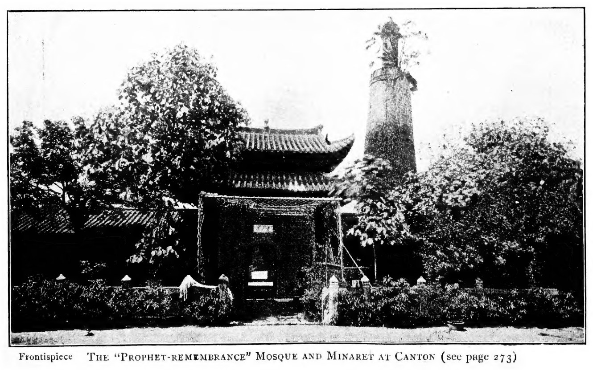
Mosque and Minaret at Canton (the “Pagoda-without-ornament” mosque)
(original Frontispiece)
To my Wife who has bravely shared many years of pioneer missionary
service with me in West China
Foreword
There are some heroes in history whose lives have been rescued from
obscurity many centuries after their work was accomplished; who came to
their own and received their meed of praise long after they had done
their work. The contrary is true of the Prophet of Arabia. His Koran,
although never intended to be his autobiography, introduced the story of
his life from Morocco to Central Asia in less than a century and is
to-day the best known book to one-seventh of the human race. There is
also no dearth of biographies of Mohammed in the various languages of
the Near East where his life, teaching, character and his career have
left an indelible impress upon all literature. It would be easier to
remove fossils from marble than to eliminate the influence of Mohammed’s
life from the Arabic language and literature. The whole of Moslem
Tradition — all its vast accumulation — finds its sole material in what
Mohammed said or did or allowed. The earliest biography of Mohammed of
which we know is that by Ibn Ishaq (a.h. 151). The original is not
extant, but it is quoted and referred to by Ibn Hisliam (a.h. 218) in
his famous life of the Prophet. An extensive commentary on Ibn Hisham’s
life was written by Abul- Kasim Abd ar-Rahman al-Suhaily (a.h. 581)
(printed in Cairo in 1914). Katib Al-Waqidi (a.h. 207) and al-Tabari
(a.h. 310) are also well-known sources. The most extensive and critical
study of the Life of Mohammed for Western readers is contained in the
Annali dell’Islam by Leone Caetani, the Italian orientalist in nine
folio volumes. In the English language we have
Sir William Muir’s ” Life of Mohammed ” in four volumes; the “Life
and Teachings of Mohammed” by Sayid Amir Ali( 1873);Koelle’s “Mohammed
and Mohammedanism” (1889); Margoliouth ’s “Mohammed and the Rise of
Islam” (1905). The Life and Religion of Mohammed as contained in Shiah
traditions was translated from the Persian by James L. Merrick (1850).
In addition -to these English works there are a number of biographies of
Mohammed in French, German, Italian, Dutch and Danish of considerable
importance. The most popular life in Arabic is called Insan ul’Uyim,
popularly known as Siratul-Halabiya, in three volumes. This is the.
chief source of the shorter ” lives ” written by Moslems in the various
vernaculars and is fairly well-known in China among the Ahongs. In view
of this wealth of literature the question may well be raised — why
another life of Mohammed? The reason is contained in the sub-title of
the book before us. The translator gives all English readers their first
opporr tunity to study the great Arabian prophet through Chinese
spectacles. Most of the material here given is familiar to the student
of Arabic literature, but it is of deep interest to see how the mass of
traditions has been sifted, adjusted, and even deliberately falsified to
fit in with Chinese ideas and ideals, an environment which has given the
familiar story an entirely new aspect. Confucianism has modified Islam
in China and the reader will note with surprise how far the Sage of
Cathay has compelled the Chinese author by omissions and additions to
whitewash the story of Mohammed’s life. We cannot, therefore, expect
this volume to be of great value[?] from the critical standpoint, for it
really is, of necessity, a translation of a translation; but from a
practical standpoint,, and to introduce the reader to the Mohammed of
China who is the ideal of character for perhaps ten million Chinese,
this volume is of unique value. We congratulate the translator, and
express the hope that this book as well as his many other books for
Chinese readers will awaken a new interest in Moslem evangelization.
S. M. ZwEMEE.
Cairo, Egypt.
LITERATURE FOR MOSLEMS Prepared in Chinese by ISAAC MASON
The Life of Mohammed. « [Chinese] K S [Chinese]. Pp. 90. Sweet First
Fruits. S S [Chinese] W Is If IB. Pp. 126. Ghulam’s Renunciation, a
St K W IB. Pp. 68. Christ in Islam, mu [Chinese] tfi[?]ni[?]. Pp.
36. Jesus Christ. [Chinese] H »& S it. (Mandarin.) Pp. 14.
The Forg-iveness of Sin. M ± SS H tt- Pp. 38. Warning: Agfainst
Intoxicants. [Chinese] m M W: M % ttmM- Also A LIST OF
Chinese-Moslem Terms
Preface
The story of the life of Mohammed may be read in English from
well-known and standard works, so it may be wondered why Chinese books
should be laid under contribution, especially as these are themselves
chiefly translations from the Arabic in the first instance. There is,
however, an interest in securing the Chinese view-point and occasional
comment, which makes it worth while to translate some of the accounts of
what is more generally known, as well as some portions which are omitted
or but lightly touched in the standard lives of Mohammed’ to be found in
English.
The story of Mohammed must have made a deep impression on the minds
of his followers in China in order, not only to keep alive the Faith for
over one thousand years at such a distance from the Cradle of Islam, and
amid surroundings so alien from those in which the Faith arose, but also
to cause the number of adherents to so increase that to-day they are
estimated at eight or ten millions. Nestorianism disappeared like water
into the sand, leaving no known adherents in the country; and the same
is practically true of the Jewish communities of the past. What, then,
is the dynamic of this religion which steadfastly refuses to be absorbed
by its surroundings, and persistently boasts its superiority, to all
other systems? While fully recognizing, and giving due credit to, other
causes, I believe that the personality of the Prophet as understood and
believed in by his followers, has been a powerful factor in maintaining
the Moslem religion. A study, therefore, of the Founder of Islam Ks he
has been known for centuries in China, and especially as pourtrayed in
the standard ” Life ” written by a Chinese Moslem, may be not without
interest to some readers.
During a residence of many years in inland China, though I cultivated
the friendship of some individual Moslems and visited a few mosques out
of curiosity, I yet knew very little about the Mohammedans of this land.
When Dr. S. M. Zwemer visited China in 1917 and 1918, he greatly
stimulated the interest of many in the Moslem, people and problems
concerning them, and it was my privilege to be closely associated with
him in considering methods of approach for the Christian message. In
undertaking to assist in preparing special Christian literature, I was
led to make a study of Chinese Moslem literature of which I gradually
secured a considerable amount. There is a fascination in reading of the
doctrines and practices of Islam as set forth in Chinese, but there is
little inducement to translate these accounts, as, in the main, they
coincide with what may be found in English books already existing. The
case seemed different with the book entitled 5?:;i[?] H li 3K jl
[Chinese] H, “The True Annals of the Prophet of Arabia”; this was
written about two hundred years ago by L,iu Chih (S0@) the most famous
of Chinese Moslem writers, of whom a brief account will be found
following this preface. These ” Annals ” are widely known amongst
Moslems in China, and they appear to. be of sufficient interest to
justify a translation. Students of Islam will be interested in comparing
this account with others and noting the variations; in some cases these
are quite important, e.g. the marriage of Zeinab, who is here described
as a virgin who had refused to marry anyone except the Prophet, instead
of being the wife of Mohammed’s adopted son Zeid, divorced to
accommodate the Prophet, — one account causing a great scandal, while
the other gives little ground for complaint. Other concessions to
Chinese ideas and behef s will also be found. To readers who have not
much acquaintance with the life of Mohammed, this book will be found to
present the salient facts, as well as many of the traditions, which have
been handed down through the ages. It will, of course, be borne in mind
that the Text is written by a Moslem, and the translator is not
responsible for the views expressed therein, nor for the accuracy of the
statements made. The translation now offered will help missionaries and
others who read it, to a better understanding of their Moslem neighbors,
and it is hoped the result will be a fuller appreciation of each other’s
beliefs when Christians and Moslems meet; I have usually found Moslems
in China friendly, even when bigoted, and when approached with tact and
in a benevolent spirit, they respond to overtures for friendly
intercourse.
On beginning this translation, I had not read Sir Wm. Muir’s “Life of
Mohammed,” but from about the middle of the work I have had the
advantage of comparing with that classic on the subject. I have had
access to smaller works on the life of Mohammed, including those by
Canon Sell and P. D. ly. Johnstone. I am greatly indebted to Hughes’
“Dictionary of Islam,” by the aid of which I have been able to identify
many names and places which had been put into Chinese from the Arabic,
and also to get light on many references.
The first half of the ” Annals ’ ’ is given in fairly full and close
translation, as dealing with subjects less fully dealt with in other
books; but from the Hegira (removal to Medina) onward, as the story is
largely one of continuous conquests, I have felt free to indulge at
times in selections, and have occasionally summarized tedious accounts,
or have omitted somewhat irrelevant portions, to keep the book within
moderate limits. The numerous ” Forewords ” at the commencement of the
Chinese work, as well as much relating to doctrines and practices, have
also been omitted as not essential to the immediate purpose of this
translation.
I wish to acknowledge my indebtedness to the “Chinese Recorder” for
blocks kindly lent, and also acknowledge the courtesy of Mr. D. E. Hoste
of the China Inland Mission” in giving permission to reproduce some
illustrations from Mr. Marshall Broomhall’s “Islam in China” — a classic
on its subject, and one to which reference is frequently made in the
following pages. Mr. Broomhall says in his book (footnote, p. 74), that
Liu Chih’s life of Mohammed “has been translated [summarized] into
Russian by Archmandrite Fallidius. There also exists a French
translation of the Russian precis.” I have riot seen either of these,
nor heard of them otherwise than in the above note; presumably they are
nothing like so full as the present translation, which is, so far as I
am aware, the first ever published in English.
The first two chapters may be of interest chiefly to those who care
to read of traditions, curious and apocryphal; they give the background
of some Moslem beliefs; but they may be passed over by those who wish to
begin at once with the life of Mohammed, and who are advised to commence
at Chapter 3.
Isaac Mason.
Shmighai, 1—1—1921.
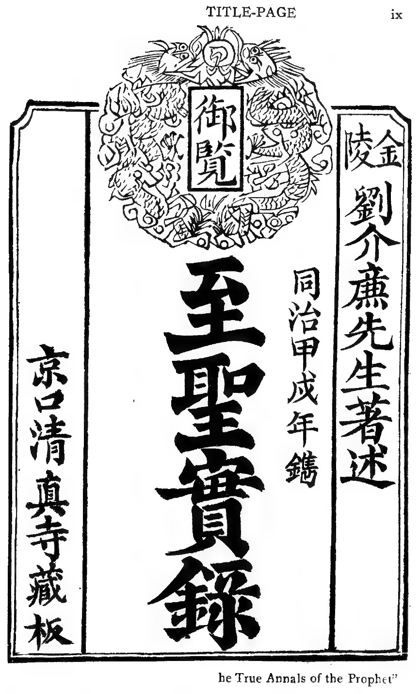
Facsimile of the Chinese title-page: 至聖實錄, “The True Annals of the
Prophet” (original Facing p. ix)
Concerning The Chinese
Author
The Chinese writer of “The True Annals of the Prophet of Arabia” was
the famous Moslem scholar Liu Chai-lien (m if M), sometimes called Liu
Chih (gij ®) of Nanking, who lived and wrote some two hundred years ago;
he was a voluminous writer and produced many other books on different
aspects of Islam, on the Faith, Rites and Ceremonies, histories and
exhortations. He was well qualified for his work, as will appear from
what is given below. His tomb is still to be seen outside the south gate
of the city of Nanking and is a spot to which Mohammedan pilgrims go for
prayer and the reading of the Koran. No other writer’s name is so well
known or highly respected by the Chinese Moslems of to-day as that of
Liu Chai-lien.
The “Annals” have many prefaces and commendations, written by
admirers of Liu, but I will here give only a summary of the author’s own
preface, with the account of how he undertook the work. Telling of his
long preparation for becoming an author, Liu Chih says that, beginning
at fifteen years of age, he spent eight years in study of the Confucian
books and Chinese literature generally, followed by six years at Arabic,
three years at Buddhist, and one year at Taoist books. He then gave
attention to one hundred and thirty-seven kinds of ” Western books,”
after which he concentrated on Arabic studies. He wrote several hundreds
of manuscripts, and printed about one-tenth of them, chiefly along the
lines of the Canons of the Rites and Ceremonies, and of Philosophy; and
now he rounds off his labors by these annals of the life and times of
Mohammed, the whole scheme being thereby completed.
The difficulties and discouragements Liu had to face are recounted;
his relatives and friends disliked his being such a bookworm, and not
attending to the usual affairs of life. He moved from place to place,
visiting many famous spots and securing such material and help as he
could. He pursued his reading among the dust of the carts by which he
travelled, and even when riding on his beast.
Having written his first copy of the manuscript, he tried to get
criticisms and suggestions, but found his friends unwilling to do
anything but give compliments, which did not satisfy him. At last he
heard of a library of one Hsii, of Ts’eng Liu, and thither he went, and
came across a book of records of the Prophet in the Arabic, which was
fuller than anything he had seen before; he rejoiced at this find as a
mark of God’s favoiar, and set to work to re-write the whole of his
manuscript, and finished the work in 1724, having been engaged on it for
three years and changed locations ten times, during which he had
travelled thousands of li, and written the whole of the manuscript over
three times.
After some further remarks about difficulti-es, and with apologies
for short-comings, the writer commits his work to the patience of
readers, only wishing that it had been more worthJ[?] The manuscript
remained unpublished for over fifty years owing to lack of funds, until
one, Yuan Kuo Tsu, raised subscriptions for the purpose, and the book
was published in 1779; it consists of twenty small volumes, and contains
much of interest besides the records here translated. With this
introduction, we now proceed to the “Annals” themselves for our view of
Mohammed and his timeSi
CONTENTS Page Foreword i Preface V Concerning the Chinese
Author. xi CHAPTER I…. I Introductory — The honour and nobility
of Mo- hammed— Records of the ancient prophets — Mohammed’s
ancestry — Transmission of the Light for fifty generations from
Adam. CHAPTER n….28 Wonderful evidences connected with the birth
of Mo- hammed— Adoration of angels — His first ascent to heaven
— Congratulations and alarms — -The “Year of the Elephant.”
CHAPTER in.. ’-2,7 Birth of Mohammed — Legends of his infancy —
Jews and Christians fear him—rDeath of his mother Amina —
Adoption by Abd ul Muttalib — The king of Abyssinia prophesies —
Death of Mohammed’s grandfather — Adopted by his uncle Abu Talib
— Refusal to worship idols. CHAPTER IV.. •• 55 Second
miraculous cleansing of Mohammed — Meets monkBahira in Syria —
Strange dreams — Marriage with Khadija — Birth of Fatima —
Rebuilding the Kaaba — Mohammed adjusts the Black Stone —
Beginning of visions. xiii
xiv CONTENTS ;,, Page CHAPTER V….73 First evidence of
Mohammed’s commission — Khadija believes — The first twelve
disciples — First messenger to China — The Koreish believe and
afterwards turn away — Believers take refuge in Abyssinia — Jews and
Christians try to stir up persecution in Abyssinia. CHAPTER
VI….lie Conversion of Hamza and Omar — Ban on the Hiishim family
— Death of Abu Talib and Khadija — Mohammed stoned at Ta’if —
Marriage with Sauda— Deputation from Medina — Pledge of ’Akaba —
Ascent to heaven[?]Migration to Medina. CHAPTER Vn A.H. I.. 129
The Hegira (a.h.)— Flight of Mohammed— Arrival at Medina— Building
house and mosque — Deputa- tions congratulate — Classification of
followers — Marriage with Ayesha. CHAPTER Vm A.H. 2.. 145
Fatima married to Ali— The Kibla— Battle of Bedr — Abbas believes —
Death of Abu Lahab — Asma the poetess killed — The Beni Kainuka
exiled. CHAPTER IX A.H. 3-4 •• 164 Abu Sufyan’s attack and
defeat — Murder of Ka’b — Hafsa married to Mohammed — Battle of Ohod
— Birth of Hasan — Beni An-Nadir exiled — Sufyan again defeated
— Mohammed marries Um Salmah.
CONTENTS xv Page CHAPTER X A.H. 5-6.. 179 The Mustalik
tribe conquered’[Chinese]-Marfiages of Mo– hammed — Ayesha suspected
— The Fight of the Ditch — Koreish captains slain — Massacre of
the Beni Koreiza-[?]The” Koreish seek peace — Moslem embassies
sent to other countries — The Roman Emperor commends Islam —
Submission-of various countries. CHAPTER XI A.H. 7-8.. 203
The conquest of Kheibar — Additional marriages of Mohammed — Present
of a poisoned lamb-[?]The pilgrimage to Mecca — Three leaders of
the Koreish submit — Battle of Muta and death of Zeid — Sufyan
sues for peace. CHAPTER Xir -A/H. 8[?].. 21c; The conquest of
Mecca[?]— Worshifiatthe Kaaba — Des- truction of idols — An amnesty
proclaimed — Mohammed returns to Medina — The siege of
Ta’if. CHAPTER XIII A.H. 9.. ’225 The Beni Temlm submit — Other
submissions — Mo- hammed lives temporarily away from his wives —
Expedition to Tebuk — Sundry miracles — Death of king of Abyssinia —
Abu Bekr sent on the pilgrimage. CHAPTER XIV A.H. 10.. 234
People of Nejran submit — Death of Ibrahim — Embassies of submission
— The Roman Emperor •
xvi CONTENTS Pack makes enquiries — Three rebels punished —
The Farewell Pilgrimage of Mohammed — Fixing of the Pilgrimage
rites. CHAPTER XV A.H. lo-ii.. 243 The spread of Islam to
distant places — The Pretender Museilma — An expedition to the Roman
frontier. CHAPTER XVI A. H. 11.. 252 Sickness, parting
injunctions, and death of Mo- hammed (June, A.D. 632). Appendix
I. The first entry of Moslems into China 265 ,, II. Stone monument
at Sianf 11…. 277 ,, III. Chinese Mohammedanism.. • 282 Index..
•……. ’. 307
Chapter I
[p. 1] Introductory— The honour and nobility
of Mohammed- Records of the ancient prophets— Mohammed’s
ancestry—Transmis ion othe f Light, for 50 generations from Adam.
Of all things between heaven and earth, Man is the most noble. Among
men there are saints, sages, wise and foolish. The saints, or prophets,
are the most honourable. Prophets are classed as ordinary prophets,
apostles, major prophets, and the most-eminent Prophet. The most-eminent
Prophet- is the highest, and this is Mohammed, the most honourable man
of all time and of all places; therefore he is called the Most Holy, M.
M (hereafter translated the Prophet).
The form and principles of all things are to be found within the
compass of the nine heavens and the seven earths. The heavens are
superior to the earths, and the empyrean’’ surpasses the heavens. The
nature and principles of the [p. 2] Prophet were
situated in the empyrean, therefore his position is more honourable than
any within the heavens, and the earths.
“Sheng” Ji = holy, sacred; in Chinese literature it is used in
reference to Confucius. In Moslem books it is used of the Old Testament
saints and of others of special distinction, including Jesus. It may
appropriately be rendered ” prophet ” in the broad sense of that -word,
and is generally so translated in this work. ” Chih Sheng ” [Chinese] is
reserved specially for Mohammed, whose personal name is avoided when
possible in the original. For this designation, which means the Holiest
or Most Saintly, I have reserved the term ” the Prophet.”
The original is [I[?] [Chinese] and probably represents the Arabic
•Arsh = God’s Glorious Throne (Koran, Surah IX, 31), which is above the
nine heavens. (notes to p. 1)
The earth is divided into Seven continents, and Arabia is the most
honourable of these; the Prophet was a man of - Arabia. In Arabia the
two cities, Mecca and Medina, are the most distinguished; the Prophet
was born in one and’ died in the other. Thus his dwelling-places were
the most honourable under heaven. Arabia was the place where man was
first created and where a country was first formed. Mecca is the most
central spot of all the countries under. heaven; that the Prophet should
have been- born there is another evidence that he is the mos.t
honourable of all.
Of all the tribes of Arabia, the Koreish was the most noble; the
Prophet was a scion of the Koreish. The Koreish regarded the house of
Hashim as the most noble among them; the Prophet was a descendant of
Hashim.. Thus his tribe and his family were the most honourable under
heaven.
Erom the time of creation onwards, never was there a. period so
auspicious as that in which the Prophet appeared[?] • and that he should
be born at just that period is another, proof that he is the most
honourable of all.
The 120,000 prophets scattered throughout success’sive generations
were sent for the instruction of all regions; but each was limited to
one region or one period, and outside of that period or region he had no
standing; and when his particular period was past, his teaching was
superseded. The Prophet unified all teaching, and gathered up all the
books into one; his Book and his teaching are the most honourable of all
under heaven and of all, time. Therefore. his teaching can be efifective
anywhere, and his Book will- [p. 3] last for
ever without being changed or superseded. This is another proof that he
is the most honourable one.
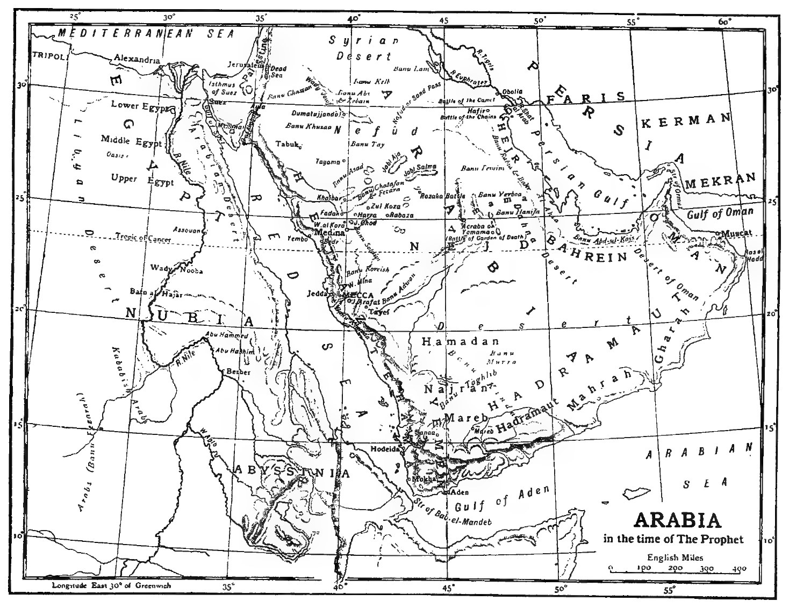
Map of Arabia in the time of the Prophet (original
Facing p. 2)
In the case of ordinary people who reckon up theirancestry, whether
ten generations or several tens of genera-tions, there are none.who can
claim that all their forbears have been worthies and men of rectitude.
The Prophet could, from his father and grandfather, go back right to
-Adam, 50 generations, all having a reputation for goodness: if; they,
were not prophets, then they were kings, and all ’ were highly honoufed
by their contemporaries, and they transmitted their worthiness to their
descendants. The, Prophet’s genealogy was the most honourable ever
known.
The ancestors of the Prophet, going right back to Adam, had never
worshipped idols or prayed to heathen gods; nor was there any unclean
person among them. This virtue of the ancestors, nourished and
cultivated generation after generation, culminated in the Prophet, and
in accumulated virtue he was the most honourable one.
The original form of an ordinary man is contained in the backbones of
his ancestors; but the Prophet’s original form was seen in the foreheads
of his ancestors. As the ’ head is the most noble part of the body, and
the forehead is the most honourable part of the head, we thus see that
the place from which he received his likeness was the most
honourable.
The original form of the Prophet was manifest on the forehead of
Adam; his original principle [?]as situated in the highest part of the
ninth heaven; his exalted name was. found in the foremost part of the
empyrean; how could he be other than the most honourable one?
[p. 4] The prophets and worthies may be
likened to the stars, and the Prophet to the sun. Transforming by means
of instruction may be likened to the baking of a cake; the former
prophets planted the wheat and made the flour and mixed it suitably; the
Prophet completed the process of baking the cake.
The Prophet was the most cherished person of the whole creation,
wherefore the lyord God[?] said to Jesus: ” Had it not been for
Mohammed, 1 would not have created heaven, earth, men and spirits.” So
there can be no doubt that his was a special life.
In creation, the Prophet was the most honourable; his natural
endowments and gifts, and his aspirations, were of’ the highest; his
family and his dwelling-places were most noble and distingiiished. There
was not a single thing connected with him which was not most honourable,
hence he is called the Most Holy Prophet. The roof of heaven bore his
name, and on the gates of, heaven it was inscribed; the ancient books
recorded his name, and angels and devils extolled it. The Prpi[?]feet’s
own body bore the stamp of his name, and heaven, earth and all things
were created in the likeness of his name. Who or what, is there, in
heaven or’ on earth, which can surpass the Prophet? Everything reverts
to the Prophet like all streams return to the sea. Those who return to
him are the correct, and those who do not return to him are the
deceived. In highest honourj who can be compared to him?
I. ” Chu” i =.Lord. is the term commonly used by Chinese Christians when
referring to the Lord Jesus. Moslems speak of Jesus as a prophet or
apostle, and reserve the use of ” Chu” for God tbe Supreme, very often
adding [Chinese] ” chen ” = true. (notes to
p. 4)
[p. 5] A Record of the personal appearance of
the ancient prophets.— Abu Bekr, the successor to Mohammed, sent a
messenger named Hsi Shang to Rome[?] to spread the Faith. On arrival he
was adrriitted to the presence of the king who sat on his throne among
hrs ministers, in great state. On entering, the messenger Hsi with a
loud voice repeated the Kalima (There is no deity but God, and Mohammed
is the Apostle of God), at which the palace shook, and the king in fear
asked the visitor to be seated. Hsi bowed and seated himself.
” Your country is a place of etiquette,” said the king, “why do you
not koiow{knock head on the ground) when you see the king?”
“Those who belong to the Faith do not koiow,” answered Hsi. “The
ceremonies instituted by the Prophe’t are different from those of
ordinary people.”
Pie then proceeded to explain the ceremonies in detail, and
emphasised that the koiow was reserved for God alone, and could not be
given to kings and princes. The king inquired further about the Faith
and finally expressed his pleasure at having had the opportunity to
become acquainted with it, and offered to give up half his kingdom to
Hsi iit he would stay at the palace and daily give instruction in the
matters concerning the Faith.
One day the king remarked that he had in his possession a precious
thing, and he desired Hsi to fast and purify himself and then examine.
this thing. Hsi did so, and received a casket made of pure gold and
containing a smaller [p. 6] casket inside; the
king himself opened this smaller casket and took out a book in which was
described the personal appearance of the ancient prophets, as follows:
—
I. while Rome is the name given, it may be that the place referred to
was not the city of Rome, but the seat of the Eastern Emperor for the
time being. (notes to p. 5)
Adam, the ancestor of man, had a beautiful face, with •flashing eyes.
The upper part of his body was unclothed, and he had much hair. His hair
was made into two plaits, divided and thrown to the right and the
left.
Of Noah it was recorded that he had a large, head, and red eyes;
dishevelled hair, and a mournful appearance.
Abraham had a prominent nose, an Imperial counter nance with an eye
like an emperor; straight eyebrows,.expansive forehead, large ears,
and.vyhite beard and whiskers in three curly divisions.
Moses was strong and fine-looking; with round head, puckered mouth,
sidewhiskers, chubby nose, thick lips, bright and piercing eyes; and
from his person there emanated an unusual fragrance. He made a dignified
appearance.
Lot had an admirable appearance, with his hair hanging down, and a
complaisant countenance.
Isaac had a pleasing face, the colour of an apple; he was graceful
and retiring, humble and harmonious in disposition.
Jacob was similar to Isaac, but hfe was a little harelipped in his
lower lip.
Ishmael was of beautiful appearance, with aquiline ’nose, tall body,
modest and well-controlled; his face was slightly red. This man was the
directancestor of the line of Mohammed.
Joseph was unusually plump and good-looking, with a face like the
clear bright moon.
David’s countenance was ruddy; he was corpulent and had a short
neck.
[p. 7] Solomon was ruddy like David, and had
big hands and.Jong feet.
Of Jesus it was recorded that he,had a white face, black hair,
regular eyes, and long eyebrows. There was also a description of the
appearance and deportment of Mohammed, but these are spoken of later
on.
On seeing these records, Hsi salaamed and said: “1 •-am very
fortunate to receive this book and to know about •the appearance of the
prophets; if I find that the descrip-:tion of our Prophet is correct,
then that of the others will also be correct. May I venture to ask where
this book came from?”;
” It was given by God to Adam who was then able to personally picture
the appearance of his descendants the prophets,” replied the king. “At
first it was hidden in the.West, at the place where Adam died;
afterwards it was removed and committed to certain of the prophets, who,
fearing that in the course pf time it would be lost, had it transcribed
and handed down to the present. First it was on slips of crystal, and
afterwards on paper.. You have obtained from me a sight of this book and
know about the former prophets; I from you have obtained the
knowledge.that this casket is not a common one, and I have
moreover.Jearned to know that Mohammed is truly -the Prophet, I •would
like to give up my country and be a Moslem, and cause that the Moslem
Faith should be observed throughoiit this country.”. The king then
richly rewarded Hsi Shang, but Hsi would not receive the rewards.. On
his return he gave a;f uU account of the matter to Abu Bekr, who was
pleased.and said: “He cast away his -kingdom, and you have:gained a
kingdom;, he would rejoice to be poor, and you,are glad that he has
wealth.”
[p. 8] The Testimony of the Historic Books to
the virtue of the Prophet. — One of the ancient books says that Adam
said to his descendants:— “God made me to be the ancestor of mankind,
and to be the most noble of all living things; this you all know. But
among my posterity there will be one more honourable than I, named
Mohammed, who will be the Seal of all the prophets. His wife will be
named Khadija, whose inner virtue will exceed that of Eve. In my case
the devil brought about depravity and rebellion; in his case there will
be brought about cot rectness and good results.”
The Taurut (name given to the Books of Moses) says: ” The Prophet
will be born at Mecca, and will receive his commission there, and from
that city will give his Imperial commands. He will be of the direct
descent from Ishmael.”
The Injil (name of the Book of Jesus, or the Gospet) says: “Jesus
said to his disciples, ’You love me and believe me: receive my
commandments; God has told me Ihat after me there will be no prophet
except one, that is Mohammed. He is the chief of all the prophets, and
their Seal. His influence will spread to all quarters, and his virtue
will enrich and pervade all generations. All religions will be amended
and revert to his one religion, and never change again to the end of the
ages. When this prophet receives his commission, you, or your
descendants who are then living, should follow his religion and tell the
true words to others. There will be Jews who wilPnot believe your words,
but will in many ways seek to injure you; ybu may commit all to the
Prophet who will believe your words. Some of my followers will
ultimately mistake me for the Lord, and not believe the Prophet of the
last age; but you [p. 9] must not agree with
them, otherwise in the days that follow, religions will be false and
mistaken, and in hopeless confusion.”
Of the Injil, or Gospels, there are four, namely Matthew, John, Mark,
and L,uke, all of which are said to be books given by God and containing
the words of Jesus. It is not generally known that originally there was
only one Gospel, in the Syriac language, and afterwards the disciples
each altered to make his own Gospel, and these were propagated to all
quarters. The style of the writing being different, it was difficult to
keep the meaning in agreement, and it could not be other than that
gradually mistakes arose and the original text was lost sight of. The
main body of the Jews and Christians had no longer access to the ancient
text, but could only hear what the schoolmen handed on; the four volumes
also disappeared in course of time, so it was all the more difficult for
people to know what had been ihe original text. Hence, though there is a
Gospel, it is as though there was none. In the time of Mohammed, Rome
alone had one remaining ancient copy, and afterwards that also
disappeared. God commanded our Prophet to spread the Faith to all
quarters by means of the Koran, in one language only — Arabic — to be
recited and transcribed, but not translated into other languages; hence
it remains the same for all time, and its principles are the same in all
countries.
The Zabur (Book of David, the Psalms) says that God foretold to David
that Jesus would be a prophet whom the people would take to be the Lord.
David said to God: ” Why not send a messenger from heaven to proclaim to
the people that Jesus is a created servant, and is not to be worshipped
as Lord?”
[p. 10] ” I do this,” said God, ” to try the
people of the world and see who are true and who are false, who are good
and who are untrustworthy.”
God also -foretold to David that Mohammed would be the Sealed Prophet
of the last times; his character would:be higher than that of previous
prophets as the sun is stronger than the stars. David asked what his
character would be like and God answered: “He will have a compassionate
nature and a.heart. of salvation; his rites and ceremonies will manifest
his goodness, and he will be strict and dignified in governing. Plis
efficacious actions will come naturally, and everything will respond to
him; his rewards and punishments will be just and correct,.and everybody
will incline to submit to him. From his birth to his. death he will be
free from anything selfish or underhand.”
The Jews had a hidden book in which was written the name of
M.ohammed, but they would not tell the people Their book said that at
the time when he was born there would appear a special star for the
occasion, and the same when he received his commission; the star was
clearly seen, and they knew that this was the man referred to, yet they
would not follow him, but were envious and afterwards sought to kill
him. God, however, determined to protect the Prophet and to completely
cut off the Jews’ religion: He also gave strict orders that those who
followed the Faith were to be regarded as the correct, while those who
opposed would fall into delusions from which they would never
escape,.
(Here follow various other testimonies, including that of the angels,
to the excellence of the Prophet; translation of these is omitted. )
[p. 11] THE LIGHT OF MOHAMMED i-i
The Record of the transmitting of the Light of Mohammed through
successive generations of his ancestors.— The Prophet was first
established in the:pre-existent heaven and earth, his designation then
being Ahmad, and he was the progenitor of ail creation. When he was born
into the later heaven and earth as the Completer of the work of all the
prophets, he was named Mohammed.
He was born at Mecca and died at Medina. He was •the Holy One and the
Emperor of Arabia, the Teacher and “King of lOO generations. He was the
descendant of Adam in the 50th generation, and the fifty in the line of
succession were all famous men, but the details of their fame and the
history of their deeds, and their ages, cannot be fully recorded. In the
present instance we have examined the books,” Records of Arabia,” “The
Records of the Prophet” and “The Universal Records of the enumerated
Prophets,” and from these we know, in a general way, the things which
follow. The first Ancestor, Adam.
Adam was the first ancestor of all men. In six days God created
heaven and earth and all things, and on the seventh day he created Adam,
using the essence of the four elements for his body, and the nature of
the True Unity [?]God) for his soul. Adam having been given life, then
the form and principle of all men were received from his Jjody and
nature, being originally enfolded in him. There was an exception in the
case of Mohammed whose original [?]orm was manifested on the forehead of
Adam, the form being like to a precious gem, brilliant as the sun and
moon.
From Adam’s side Eve was born, and they were paired <as husband
and wife. When Eve conceived, the precious [p. 12] Light was transferred to her breast, and when
Selh was born, the precious Light was manifest in his forehead. At that
time Adam received command from God and made covenant with Seth, saying:
“Reverend indeed is this Light! the purest ever known. Cultivate thy
person; preserve gravity of demeanour, and observe the commands. Seleiit
only a virtuous woman for wife, and let your intercourse be pure. Be
careful in all movements and watchful over food; pay no regard to what
is not correct, nor think of what is not according to the right. Tell
these instructions plainly to thy wife and to thy son, and let them go
down to thy descendants, and in the observing thereof prosperity and
happiness will be assured.” Seth, — the second generation.
Seth received the covenant, and he selected a beautiful wife,
Weihowai, whose face and virtue were both excellent. The match was
arranged by the angels. Adam presided over the marriage, and made a
beautiful house to which to take the bride and consummate the ceremony.
When Zanuish was conceived,, the Light on Seth’s forehead disappeared,
and was manifested on the breast of his wife, and when Zanuish was born,
he bore the precious Light on his forehead.
Seth took Zanuish to Mount Zabir (Sinai) and enjoined him, saying:
“God gave command to my father, the Erhperor, to bind upon me and my
descendants to reverently preserve from all harm the sacred Light, the
purest ever known. Do not be reckless in taking a wife, nor otherwise
behave unbecomingly; take heed to your body, and be watchful over your
passions. You are now the bearer of the covenant tof the precious
command.” Zanuish received the [p. 13] command
with obeisance and said: “My father’s instructions are reverently
received; your unworthy son will not disregard them, and will not dare
to losa the command which has been given by the Lord.”
(There are many names in the, succession which follows which have
little or no comment on them; such names are here omitted.) Noah, of the
10th generation, was the 40th ancestor above the Prophet.
He was one of the major prophets. In his time the hearts of men were
crafty and vicious, outraging all natural goodness, which greatly
angered the Lord who sent a flood and drowned them all. God commanded
Noah to make a boat and go on it first; he obeyed this instruction and
believed the doctrine; with him there went into the boat over seventy
people who remained in the boat floating about for three months, then
the waters subsided. Noah commanded’his sons to regulate the waters in
the four quarters, which accounts for the four quarters of the earth
being peopled. The eldest son, named Shem, was the one to vihom was
transmitted the sacred Light; he watched over the middle portion of the
earth, that which is now Arabia. The second son, named Ham, controlled
the western part of the earth, which is now Europe. The third son, named
Japheth, controlled the eastern part of the earth, which is now China.
Abraham, of the 21st generation, was the 30th ancestor above the
Prophet.[Chinese]
I. Mohammed is definitely stated to be the both in line of descent from
and including Adam; our autlior here and elsewhere seetns to make the
count to be 51, confusing his own figures. A Chinese-Arabic genealogical
chart in my possession gives Mohammed as the 52nd. (notes to p. 13)
[p. 14] He had unusual wisdom from his birth,
and at seven years of age he took an axe and cut ofif the head of an
idol. Those around que&tionied him:
” Have you killed the god? ”
“Ask the god,” he replied.
” The god cannot speak.”
“If he cannot speak,” said Abraham, “he must not be’ vvorshipped; you
should worship one who is able to do’ something.”
Those around had nothing more to say. Abraham. could thus reason back
from what had form and likeness to the God who has no likeness, and so
he helped to prosper the correct Faith.
In the time of Abraham the heavens were pure and the earth was
peaceful,.aqd all things. were good; evil spirits hid themselves; the
seasons of the year were propi-.. tious and everything was as good as
could be desired. The, prophet disbursed wealth; he had a continuous
round of entertaining guests, visiting the sick, lending to the poor,
taking pity on orphans and caring for the aged, and looking after the
dying and the mourners. Near and distant, there were none who were not
benefitted by him, and as he dealt liberally with men, so God dealt
liberally with him; his oxen, sheep, and camels were ten times as inany
as other men had.
One day Abraham said to God: “L,ord! what virtue have I that I should
receive all these blessings from Thee?”
” Dost thou not know,” answered God, ” that the Light of Mohammed has
come down from Adam to Thee? the further the succession, the more bright
is the light. Dost [p. 15] thou know why heaven
and earth are pure and peaceful and everything happy? Among the
descendants of Adam and the ancestors of Mohammed, thou art the most
honourable. Mohammed will be the most honourable of thy descendants, who
will bring to completion all religion;this work takes its beginning from
thee; thy birth is an earnest of his birth, and thy religion is an
earnest of his religion… He will put into practice and propagate thy
religion and inherit thy rite of circumcision; he will amend the
teaching of all the former prophets, and gather all up into one Kaith. O
Abraham, take great care of this Light; carry out my previous covenant,
and pass on the command to thy children and grandchildren, and let not
the succession be broken.” Abraham on hearing this bowed his head and
said, ” I thank ijiy L,ord and reverently receive the commarlds, and
promise to carry out my Lord’s purpose.”
Abraham afterwards sought a daughter of his uncle as wife; Sarah
admired his virtue and being desirous of transmitting the sacred Light,
she was united to him in marriage. But on coming together, Sarah was
barren for many years; so Abraham married Hagar, who was very poor, but
who conceived at once, and the Light was transmitted. Sarah was vexed
and mourned day and night until she lost both sleep and desire for food;
the Lord had compassion on her for her genuine love of the prophet, and
promised her that she should be rewarded by having many prophets
descending through her; sO she also conceived and bare Isaac. Hagar gave
birth to Ishmael the one by whom the Light was transmitted.
God gave a revelation to Abraham; and when he was about to die he
gathered his sons to him and instructed them, saying: “Ishmael, God
loves thee, and thy sons and [p. 16] descendants
will be prophets and kings; the kings will be many, but the true Prophet
only one. Reverently hold to the command of the Lord, and protect the
Light generation after generation without intermission. Isaac, God loves
thee and will bless thee and cause that thy sons and descendants will be
prophets and kings; the prophets will be many and the kings few.
Reverently submit to the Lord’s commands, and preserve natural goodness
generation after generation without intermission.”
Abraham gave oath to Ishmael on Mount Zabir, saying: “This is the
place where our Imperial ancestor received the command; this is the book
left by him with instructions to me to pass on to thee and to thy
descendants; thou art now the appointed one with the received command.”
It was an auspicious occasion, and the clouds dropped their sweet dews.
Kedar {?), the son of Ishmael}
From his birth Kedar had valour and resolution; he developed
wonderful ability in the eight arts, surpassing all the other men of
valour; he was a skilled archer, being strong in the muscles of arms and
sides. He had lorig hair upon his body. He was fond of hunting and
riding, and when he went out hunting his forehead bore the sacred Light
and the graceful deer were dazzled as by the light of the sun. All the
talented women and girls desired to be in the Imperial household,
considering it would be good fortune to be wife or concubine. When Kedar
was stirred by these attractions, he suddenly became conscious of a
[p. 17] prompting to be careful in observing the
previous covenant and to reverently protect the sacred Light.
I. In Gen. XXV. 13, the firstborn of Ishmael is Nebajoth, followed by
Kedar. The Chinese historian uses the characters?fe [Chinese]’] % which
more nearly resemble Kedar, hence this name is used in the translation.
(notes to p. 16)
So Kedar looked all around for a woman of exceptional goodness among
the irreproachable families and took lOO wives, but the Light was not
transmitted; for this he grieved night and day until he could neither
sleep nor eat. God then sent an angel to say to him: “As thou art the
king, why canst thou not transmit the Light in purity and correctness
like those of former days? Thou also should by purity and correctness
seek this favour; be resolute in desire, and conform to the sacrifices,
then thou wilt obtain thy desire.” Kedar thereupon offered 100 camels as
a sacrifice and they were burnt up from heaven. He was also conscious of
something telling him to go and sleep under a ’certain tree, and he
could marry the one whom he should dream about. In his dream he heard a
voice, saying, ” The sacred Light is the source of all light. Arabia is
most eminent of all countries. In Arabia there is a woman named Adsoer,
a chaste virgin, good and virtuous.” Kedar understood, and sent to
Arabia, and obtained the princess Adsoer and married her, and forthwith
she conceived and the Light was transmitted to their son Haimehli.
When Haimehli was grown up, Kedar observed the former regulations and
gave oath to him respecting the covenant, on Mount Zabir. While they
were there, suddenly there appeared a young man who saluted them; on
being asked why he had come, he replied that he had come on important
business; then with his hand he touched the ear of Kedar who immediately
died. Haimehli was wroth and said, ” Have you slain my father? ” The
young man said, ” Look carefully and see if he really is dead.” When
[p. 18] Haimehli turned round again, the young
man had disappeared, and he then knew that it was the angel of death,
and that he was now fatherless.
Edudeh, one of the ancestors, was skilled as a writer and was the
forerunner of all writers; none of those of his time could equal
him.
Munidu was skilled in military art; he often fought against the Jews,
and always was victorious.
Nadsaer[?] his son, was still more famous in his handling of soldiers
and in his calculations; he had a ” spirit flag,” and when this was
unfurled, “spirit troop’s” came to him. Erom his time forth, the Jews
never dared to again cause trouble.
Mtcdsider was a king of fine appearance and talent; he chose for
-wife Hochimeh, a woman of exceptional beauty, and virtue. But husband
and wife-grew old without having a son, and the Light remained
untransmitted. When urged to take a concubine, the king said that the
Light would not be transmitted through such an alliance; and when again
urged to take other wives he said that he should not find one more
virtuous than his present wife. The people feared that he bore the Light
in vain, and that their expectation was about to fail. Then God did a
mar[?]ellous thing and a son was given to this couple in their old age.
This son was not only wonderful because of his birth, but was also
remarkable for his talent and knowledge and for the way he acquired
learning without a teacher. His people regarded him highly, and when he
was elected king, the sound of sacred praise came forth from behind
him.
Nadsuer, of the 3/‘th generation, and the r4th above Mohammed in the
ancestral Une,[Chinese] was king of Mecca; [p. 19] his fame was spread far and near, and the
transforming influences of his virtue extended to people and to things,
and by general consent he was given the name Koreish, meaning that he
was the most noble in all the world. All those who are known as the
Koreish spring from his line. Nadsuer dreamed that out of his back there
grew a tree with many’ branches and luxuriant foliage; it reached right
up to heaven and the light of its leaves was dazzling. Innumerable
people,,fair of countenance and with splendid physique, climbed up its
branches. This was a sign of his incomparable honour, and that from his
posterity there would arise, a great prophet who would be able to amend
all past teachings and put away idols and images; the people of the two
sects— Jews and Christians’— would plot to kill him, but God would
protect him, and by breaking up their schemes, would cause their planned
mischief to fall upon themselves. [p. 20]
hashim, the great-grandfather of Mohammed. His original name was ’Amr,
but he was called Hashim because of his benevolence and virtue, which
were of exceptional quality, so that there were none of the people, near
or far, who did not share in the favours of his bountifulness; therefore
everybody extolled him, and people came from all countries to his court.
When they saw that his forehead bore the sacred Light, bright as the sun
and moon, and understood that a great prophet was about to appear, then
from kings and dukes, and great and rich families downwards, all
selected their most admirable women, taught them decorum and dressed
them in fine clothes, with precious jewels as adornment, and sent them
in chariots as presents to add still more to the felicity of the king,
and to assist in transmitting the Light; but he would not receive
them.
I. See Note i, Page 13. (notes to p. 18)
2, In the original introduction it is stated: “In this history the term
rl J6 (two sects, or clans) refers to Jews and Christians, The Jews were
followers of the teaching of Moses, and the Christians were followers of
the teaching of Jesus. At first they both acted according to the
teaching of their respective prophets; they worshipped the One God only
and had no irregularities. Later on they were affected by heresies and
worshipped the gods and served idols. When our Prophet came to restore
the correct religion and to sweep away heresies, everybody submitted
except these two sects who were obstinate and would not fully submit but
to the end remained in heresy.” It will be seen how, again and again,
the people of these two religions are described as plotting together for
the injury of Mohammed; the historian either does not realize the
division between Jews and Christians, or else he supposes that the
hatred of them both was so strong as to cause them to forget their own
divisions in the intensity of their desire to put down the new religion.
(notes to p. 19)
Rome was at that time the principal country in the world, and its
king sent an envoy with a letter, desiring to contract that his daughter
should be married to Hashim; but Hashim would not consent because she
was a Roman Catholic; so he simply returned thanks and said, “There is a
decree of Heaven which must be taken seriously into consideration, and I
will wait for this before taking action.” Hashim went up Mount Zabir[?]
and ther performed a great sacrifice and prayed, and an angel
transmitted the command that he should marry Salmah; on enquiry he found
that she was the daughter of a poor family, but chaste and good, so he
married her, and there was born Abd ul Muttalib, and the sacred Light
was transmitted.
!• “B ib”[Chinese] Zabir, is a name for Sinai, but in view of the
distance of that mounlain from Mecca, it may be that some other mount is
here referred to.
[p. 21] Hashim in his last illness called the
men of the Koreish tribe, who came to his bedside, and he charged them
saying: “You and I are all Koreish, from one ancestry, all the posterity
of Abraham and Ishmael: God sincerely loves you all, and has caused you
to live in a land of blessing. I have received the blessing of our
former kings, and the favour of the Lord, that I should be your Head. I
am now seriously ill and can no longer wield power, so I hand over the
precious heirlooms of the kingdom, — the flag of Nadsaer, the bow of
Ishmael, the lock and key of the Kaaba, — all these I give to Abd ul
Muttalib as he will inherit the throne; hold him in esteem, and do not
transgress against the command.”- When Hashim died, Abd ul Muttalib
succeeded to his position.
Abd til Muttalib, the grandfather of Mohammed, in the 48th generation
from Adam. P’rom his birth he was very modest, and,in his youth was
grave and respectful, and as a young man he had no disposition to the
usual follies; he was dignified and respected as he moved among the
elders. His forehead bore the sacred Light, brightjis the lustrous sun;
whenever he went out those who saw it had their path obstructed by the
brightness of the Light. His father Hashim arranged for him to marry
Kubehlieh, by whom there was born to him Haris. His wife Kubehlieh
dying, Abd ul Muttalib married again, taking Tehsing. When he succeeded
to the throne, all the countries congratulated and sent presents;
everywhere there was tranquillity, and the winds and rains came at their
proper seasons.
Abd ul Muttalib’s son Haris saw in a dream a man who called out that
Abd ul Muttalib should descend the pure well; Haris told his father, who
did not know what could be the meaning. Another day he- dreamed that the
man said. [p. 22] ” Descend the Zem-Zem spring.”
But they did not know where this was, so they prayed the Lord to make it
clear to them. That night the man in a dream described more fully by
what signs the place could be known, and one day as Abd ul Muttalib was
strolling near the sacred temple, he saw the appointed signs, so he
called his son Plaris to bring a hoe and dig, and they found a dry well,
which was the one dreamed about. Abd ul Muttalib wanted to go down at
once, but his son said he had better not. They then told the people, and
the people said he must not go down lest there should be some
misadventure. Abd ul Muttalib said: ” It is the command of Heaven; I
pray the Lord to protect me; I vow that when I have ten sdns I will
offer one of them as a sacrifice in thanksgiving for being kept’ from
harm.” He then, by means of a rope, descended to the bottom, and
suddenly saw a bright shining light, and on looking more carefully he
saw several fine swords which he brought up; when the people saw them
they congratulated him, saying that these were propitious omens which
should be kept either in their own circle, or else divided among the
surrounding towns. Abd ul Muttalib said that these precious articles
belonged to Mecca; they were public things, and must go into the sacred
treasury. Water was then seen, bubbling up in the well, and this was of
extraordinary sweetness; at the time they, called it “holy water,” and
it is now known as the Zem-Zem well; all who go on the pilgrimage must
drink of this water.
Abd ul Muttalib had five wives, and begat seven sons, but the Light
was not transmitted, and his grief was shown upon his countenance. One
night he had a wonderful dream, at which his whole body trembled. He
went to. [p. 23] enquire of a diviner and told
him the dream, saying: “I dreamed that from my spine there came forth a
white cord, with many rings and knots, and there were four sections, one
tied up to heaven, and one reached down to earth; one went to the east,
and one to the west; I saw also a green tree of Paradise, on which were
all manner of f ruiis, and standing beside the tree were two venerable
old men, and when I asked their names, one said he was Noah and the
other said he was Abraham. They called me to them and said, This tree
represents thy genealogy; the appointed time is approaching, and all
idols and images are about to be destroyed.” On hearing this, the
diviner was alarmed, and said-: “This dream means that there will surely
come forth from your spine a remarkable man; heaven, earth, angels and
men will all be within his control. The rope implies much support, and
the rings and knots indicate the greatness of his mission and the
eminence of his character. The Noah seen in the dream indicates the
severity which will be dealt to unbelievers and opposers; and Abraham
indicates the blessing and benefits which will be the portion of those
who follow. The teaching of Abraham will henceforth be great and
luminous.” On hearing these words, the countenance of Abd ul Muttalib
changed to gladness. After a few more years, as the Light was still not
transmitted, he was grieved again and said: “1 am old, my white hair
flutters in the breeze; 1 am wearied of the affairs of government, and I
am bored with entertainment of guests; yet the Light is not transmitted
— why do I still wait?”
One day he dreamed of an angel who said to him, “Dost thou know
Fatima? seek her in marriage.” He therefore married Eatima, the daughter
of Erbenli, and by her two sons were boi-n, Abu Talib and Zubeir, but
the [p. 24]. Light was not transmitted. One day,
when thirsty after hunting, he drank of the water of Zem-Zem well and
returned to his home, and Fatima conceived and the Light was
transmitted; when the child was born he had on his forehead some red
lines forming the word Abdullah, and the sacred Light rested on them, so
they gave him that name. This was the youngest son of Abd ul
Muttalib.[Chinese]
Remembering his vow that if he had fen sons he would offer one as a
sacrifice, Abd ul Muttalib now prayed to the Lord for a command as to
which one it should be. The command was given to cast lots, and the
youngest son was taken. Abd ul Muttalib prayed again, and said, ” O God,
Thou knowest that this is my best-beloved son, and besides, his forehead
carries the sacred Light.” The command was then given to cast lots
between the son and a camel, to see which should be sacrificed, and
again Ihe son was taken.. Muttalib asked to be allowed to cast again
between his son and ten camels, and once more the son was taken; then
the father added to fifty camels, and still the son was taken. Finally
he added to one /tun dre d ca.meand cast lots between them and his son,
and this time the camels were taken, so he sacrificed them and redeemed
his son.
Abdtillah, the father of Mohammed. On the night when Abdullah was
born, away in Syria several thousand /r distant, people said one to
another, ” The father of the Prophet is born.” The reason was that a
prophet of past days named Zachariah, who was killed in battle, had left
an injunction that his white fox-skin garment which was dyed [p. 25] with his blood, should be kept in the national
treasury of Syria, and when they saw the blood-stain become freshlooking
and drip, then they would know that the father of Mohammed was born;
this sign was fulfilled, so they knew. When the scholars of the Jews and
Christians heard of it, they were alarmed and said, ” We shall not last
long now.” They then collected a lot of ruffians to go to Mecca to kill
him, but God intervened to protect him, and caused them for some reason
to turn back when half way there.
Another account says that Abd ul Muttalib, in his old age, married
Hala and begat Hauiza, who was born shortly before Mohammed; this does
not agree with Abdullah being the youngest son. The Chinese writer
follows the legend of ten sons, whereas elsewhere only seven are
recorded.
One li = about one third of an English mile. (notes to p. 24)
Whenever anyone came to Mecca they were sure to enquire about
Abdullah, and when it was told to them that he was unusually
well-proportioned and handsome, and that his face was like the sun, they
said, ” It is not his own light, but the Light of Mohammed.” When
Abdullah was grown up, his face was like a pretty gem and his voice was
like a deep-toned bell; in his actions and conduct he was very much like
his father.
The gentry and rich families of Mecca, hearing that Abdullah was to
be the father of the Prophet, thought to become related to the Prophet,
so each took their prettiest daughter, and dressed them in fine dresses
with ornaments, and offered them, hoping that they would be taken as
wives. But God sent an angel to prevent this so that there should be no
confusion. Abdullah heard a voice greeting him, but saw no form; he sat
under a withered tree and the tree became flourishing and shaded him,
and when he moved away the tree became withered again. Abdullah said, ”
Mysterious! ” The hidden one then said: ” This is a proof of good
tidings to thee. There is about to come from thee a great man, the
foremost of all in heaven and among men, the Law King of all time. If
thou cause the Jews and Christians to hear about it they will certainly
plot to kill thee.”
[p. 26] Once when Abdullah was passing the
temple of idols, two priests saw him and cried out in distress as they
did obeisance, “We are of no further use; you bear the sacred Light, and
the idols of every place are about to be destroyed.” Abdullah was out
hunting one day when he was met by seventy ruffians of the Jews and
Christians of Syria, who scrutinized him and said, ” This must be the
man,” and gathered round to kill him with their poisoned swords; but
suddenly they stepped back and turned their weapons one on another as
they heard in the air the sound of jingling bells, and looking up they
saw the space overhead filled with horses and warriors of the spirit
hosts. There was among the.hunting party a general named Wahb who, on
seeing -these strange things, said, ” This is no ordinary person.” Wabb
had a daughter named Amina, chaste and good, and in virtue excelling all
the ladies of the land; many men had sought her in marriage, but the
father would not consent; he said that he would not let her marry any
man but one who excelled in genuine talent and learning, as Well as in
character and virtue. When he saw Abdullah he forthwith offered his
daughter, and all the ladies of the land were greatly disappointed that
they could not marry him. The early-authority Abbas said that over two
hundred of the women in the vicinity of Mecca vowed that they would
never marry because they could not have Abdullah.
At the time of the marriage Abdullah was twenty-five years of age,
and Amina was also twenty-five. After five years of marriage, Mohammed
was conceived and the Light was transmitted. Many miraculous signs and
lucky omens occurred prior to the birth of the child, some of which are
recorded in the following pages.
[p. 27] Mohammed, the Highest Prophet {Most
Holy). He was the fiftieth[?] in the line of succession from Adam. His
birth occurred 6,130 years after Adam came to earth. By this time there
were descendants of Adam in the 80th and 90th and even the 200th
generation; the reason why Mohammed was of the both generation was that
among his ancestors there were some who lived to a great age, up to one
thousand years. This accounts for the great difference between the
generations of the eminent ancients and those who were otherwise. /
I. See Note i, Page 13. (notes to p. 27)
Chapter II
[p. 28] Wonderful evidences connected with
the birth of Mohammed— Adoration of angels — His first ascent to heaven
—
Congratulations and alarms — The ” Year of the
Elephant.”
The announcement of the conception,— When Amina, the mother of the
Prophet, first conceived him, the spirits of heaven and earth, the
flying things and quadrupeds, and all living creatures, said one to
another: ” The greatest of Prophets, Mohammed, has received the
beginning of life; henceforth everywhere under heaven there will be
peace and tranquillity, and the world will be illuminated.” All the
watery tribes lifted up their heads towards heaven in an attitude of
thanksgiving and said, ” The time has arrived! the world has now a
lamp.” On that memorable day, from the thrones of all emperors and kings
there went forth a ray of light, making an arc from each throne towards
Mecca, signifying that the rulers were as ministers bowing towards the
capital of their emperor.
Death of the father of the Prophet.— When the grandfather of the
Prophet knew of the gestation, he said to Abdullah the father, ” Dost
thou know of the benefits of the myriad-year dates? ”
” No,” answered Abdullah.
“At Medina,” continued the grandfather, “there is a special kind of
date of very desirable eating, either fresh or dried; the eating of just
one date will keep off hunger for several days; it is able to cure 28all
diseases and pains. When [p. 29] dried, this
date is about as large as a hen’s egg; its name is the myriad-year date,
and no other country possesses it. Now that thy holy son is about to be
born, it would be well to get some of these dates beforehand, so as to
be able to give them to mother and child when required.”
Abdullah obeyed this behest and went forth, but died on the way; the
Prophet was therefore a posthumous child.
The dream of Amina.— The gestation of the Prophet was not as apparent
as in ordinary cases. Amina dreamed that someone asked if she was
enceinte and she replied in the negative; the questioner then broke out
in praise, saying: “The rarest treasure of heaven and earth is within
you; the most precious of all things is in your womb; the foremost among
men and spirits, and the most eminent among prophets and emperors; those
who receive him will be accepted by heaven, and those who reject him
will be rejected by heaven. I am planning for his up-bringing, and you
should pray, God to take care of him.” The mother of the Prophet
pondered over this, and told her father-in-law, who counselled that the
matter should be kept a secret.
Foreknowledge of the exalted name. — The mother of the Prophet, both
when awake and in her dreams, often heard people calling ” Mohammed.”
One day in a dream she saw the emperors and kings of the various
countries coming to pay court to Mohammed and she did not know who this
was until one among them informed her that she was bearing Mohammed.
Another day, when sitting in her room, she suddenly heard a voice in the
air saying, ” Your son should be named Mohammed.” The grandfather of the
Prophet said: ” People are all asking me if my grandson Moham-. [p. 30] med is born yet; s6 we will give this name to
the boy, and this will be in accord with the wishes of heaven and of
men.”
Sig’ns attendant on the birth of the Prophet.— The mother of the
Prophet had only this one occasion of childbirth in her life, and
naturally she had some anxiety and fear; but in the air she heard
wonderful strains of exquisite mu[?]ic which she perceived was angelic
harmony, and her heart became tranquil. A white bird flew into the room,
and with its wings touched her abdomen, so she was not conscious of the
least pain of child-birth She became thirsty, and there was no one in
the room to give her a drink; then there suddenly appeared upon the
table a silver cup filled with white hot milk which she drank; her
thirst was quenched and there was an extraordinary sweet fragrance. She
wished to be alone at the supreme moment, and dreaded lest any person
should come in and see; but suddenly there came forth from her body a
stream of white light which encircled her whole person so that nobody
could see the birth.
Fairies come to assist.— Amina suddenly saw a number of young robust
females standing around her in an attitude of reverence, and she did not
know where they came from; she leaned against them and brought forth her
son, and the perspiration, which flowed like water, gave the scent of
musk.
Ang-elie youths surround the house. — At the time of the birth of
Mohammed, seven thousand angels appeared in the form of youths and
surrounded the house; each on6 held a golden vase, and they sang praises
to the virtue of the Prophet. They came to protect him and prevent any
evil demon from going in to look upon him.
[p. 31] Knocking’ the head and pointing’ to
heaven.— When the Prophet was born, his right hand covered his eyes, and
his left hand screened his secret parts; when placed on the ground he
adopted the attitude of the ” kotow,” putting head to the ground, while
a voice said, “My religion has come to birth.” Then he lifted his head
and with his hand pointed to heaven without any words being spoken. Such
were the manifestations of the Prophet at his birth, his right hand
covering his eyes was so that he should not look upon his mother at that
time; and the screening with his left hand was that his mother should
not look upon his nakedness; the knocking of the head was the ceremony
to show that he was a servant, and the pointing to heaven denoted that
he had a Lord above. At that period people only knew (o worship idols
and did not know about the Lord, hence this sign was given.
Golden vases used at the bathing. — At that time {here came three
companies of angels, and one company held in their hands golden vases
filled with heavenly dew with which to bathe Mohammed; another company
anointed him seven times, each time changing the vase of unguent; the
third company held splendid pure towels with which to dry him. When the
bathing was finished, a spirit bird spread out its wings and covered him
for some time, and then several spirits rubbed him with fragrant
perfumes and put green embroidered clothing upon him.
Journey to heaven, and recognition of the prophets. — When the hosts
of spirits had concluded congratulating,white a cloud floated in
andenveloped Mohammed, and thus he journeyed to the heavens, and every
time he came to the place of one of the prophets they exchanged
recognitionsVhe went right on to above the ninth heaven and [p. 32] was there initiated into the mysteries of all
being, and the wonderful meaning of the True Unity, and the best
learning of every kind was imparted to liini. This was the first time
the Prophet ascended to the heavens.
Picking- up the seal and the keys. — While Mohammed was still a babe,
an innumerable host of angels descended and among them were three angels
each holding a tray; one held a golden tray full of gems and jewellery;
another held a valuable emerald tray on which was a red embroidered
piece of cloth containing the sacred seal; the other held a precious
ruby tray with a green embroidered piece of cloth on which were several
keys. All these were placed before the Prophet, who with his right hand
took the seal, and with his left hand he took the keys, showing no
desire for the gems and jewellery. The host of angels then together fell
prostrate before him and congratulated, saying, “Heaven and earth and
all things will come under the control of this child, and all the
prophets will enter under his banner.”
The Prophet’s grandfather at the Kaataa.— It was the custom at Mecca
that when any woman was in child-birth, lest things should go wrong the
husband would go implore at the Kaaba, and would knock at the ring of
the gate and pray that all might be well. When the grandfather of
Mohammed heard of the approaching birth, he purified himself and went to
the Kaaba, and there he saw the form of a man knocking his head on the
ground and sayings
Henceforth we shall be cleansed from the impurities of idols and
images.”
The Hig-h-priest alarmed and weeping.— At that time there was in the
Kaaba a High-priest named Hubeli who suddenly fell down under his seat
and his head shook and body trembled as he said, ” I am of no further
use.” On [p. 33] seeing the graiid’father of
Mohammed approach he wailed and wept saying, ” All the world will come
under the control of your grandson; the merciful clouds will descend,
arid dry trees will live and flourish.” The grandfatherwas greatly
surprised, and said, ” Can it be. that the birth of this child can bring
about such marvels?”
The mountains moved.— When the grandfather of the Prophet had
finished praying and was returning home, he saw two of the hills near
Mecca suddenly lifted up from the earth several feet, and Mount Merwa
shook, and in the air a voice said, “Why art thou sorrowful or anxious?
the rich and the noble of all the earth will cometo thee.”
A white bird covers the house.-[?]It was already evening when the
grandfather of Mohammed returned from the Kaaba, and he saw a great
white bird with outspread wings covering the house; a white cloud sealed
the door so that he could’ not enter; he then saw all the hills around
Mecca lighted up with a glory as of bright day. He sat at the door until
‘morning, and then went in and saw the Prophet’s mother peacefully
sitting alone, as during the three days since the birth nobody had been;
indeed no one knew, and Amina herself was in a mystified state and did
not know that three days’ had passed. The grandfather asked if the child
was born and Amina answered in the affirmative, and went on to tell of
the wonders she had seen; the grandfather marvelled and he also related
what he had seen at the Kaaba and about the mountains. The mother of
Mohammed said[?] ” How am I able to bring up such a child as this?“,
The spirits have an audience with their superior. When the
grandfather entered the room he did not at first se[?] the child’, but
when AmJna had ceased speaking he saw the Prophet sitting upright on the
cotich with his forefinger ia [p. 34] his mouth
as though he’ was taking nourishment; Abd ul Muttalib was about to
embrace him but he heard a voice in the air telling him to desist until
after the spirits had paid their court; then the spirits of the nine
heavens and the seven earths gathered together and paid homage to the
Prophet; the spirits were not inconvenienced by the smallness of the
house, but each occupied with ease his proper station, and the house
afforded sufficient room and to spare.
Presentation at the Kaatoa, and prayer for protection.— The
grandfather of the Prophet having seen these wonderful evidences of the
Prophet’s rank and mien, went along with Amina, carrying the child to
present before the altar at the Kaaba, saying: “O Lord, I thank Thee for
Thy great favour in giving me this honourable child, so pure and
perfect, causing Thy servant and handmaid to rejoice. O Lord, may this
child be preserved in peace even as is this sacred temple, and may his
honour be manifested like the noon-day sun! There will be many rebels
who will be jealous of him and be at enmity with him, but our God will
protect him.”
Congratulations and alarms. — The grandfather of the Prophet seeing
the wonders connected with the child, desired to tell people about them,
but he was kept dumb and unable to speak for seven days. The officials
and people of the whole city came to congratulate, and the grandfather
killed a camel and made a great feast; the guests enquired what was the
name of the son, and when they were told that it was Mohammed they
marvelled, saying that from of old there had never been such a name. The
scholars of the Jews and Christians were alarmed and said that this was
the name reserved for the final Prophet; but in their hearts they knew
that he was the final Prophet, as what they [p. 35] observed of him, and also the day and month
and year of his birth, these all agreed exactly with what the ancient
books said. But they would not confess with their mouths, and in their
hearts they would not assent.
The Prophet known by observation of a star.— At that time some
ministers of the king of Syria observed the appearance of the heavens
and saw a strange star; from which it was divined that the final Prophet
was due to appear. King Najashi observed the strange star and knew that
the Prophet had been born, and sent an ambassador to congratvilate and
offer precious gifts. There were also certain Jews of Medina who saw the
strange star and called out loudly, ” The star of the final Prophet is
in the ascendant! this man being born, we shall have no peace.” A good
man, who heard them, said, ” If he be a prophet, all will be tranquil;
why do you say you will have no peace?” At Mecca some Jews observed the
strange star and went specially to the grandfather of Mohammed and said,
” Sir, you have an occasion of joy, will you please tell us of it?” He
replied, ” The birth of my grandson.” They continued, ” May we ask his
name?” He replied, ” His name is Mohammed.” The Jews said in alarm, “The
three evidences are all fixed, why should we have any further doubt "
This referred to the ancient books in which it was stated that there
were three evidences of the final Prophet: (i) the appearance of the
star; (2) his name would be Mohammed; (3) that he would be born a scion
of a noble family.
The stopping of the fires of the barbarians. — The people of the
surrounding borders were mostly fireworshippers; whenever they
worshipped they must first lift up fire. On the day of the Prophet’s
birth, when fires [p. 36] were lifted up Ihey
would not “burn, or if they had begun to burn they, died out; those who
saw this were alarmed’ and wondered, as they did not, know that it was
the Light of the Prophet which obscured their lights.;• Years recorded
from the Elephants.— Abrahatu ‘1- Ashrarn, an Abyssinian, while acting
as Vicei’oy of the JCing of Sana, in Yeman, heard much about the
splendour of the Kaaba at Mecca, and how people from far and near went
thither to worship, so with the idea of transferring the.glory and the
advantage to his own city, he built another place and richly adorned it,
hoping that people would go to worship there. The merchants from Mecca
who went to that city refused to worship in the new place and despised
it,, which made Abrahatu wroth, and he vowed that he would go. to Mecca
and destroy the Kaaba. He asked for troops from Najashi, king of
Abyssina, who refused to help, whereupon Abrahatu marched with an army
and a number. Qf elephants to carry out his. plans. He was defeated, and
his. army destroyed in so sudden a manner as to cause the i[?]eccans to
attribute it to Divine interposition, and they afterwards ccuftted their
years from this great deliverance, speaking of Such and[?]such “Year of
the Elephants.”,The Prophet Vas born on the very, day of the jief eat of
the elephant-troops; many scholars simply know that he was born in the
Year of the Elephants, but those who investigate know that the defeat
took place on the day of the Prophet’ s birth,,.Was it not that he was
purposely, born on that day. to cause the defeat of the enemy?
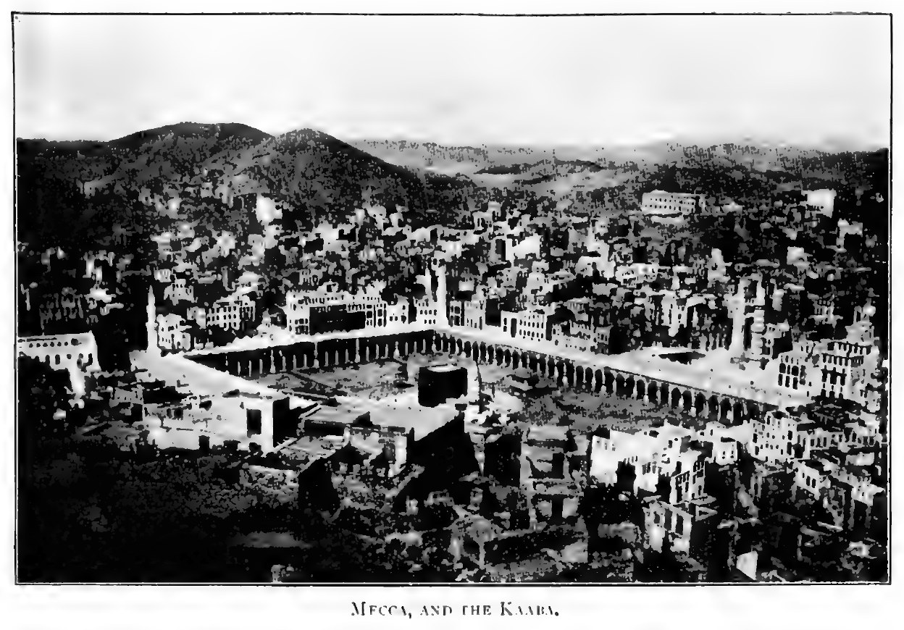
Mecca and the Kaaba (original p. 68)
Chapter III
[p. 37] Birth of Mohammed— Legends of his
infancy — Jews and
Christians fear him — Death of his mother Amina —
Adoption by Abd ul MuttaHb — The kingof Abyssinia prophesies — Death
of Mohammed’s grandfather- Adopted by his uncle Abu Talib — Refusal to
worship idols.
In the Year of the Elephants (a.d. 570),[Chinese] on the I2th day of
the Spring month, Mohammed was born at Mecca, of the family of Hashim of
the tribe of the Koreish. Felicitous signs and omens connected with his
birth have been duly recorded.
At his birth, Moharnmed was nursed for some days by a slave girl
Thuweiba, who had previously nursed his youngest uncle, Hamza. But the
child did not take kindly to the nurse, so he was given to the care of
Halima, a woman of the Beni Saad tribe, whose husband’s name was Halis.
It was the custom in Arabia for nursing mothers to nurse not only their
own babes, but also to secure the babe of some famous and wealthy family
to nurse, and thus add to their own wealth and reputation; those from
country places went to nurse in the cities, and those from small cities
went to the capital.
I. The biograpter Liu Chih appears to iSentify the year of the Elephants
with the Piu Yin year of Chung ta T’ung- (Ji:[Chinese] [[Chinese] of the
Liang [Chinese] dynasty, which would be a.d. 54[?]5- The commonly
accepted year is a.d. 570. This difference of twenty-four years leads to
error in the years given for other outstanding events such as the
Hegira, and the reported Moslem entry into China. -37 - -’ ’’ (notes to p. 37)
[p. 38] In this particular year there was
scarcity of food, and Halima and her husband went with many others
towards Mecca, and on the way she gave birth to her child, for whom she
lacked nourishment, about which the husband and wife were much
distressed. Moreover their camels and asses were jaded and the party
dropped behind all the others, so the husband and wife thought to return
to their home. But that night Halima saw in a dream an angel who was
holding a golden vessel containing pure milk which he drank; this person
touched with his hands the breasts of Halima, and when she awoke she
became aware that her breasts were full and rounded, so the party turned
again to Mecca.
At the city they learned of the requirements of the noble family of
Abd ul Muttalib, the grandfather of Mohammed; but there was another and
richer family by whom they hoped to be engaged. This family, however,
had already engaged a nurse, so Halima and her husband bewailed their
misfortune in being too late. They then went to Abd ul Muttalib, but
when they heard that the babe was fatherless, they did not wish to be
engaged. Abd ul Muttalib pressed them, saying, ” All the women decline
because this child is an orphan; but if you take the child you will
subsequently have much blessing.” Halima and her husband considered the
matter and finally received the child, and when Halima saw his face
shining like the brightness of the sun, she at once took the babe to her
bosom and the milk came in abundance. So the couple took the babe back
with them to their home, and their own babe also had ample nourishment;
the milk of the camels was also plentiful and the husband and wife had
food sufficient; men and beasts were all well and strong, at which
Halima and her husband marvelled. [p. 39] and
said that the child must be some eminent personage. They stayed seven
days at Mecca before returning with the child to Saad.
At the time when Mohammed was born, his mother Amina heard voices in
the air, saying, ” Mohammed is the leader of all prophets, past and
present; who is worthy to nourish him?” The birds of the air presented
themselves and all the spirits hasted to see his Light, and desired to
minister to him.
In the year that Mohammed was born, all who were born in that year
were males. All the old became young again, and white hair was changed
to ’black; such wonders had never been seen before.
When Hallma was going to Mecca, the camels and asses were lean and
weakly, and they staggered along so as to cause people to smile. But
after she took Mohammed, the camels and asses became strong and walked
as if flying, and everybody wondered at their agility; they did not know
that this change came from the blessing of Mohammed.
When Mohammed wa[?] an infant he did not cry nor show impatience; he
did not take things with his left hand; whenever he ate or drank, or
spake or moved, he always repeated ” Tasmiyah.” From infancy he always
had proper times for his natural functions; he did not defile himself,
but scrupulously observed the proper times.
When Mohammed walked or stopped, sat or slept, there was always a
white light protecting him. In the quiet of the night the white light
was very manifest, with a glory like the sun; and a man in green
clothing stood by the head of the bed and smoothed his forehead, and
appeared to be speaking or chanting.
[p. 40] Wherever Mohammed Went, the cows’
and’ sheep and other animals seeing him, ran in front of him and
gambolled for a considerable time before they went away. If at any place
there was scarcity of food and Mohammed went there,.then the fruits and
grains were abundant and the grass was luxuriant. The people of Saad
often said that from the time of the coming of the Koreish child the
seasons of heaven had been correct, the people had peace, and the
harvests were plentiful. It may well be believed that Mecca and Medina,
being the places of the Prophet’s constant residence, would be the most
fortunate of places.
When other people were crying out with distress and want, and were
bent down with sadness, Halima was wellfavored and happy-looking and had
food wherever she was, so that people marvelled. When” the flocks and
herds of others were without food and were lean beyond words, yet the
herds and flocks of Halima were fat and strong, and giving plenty of
milk, so that people thought that she had specially good pasturage, and
they drove their cattle to her pasturage for food. From the time that
Halima nursed Mohammed, her fields and land produced many times more
than in previous years, and her herds and flocks multiplied ten-fold.
The people of the whole district came seeking benefits from Halima, and
she did good to them all.
At two years of age, Mohammed was weaned and taken back to his
mother, who was so pleased with his appearance and manners that she
thought it best to give him back again to his foster-mother to take care
of him a little longer.
All the children went out tending the flocks, and Mohammed went with
them; his foster-mother cautioned him, saying, ” If you go shepherding
how can you become the Prophet?” He replied, “I will learn how to
shepherd.” He had already the idea of shepherding people.
[p. 41] Halinia was often anxious about
Mohammed, and when there was a wind she would put a plaster on the front
part of his head, which he took off, saying, ” I have a Lord to protect
me.”
Wherever Mohammed went there was a strip of white cloud floating
above his head, so whenever he was missed, it could easily be known
where he was by the white cloud. Wherever he passed, there remained
fragrance for several days. In his dreams when asleep he would
frequently chant the “Pure and True” words; Halima, his fostermother,
would arise in alarm, and see him quietly sleeping.
At three years of age, Mohammed was one day out with the other
children looking after the flocks, when suddenly the other children fled
in fear to their home saying, “Our Koreish brother has been killed by
some one.” Halima and her husband hastened to the place and saw Mohammed
standing in the field gazing up to heaven, Halima straightway embraced
him and took him back and enquired what had happened; Mohammed replied
that two men clad in white raiment had descended from heaven, bringing a
golden dish full of snow water, and had put him down and cut open his
body and taken out his viscera and cleansed the same, extracting
therefrom some particles of black blood; he was then conscious that his
mind and body felt an unusual ease and happiness. The two men had
reascended to heaven.
Halima, observing these omens and wonders connected with Alohammed,
suspected that he had a demon, and fearing that he would develop some
strange malady she took him to a doctor for treatment; the doctor said
that this was hot a case which could be cured by medicines. She then,
tried a, diviner who, when he had heard the details suddenly [p. 42] sprang up straight and looked long at the
child and then called excitedly to the people around to come and kill
Mohammed, otherwise he would be the cause of much harm, as he would
destroy idols and be a great troubler of Arabia. On hearing this, Halima
seized hold of Mohammed and carried him off home.
The Jews and Christians, knowing that the coming of the Prophet meant
the destruction of their religions, both wished to injure him; and now
the Beni Saad people also wanted to kill him, so HalTma and her husband
being in fear, took counsel together and said: ” Although the Koreish
child is so eminent, yet everybody has to look after personal interests,
so we had better, when he is weaned and can dress, and feed himself
properly, take him back to Mecca and end our responsibility.”
Subsequently Halima took Mohammed from Saad to Mecca, but on arrival at
the pass near the city, where there was a bustle of people, the child
disappeared. Halima in dismay searched all around, but could not find
him; then she lifted up her voice and wept saying: ” Alas! the
honourable child! I have taken care of him for three years and have now
suddenly lost him; how can I go back to his relatives?” The sound of her
grief moved the people, who helped in the search, but without success.
An elder of the village advised her to go and tell the “living
Buddha”[Chinese] (High-priest of the idol-worship) as he knew all about
the past and the future and he could [p. 43]
restore the child to her. Hallma rebuked this man, saying, *’ How can
the High-priest have anything to do with this child?” The elder asked
who the child was and was told that he was Mohammed, the grandson of the
Ruler. The elder offered to go and tell the High-priest, and having
circled the throne seven times and knocked his head in obeisance three
times, he prostrated himself and informed the High-priest, saying: “O
World-hcnoured One, this Woman of the Saad tribe has been nursing
Mohammed, the grandson of our Ruler, and. was now returning him and has
suddenly lost him, and does not know where he has gone; I entreat you to
use the eye of your wisdom to look around and see where he has gone.”
When the High-priest heard the name of Mohammed he fell down prostrate
and with body trembling and heart afraid he called out: ” Old man, why
do you make trouble? you do not know the matters connected with this
child. I can have nothing to do with him. He will eventually be the
adjuster and corrector of the world’s religions, and my religion will be
destroyed. Go and comfort the woman; this child has suffered no injury.
” When the old man heard these words of the High-priest he trembled all
over with fear, and coming cut he said to Halima: “The High-priest has
never spoken like this before; you had better go and report what he has
said to the Ruler, and let him himself take up the search.” Halima went
weeping to Mohammed’s grandfather and fell down before him confessing
her fault. The grandfather sent word to all the people of the city, who
searched everywhere without success. The grandfather mounted his beast
and led the search over the hills and waste places, and he secretly
determined that if Mohammed was found he would give as a ransom one
thousand camels. Subsequently he [p. 44] found
his grandson under a grape-vine” amid the streams of Tehame, and took
him back home; he then gave one thousand big camels and one thousand
ounces of pure gold to he distributed among the poor as a
thank-offering; he also richly rewarded Halima and sent her back to her
home. From this time Mohammed lived with his mother Amina. (In later
years, when Mohammed married Khadija, Halima came with congratulations,
and Mohammed gave her a camel and one thousand gold pieces; and after
the Hegira, Halima and her husband became believers.)
I. “Huo Fu” [Chinese] — “Living Buddha,” is a misnomer used by Liu Chih
for the priests of the religion found at Mecca prior to the adoption of
Islam. This was some form of idolatry, but not Buddhism or Lamaism. Liu
Chih knew the title “Huo Fu” as used for certain of the Buddhist lamas
of Thibet, so he adopted the readymade term, regardless of its being
misleading to the Chinese reader, TJiroughout the work we translate
“High-Priest” or “priest.” (notes to p. 42)
At the time when Halima took back Mohammed to Mecca, there was a
great plague proceeding, and many people died; Mohammed’s mother asked
Halima to take the child back again as the plague was so prevalent, but
Halima made obeisance and said: ” Your son is the eminent One; wherever
he goes he takes blessing and prosperity; the plague will disappear
because of him, you- need have no anxiety.” The mother answered, “What
you say is indeed true.” The day after Halima had depai’ted, the plague
stayed, and the people were preserved in peace.
For some years previously famines had been known at Mecca, and the
people were in great distress, even to the point of cannibalism. When
Mohammed returned, the five grains were plentiful, all the animals were
prolific, and the people did not understand why this was so.
The scholars among the Koreish had long known that the ancient books
made mention of Mohammed’s name and virtues, and from the signs and
wonders now apparent they concluded that this was the time and place of
the birth of the promised one; and as they knew that eventually he would
reform all religions and put away idols, which would be de[?] stroyed
under his hands, they consulted.d.together and decided
[p. 45] DEATffOF AMINA 45 that tliey ought to
“do something soon lest their religion should be destroyed and disorder
ensue in which they would all perish. They therefore thbqght to ’kill
the boy, but his grandfather, learning of their intention, took the boy
into concealment to avoid them.
When Mohammed was six years of age, as the plots of the Koreish still
continued, his mother Amina took him on a visit of several months to
relatives at Medina. In his seventh year, as his mother was bringing him
back from [?]edina, she was taken ill at Abwa and died there, Abwa is.
the name of a village under the jurisdiction of Mecca, and [?]ome
distance from it- Mohammed’s mother was buried at Abwa, and though he
was so young, Mohammed was yet able to attend to the mourning rites. The
faithful nurse Um Ayman brought- Mohammed back to Mecca after his
mother’s death.
Abd ul Muttalib, the grandfather of the Prophet, now took charge of
the boy, and was so fond of him that he could scarcely leave him for a
moment; he used to say: ” This boy will eventually be the ruler of the
country, and when he is established he will cause all under heaven to be
at peace and to revert to one religion.” The elders of the Jews and
Christians’’ told the grandfather of Mohammed that he should take great
care of the boy as he was to be an example to all the world; the
religions of the world were divided and in confusion, but under the
Prophet they would be unified into the religion of the sainted king
Abraham, and Mohammed would truly tread in the footsteps of Abraham.
(Near the Kaaba, there were footprints of [p. 46] Abraham still in evidence, hence this saying.)
Abd ul Muttalib told his sons to take heed to these words, and he also
said to Um Ayman: “You must take great care of this boy, and must not be
remiss nor forgetful; all the world knows that he is the Prophet of the
latter days, who shall be ruler of this country, and whom the very Son
of Heaven[?] could not oppose. Your happiness and honour are wrapped up
in his happiness and honour.”
I. Jt is, quite exceptional to read of any Meccan Jews and- Christians
solicitous for the welfare of Mohamrned, They are usually described as
plotting against h[?]m.; ’. (notes to p. 45)
The Koreish did not realize that their deliverance from dearth and
distress was due to the presence of the child Mohammed; on the contrary
they sought to kill him as being harmful to them; consequently they
offended Heaven and there was a return to dearth and drought. Now there
was a worthy woman named Leichige, a granddaughter of Hashim and a
paternal aunt of Mohammed, who was a pattern of admirable virtue, highly
respected by all. This woman dreamed one night that a supernatural being
called to her, saying: ” O Koreish people, you know that the Prophet of
the latter days is appearing, and that wealth and prosperity will come.
Select from among you a man of outstanding virtue and wisdom, of
handsome appearance and of good ability, and let him carry this youth,
and all the families each have one man to follow; and let them all be
purified and change their garments and carry sweet perfumes, and go
round the Kaaba seven times then go to Mount Gebisi, and one man shall
pray and all the rest shall say ‘Amen’; then the rain will descend, and
wealth and prosperity will be secured.” The woman hastened to tell the
Koreish leaders, who CDnsulted. together and selected Abd ul Muttalib as
the only suitable man, and they requested
! yi [Chinese]=Son of Heaven, a title of the Emperor of China. [p. 47] him to go, and begged Mohammed to go with him.
The families of the city each appointed one man, and all purified
themselves and changed their garments and hung sweet perfumes on their
persons; they walked round the Kaaba, then proceeded to mount Gebisi,
Abd ul Muttalib leading, and all the rest following. On arrival at the
foot of the mount, they made a circle and Muttalib stood in the exact
centre. On that day Mohammed was just seven years of age; all the people
gazed upon him and knew that his character was exceptional, and there
were none whose hearts were not drawn towards him with respect and love.
Abd ul Muttalib in his prayer said: ” Great Head over all. Most
Honourable from the beginning! Thou art able to hear and to know; Thou
art of great compassion and kindness, and can turn aside calamity. We
foolish men and women have walked waywardly and so have brought on this
famine from which the birds and beasts and all vegetation suffer, and
the loyal and good people are in distress. Lord! when one man has
blessing, all depend upon for a share in the benefits; is there among us
one in whom the Lord delights? we beseech Thee on account of that one to
save all the people. Withhold not the gracious dews, we beseech Thee,
and permit my people of many sins to live. Thou alone art the Lord of
great forgiveness; Thou alone art worthy to be God.” When the prayer was
ended, the gracious dews came in abundance so that the hills and the
market-places ran with water. When the grain in the fields had plenty of
water, the people rejoiced.
In this year king Saifu ascended the throne of Abyssinia, and from
everywhere people went to offer congratulations; the princes and rulers
submitted to him; officials were honest, and the people had peace. This
Saifu was a [p. 48] descendant of the gods (W W
[Chinese] W). and was of untisuat intelligence and perfect virtue.
Difficult cases of litigatioij were brought to him to decide; cases of
injustice and disturbance occurring among the many countries were.
entrusted tohim to adjust. If he saw any country oppressive or
rebellious, the king sent his. soldiers to punish, and in every way he
showed himself competent as a king.
Mecca was his neighbouring country, small in its in[?] fluence and
weak in its power; since the birth of Mohammed, Abd ul Muttalib had
often been presumed against by the Koreish, and had long been grieved.
On hearing that Saifu had ascended the throne, Abd ul Muttalib went to
present his congratulations. When he arrived at the Court, the king was
sitting on his throne, wearing his crown and his kingly robes, and all
the princes and rulers were standing on his right and on his left; when
he tapped with his hand they stood respectfully at attention while his
decrees were giv.en forth. Abd ul Muttalib ascended into the Court to
present his congratulations, and after appropriate opening remarks went
on to say; ” The great king, your grandfather, was a benevolent king,
and his grandson is a holy sovereign, who breaks ofif with flatterer[?]
and follows what is right, avenges the oppressed and, acting upon right
principles[?] administers the law equitably. Your servant is the
superintendent of the sacrifices in the sacred precints of the. True
God, a son of the Koreish, who, hearing that your Majesty has newly
received the great precious throne, ha§. come to present
congratulations.”
The king was pleased and claimed relationship; he made Abd ul
Muttalib sit close to his knees, and said to him, ” The Lord has given
you an honourable position of responsibility for all under heaven,; and
has given you fulness of. [p. 49] grace and
unlimited blessing and honour.” The k:ing then commanded that a feast be
prepared, and that his visitor should be entertained at the court for a
month. The entertainment was lav’ish, and the conversations which ensued
were of a most intimate kind.
When Abd ul Muttalib was about to depart, the king asked him to stay
longer, saying that he had some confidential things to speak about. One
day he invited him into the pavilion and sent away all attendants, and
said:. “I have something to say to you in strict confidence, which must
be kept secret; if anyone else was present I could not tell you, as it
is for you alone. The matter is one of importance; it concerns you very
much, involves some risk, yet is a matter of exceptional
opportunity.”
” May God give to the king everlasting felicity,” said Abd ul
Muttalib; ” there is nowhere a king like you. Were it not for your
exalted dignity there would be many who would go to excess in evil. But
what is the confidential matter you speak of? ”
” I virish to question you,” replied the king, ” and you will answer
plainly: are you a son of Hashim? ”
“Yes.”
” Have you any children? ”
” I have ten sons.”
” What is the name of the youngest? ”
” Abdullah.”
” Has Abdullah a son? ”
“Only one son, Mohammed, whose father died before he was born, and
whose mother died when he was seven years old.”
” And you are his grandfather? ”
” Yes, he lives with me. ”
[p. 50] ” Does he worship idols? ” asked the
king.
” Neither Mohammed nor I, nor any of our ancestors, right back to
Adam, have worshipped idols.”
The king then enquired if any wonders had been[?] observed in
connection with Mohammed, and Abd ul Muttalib recounted the wonderful
things which had happened, at which the king marvelled and rejoiced. He
then made obeisance and said: “Admirable! Your heart is great! Yjour
business is exalted! I bow before the precious mine from which comes the
highest Prophet. I have long seen this hidden in the Books, and now I
hear what you say, I know there is not the least mistake. Your grandson
Mohammed is the chief of all the prophets, the master of loo
generations, the pattern-monarch of men and gods; those who worship
idols are his enemies; those who worship God are his friends. He will
ultimately destroy the fire halls and expel the false devils, will
unmas1< deceptions, and destroy idols and images.”
” Take great care of this child, and beware of the enmity of the Jews
and Christians, and even more of the enmity of your relatives and
friends. They are all envious of you, and none of them wish your
grandson to fulfil his destiny and propagate his religion. This child is
the foremost man of the past and present of all under heaven. Keep these
words secret; I shall not live long enough to personally see the
fulfillment, otherwise I would send soldiers to protect Medina, for it
is there where this thing will be performed. I will give instructions to
the officials and great ones of Arabia to assist him, and to follow him.
But for the present I commit all to you alone: protect him well.”
Abd ul Muttalib again made obeisance and gave thanks, saying:
“Honourable is your Majesty’s throne! lofty [p. 51] is your kingly virtue! May your Majesty have
long happiness! Your sacred instruction is illustrious, and I shall
diligently observe your commands and be careful in the matter committed
to me by the king.”
The king then gave to those who accompanied Abd ul Muttalib, to each
man twenty youths and twenty maidservants, 40 ounces of pure gold, 8c
ounces of silver, a box of incense, and 100 camels. To Abd ul Muttalib
he gave ten times as much as to all the others, and again said to him:
“I have no time to spare from governmental duties, so cannot guide you;
but you may frequently come to me. The throne of a king is not happy,
but I perceive that you will be happy.” Abd ul Muttalib thanked him and
retired. Those who were with the Prophet’s grandfather did not know why
they had received the presents, so they enquired of him, but he only
told them that they would know before long, and when asked again he
repeated the same and added, “Is there anything on earth which is never
made clear?” It was feared that when the Koreish saw the wealth of
presents received by Abd ul Muttalib, their jealousy would be all the
greater.
After returning to Mecca, Mohammed’s grandfather was taken ill, and
when he saw that his sickness was serious, he called his sons together
to his bedside and admonished them, saying: ” My sons! Mohammed is as
the flesh of my heart, and is as the heart of the world. Who will take
care of him?” The sons cried out together: ” I am willing to take care
of him.” Abu Talib alone did not say this, but said, “Let it be as our
Father commands.” The aged father then said: “Talib and Zubeir are the
closest kin, being brothers of Abdullah by the same mother, so they
shall jointly take care of the boy. Biit Mohammed will have [p. 52] many enemies, so great care must be taken, and
he must not be left for a moment.” Talib was a man of virtue and valour,
respected among men, and quite suitable to be a guardian. Zubeir said to
his father: “Your son is unworthy, yet I will venture to receive my
father’s command, and act as guardian, and hope to receive blessing
thereby,” Abd ul Muttalib exclaimed: “Ah! Mohammed is the messenger of
Heaven; how shall I select the best one to fit him for his future work?”
When he inclined to Abu Talib there was a striving among the others for
the honour,.’[?]othe aged Muttalib said that as it was such an important
matter the will of Heaven must be accorded with, as well as that of men.
He then called Mohammed and told him to himself choose, and Mohammed
bowed before Talib, so it was settled that he should be brought up by
Abu Talib.
Abd ul Muttalib died at eighty years of age, when Mohammed was eight,
and the boy performed all the mourning rites as iif -he had been grown
up, doing all that the occasion called for to show his grief; people
came to condole from all over the country, and seeing him they could not
but respect and admire. But the Jews and Christians and the
idol-worshippers only increased their hate and jealousy.
Talib was one of the best of men; he had ordinarily loved Mohammed
more than his own sons, and the heart of Mohammed had long inclined
towards him, which led to his selecting Talib as his guardian. Although
Mohammed was young, yet his natural ability, wisdom, character and
appearance, were all such as caused people to look up to him with
respect. The Jews and Christians did not rejoice at his birth, and the
idolaters longed for his death; of his own clan- and family there were
some who desired his early [p. 53] death,
fearing lest some harm should come to themselves. But Talib understood
natural affection and constantly guarded the boy, and would never leave
him; he fed him with his own hand, and would not let him have his meals
with the others of the family; thus his respect and affection constantly
increased.
Talib frequently admonished his sons and younger brothers, and would
not permit them to walk or sit with Mohammed; they wished to have meals
with him because when they chanced to eat with him, coarse food became
fine and they were easily satisfied; while when apart from Mohammed,
their food remained coarse and.though they ate much, they were -still
hungry. Hence all the sons and younger brothers tried to keep wich
Mohammed.
One day Talib took Mohammed into the fields walking, and they were
very thirsty and had no water. Mohammed stamped on the ground with his
foot and said, ” Is this not water?” and suddenly they saw a clear
spring bubbling forth, of which they drank and relieved their
thirst.
When the other children rose up from sleep, their faces were dirty
and their hair unkempt: when Mohammed arose in the mornings he was
bright and fresh, his hair in order as if it had just been washed and
combed. Once when Talib was assisting Mohammed to sit on the blanket, he
said to the others that this child would certainly become an eminent
person and complete a great work, so they must not by any means lightly
regard him.
At that time there was an idol called Buwana which all the Koreish
reverenced, and people from distant places came to sacrifice before it
once a year. They shaved their heads and washed their feet, killed
sacrifices and spread them before the idol, the performance keeping up
for a day and a [p. 54] night. This was one of
the great festivals and marts of Arabia, when all kinds of things were
brought together and exchanged, and everybody went, male and female,
young and old. Abu Talib being the Head of his clan, although he himself
did not worship idols, yet went to the festival, and wanted to take
Mohammed along with him, as he could not leave him even for a short
time. Mohammed strongly objected to going, but all his relatives pressed
him, saying, “You must worship this god; what harm is there in it?” So
when they we”nt, Mohammed had no option but to go with them. When they
were approaching the idol, Mohammed suddenly disappeared and could not
be seen; they all searched for him and at last found him in a grove
looking afraid and trembling all over. They asked him why he trembled
and he replied that he dreaded spirits and devils. The others said, “God
will not perinit evil spirits to come near you; your mission is a great
one, why should you fear?” He answered: “If spirits dare not come near
me, why should I go to reverence them? The place of the idol is a cave
of devils, how can I enter it? Moreover I fear that your worshipping
this idol will bring great calamity.”
It was the custom that after the necessary sacrifices had been made,
the carcasses of the animals offered were divided among the families
present at the festival. Talib beirtg at the fair got a share of the
flesh and gave to his family to eat; Mohammed alone would not eat of
it.
When the Prophet saw that the people of the country worshipped idols,
and his uncles and brethren all joined in the festival, he exclaimed: ”
So flourishes the religion of false devils! I vow that I will put an end
to it.”
Chapter IV
[p. 55] Second miraculous cleansing of
Mohammed — Meels monk
Bahira in Syria — Strange dreams— Marriage with
Khadija— Birth of Fatima— Rebuilding the Kaaba—
Mohammed adjusts the Black Stone-rBeginning of
Visions.
About I, GOO miles to the North-west of Mecca there is a country
called Syria, a portion of an ancient empire; Bosra is one of its
cities, an important place on the west post road, where the roads and
waterways met, and where all kinds of valuable goods were brought
together and merchants and traders met to do business. The dealers in
iron came from all parts to this place, and the swords to be obtained
here were considered by everybody to be valuable, articles. Talib, the
uncle of Mohammed, was a good merchant, and every year he went to this
mart, and as he could not leave Mohammed even for a short time, he
always took him with him.
In Mohammed’s tenth year his heart and viscera were again cleansed.
This had been first done when he was three years old, and it was now
done a second time. One of the followers of the Prophet heard him
testify to this second operation after he had become the Prophet.
When Mohammed was eleven, there occurred the fight at ’Okaz; this
place was on the borders of Meccan territory, and was a mart of Arabia.
Every year traders from all countries came by sea and land, bringing all
kinds of house- SS [p. 56] hold utensils, and
also many gems and precious things. The fair lasted a month, after which
the people returned. On the day of returning, the merits of the
different families represented at the fair were discussed, which
excelled and which was inferior. One of the greatest tribes was.the
Hawazin and they had laid a wager that they would excel on this
occasion, and when they did not carry off the honours they were vexed
and began a great fight which lasted three days. (Subsequently the
Prophet prohibited the holding of this fair.)
At the age of twenty-one Mohammed had advanced in wisdom and was well
able to manage affairs, so his uncle thought to leave him at home and go
alone on his trips to Syria; but Mohammed made obeisance.several times
and begged to be allowed to go, and his uncle replied: ” My nephew, I
regard you as a precious gem to be left only[?] for a little while; your
mission is great, and your enemies are many, and I wish to leave you at
home lest anything unfortunate should happen to you on the road.” ” I
have God to protect me,” said Mohammed, “so I beg to be allowed to go
with you.” Permission was given and he went again to Syria, and Abu
Bekr, who was eighteen years of age, went with them, and Bekr’s servant
Bilal accompanied them. As they approached Bosra, Mohammed rested in the
shade of a tree while Abu Bekr went to buy some cakes, and on the way
met Bahira, a learned monk of the Roman Catholic[?] religion— people who
call themselves the “Jesus Society.” The monk asked, ” Who is that
sitting under the tree?”
I. [Chinese] i [Chinese] is the Chinese name of the Roman Catholics. As
used here and elsewhere by I<iu Chili it might r[?]fer to other
branches of Christianity, Greek, Syrian or Nestorian. (notes to p. 56)
[p. 57] ” Mohammed the son of Abdullah, and
the grandson of Abd ul Muttalib.”
” This is the final Prophet,” said the monk in alarm,
” How do you know about him?” asked Bekr.
” This tree was planted by Jesus who used to sit under it to expound
his book, and he told his disciples that after him there should nobody
sit there until the final Prophet came, and he would be known by this
act; for six hundred years nobody has sat under that tree, and now this
man sits under it, so without doubt he must be the final Prophet. I
desire you to inform Abu Talib that this young man is an honourable
personage who will reflect happiness upon him, and will bring benefits
to all generations. I am passing on and shall not see. his Light when he
becomes the Prophet; take good care of him.”
The monk then took out some precious things and gave them as a
parting token of respect. Abu Bekr made his bow and returned to repeat
the things which he had heard, on which account the Prophet said that
Abu Bekr was the first who believed in him.
In Mohammed’s twenty-third year the Koreish took a vow to stop the
insulting of the Prophet: this was promoted by Zubeir. Zubeir had wished
to have the care of the Prophet, but he didnot get his wish, as Talib
became guardian. Talib was often away on his long journeys, and Mohammed
went with him, though it was beneath his dignity to do so; some of the
Koreish therefore liked to insult and hflmiliate him, and even plotted
to kill him. The Koreish had sonie vicious and disorderly customs; some
of Mohammed’s own clan and kin were constantly oppressing those who were
below them, or opposing those who were above them, even to the killing
of brothers by one another, and fathers and [p. 58] sons injuring one another; there was no
cohesion between officials and people, or between masters and servants,
and there was no proper mutual respect between old and young or male and
female. Zubeir thought much of how to put a stop to this disorderliness,
and he planned to establish a covenant, along with Jud’an, who was a
venerable elder of the Koreish, of weight and experience and respected
by all. Zubeir was of the Hashim family, and this family were the
hereditary sheiks of Mecca. The words of these two men were not to be
lightly regarded, so the elders and scholars of the city had a great
meeting at the house of Jud’an and made a covenant and took an oath not
to mutually insult or annoy one another, and if anyone broke the
covenant then all the rest would join in attacking him. This was called
” The Honourable Oath ” because hitherto there had not been such an
honourable covenant as this, and after it there was much improvement in
the customs of Mecca; men strove to excel in decorum and mutual
deference; harmony increased and Mohammed was no longer in anxiety. Was
it not meritorious of Zubeir to take the lead in this matter? yet behind
all, there was the virtue of the Prophet helping to bring it to
pass.
When Mohammed was twenty-three years of age, he frequently dreamed
that a spirit spake to him; he reported this to his uncle Abu Talib who
pronounced that these were just confused dreams. One day the Prophet
dreamed that the spirit put his hand into his abdomen and stirred up his
viscera. He told this to his uncle who said he would take him to see a
wizard doctor. At that time there was a wizard of the Cross religion who
was famous throughout the whole country, so the uncle took Mohammed to
see him. The wizard looked at his face, but did not discover what [p. 59] was the matter; then he looked at his hand,
and still did not understand; he then looked At his back and saw there
was a flesh mark, whereupon in alarm he said: ” This is not an ordinary
man, what spirit would dare to come near him? the one who approached him
was an angel, and the stirring of his viscera was the proof that he is a
prophet. The seal of Heaven has been fixed upon him, and there can be no
doubt that he has been sent by Heaven. Do not be alarmed, but do not
talk about this to people lest the Jews hear of it and seek to kill
him.” After this, on several occasions during that year, Mohammed
dreamed that the spirit approached him.
The MaFFiage of Mohammed with Khadija.— Mohammed had gone year after
year with his uncle on the trading trips, but about this time his
uncle’s capital had diminished, so one day he urged Mohammed, saying:
“You are now grown up and can do business for yourself. The people of
this locality all borrow money of Khadija, and you also should do so,
and make your own living.” Mohammed answered, ” Certainly,” and set
about to borrow capital from Khadija, who was the daughter of a deceased
prince of Mecca named Khuweilid, Khuweilid had fought against the
Hawazin and had died on the field, and having no son, his fief was taken
away; his daughter was talented and clever, well-informed in books and
history, and she inherited her father’s ability for managing business.
She decided not to marry for three reasons, (i) having been born a
princess she could not deign to be the wife of an officer or of one of
the people; (2) she had both talent and money, and there was no one in
the whole country who was a fit match for her; (3) she was wealthy
beyond comparison, and had not seen any man who was suitable to receive
what she could bestow. Suitors [p. 60] came from
many countries, but she would not assent to any of them, and now she was
forty years of age.[Chinese] Khadija delighted in generosity and was
fond of what was right; she was public-spirited and used to act
liberally in lending to borrowers without seeking to get advantage
thereby; many people availed themselves of this generosity and went
trading to the four quarters, and she was content to let them repay as
they could; many people were much indebted to her for favours. When she
heard of Mohammed her interest was aroused and she remarked that this
name could not be used except for the final Prophet. She made enquiries
and when she found that he was a descendant of Hashim, she said: “He
surely must be the Prophet of whom the books tell, the Prophet of the
latter days; the name is correct, I wonder what his actions are like; if
he really is the Prophet, I will marry him.” She thereupon made
enquiries about Mohammed ’s doings, and on hearing that he was coming to
ask for goods to trade with she was pleased and gave instructions that
he was to have ten times as much as he asked for. She sent with him her
relative Hudsaime as his attendant, and Meisara as messenger, and they
went with all the traders to Syria; on the way these two observed
Mohammed’s actions and carefully reported them. While on the road on
this journey two camels became sick and lay on [p. 61] the ground unable to rise; Mohammed stroked
them with his hand and the camels leaped up and quickened their pace
beyond what it had been before they were sick.
I. Other accounts say that Khadija was at this time a widow who had been
twice married, and had borne two sous and a daughter. It may here be
mentioned that our Chinese author either definitely states or implies
that most of the wives taken by Mohammed were virgins, whereas all were
widows except the child-wife Ayesha. Our author may have followed the
sources of information available to him, but as the marriage of a widow
is so repellant to Chinese ideas, and would be especially so in the case
of a religious hero, it seems probable that Liu Chih sacrificed facts to
avoid shocking Chinese susceptibilities, (notes to
p. 60)
On arrival in Syria, Mohammed sat under a withered tree, which
suddenly revived and became splendid with shimmering green. In a room
near by there was sitting a monk of the Jesus religion who, when he saw
Mohajnmed, came out hastily and asked his name and family. Mohammed was
displeased with the monk for being of the Cross religion, so he would
not answer him. The monk then went and got a book and came out and
looked first at the book and then at Mohammed, and then pointing to the
Gospels and taking oath in the name of the God of Jesus he said, ” This
man is the Prophet of the last days.” Hudsaime did not understand what
he said, but suspected that he thought to injure Mohammed, so he drew
his sword; the monk then entered the room and shut the door and ascended
an upper story from which he cried out in a loud voice that he who sat
under the tree was the Prophet of the last times, and added: “You should
not doubt; this tree was planted by Jesus himself, and he left command
that though this tree should become dry it was not to be pruned or cut
down, but wait until the final Prophet should come to sit under it, when
it would become glorious again. May I ask if there is a little red in
his eye?” Hudsaime answered that there was, whereupon the monk said:
“There is no doubt about it, he is the final Prophet; he will by and bye
raise the sword and do great execution; he will receive the commission
and propagate the Way (Doctrine), and be the seal of all former prophets
and open the frontiers of the peace of a myriad generations; those who
follow him will abide safely, and those who oppose him will go astray;
this is truly the [p. 62] man! take great care
of him, and do not tell this news to the Jews lest they plan to injure
him; neither say anything about it to my co-religionists as they also
dislike this man. We and the Jews both consider that this man should be
put out of the way.” (In the 8th year of the Hegira this monk entered
the Faith.) Hudsaime was alarmed at what he heard, and remarked to
Meisara that Mohammed was evidently about to undertake great things, and
they must take great care of him. On the road, when it was scorching
hot, they had noticed many birds with outspread wings shielding
Mohammed.
On entering the city to which they were going, they met a
fortune-teller who took hold of Mohammed’s hand and also placed a hand
on his shoulder and said: “Is not this the final Prophet? How is there
this likeness? The ancient books say that the final Prophet will be of
certain. fashion and appearance, with which this man truly accords; he
should take precautions and hide, as the Jews and Christians will seek
to injure him.”
Hudsaime quickly disposed of the wares they had brought, and arranged
for their return. Abu Bekr who was also with them, in the capacity of a
trader, was constantly observing all the actions of the Prophet, and
taking careful note of them. It was the usual custom for the traders of
Khadija when they were returning, and were about three nights’ journey
from Mecca, to send a messenger to announce their approach, and this
messenger was well rewarded; he was chosen by lot from among all the
traders, and as he went double stages, he would return with a letter
from Khadija and meet the party while still one stage away from Mecca.
On this occasion the lot fell upon Mohammed, but- Abu Jahl opposed his
going, saying that he did not [p. 63] know the
road; the others said that the usual custom must not be broken. Mohammed
mounted his camel and started out while the others were beginning
preparations for breakfast; he.was carried along miraculously and
arrived at Mecca almost immediately. Khadija had been moved by a dream
to get up early, and when the letter arrived she had her maidservant
bring it upstairs at once; when she knew that Mohammed was the messenger
she was both pleased and sorry, pleased to have the letter at his hands,
but sorry that as he was unaccustomed to hard riding, he must have
suffered in bringing it. When he had eaten, she gave him the reply and
Mohammed took it and was again carried miraculously sothat he arrived at
the place of starting while the others were still at breakfast! When
they saw him they were angry, supposing that he had not really started
or had come back to ask the way, and they told him he did not know how
to hurry. When he gave them the return letter they laughed heartily and
said that he must be in league with the devils! On taking the letter and
looking at it some of them said: “This is Khadija’s own handwriting;
perhaps someone was coming with the letter and met him on the road.” But
when they saw that the gum was not yet dry, they all marvelled. Abu Bekr
told them not to be surprised at anything done by this young man. On
arrival at Mecca, Mohammed returned with thanks what had been lent to
him, accounting clearly for capital and profit, and his profit was
several times as great as that of the others.
When Mohammed had gone to his home, Hudsa’ime recounted to Khadija
all that had happened on the road; she -salaamed and said, ” I have now
a place to Which I ought to go”; so she appointed Hudsaime to negotiate
the wedding.
” We ought to wait until he comes to you, my lady,” said [p. 64] Hudsaime; ” I will go and sound’ him.” On
seeing Mohammed, he said to him, ’!,You are now grown up and have no
home; why is this? ”
” I can wait,” replied Mohammed.
“Why wait?” pursued Hudsaime; but to the question put thrice Mohammed
gave the same reply. Hudsaime then approached Abu Talib and said, ” Your
nephew is of full age, why is he without a wife? ” Talib replied that
there was plenty of time, and gave the same answer to the question put
thrice. Hudsaime was surprised and said: ” I asked your nephew three
times and he thrice replied that he could wait; I asked you three times
and you say the same. What is the meaning of this? ”
” I would not choose one who was poor,” said Talib, ” and may not
take one from among the rich, so it is better to wait. ’
” There is a person who is talented, pretty, and wealthy; do you
desire such a match? ”
” Poverty and riches do not match well.”
” But the lady is willing, are you? ”
” I cannot refuse; but who is the lady?”
” Khadija, who is rich beyond compare, as you know; no doubt you have
also heard that she is of perfect virtue and beauty. Will you ask her?
”
” I have said that poverty and riches do not match well; if this is
desired, ’the rich must come and ask of the poor; it would never do that
the poor should ask the rich.”
Hudsaime returned and informed Khadija who quite agreed, and sent him
back again to beseech Mohammed to consent. Mohammed asked his aunt to go
and excuse him, as he was poor while the lady was very rich, and he was
not a suitable mate for her. Khadija said to the aunt: “Good [p. 65] mother, it is not in my mind to consider the
possession of money as true wealth, nor position as true honour. If I
had considered riches and position in relation to marriage, I need not
have waited until now; I looked upon these as of little account, as a
cast-away broom. I have heard that your nephew Mohammed is the foremost
of all the prophets; he has the wealth of heaven and earth, and the
nobility of both gods and men; if I secure him as my husband I shall
have glory, if I lose him I shall be ashamed. I am lowly and weak, and
am no match for him, yet I venture to ask you to excuse me, and in view
of my sincerity, help to bring about my wishes. I desire to exchange my
empty honour and wealth for his genuine wealth and honour. I am not
thinking of my own advantage only, as I am not a young person seeking
advancement. There is no one whom I can ask who can, so well as
yourself, help to bring about this happiness for me.” Seeing the
earnestness of Khadija’s pleading, Mohammed’s aunt reported to him, and
he consented to marry her, and asked his uncle Talib to be the Master of
the marriage. Omar looked after the betrothal ceremonies and presents,
and Abu Bekr put out much money for the betrothal expenses, while Talib
devoted what he possessed to the expenses of the wedding. A fortunate
time was selected for the exchange of the wedding documents; Abu Talib
being Sheik and also Master of ceremonies, repeated the Khutbah
(sermon),. drums and trumpets went to meet the bride, and in the middle
of the day they entered the house. (Since the time of Mohammed drums and
trumpets have not been used at Moslem weddings.) A camel was killed to
make a feast to entertain the people who came to congratulate. At the
time of the marriage Mohammed was twenty-five years of age, and Khadija
was forty.
[p. 66] Nothing is recorded of the next few
years, but when Mohammed was thirty-one there was born Ali, the son of
Abu Talib. Fatima was born to Khadija and Mohammed when the latter was
thirty-five years of age.
On the day when Fatima was conceived, the prophet was silting in the
evening and had a dream in which there suddenly appeared an angel who
led him up to heaven, and there he saw a tree with a pomegranate, the
appearance of which was like an apple, having a white inside, tinged
with red. Mohammed tasted and found it extraordinarily sweet and
fragrant. Nine months afterwards Fatima was born, and at the time of her
birth an extraordinary fragrance filled the house and was noticed by the
neighbours; this fragrance was that which the Prophet had noticed in the
apple in his dream; it came with Fatima and remained with her all her
life. Mohammed used to say that whenever he went near Fatima he was
conscious of the same fragrance as he had enjoyed in his dream, and it
reminded him of that visit to heaven.
The rebuilding of the Kaaba. — For more than ten years previous to
the time just mentioned, the Koreish had talked of rebuilding the Kaaba
because it had been defiled by idolaters; but the plan had not matured
on account pf lack of unity among them and it was difficult to carry out
the good project. After they had taken the “Honourable Oath’’ things
were better arid men’s hearts inclined to goodness, so they were able to
begin work on the building; moreover there was a flood which did damage
to the walls of the Kaaba so they were compelled to rebuild. About that
time it befell that a large ship coming from Rome was wrecked not far
away, and there was an artisan on the ship named Yagumu who was the most
famous builder of those days. [p. 67] The
Koreish bought the wood of the ship and got the artisan to come and
rebuild the Kaaba, as the people all said it was an opportune time and
it was the will of heaven that it should then be rebuilt.
The Koreish at that time consisted of ten great families: each family
agreed to take part in the building, and lots were cast as to, what
share each should have. When all was apportioned, the transfer of the
ship’s wood and of the stone required was done by each family as
directed, with no mixing up of the workmen: Mohammed also took his share
in the work. When the building of the Kaaba had progressed, they made
ready to put the Black Stone in position. This is a wonderful stone
which came down from heaven in the time of Moses the prophet; its colour
is black which gives it its name. All those who go on pilgrimage must go
near to this stone and touch or kiss it as one of the.ceremonies of the
pilgrimage. Formerly this stone was in the back of the Kaaba, but now it
was decided to place it near the door, and every family vied with the
others in desiring to have the placing of it: none of them would yield,
and as they could not agree on thei[?]after the elders said: ” This is
an important matter, and we must seek the decree of heaven; let us see
who comes in first at the North sea-gate, and let him decide the
question.” The first to enter by this gate was Mohammed, which was
satisfactory to all as they said he was a man they could all trust. They
told him the difficulty, and Mohammed said it was a matter in which all
should take part: so he took off his garment and spread it on the ground
and put the stone on it, then directed each family to come and take hold
of a part of the garment and lift the stone; then Mohammed with his own
hands guided the stone into its position. When they saw this they all
bowed to his wisdom and also
[p. 68] THE ARABIAN PROPHET marvelled at his
strength, as the black stone was of considerable size and weighed over
one thousand catties/ and that
I. The size of the black stone is greatly exaggerated by I[?]iu Chih;
the weight given is more than half a ton! Burkhardt says the stone is
“an irregular oval about seven inches in diameter.” Burton says “I found
the aperture in which the stone iSj one span and three fingers broad.”
[p. 69] one man should move it as easily as if
it was a reed, and that a small and thin garment should hold it in the
lifting without being torn, these were things hard to understand.
Mohammed said that henceforth the Kaaba would never need to be rebuilt
again.
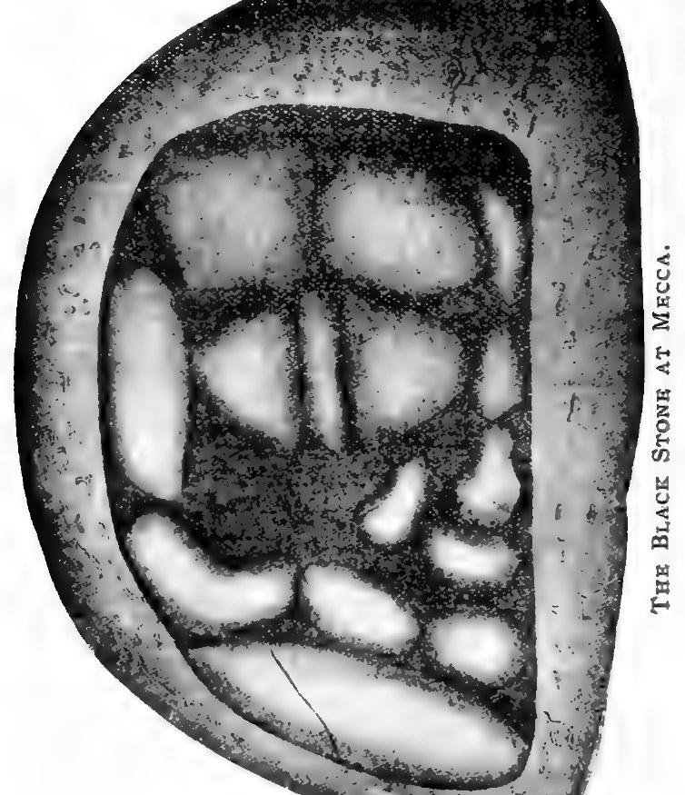
The Black Stone at Mecca (original p. 83)
Tradition says that inside the Kaaba there was a well in which there
used to be a precious gem to ward off evil influences; this gem was
stolen by idolaters which was the reason why the Kaaba needed to be
rebuilt. Once upon a time the Kaaba was decorated with one hundred
precious gems, the brilliance of which dazzled the eye; but these were
all stolen by idolaters and the glory was departed, hence the
rebuilding. When the Prophet was adjusting the black stone, before it
was steadily fixed, a bystander suggested putting a little stone under
it to prop it up, but Abbas pushed him away and himself took a small
stone and gave it to Mohiammed who himself propped it up.
At thirty-eight years of age, the Prophet sometimes heard voices in
space above him, as though they were asking and answering questions:
when in bed he heard sounds jis of praising; the sounds sometimes moved
around, and then came back to the original place, as if they were
following a leader. He also saw a bright light appear in space, and from
his own body there emanated a light so that when he got up in the dark
of night, without any lamp or candlci things could be seen as if in
daylight. Sometimes when a thing was lost in the dark, if Mohammed came
they could see and the thing was soon found.
If it be asked what religion the Prophet followed de/ore he received
his commission, some say that there was no fixed religion for him to
follow; and others say that he did not follow any of the religions. Both
these sayings are [p. 70] without proof. If it
be asked what religion the Prophet followed after receiving his
commission, some say the religion of Jesus, and others say the religion
of Moses: still others say that he followed only his own religion. All
these sayings are also without proof. In answer to both questions it may
be said that both before and after receiving his commission, he followed
the religion of Abraham. Observe that when an infant he repeated the
Takbir;: on all occasions he used to repeat the Tasmiyah.[Chinese] At
eight years of age he determined to keep away from the Highpriest of the
idols: young as he was, he knew to worship the Lord who is without form
or likeness. At his marriage and at funerals he used the ceremonies of
Abraham. After receiving his commission he continued the same practices
and in all things used the customs of the ancient religion of Abraham.
We see, therefore, that the Prophet, both before and after receiving his
commission, followed the religion of Abraham, Abraham, before he was a
prophet or had received his Book, knew to recognize God and worship
Him.: our Prophet did the same. Abraham, after becoming a prophet,
recognized God more fully and worshipped Him, considering this as his
chief meritorious act: the teaching of our Prophet is the same.
In the Koran it is written that God said to the prophets: ” I have
clearly divided the Canons of the. Faith: as I instructed Noah, so I
have given commands to you all: I instructed Abraham, Moses and Jesus,
that they might establish the Faith that it be not destroyed.” There has
been much discussion as to the meaning of this part of the book. The
commentator Mu said: “It all comes to [p. 71]
one doctrine — Recognition of God, Worship of God, Almsgiving, Fasting,
and Pilgrimage: but the ceremonial rules and regulations differed a
little with the times.” Ali the Companion said: ” The prophets from the
beginning did not worship idols nor drink wine.” Another early
commentator said: ” From of old the prophets did not worship idols:
before they received their commissions they all used the expressions of
the Correct Faith; although at that time they did not perform the duties
of prophets, yet they were incipient prophets and did nothing but what
was in harmony with the Faith. We might use the simile of gold and
golden utensils; before they were commissioned prophets they were as the
gold: after they had become prophets they were as golden utensils. The
Faith of the prophets was like the substance of the gold — always the
same: the Teaching of the prophets was like golden utensils— their rites
differing a little, as utensils do.”
I. Takbir = “AUahu akbar,” ” God is very great.” Tasmiyah = “la the name
of God the Compassionate, the Merciful.” (notes to
p. 70)
It may be asked, what is the meaning of the passage in the Koran
which says, “I found thee when lost and led thee into the correct path”?
The “lost” and ” astray ” here referred to mean a man’s going astray
through error while his will is set towards the correct: God will lead
him because his desire is to go the correct way. There are some who are
astray and obstinately remain astray, having no wish to go correctly;
these will all the time remain astray. It should be remembered that
prior to Mohammed there had been no prophet sent for six hundred years,
and no Book given. The old books were destroyed, and the rules and
ceremonies were in a state of confusion; the people did not know what to
follow and even the wise scholars fell into pitfalls and did not know
how to avoid them: this is what was meant by going astray. Mohammed was
born at the [p. 72] time of this confusion and
he did not know what to follow, so he may be said to have gone astray:
but he did not drift into heresy nor was he deceived by false sayings;
day and night he had admirable thoughts, and sought to understand the
rules and ceremonies and the correct method of influencing for good by
teaching. In due time God caused.him to revert to the correct path and
gave him a great position, and entrusted to him a Book with which to
amend the disorders of the past times, and to fix the Canon that it
should not change for ever; this is why he was a prophet, and moreover
why he was the Greatest Prophet.
Chapter V
[p. 73] First evidence of Mohammed’s
commission — Khadija believes — The first twelve disciples — First
messenger to
China — The Koreish believe and afterwards turn away —
Believers take refuge in Abyssinia— Jews and Christians try to stir
up persecution in Abyssinia.
From of old the prophets and worthies had handed down and recorded in
books about the final Prophet, his appearance and virtues, when and
where he would be born, of what family, and on what day he would become
the Prophet; and these things were all fulfilled.
The worthy Sailime said: “I formerly had a neighbour who was a Jew or
Christian, who spoke to the people about the Prophet’s virtue and said
that when he received his commission he would accomplish the saving of
his people: when asked how he knew this, he replied that the leaders of
his religion said so and that it was written in the ancient books that
he would receive a commission, and when this would be. This neighbour
said that I should live to see it, and I kept this in my heart and daily
thought it over until I heard that Mohammed had received the commission,
and then I followed him.”
The worthy Asen said: ” I know of a certain person who was originally
a Christian, and there was a Jew who strove against him, and when the
Jew could not overcome he said, The final Prophet is about to receive
his commission and he- will surely kill you. When Mohammed received his
commission that Christian entered the Faith, and when the Jew heard of
it he escaped and hid himself.”
[p. 74] There was once a Jew named Hsibang, a
man from Syria who removed from there two years before Mohammed received
his commission, and came to live at Medina in the house of Kulaidso; one
day he was sick and called Kulaidso and the neighbours and told them
that the reason why he left his own country and came to live there was
because the expected final Prophet was about to receive his commission
and make Medina his capital, so he wished to be on the spot to follow
him. The sick man added: ” I am now about to die and cannot see the
Prophet’s light: all you men will become his followers and receive great
blessing and felicity: the majesty and benevolence of the Prophet will
both be manifest, and he is the Seal of all the prophets.” Having said
this, the sick man died. Two years later Mohammed really did receive the
commission and the elders of Medina gathered together several of the
elders of the country around who went to Mecca and entered the Faith and
invited Mohammed to remove to Medina, which Mohammed promised to do, and
his ultimately doing so arose from this beginning.
Toliho when trading to Syria stopped at Bosra where a noted Roman
Catholic’ came into the market-place enquiring for anyone from Mecca:
Toliho said that he came from that city, whereupon the Roman Catholic
asked if there was at Mecca a man named Ahmad. Toliho asked of what
family, [?]nd the Catholic answered, the son of Abdullah and grandson of
Abd ul Muttalib. Toliho said there was such a man whose name was
Mohammed. The Catholic said: ’ There can be no doubt that he is the man:
this month he will be permitted to become the Prophet, the greatest of
all the prophets. Ahmad is the name which he [p. 75] bore in heaven before his birth, and Mohammed
is his name on this earth and in history: he was to be born at Mecca and
set up his capital at Medina: miracles attend him, and the myriad-year
date tree has waited/ for his coming: the ancient books and the old
traditions all tell of this, and all is now fulfilled. I believe and
will follow him.”
I. See Note’ i, p. 56. (notes to p. 74)
When Toliho finished his trading he returned to Mecca and on the road
he heard that Mohammed had received the commission to be the Prophet,
and that Abu Bekr was his assistant: on arrival at Mecca he went at once
to see Abu Bekr and the Prophet, and entered the Faith.
The leaders of the Jews and Christians at Mecca had frequently told
their people to destroy the articles used in worship and to sweep out
their places of worship as they were about to follow the Faith of the
new Prophet whose virtue was the highest under heaven and whose position
was the most eminent of all the prophets; he would receive the command
of -the Lord to reform all religions and he would be the Seal of all the
prophets. When the Prophet received his commission to propagate the
Faith and begin his transformations, nine out of ten of the Jews and
Christians followed the Faith. [Chinese] The Prophet was once passing
the Jews’ place of worship as the worshippers were just repeating the
Taurat, when they suddenly stopped: there was a sick person sitting
near, so the Prophet asked him why they had stopped; the sick man
replied, “They have repeated up to where it speaks about the virtue of
the final Prophet.” He then took a roll of the book and pointed to the
place saying: ” This speaks of the virtue of the final Prophet, [p. 76] and the circumstances of the beginnings of his
Faith; our people of the present time only read as far as this and then
quietly pass over lest other people should hear it: has it not just been
told to all that the final prophet has received his commission and that
all will gradually follow him? ” Abu Bekr pointed to the Prophet and
said, ” This is the final Prophet.” The sick man gazed long at him then
did obeisance and wept as he said that from his heart he wished to
follow the teaching of the Prophet. The Prophet commanded him to repeat
the Kalima (creed) and so enter the Faith, which he did, and expired
forthwith. The Prophet exclaimed, ” This man had faith, and when such an
one hears of the Way in the morning he is fit to die in the evening.” He
commanded that the man should be buried with the rites of the
Moslems.
I. This is anticipating events, implying a readiness to believe and a
submission very early; the sequel tells of continuous opposition, and
but few followers for several years. (notes to
p. 75)
When first Mohammed went with his uncle Abu Talib on a trading visit
to Syria, there was a learned man of the Roman Catholic religion who
enquired for him among all the merchants, and when he found him he took
hold of the Prophet’s hand and said: ” Most eminent of all the world!
the Messenger sent by the Lord of heaven! merciful and gracious to all
the world!” Those, around asked how he knew him, and he answered, “A
white cloud covers his head and all things bow before him.”
In Syria there was a monk named Bahira, of the Roman Catholic[?]
religion which is one of the twelve sects of Christianity: this man was
deeply learned in the ancient books and was religious in his practices,
so people from far and near highly respected him, Bahira knew beforehand
about the Prophet’s virtue and position so he made ready to see him,
thinking that the sight of him would be the chief
I. See Note i, p. 56. (notes to p. 76)
[p. 77] THE MONK BAHiRA 77 happiness of a
lifetime: he only waited until the Pcophet received his commission in
order to follow him. Hearing that the Prophet was of the Koreish tribe
and would come with them to trade in Syria, he moved to live near the
roadside on the way to Bosra and waited for the Prophet to come. One day
he saw in the distance a white cloud floating[?] above a band of
traders, which moved when they moved and stopped when they stopped, so
he concluded that the Prophet would be in the midst of them. Bahira
thereupon prepared a splendid feast and invited all the traders,
desiring to entertain them well: the traders were surprised and said: ”
We have long wished to pay a ceremonial visit to see you whose fame we
have heard, but we have not hitherto had the pleasure: that on this day
we see you is in itself sufficient, why should you provide a feast for
us? ” The monk replied suitably about the past, and then proceeded to
place Mohammed in the chief seat which displeased all the others, and
Abu Jahl vehemently protested i ” I am his uncle[?] and these are his
relatives and seniors; he is but a child and an orphan, how dare he
usurp this position?” Bahira replied: “You all look upon him as an
orphan and a youngster do you? he is the most honourable among you all
and the most eminent in the midst of heaven and earth: he will be the
heaven-sent Prophet, and even an emperor could not usurp his position,
much less those whoare not equal to an emperor: do you know why I have
to-day provided this feast, and why I moved from the- country and came
to live here? it was entirely on account of this one person.” Uponthis
Abu Jahl and most of the others vanished.
I. Abu Jahl was n9t Mohammed ’s uncle in the English sense of the term,
but oriental relationships are far-reaching, and the claim passes
unchallenged. (notes to p. 77)
[p. 78] A short distance outside Mecca there
was an idol temple where there was a High-priest before whom many
worshippers used to kneel: on one occasion this High-priest cried out
with a loud voice that the great-grandson of Hashim, (Mohammed), was the
most eminent in heaven and earth and the foremost of men and angels, the
leader of all the prophets: he would destroy the false and establish the
correct and there would be eternal peace through him: after this
testimony the High-priest closed his eyes and died. Most of the people
did not know what he had been speaking about, but there was a man named
Abu Hulailieh sitting there who thought the matter over carefully and
after three days he heard that the Prophet had received his commission
and that the sayings of the priest were true, so he straightway followed
the Prophet. Some people asked him why he had rejected the idols seeing
that he had formerly been so diligent in serving them; he replied: “At
first I belonged to the Jewish religion in which they perform the
ceremonials but do not know the principles: next I belonged to the Roman
Catholic religion where they talk about the principles, but again I was
mistaken about reaching the principles theniiselves: for example, they
say that the L,ord of Heaven is without form or likeness yet they also
say that he descended to the earth; when he descended to earth he had
form. They teach people not to worship idols yet they themselves worship
idols. The religion of the idols — which is the devils’ religion— I have
also followed and discarded: then I heard the fame of this High-priest
so I came desiring to learn from him and when I heard these words of
his, 1 rejected all the rest and followed the Prophet. Henceforth I know
the falsity of all the other religions: it is only the religion of the
Prophet which is genuine and true to the [p. 79]
utmost degree, and about which there can be no doubt. I rejoice that I
have escaped the pit-falls and have entered the boundary of heaven.”
The first year of Mohammed as Prophet.— Before the Prophet received
his commission he had rejected worldly affairs and used reverently to
meditate upon the Way, and daily went to Mount Hira and would wander
among the hills and valleys thinking over deep things until gradually he
began to understand the springs of the transforming power of the Way:
early in his forty-first year he was asleep one night when suddenly he
was conscious that a spirit spoke to him, saying: ” Mohammed, thy Way is
pure! thy virtue is chaste! the purity, loyalty and love of the past
generations reach their full brilliance in thee! the Only True God now
commands thee to enter upon the Prophet’s office in the interests of all
under heaven. There is no God but the True God, and thou art the Apostle
of God. Cause all to know that they should worship only One God: amend
and correct all the canons of instruction of the former prophets:
destroy all heresies and false sayings: receive the command without
doubting, and be not remiss in attending to it.” The Prophet recounted
this to his wife Khadija who was startled yet also pleased, and said, ”
The command of Heaven has come; I have long waited for it, but simply
looking towards it was not sufficient to make clear the teaching.”
Mohammed said that he was weak in power and alone in influence; the
responsibility was heavy and the Way was far-reaching, so that he could
not escape having deficiencies in this mission.
The Prophet rose early next morning and went again to Mount Hira and
on the way he heard voices, saying: ” Peace be upon the Apostle of God”
and using other words [p. 80] in congratulation.
Mohammed was afraid, but he went on to the cave to which he used to
retire, when he suddenlyheard the sound of someone repeating, a book in
a subdued chant, but he could not see anyone: the words were: —
” Praise be to God, Lord of the worlds!
The compassionate, the merciful!
King on the day of reckoning!
Thee only do we worship, and to Thee do we cry for help.
Guide Thou us in the straight path,
The path of those to whom Thou hast been
;— ciomus Tho
With gra who u art not angry, and we go not astray.”[Chinese] This is
the first Sura of the Koran, the Fatiha. The Prophet meditated upon this
and was greatly pleased, though he still had some fear: he returned and
on the way there were still more voices, so he wrapped his mantle round
his head and thus returned, and said to Khadija that he was ill; she
inquired what was the cause, and when she heard she said: “Be not
afraid; the decree of Heaven is fixed and all the spirits have come to
congratulate you: some time ago I prepared a quiet place ready for your
performance of the religion and now you can remain here quietly to wait
for the commands of Heaven.”
The Prophet remained in the room several days and recovered so that.
he was more peaceful and settled: he ruminated over the meaning of the
words of the Canon which he had heard and sought out their purpose; the
whole [p. 81] day long he turned over in his
mind and repeated with his lips just two items, (i) the Kalima — There
is no deity but God, and Mohammed is the Apostle of God; — and (2) the
Fatiha. At this time an angel was frequently with him, not in any fixed
form or place, sometimes before and sometimes behind; sometimes
invisible and sometimes the appearance of wings flying in space; at
other times in the form of a man or of a great bird. The Prophet told
these things to Khadija who.secretly rejoiced and said that her
expectation was not going to be a vain one.
I. The Koran, Rodwell’s translation. Sura i. The Fatiha. (notes to p. 80)
When it was clear to Khadija that the commission had really been
received, she said to the Prophet: “I have heard that kings regard
benevolence as honourable, and prophets esteem poverty. Now you have
succeeded to the place of kings and have also ascended to the rank of
prophet; there is at the present time no family in Mecca which can
compare in riches and honour with you. I desire that you will widely
exercise benevolence and cause the poor to rejoice, and thus that which
a king counts honourable and that which a prophet esteems, may both be
completed in you.” Mohammed replied that he had no means, as all they
had belonged to his wife, otherwise lo be generous agreed with his own
desires. Khadija replied: “I am your possession, how can I have any
wealth of my own? I have long wished to request you to accept as a
thank-offering the wealth I have and to use it.” So they gave away all
they had to the poor and distressed, and lest there should be any lack
in the wideness of their liberality they invited people from a distance
to come and receive also,. and in six months all their wealth was gone.
Mohammed said to his wife, ” Men do not know the happiness of giving but
they will endure misery in the keeping of their riches; [p. 82] only you and I in these days know the joy of
giving.” Khadija replied thanking him, and insisting that the virtue was
all his and she shared in the happiness.
The descent of GalbPiel.— When first the Prophet received the command
he perceived the presence of the angel only in his dreams, and had no
clear manifestation in speech, but after six months the angel gave forth
part of the Classic (Koran), with the command that it be taught, and
from this time the Prophet gradually entered upon his teaching. On the
27th day of the month of the Fasting, Mohammed went to Mount Hira and
suddenly he heard a noise in the air and looking up he saw a venerable
man of graceful countenance with a beautiful beard, sitting upon a
brilliant throne coming down from heaven; he alighted upon the top of
the mount and descended from -the throne, then assisted the Prophet to
mount the throne and put upon him an immortal robe and crown. The
Prophet was in fear, but the venerable man pacified him by addressing
him as the Apostle of God, and saying that God gave him peace.
(Appointed Messenger, or Apostle of God, these are names of the office
of the Prophet: from this time forth all Moslems have called the Prophet
the Apostle of God, or the Appointed Messenger of God, or he may be
called the Prophet, but none would dare to use his personal name. )
When the Prophet was a little more at ease he enquired of the
venerable man who he was and he replied: ” I am the messenger of God
sent to the universal Prophet; my name is Gabriel and I am the head of
the hosts of heaven. The prophets of old who propagated the true
commands, and the Canons which came down, all had me for messenger: I
have now received the illustrious command of God to speak peace to you
and your Queen (Khadija), and to announce [p. 85] that you are the foremost of men and spirits
in heaven and in earth, the Seal of all the prophets, the teacher of the
religion of the ages, emperor of emperors, king of kings; receive the
commission and prosper religion and regulate the ceremonies, and cause
all to know that there is no deity but God and you are his Apostle, sent
to enable all that live on the earth to reach the eternal world. Destroy
heresies and promote correct teaching; those who follow you are correct
and will for ever enjoy heaven: those who oppose you are rebellious and
will fall into hell for ever. These are God’s commands to you and he
also commands you to repeat Bismillah in praise of the God of ajl
creation, and of the exalted name of the most benevolent God, and cause
people to know that which they do not know.”
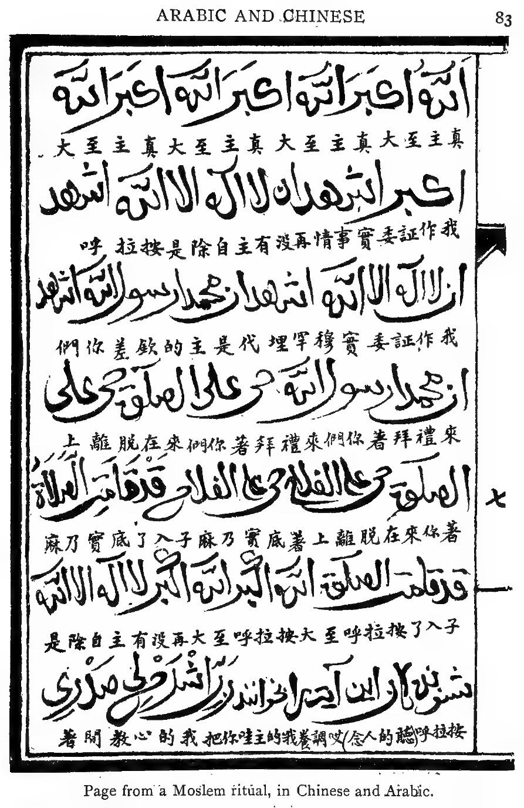
Page from a Moslem ritual, in Chinese and Arabic (original p. 84)
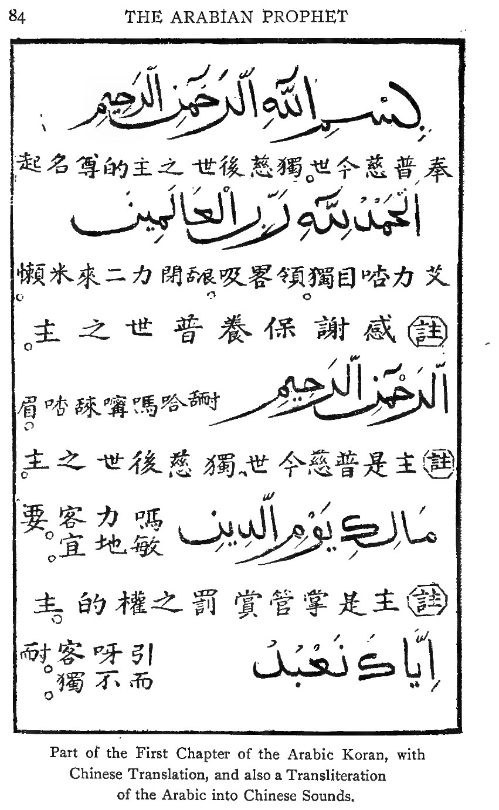
Part of the First Chapter of the Koran, with Chinese translation and
transliteration (original Facing p. 114)
This true Book— the Koran — has over six[?] thousand six hundred
chapters[?] or Sura, and the first sura — the Fatiha — was the beginning
of the book’s coming down. At first the Prophet experienced some
difficulty in repeating it, but Gabriel covered his head with a cloth
and took hold of his shpulder and shook him a few times, after which
there was no difficulty in repeating the Fatiha after Gabriel, who again
commanded the Prophet to repeat it, and it was soon quite familiar.
There then appeared in space an innumerable company of angels waiting to
hear the Prophet repeat the Fatiha, after which with loud and united
voices they said ” Amen “; the sound shook the hills and rivers, and the
Prophet also repeated” Amen.” (Amen is an expression used at the
conclusion of Moslem prayers, its meaning being ” Lord, such is truly my
prayer.” The Fatiha is divided [p. 86] into
three portions, the first consisting of praise to God, the middle
portion of confession and beseeching, and the final portion being prayer
to be led aright, and after each portion is finished the one who prays
and those who hear must all say “Amen.”)
I. This should be verses, as the Sura are only one hiindred and
fourteen: the error is important as it counts the whole Fatiha as only
one of six thousand six hundred portions. (notes to
p. 85)
Gabriel stamped on the ground with his foot and there appeared a
spring, and he instructed the Prophet to bathe himself and worship, with
the same rites as those used in these days: this was the first occasion
on which the Prophet had been taught the purification rites. After the
ceremony the host of angels praised and congratulated and escorted the
Prophet back to his home.
In ancient times the coming down of the Canons had not been always in
one manner: sometimes they would appear as writing, or again as sounds,
or as words spoken, or as dreams — in all these manners the revelation
has come. The manifestations have also varied, having sometimes appeared
in the hills or vales, in the trees or streams, or perhaps have been
heard in the air, or have descended as angels and have personally passed
on the message. To receive the revelation by sounds or writing is
simple, and to be conscious of it in dreams is still more easy; but to
hear it in the air is difficult, while to receive the message by word
from an angel personally is still more difficult. In the case of the
Prophet’s receiving the revelation from heaven, for the first six months
it was by means of dreams, but afterwards he either heard it in the air,
or received it by the angel’s coming down, or personally heard it direct
from the Lord; there was nothing in the nature of writing or sounds, but
the wonderful message came to his inmost heart, which showed that he
ranked above all other prophets; and that he received it in the most
difficult way [p. 87] showed that his rank was
the very highest, while his hearing personally from God the most
wonderful things, showed that his doctrine is the most pure.
At the time of receiving a revelation, the Prophet’s face was flushed
and the perspiration ran down, even when it was cold. If he was riding
on an animal he would suddenly fall down, and even a strong camel could
scarcely keep him up, so it may be seen that the coming down of the Book
was no light matter. On one occasion the Prophet was sitting on the
steps of the Kaaba with Othman in attendance when the latter suddenly
s[?]w the Prophet gazing up I0 heaven and again looking down to the
ground, then he looked (o the right and nodded his head as if in answer;
his face became flushed and perspiration ran down, while his body and
head were contorted for a brief space, after which he gazed up to heaven
for a long time. When they returned, Othman asked what was the matter
and was told that there had been a revelation which said that God
commanded that men should be just and merciful, loving those with whom
they had close ties, and they must not be cruel or wicked or
obstinate.
After the Prophet had returned from Mount Hira and told Khadija of
what he had seen, she said that if this was really so, then henceforth
her husband would be occupied with momentous matters; she would,
however, like to make some tests, so asked Mohammed to tell her if the
angel came again. Just as she was speaking, Gabriel came and Khadija
asked the Prophet to sit on her right side and then inquired if he could
see the angel, and he said he could; she then requested him to sit on
her left side and inquired if he could see the angel and he replied that
he could; then she desired him to sit on her lap and asked if he could
see the angel, [p. 88] and again he said he
could. Then she untied her hair and covered his face and asked if he
could see the angel and he answered that he could not: Khadija said: “It
truly is Gabriel. I have a cousin Waraka who has been a court minister
and who was able to translate the Injil (Gospels) into Arabic; he is now
old but he can look into the future and tell of what is coming to pass;
we had better ask him about these things.” The Prophet said, ” The
heavenly commands are secret and mysterious and are not to be lightly
talked about to people.” Khadija went secretly to make enquiries, and
told her cousin all about the occurrences, and he said: ” This is great
felicity; none of the ancients had such blessing as you now have. Return
and urge your husband to quickly begin his work of instructing and
transforming: it will be difficult at first, but afterwards it will be
easy; exercise great patience, and the glory will follow: I regret that
I shall not receive a command to assist in this matter.”
Khadija returned and told the Prophet what had been said and he
remarked, ” The relationships of man take their beginning from husband
and wife, and instruction and reformation should begin within one’s own
doors: if you believe me you will assuredly follow my teaching.” His
wife replied that she believed, and together they went to Mount Hira to
the spring, where the Prophet taught his wife the method of purification
and worship and she repeated certain words after him, and as he again
repeated what he had received as revelation, she accepted every item,
and thus was the first of all men and women to enter the Faith.
Twelve early disciples. Abu Bekr was related to Mohammed, and was
three years his junior; he had been with Mohammed on a trading trip to
Syria, and they were [p. 89] intimate friends;
at the marriage of the Prophet, Abu Bekr had lavishly used his wealth,
and in other waj’s had helped Mohammed. When he observed that the
Koreish wished to injure the Prophet he exhorted him to keep away from
them and not to join in their feasts of rejoicing or mourning: when the
Prophet received his commission to propagate thg Faith, and the
maligning of the opposers became worse, Abu Bekr exhorted the Prophet
not even to speak to them. The Prophet said, ” I have in very truth
received the command to propagate the Faith and lead men to the Truth,
what should I fear?” Abu Bekr asked how about the slanders, and the
Prophet said: “The furnace fire purifies the gold, and maligning’ only
serves to perfect goodness and virtue; the more maligning there is the
purer will be the virtue; heaven created mean men in order to perfect
superior men. If one goes long without being maligned it must be because
his virtue is not of the highest.” Abu Bekr asked if the virtue of the
Prophet could transform mean men so that they might become superior men,
and Mohammed answered that it could, except in the case of those who
delighted in maligning and who rejoiced in being mean men; for such as
these, who could change them? Abu Bekr assented and said, ” Your
disciple has for some time known something of the Way of the Prophet,
and I venture to ask about the general scope of the teaching.” The
Prophet replied: “It is to initiate and illuminate correct learning, and
to put away heresies; the most important things at the outset are to
destroy idols and images and worship the True God and say ’ There is no
deity but God ’ which is called the Kalima, or Pure and True words; and
say that I am the Apostle of God. To believe in these principles and
repeat this creed and follow this teaching, this is to obtain the Way.”
Abu Bekr was [p. 90] pleased and said, ” This
teaching lifts a man out of the pit and puts him on a rocky crag.” And
straightway he loudly repeated the creed and entered the B’aith; his
servant Bilal also followed him and entered the Faith.
All was the youngest son of Abu Talib, and cousin of Mohammed. At the
time of great scarcity around Mecca, Talib was in straits while his
elder brother Abbas was well off, so the Prophet went to the latter and
said: “My uncle Talib is poor and cannot maintain his children, so I
request that you will allow me to share with you in relieving him of the
maintenance of some of his sons.” Abbas agreed and as Talib was pleased
with the suggestion. Abbas adopted the second son, and Mohammed adopted
the youngest; so Ali was for a long time brought up by the Prophet. When
the Prophet received his commission, Ali followed his teaching, being at
that time ten years of age and of such outstanding wisdom and courage
and dignity as to be already a man, able to assist the Prophet in
managing household affairs and to be entrusted with many things
connected with the propagating of the Faith.
Othraan (Usman) was a relative of the Prophet who in his youth had
wisdom, and early knew the errors of the Jews and Christians and was
able to dispute with them and not be beaten. When the Koreish were
maligning the Prophet they also included Othman as all disliked that he,
being so young, should dispute about and ridicule the ancestral
religion, so they ostracised him. When the Prophet received his
commission Othman at once followed him.
The three men above-mentioned afterwards became the ” Companions,”
and as they had positions of eminence and did great things, they are
here given special mention.
[p. 91] Others of the first to enter the
Faith were the Prophet’s uncle Zubeir and his relative Toliho, besides
Zeid, Mukahode, Osman, and Obaideh.
The ceremony of entering the Faith was at first very simple,
consisting only of repeating the creed and refraining from worshipping
idols. But after the removal to Me<iina there were so many impostors
that it became necessary to be more strict before admitting any into the
Faith. Subsequent worthies fixed certain regulated rites such as those
connected with bathing, changing clothes, clipping and shaving, and so
forth. These were in use in the time of the Prophet, and those who came
after him observed his rites and regulations, giving careful attention
to have the right thing done at the proper time.
Of all the dependent countries of “T’ien Fang[?]’[Chinese] (Mecca as
the centre of the subsequent Moslem empire), the central one was Arabia,
and on the east was Fars (Persia) and Hindustan, on the west Syria and
Misr (Egypt), on the south Yemen and Abyssinia and on the north Roman
Territory and Irak, in all ten countries; when the people of these
countries heard that the Prophet had received his commission they sent
special messengers to congratulate and convey presents. [p. 92] The topographies say that there were in all
ninety-four countries in subjection to”T’ien Fang,” four empires and
ninety kingdoms; and all the kingdoms had their dependent states and
cities, in all not less than ten thousand places.
I. ” T’ien Fang” y[?] = “Heavenly square or cube,” is one of the names
used for the Kaaba; it is commonly used by Moslems for Arabia, more
especially the part known as the Hejaz. Liu Chih says: “>T’ien Fang
is the kingdom of Mecca’’: elsewhere he says:”Asia is a general term for
T’ien Fang,” which, with the paragraph translated above, would seem to
imply that the term in its broad sense is meant to refer to the
subsequent Moslem empire. To translate “T’ien Fang” as the region of
Mecca and then say that Arabia was only z.part of it would make
nonsense; so although our author is telling of the reported events of
the second year of Mohammed’s prophetship and before the Moslem empire
existed, he has in mind the empire as it became after the Prophet’s
death. (notes to p. 91)
Rome was the founder of the empire which afterwards became the Moslem
empire; it was distant from Mecca lo,ooo li to the North-west. Its king
was called C[?]sar, and he was a Roman Catholic who worshipped images.
When he heard that the Prophet had received his commission he sent an
envoy to congratulate, and to enquire as to the purport of the teaching.
Mohammed sent reply that it was to worship the True God, Creator of all
things, and not worship images; purification and ceremonial prayer were
necessary, and also the repeating of the creed. The king said, ” The
teaching is true and the ceremonies are correct; but the worshipping of
images is the teaching of my ancestors, how can such be put aside?” A
court minister stepped forward and said that the prophets from ancient
times had not worshipped images, so it would be quite right not to
worship them; it was not necessary to be bigoted in adhering to what had
been taught by ancestors. The king exclaimed, ” Must we not worship the
image of the Holy Mother of God (the Virgin Mary)?” The minister replied
that the Holy Mother had not taught people to set up images, so it would
be no sin not to worship her image. The king declared that he had been
so long accustomed to do this that he was uneasy if he went a day
without; to which the other replied that it was better to be uneasy
about a wrong ceremony than uneasy about the teaching of the prophets.
The king asked for time to think it over, but to the end he never
submitted to the Faith.
[p. 93] The first entry of Moslems into
China.— Ch’ih Ni (# M) was a country of the Far-eastern empire, the name
being one used for the Middle Kingdom (China). In the sixth year of K’ai
Hwang (gg 4) of the Sui (pf) dynasty, (a.d. 586)[Chinese] which was the
first year of the Prophetship of Mohammed, there was seen in the sky a
strange star; the Chinese emperor Wen Ti (% [Chinese]) (the dynastic
title, while K’ai Hwang is the title of the reign), commanded the Chief
Astronomer to divine its meaning, and he said that there would be an
extraordinary person appearing in the West, The emperor sent an envoy to
investigate if this was really so, and after about a year he arrived at
Mecca; he desired the Prophet to accompany him back to the East, but he
declined. The envoy secretly had a portrait of the Prophet made[?] to
take back with him. The Prophet sent his maternal uncle Saad
Wakkas,[Chinese] and three others, to go with the envoy to Ch’ih Ni.
(Moslems first entered China in the [p. 94]
seventh year of K’ai Hwang of the Sui dynasty, which was also the first
year of Cheng Ming (M M) of the Ch’en dynasty, the ([Chinese]) empire at
that time being divided.)
As Liu Chih has dated the Prophet’s birth twenty-four years before
it occurred, so he is in error here, making the supposed entry into
China in a.d. 587 when Mohammed was a youth of seventeen. There
is,{however, agreement in counting the Prophetship from Mohammed’s
fortieth year. Broomhall in his “Islam in China/ after carefully sifting
this tradition, concluded that”the story cannot be accepted as
trustworthy,” a conclusion in which I concur.
Broomhall (” Islam in China,” p. 73) says that Mohammed ” sent his
portrait to the Emperor, but so painted that the colours faded from the
canvas.” Liu Chih’s version is different; but the whole story of the
portrait is legendary. See Appendix I, Note 3.
Saad, the son of Abu Wakkas the Prophet’s uncle, may be intended
here. Muir says: “Sa’d, the son of Abu Wakkas, converted in his
sixteenth or seventeenth year, was the nephew of Amina, mother of the
Prophet.” He died at the age of seventy-nine in a.h, 55, and was buried
at Medina. There is no satisfactory evidence that he ever visited China.
See Appendix I, Note 2. (notes to p. 93)
The emperor Wen Ti hung up the portrait of the Prophet and worshipped
it, and when he arose, the scroll was there but the picture had
vanished; at which he was alarmed and told Wakkas, who said to him that
the Prophet had forbidden the worship of images, and men knocking the
head on the ground to other men. The disappearing of the picture was due
to the wonderful influences of the Prophet. The emperor in alarm said,
“It must surely be that he is the Pure Emperor and the True Prince.”
Wherefore he had built the “Prophet-Remembrance” mosque’- at Fan Chow
(which is now Canton), for the accommodation of the embassy. Wakkas
subsequently returned to the West.
The account of the entry of the religion of the Prophet into China in
the seventh year of Wen Ti of the Sui dynasty, following the sending of
an envoy to the West, is given in detail in several Chinese histories,
so it can be proved. The story of the worshipping of the portrait is not
recorded in the histories; but it has been handed down by tradition, and
may be seen recorded on stone tablets, so must not be rejected. The old
statement that it was in the reign of Hsiian Tsung of the T’ang dynasty
(a.d. 713) that the entry occurred is an error. That period was over 150
years separated from the advent of the Prophet, so the time does not
tally nor do the circumstances agree. As for the other account which
tells of Chen Kuan of the T’ang dynasty (a.d. 628) sending an envoy to
the West to obtain a Koran, resulting in Moslems entering China
overland, that was subsequent to the period of which we are writing so
it is not recorded in this Life of the Prophet.
I. See Appendix I, Note 6. (notes to p. 94)
[p. 95] Prohibition of idolatry at Ta’if.—
Ta’if was a city 100 li to the South-east of Mecca, whose people were
fond of idolatry and witchcraft and wizardry. In the second year of the
Prophetship they saw a comet which was regarded as an evil omen: they
offered sacrifice and enquired of their gods and got the answer that the
comet would not stop, unless it should be that by the sacrifice of one
third of all their domestic animals the desired result m.ight be
obtained. When all their animals had perished, the elders met together
in conference and said, “Our wealth is used up and our strength is
exhausted, yet the comet has not been destroyed: whatever shall we do?”
A wizard said: “There has now appeared a holy king, whose religion is
exalted and whose virtue is abundant: he is able to have the kings of
the earth as his ministers, and to amend all the teachings of the past:
he regards the putting away of heresies as the most important work of
merit, and the returning to the True Lord as the correct fruition of
life. We ought to follow him and wait for his commands, then these
calamities will disappear.” So the people of Ta’if stopped idolatry and
did not sacrifice any more to get rid of their calamity, but waited for
the transforming teaching of the Prophet; the hearts of the people were
then at peace and the comet disappeared.
Public propaganda at Mecca. — At first when the Prophet began
propagating the Faith, he did not dare to do so openly, but confined
himself to his near relatives and friends, of whom, between ten and
twenty followed him. After the third year of the Prophetship he
gradually entered upon more open efforts, and in the fourth year he
quite publicly expounded his religion, teaching men to worship the True
Lord of creation and not to worship idols [p. 96] and demons, not to believe in witchcraft and
wizardry, nor to pay attention to magical spells and heresies: they
should maintain sincerity in relation to God, and should repeat the
creeds, and in their daily lives should be filial to parents and
affectionate to brothers, chaste and moderate, good and upright; in
everything according with the teaching of the Book and not opposing it:
the great events such as marriage and death had their fixed ceremonies,
and when such events came the proper rites should be observed.
Many of the people of Mecca followed him, at which the Jews and
Christians were disturbed so they went to the Prophet’s uncle Talib and
said, ” Your nephew is introducing strange things and setting up
heresies which disturb men’s minds. Talib replied, “He has’ received the
command of Heaven to propagate religion, how can I stop him? to attempt
to do so would be disobedience to Heaven and would also injure family
relationships.” The Jews and Christians said, ” There is no proof that
it is the command of Heaven.” Talib angrily exclaimed: “What words are
these! The True Lord of creation is real and not spurious: demons and
goblins and idols and images are clearly all false. To destroy the false
and manifest the true has been the teaching of the prophets of all ages:
what do you mean by saying there is no proof?” The Jews and Christians
could not answer this argument. Many of the officers and people now
followed the teaching, none daring to hinder them.
At this time when the religion was prospering and many people were
following it, someone said to the learned men of the Jews and
Christians: “Mohammed is teaching the teaching of the prophets, you
ought to follow him; and moreover he is the Prophet appointed by
Heaven.” The [p. 97] learned Jews and Christians
said: ” Do we not know that he is a prophet! but our forefathers all
worshipped images and: we do not wish to discard the teaching of our
forefathers.” Someone criticised them, saying: ” Can it be right to hold
to the teaching of ancestors if it means disobeying the command of
Heaven and rejecting the prophets? to regardthe ancestors as correct is,
in this case, to disobey Heaven and reject the prophets.” The learned
men said that they, could not bear to speak about it, to which the other
replied, ” That is a matter of personal feeling: there is no greater,
sin than to allow personal feeling to injure the public good.” The Jews
and Christians were beaten in argument, but to the end they would not
submit.
The Kopeish, after believing-, turn away again. — The Koreish was the
greatest of the Meccan tribes, and it; was also the ancestral clan of
the Prophet. When the believers had overcome the Jews and Christians in
argument, the influence of these sects waned. Then several vicious
persons (lit.: depraved devils) secretly entered the conference of the
Jews and Christians and persuaded their learned men to go with them to
the Prophet’s house to lead him into a dilemma with their arguments.
They said, ” Son of the prince! seeing that you have received a
commission, what is it that you teach? ” The Prophet replied that it was
to put away h.heresies and to manifest correct learning, to exterminate
false images and to worship only the True Lord. The others then said,
“The former princes did not make such changes and amendments, nor did
your grandfather; do you mean to say that all your ancestors were
heretical?” The Jews said, ” The ruler of our religion was Moses, and he
did not make the changes, you speak of; do you mean that he was
heretical? ” The [p. 98] Christians said: “The
Lord of our religion was Jesus, and he did not make the changes referred
to; do you mean to say that he was heretical? To slander one’s ancestors
and revile the prophets is among the greatest of sins, and to say that
you have received God’s command to propagate the religion of the
prophets, is this not simply falsehood?” The Prophet answered: ” I have
recf;lived the inheritance of my ancestors and also the command of God
to banish false religions, to venerate the True Lord and restore the
teaching of the prophets of the past ages: my ancestors right back to
Adam were none of them worshippers of images or pictures, and you all
know that the prophets of the past did not worship images. When Moses
went up into the mount, his followers themselves worshipped a golden
calf and afterwards had to confess their sin, and they slew one another.
After the death of Moses his followers were misled into heresies and
there were those who worshipped images; how could these have any
connection with Moses? Jesus in propagating the teaching never set up
images or pictures, but after he ascended to the far[?]off[?] his
followers took him to be the Lord of creation and so drew pictures and
worshipped them; how can this have any real connection with, Jesus?
these are all disorderly doctrines, arid, to take disorderly doctrines
to be correct is a mistake. From of old to the present have you ever
seen or heard of a single prophet who worshipped images? You are all
scholars and a word to the wise is sufficient, why should we further
discuss the matter?” The mouths of the visitors were stopped- and they
retired. The vicious persons seeing that they had not scored inthis ’•
I. Moslems believe that Jesus did not die, but was translated to heaven
by God. [p. 99] dialogue were angry with the
Jews and Christians and said, “You are played out, but we shall try
again”: so they went -out and spread the report that Mohammed had
repented of his errors and confessed his sins to them and acknowledged
that it was right to worship images. Upon this many of those who had
believed and followed the Faith turned back and disowned it; this was
the.result of the seducing of the ignora:nt by vicious persons, which
the people in general were not aware of.
Mohammed’s uncles revile and injure him. — The Prophet’s uncle Abu
Lahab lived near to the Prophet and he reviled him and smeared dung and
filth upon his house, which the Prophet personally removed, and when
they met, the Prophet treated his uncle with proper ceremony and said:
“Uncle, you ought to conform to God’s command and follow the true Way; I
thank you for reproof which does me honour, but why revile and injure
me?”
A great-uncle of the Prophet very much disliked that he should regard
as wrong the teachings of the ancestors, so this great-uncle vowed that
he would kill the Prophet, and on meeting him one day he threw a great
stone which hit the Prophet on the shin and caused the blood to flow:
the Prophet loudly repeated the creed and added that those who repeat
these words would escape; so they could not injure the Prophet.
The clansmen request harmony.— When the Prophet first established his
teaching, the devils regarded it as calamitous and therefore caused that
among the relatives there was discord, and seething unrest among the
people at large. The Koreish family consulted together, saying:
[Chinese]‘Mohammed conceives that he has received the command of Heaven
to spread his teaching, while the people generally [p. 100] •ipo THE ARABIAN PROPHET think they oUght to
keep the teaching of the ancients; so there is struggle between them,
with mutual opposition until we have never a day’s peace, and our
business is disappearing and the people will have nothing to live upon;
had we •not better request our ruler Talib to pacify them?” Talib
thereupon gathered together the leading people of the whole city and
said to them: ” My nephew in propagating the Faith is fulfilling the
duty placed upon him by the command of Heaven; it rests with you whether
you follow him or not: from this time forth everyone may follow what he
pleases[?] and there shall be no mutual recriminations or revilings or
beatings.” He then admonished the Prophet, saying, “The Way is an
honourable one, walk in it yourself, but do not compel others to do what
they do not wish to do.” The Prophet said, ” Your nephew has received
the command to propagate the Faith; in saving men from fire and water
one cannot go slowly.” Plis uncle Abu Jahl, standing by, said, ” What do
you consider to be the Faith?” to-which the Prophet replied that it was
to have done with the false and revert to the true. Jahl retorted, “Were
all our ancestors wrong?” The Prophet replied that all were wrong who
did not follow the teaching of the prophets’ The rest all angrily
retorted: “You follow your true, and we will keep to our false. We will
all obey the admonition of our ruler and keep from annoying one
another.” They then dispersed and Talib said to the Prophet, “Why”did
you speak so strongly?” to which’ the” Prophet replied, “I fear the Lord
and not men.”
The Jews and Christians, seeing that the religion of the Prophet
could not be repressed, stirred up some mischief lovers among the
Koreish, saying: “A spark unquenched may set fire to a forest: Mohammed
relies upon the protect- [p. 101] ABU TAUB
DEFENDS MOHAMMED loi tion of Talib; why not bribe Talib with rich
presents and move him with attractive beauty, and then you can kill
Mohammed?” The Koreish followed this stratagem and went before Talib
with presents of gold and pretty girls and said: “Mohammed is a bud of
calamity and of no advantage to the family or the country; we request
that you will banish him to some distant city, then the family and the
country will both have peace. Otherwise it is to be feared that your
eminent position will be difficult to protect.” Talib was angry and said
that it was his and their duty to take care of the life of Mohammed, and
he would never do what they asked. They replied, ” If all the people of
the country are unwilling, what then?” Talib said: “He is the man of
Heaven’s command: you want me to oppose the command of Heaven and put
away my own flesh and blood and change it for riches and lust, — this I
cannot do.” He then shook his garments in disapprobation and turned into
his room, at which the others were all the more angry.
When the Jews and Christians saw that their stratagem had failed and
that they could not shake the determination of Talib, they consulted
together again over another scheme to alienate the followers of the
Prophet from him and to lessen his influence, so they spread the report
that he was insane, and that his actions and words were all of cunning
and sorcery, and that those who were deceived by him would perish at his
hands; therefore people should reject him and keep away from him. In
consequence of this the minds of people were disturbed, and those who
were thinking of following him stopped short, while many who had already
conformed thought of turning back again. Talib heard of this and was
wroth and said, ” This is a crafty stratagem [p. 102] of the Jews and Christians: can the lamp of
Heaven’command be extinguished by the wind of devils?” So he called a
great meeting of the leaders of the clan and proposed a covenant to them
in these terms: “Mohammed is the most honourable one in heaven and on
earth, and is the precious possession of our family: all the men of our
clan ought in reason to protect him: can we let our own flesh and blood
suffer injury at the hands of others? It rests with every individual
whether he will follow the religion or not, but from this time forth, if
anyone injures Mohammed or his followers, then our. whole clan will rise
up and punish them.” All assembled assented to this covenant and signed
their mark to it, except Abu Lahab.
The first migration to Abyssinia. — (Fifth year of Prophetship.)
Abyssinia is one of the seven continents of the great earth, situated on
the South-east of Mecca; it is bounded on the east by Yemen, on the west
by the Soudan, on the south by the great sea and on the north by Arabia
and Egypt. This country has had famous and worthy kings, one of whom,
Saifu, was visited by the Prophet’s grandfather, Abd ul Muttalib, who
went to congratulate, and heard from the king many things about the
future of the Prophet. Saifu’s grandson Najashi was now on the throne
and there was excellent government, and benevolent customs, even
excelling those of his grandfather. When he first heard that the Prophet
had received the command he sent to congratulate; so the Prophet,
knowing of his goodness, and that he could protect the Faith, commanded
his own followers to migrate to the country of this king.
There were fifteen Moslems who migrated to Abyssinia: they left Mecca
secretly and went by boat to the borders’ of that land. When the Koreish
heard of it they sent [p. 103] messengers to
force them to return but they all refused to do so. After a little over
a month they heard that there had been a further revelation of the
-Koran and that the Prophet had knocked his head to the ground (in
worship), and that the Jews and Christians had followed him in doing so,
at which the refugees rejoiced as they thought these sects had conformed
to the Faith; so they returned to Mecca: on the way they heard the
report that the Koreisli desired to honour the Prophet by making him
king, but he stoutly refused the honour; the multitude, however, themr
selves selected a lucky day and requested the Prophet to ascend the
throne, and when after, all he would not do so, they were angry and
troubles began again. When the refugees heard this they had already left
Abyssinia so they could not very well return there, but went straight on
to Mecca and settled in their old localities, all except one who • was
not on good terms with the chief of his family, and who after a few days
returned to Abyssinia and remained there until the Prophet removed to
Medina, upon which he removed to that city.
The Jews and Christians seeing that the Moslems had returned, were
all the more violent in subjecting them to indignities: one day, when
they knew the Prophet was at worship, they pretended to want to enquire
about the Faith, so entered the place, and finding a camel’s saddle they
put it on the Prophet and pressed down upon him, and then went out: the
Prophet’s daughter Fatima came and took off the saddle. Once when the
Prophet was at the Kaaba engaged in his devotions, there came one behind
him who gripped his neck until he was nearly strangled and could not
speak; Abu Bekr came and saved and revived him and commiserated with him
about his injuries, to which [p. 104] the
Prophet replied that the great Way was not injured nor was God
harmed.
The Koreish rnet secretly and made a covenant, with a vow to their
gods, that whenever they met Mohammed they would beat or kill him:
someone told this to the Prophet who said that they might do as they
listed, he would not seek to avoid it; so he bathed himself and went
out: the crowd gathered around him to seize him, whereupon the Prophet
stood still and with a loud voice repeated the creed and, in the
twinkling of an eye they all fell down like dead men: the Prophet then
said, ” The True has arrived and the false melts away! you should
discard the false and revert to the True.”
On one occasion the Prophet was at the Kaaba approaching the black
stone around which many people were sitting and they would not allow him
to touch the stone; but without waiting for them to give way he touched
the stone and went away: this occurred a second time, at which the
people were startled and said that he was in communication with the
spirits, so they tried to seize him while he stood still and said, ”
Here I am; kill me.” But they dropped their hands and craned their necks
when they saw a bird standing upon his head, and although they were very
bad fellows yet they cried out to Mohammed to forgive them, and they
acknowledged him as the Apostle of God, the Prophet of all the world.
The Prophet told them to believe in God and from henceforth not to
molest the Moslems, which they all promised to obey; and after this none
dared, to molest the Prophet.
The second mig-ration to Abyssinia.— The learned men of the Jews and
Christians met with the leaders of the Koreish at a secret place and
plotted together, as they said [p. 105] that
Mohammed was mad and that by magical arts he was deceiving people into
slandering their ancestors, destroying idols and images, despising the
talented and wise men, confounding religions, and causing relatives to
be at variance and scattered as if by fire and flood. What was to be
done? They said, ’ He is guarded by magic, and also has Talib to protect
him, who can harm him? ” They then made a covenant that whenever he was
met he was to be beaten or killed, and that the responsibility for his
death would be shared by all, blood-money being paid. When this plot was
fixed the Moslems did not dare to go on the streets: the Prophet himself
was living in security, but remembering that his followers had no peace,
and that at the time the movement was not strong, and that without a
clear command they dare not undertake much, he for the second time
commanded his followers to retire to Abyssinia, and ninety-one of them
were willing to go, the leaders being Ja’far the son of Talib, and
Salim. A letter was sent to king Najashi asking for protection: to those
who were without means, Talib gave travelling expenses and took care of
their families.
In the second migration, as those who went were many, the matter was
open to all, and the learned men of the Jews and Christians took counsel
with the Koreish; it was said that if the Moslems gained the ear of king
Najashi and he was to send troops, it would be bad for the opponents of
the Faith: it was therefore best to send messengers on ahead to speak to
the king that he should either kill the Moslems or drive them out, or
arrest them all and send them back. The Koreish also got together
presents of gold and silver articles and finely-worked leather goods
such as the Abyssinians considered valuable; they then appointed [p. 106] Rubair and Ermuer to make haste to Abyssinia
and bribe the officials that they might be introduced before the king.
When they came before him the king asked why they had come to which they
replied: ” In your minister’s country there are so and so who rebel
against the religion of the ancients and slander the former prophets,
and introduce new and strange things which our officers and people are
suspicious of; these people are now hastening, to your superior country
to ask for protection from the king; your majesty should not let them
remain lest your superior country should suffer injury; either kill them
or drive thetii away, or arrest them and return them to their own
country, just as the king may command.” One of the advisors of the king
stepped forward and said, “What has been said is very true: these people
know those about whom they speak as we do not.” The king said: ” When
people come to me supposing that I am to be trusted, it would not be
etiquette to send them away, and it would not be according to reason to
kill them; while to send them back to where they came from would be
neither charitable nor wise: as regards rebelling against religion, I
will myself interrogate them.” When the Moslems arrived the king held a
full court for the examination, and had a copy of the InjU (Gospels)
placed on a table, and then called in Ja’far and Salim, the two leaders
of the Moslems, and said to them: You are accused of rebelling against
the ancient religion and of slandering the form&rjigt’’pro[?]s and
establishing new and strange things, catising the officers and people to
be in doubt and confusion; now tell me truly, what religion do you
profess?” Ja’far answered: “Your Majesty’s benevolence is wide as the
heavens and your perception is as bright as the sun: your servants
formerly also followed the [p. 107] religion ot
the Jews and Christians and worshipped images. But Mohammed, the son of
Abdullah, of incomparable virtue, having received the command of Heaven
to propagate the Faith, and having received the True Book (Koran) has
taught us that we should worship and serve the Lord of creation, and not
worship idols and images. The Lord is true, but the idols are false,
therefore we have discarded the false and now serve the true, and no
longer belong to the religion of the Tews and Christians and have
nothing to do with them; but they stir up trouble and seek to injure us,
to beat and kill us, and as our Prophet is not able to withstand them,
he commanded us to migrate to your superior country and seek protection
from your Majesty.” The king asked what did the Heavenly Book say, and
Ja’far in reply repeated the 99th chapter of the Khaf uha which tells
about Mary giving birth to Jesus, and when he was only half way through,
the king was shedding tears which fell upon his garments, and all the
ministers were also weeping. The king called Rubair and those with him
and rebuked them, saying: ” You are slanderers; the things which they
teach are the same as the teaching of Moses and Jesus; the book which
they repeat is similar to [?]he Injil. The worship of images was not
originally taught by the prophets; do you bring the traditional habits
of your forefathers to slander the teaching of the prophets? you are
transgressors.” Ermuer said:
“Jesus is the Heavenly Lord; they slander him by making him only a
servant.”
“Even so,” said Salim, there is no reason to be at enmity with one
another; you recognize Jesus as Lord, and our Prophet said Jesus was the
servant of the Lord; apart from the Lord himself, we are all servants.”
The king then asked Ermuer, the Christian:
[p. 108] ” What do you say about Jesus? ”
” He is the Lord.”
” Has the Lord any form or likeness?”
” No.”
” Jesus had form, therefore he could not be the Lord.”
” The Lord originally is without form, but when he came down and was
born into the world, then he had form.”
” Oh! ” said the king, ” when you talk about coming down and being
born, it is all the more apparent that he was not the Lord. All created
things have form when they are born; is the Lord to be considered the
same as all other things?”
The king then asked Ja’far, the Moslem, what he had to say about
Jesus, and he said:
” He was a Messenger of God, a prophet who received the commands of
God.” The king lifted up his pen and declared to all present that what
Ja’far said did not differ from the Injil. Turning to Ermuer he
asked:
” Do you pay respect to the Injil? ”
” The Injil is a Book sent down by our Heavenly Lord,” replied
Ermuer.
” The Injil,” said the king, ” does not teach people to worship
images, but you do; the Injil teach.hes men to reverence and believe the
final Prophet Mohammed, but you teach men to oppose, and, desire to
injure him. Their words are all in accord with the Injil, but your words
are all opposed to it; your opposing the Faith and slandering the
Prophet are both heretical actions and you ought to be killed or driven
away; but I remember, that you are a people of a strange land, and also
are relatives and acquaint- [p. 109] ances of
the Moslems, so I will not fix guilt upon you: naake haste back to your
country and tell your people that I, king Najashi, follow the Faith of
the Prophet Mohammed. If after this, you again trouble Mohammed or any
of his followers, I will myself send soldiers to punish you.” The king
then said to his ministers: ” These Moslems are to live in my country as
my guests; treat them well and let there be no plotting against them,
and do not take any bribes from the people of Mecca to do them harm.”
Then turning to the Moslems he said: ” You may all live here in peace,
as happily as if in your own homes; if anyone takes advantage of you or
plots to injure you, just knock at my golden gates and I will personally
investigate the matter. ” Ja’far took from his bosom a sacred Book, and
when the king saw it he did obeisance, and asked to be instructed,
saying that now they were all disciples of the Prophet, they were also
brethren.
Chapter VI
Conversion of Hamza and Omar — Ban on the Hasliim family — Death
of Abu Talib and Khadija — Mohammed stoned at Ta’if — Marriage with
Sauda — Deputation from Medina — Pledge of ‘Akaba— Ascent to heaven —
Migration to Medina. Hamza was the uncle of Mohammed, a man -of valour
and resolution, he was fond of hunting. One day on coming back from the
chase, he went, as his custom was, to the Kaaba before going home;
suddenly a man rushed up and told him that he had just seen Abu Jahl
injure Mohammed outrageously and added: ” Jahl is your brother[?] and
Mohammed is your nephew; family affairs should be conducted harmoniously
and the country’s laws should be administered equitably; can you permit
the nephew to suffer from the uncle’s violence?” When Hamza heard this
he was very angry and said he would go and punish Jahl. When he arrived
at the place he saw Abu Jahl sitting on the steps, and in his anger he
beat him on the head with his bow and said:’ When uncle and nephew
injure each other, family affairs are disordered; I am” now a follower
of the Faith of Mohammed, and if you again act violently you must know
that you will have to reckon with me.” He then went to the Kaaba, and on
his return he saw the Prophet, and straightway entered the Faith. After
the Prophet had secured Hamza as his helper, the Koreish dare not look
him straight in the face. [p. 110]
I. Abu Jahl was not actual brother to Hamza or uncle to Mohammed, but
these terms are more embracing in Chinese than in English; they were
near kinsfolk. no (notes to p. 110)
[p. 111] Omar was a relative of Mohammed who,
while still young, was a man of courage and resource; he had astonishing
ability as a debater and he used to say that if he had control of the
state there would be no misgivings in the settlement of cases. One day
he heard the Koreish say that Hamza had been converted to the Faith of
the Prophet and that none dare now oppose, and even the valiant Abu Jahl
had been beaten. Omar impetuously arose and said, ” I will kill Mohammed
and Hamza too, and give peace to the people.” So he picked up his sword
and went forth, and on arrival at Mount Safa he met Said, the son of
Wukeshi, who asked him where he was going, and on being told that he was
going to kill Mohammed Said remarked: ” You are a wise man, why do you
want to do a foolish thing? Mohammed is a prophet, how can you kill a
prophet?”
” Do you also follow him?” demanded Omar, “then I will first kill
you.”
” You are a man of benevolence,” answered,Said, ” for what crime
would you kill me? You would only dishonour your sword. O Omar, the
Prophet of heaven is spreading the Faith that all the world may benefit
by the light; I have long followed the Faith, and the Lord has protected
me in peace; if you follow the Faith you may be assured you also will
have like peace.”
” Ilwill kill you,” replied Omar angrily, ” as an earnest of my
killing Mohammed.” He then stepped forward with his sword to kill, and
Said urged:
“You are brave; why are you brave towards man and yet fearful of your
sister? your sister and her husband have long followed the Faith and
have now a teacher to instruct them in the. Rook; why do you not first
kill them?”
[p. 112] Omar hastened to his sister’s house
where just at that time Khabbab was giving instruction in the Book, but
on hearing Omar approach he hid himself while the sister’s husband,
Sayed, met the visitor. Omar asked what book they were reading, and his
sister Amina[?] answered that they were not reading a book. Omar
continued, ” I have heard that you and your husband have followed
Mohampied’s religion, is that so? ” The sister replied that it was so,
upon which Omar was angry and seized Sayed with intent to kill him and
when his sister admonished him he struck her on the face with his hand
so that blood came; she wept and implored him not to injure her, saying,
” I am the servant of the Lord.” Omar asked what she meant by that, and
she replied that she had joined Mohammed’s religion and served the Lord
of creation and did not worship false idols made by men. On hearing this
Omar changed countenance and asked what were the proofs of the teaching
of the Prophet, and when told of the heavenly Book he asked what the
book said, and to be allowed to see it; his sister replied that the
heavenly book was a pure one, and no one except a clean person might
touch it; he must first purify himself before the book could be handed
to him. Omar’s heart was now stirred, so he went out of the house and
bathed, during which his sister went into the inner place and requested
the book from Khabbab who said that the book must not be given to a
kafir (unbeliever). The sister said she expected he would join the
Faith, so having secured the book she came out just as Omar had finished
his ablutions, and he took the book and read a few verses from the “Ta
Ha” sura which astonished him so much that he said they were not the
words of a man, and he must worship the [p. 113]
One who gave forth those words. He read a little further, and then could
not restrain himself from saying out aloud, ” I testify that there is no
deity but God; there is only one God, and Mohammed is his Prophet.”
Khabbab rejoiced greatly and loudly repeated the Takbir and came out
from the inner part of the tent and said: ” O Omar, you came to this
place as dark as night and the bright moon has enlightened you, as the
meaning of ’ Ta Ha ’ is the brightness of the moon.” Omar rejoined: ” If
you will lead me to the presence of the Prophet, I shall be in the
brilliance of the sun,” meaning that the Prophet was to be compared to
the sun.
I. The sister’s name is elsewhere given as Fatima. (notes to p. 112)
Khabbab and Sayed straightway led Omar to see the Prophet, who was at
the house of Hamza; when they arrived at the door of the house the
people, seeing Omar coming, were greatly alarmed and went in to report
that an enemy had come; at this they were all afraid, except Mohammed
who said that it was his friend who had come; so he went out personally
to meet him and took him by the hand and brought him in and gave him
respectful greeting. Omar was greatly agitated as with trembling limbs
he said, “Your disciple follows the Faith.” The Prophet then commanded
him to repeat the Kalima which Omar did, and then the Prophet and all
the others joined in a loud repetition of the Takbir, the sound whereof
was heard in the city of Mecca. The Prophet said, ” O Omar, last night I
prayed to God to let Omar or Abu Jahl be my helper; in the evening I
prayed, and in the morning my prayer is answered.” They all considered
this to be a matter for congratulation.
Omar stepped forward and said that the reason for the smallness of
the success of the Paith was because the [p. 114] principles of it were not understood; he
therefore advocated that the teaching should be extended and. the
principles expounded so that those in high positions would follow, and
the more ignorant people would then be sure to submit; when the wind
blows the grass bends, even the stubborn cannot but yield to its power.
The Prophet told Omar that he should realize that all the affairs of men
have their proper times.
When the Prophet went out, all the disciples followed, Omar leading
with his sword, and they loudly repeated that there is no deity but God
and Mohammed is his Prophet. The Jews and Christians heard them with
dismay, and said one to another that Omar had also submitted. The
Koreish said, ” The greatest opposer among us— the one who gave out that
he was going to kill Mohammed— has become a follower!” Omar announced
that if anyone dared to disturb the Moslems, so much as a stone or a
blade of grass, when it was found out he would surely kill such
offender; all the opposers were therefore afraid, and the Moslems had
peace.
A Mosque built, and pulpit set up. — From the time that Hamza and
Omar joined the Faith the Moslems gained power and the religion
gradually became stronger, the followers of note being thirty-nine. Then
Abu Bekr went in and said, “O Apostle of God! this is the time to
manifest the Way and to illustrate the teaching.” The Prophet replied
that it was better to wait. Then Omar said: ” For some time our people
have looked forward. to the opening of a mosque and the setting up of a
pulpit; I request you to let such be set up, and there wait for the
command of the Lord” TChadij a also exhorted that this be done and she
used her [p. 115] own money to buy the materials
and finish the work. (This was the first mosque and pulpit of the
religion of the Prophet.)
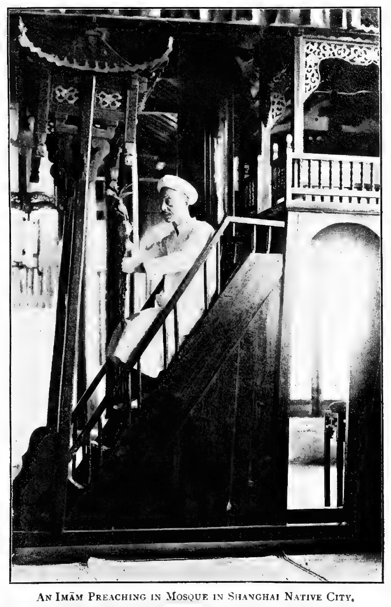
An Imam preaching in a Mosque (original p. 136)
At that period there was no fixed time for worship, people went to
the mosque whenever they wished to worship; but it was the usual custom
of the Prophet to go to.the mosque on mornings and evenings.
When the pulpit was ready, Abu Bekr gathered the people together and
invited the Prophet to ascend the pulpit and exhort the people; the
Prophet excused himself as being still unqualified; Bekr replied that
the receiving of the revelation was true, and he should not fear men, to
which the Prophet responded, ” Do you think I am afraid of men? ”
Mohammed then ascended -the pulpit and Omar made it known to the whole
city and the officers and people of the various religions assembled at
the mosque to hear the instruction; the Prophet stood up in the pulpit
and all the people bowed below the pulpit and there was silence •during
the preaching in which the Prophet traced the history of the worship of
God and told how that for over six hundred years from Jesus there had
been no prophet and heresies had arisen, but now God had sent His
Prophet to call people from heresies and the worship of idols; those who
believed would be received into heaven for eternal happiness, and those
who opposed would fall into hell eternally. The people listened to the
end of the address and all were moved; about half accepted the Faith and
the others remained opposers. Those who followed the Faith put away
their idols and worshipped the God without likeness; those who did not
submit still assented to the principles as being correct, but as the
worship of idols had • been the religion of the ancestors, to change in
a day would [p. 116] not be satisfactory. They
were disquieted’ at the thought of discarding the religion of their
ancestors, but they were not disquieted at disobeying the Prophet; such
was their stupidity and the way they were misguided!
From the time when the Prophet gave his public address, the people
who became obedient to the Faith increased daily, and the adversaries
were envious of them. (From the time of the first preaching in the
pulpit, the Jews and Christians and the Koreish, and all who did not
obey the Faith were called “adversaries.”) There -was one young man who
was particularly bad, and he violently attacked Abu Bekr and injured
him; the Prophet placed. his hands on the injured places and a cure was
immediately effected, Omar beat this bad young man and dug out his
eye.
Abu Jahl injures the Prophet. — Previously whenever the Prophet went
out he went along with others, but about this time he would sometimes go
alone to the mosque to worship, or to the market-place to preach. One
day when out alone he was met by Abu Jahl who led on some violent
fellows to stone him so that his forehead was cut and blood flowed;
someone carried the news to AH who rescued the Prophet and took him back
home. The disciples came in and exhorted the Prophet to adopt means to
prevent people attacking him, and cause them to fear him; why should he
be injured by them as he had been that day? The Prophet replied that he
had no plan to prevent men, but he was in God’s hands and the injury
done to himself was slight compared with the injury done to God.
The ban on the Hashim family.— When Hamza and Omar first followed the
Faith they two were a match for all adversaries, and none of the Koreish
opposed them. [p. 117] The king of Abyssinia
vigilantly protected those who had migrated to his country, and Abu
Talib very closely protected the Prophet.
The plots and schemings of the Jews and Christians and of the Koreish
came to nothing, and the opposers were unable to” move hand or foot
against the Moslems. The whole clan of the Hashim- consulted together
and said that as the Prophet was a man of their family they must protect
him against insult from others, and in order that he mi[?]ht be properly
respected there must be no appearance of disparagement of him within the
family, and then insults from outside would not be tolerated. From this
time the Moslems could eat and sleep peacefully, the Faith was spread
greatly, both near and far, and the. customs of the Moslems prospered
ten times as much as before.
The Koreish, on seeing that by themselves they could not injure the
Prophet, took counsel with the Jews and Christians, and it was decided
to make a covenant of a boycott of the Prophet and of the Hashim family,
the written agreement stating: We will forever regard the Hashim as our
enemies; we will not buy or sell with them, nor intermarry, nor be
friends, nor meet them on social occasions; whenever we meet them on the
road or in, any building, we will either beat or kill them: if anyone
out of private regard shall either buy or sell with them, we will
appropriate his property; if anyone from personal affection should give
food to them, we will confiscate his food; if one family breaks the
covenant, the whole country will attack that family.” The names were
signed to the covenant and it was closely sealed and then suspended from
the middle -beam of the Kaaba. They also appointed people to watch at
the markets and at the city gates, who, when they saw [p. 118] an3r of the Hashim bringing their goods to
market, or wanting to buy, drove them away, until the Hashim were in
sore straits and could only buy things at nights and had to pay double
price for them: there were many who were willing to sell secretly to
them, and as the Koreish could not prevent this they put out another
proclamation thatnothing was to be sold to them except at three times
the price.
The Moslems were sorely distressed; the women and children wept from
cold and hunger and the sounds of grief ceased not night or day; of
those who heard them, some were pleased, but others pitied them and
secretly sold to them at the ordinary prices, or gave to them by placing
food Upon the walls from whence it could be taken down. Talib was afraid
lest some of the opposers should treacherously come to injure the
Prophet, so he commanded his sons to remain with him all day and sleep
with him at nights; when food was obtained they must -first give to the
Prophetj but the Prophet gave to all the brothers, and gave his own
portion to the crying children and would not eat it himself.
There were some Jews who, while they did not follow the Faith, yet
knew that the Prophet was the appointed Apostle and they would not join
in the covenant but exhorted the Koreish against this inhumanity to
those of their own kith and kin, and some of the Koreish regretted the
ban and said they had not thought things would go to this extreme; so
they broke the covenant and gradually the buying and selling and giving
of food became more open. Abu Sufyan, though himself not at this time a
believer, yet exerted himself to bring about a better state of things;
he vacillated between belief and opposition, but in the end he became a
follower.
[p. 119] TflE BAN REMOVED 119
The prohibition destroyed.— God caused worms to eat the parchment of
the covenant; all places where God’s name occurred were eaten away, and
all the words of prohibition were changed; for example the words “must
not” became “ought to” and “confiscate.” became “restore” and “take
away” became “give”: this was revealed to the Prophet who told his
uncle, who reported to the people, saying: ” My nephew Mohammed is a
prophet and his words are not vain; he says that God has commanded the
worms to eat the parchment of the ban; now the document is secretly
hidden in the Kaaba which may not be privately opened, so how could he
dare to speak falsely? it must be that God has made this known to him;
we will now settle the matter by opening the document and examining it;
if his words are false I will kill him as a blasphemer; if his words are
true, you must follow him as there can then be no doubt that he is the
Prophet, and henceforth he must not be opposed.” They all agreed, and
then the package was undone and the document examined and they found
that there really were these changes and the covenant was the exact
opposite of what it had origiilally been. Talib was pleased and all the
people rejoiced and said that this was the judgement of God; how then
could they continue to injure those of their own clan? The elders of the
Koreish declared the previous covenant to be ended from that day, and
henceforth the covenant as fixed by God must be obeyed; the commands of
God were true, and the words of the Prophet were genuine, therefore all
would follow the Faith of Mohammed. The people then vied with one
another in their attendance upon the Prophet and in following the Faith;
but a few of the arch-enemies, together with the scholars of the Jews
and Christians, would not submit, but went away in anger.
[p. 120] Death of Abu Talib.— When Talib
became sick he summoned to his bedside the descendants of Hashim and
gave his parting injunctions to them, saying that Mohammed was the most
honourable of all creation and the most eminent of all the prophets; at
Abd ul Muttalib’s command Talib had taken care of the Prophet all these
years, and now that he was about to pass away he desired them to honour
Mohammed and make him the ruler of the country; to help him and believe
him, and be loyal and faithful to him in the utmost degree; then they
would have peace in this world and in the next. Mohammed, weeping, asked
his uncle not to trouble about him, but to protect himself and to repeat
the Kalima. Talib said that he followed the faith of his fathers, and
later he told Mohammed privately that he knew that the Way of his nephew
was true, but he had thought it best for the protection of Mohammed not
to become a follower; when urged again by his nephew to repeat the creed
and make sure of future happiness he said, ” I have you, why should I
worry about anything further?” Having said this he passed away, at the
age of eighty-five years.
Death of Khadija.— When Talib was sick Khadija nursed him; after his
death she i-reflected much upon the slow progress of the Prophet’s
religion; now that they had lost the one on whom they relied, and the
other uncles were strong and would not give the ruling position to
Mohammed, she grieved much and weepingly said to the Prophet that for
twenty-five years it had been her purpose to assist him in propagating
the Faith, that she might be favoured with blessing through him, and
that she might witness his enlightening of the whole world; now
unfortunately he would have to look after his own protection and that of
his disciples, and he would be all the more occupied in the matters for
[p. 121] which he had received the commands, so
she now desired to depart in peace. Khadija then repeated the creed that
there is no deity but God, and her husband was truly God’s Apostle, then
closing her eyes she passed away, at the age of sixty-five years.
Persecution at Ta’if.— When the Prophet saw that most of the people
of Mecca believed, the exceptions being,a few arch-enemies and the
leaders of the Jews and Christians who were too stubborn to be
instructed, he thought about spreading the Faith to other places; he
therefore inquired of his disciples as to which of the neighbouring
cities it would be best to begin at; they all said that the people of
Ta’if were looking forward to the Prophet’s teaching, and if he first
went there it would be easy for them to become followers. Mohammed was
encouraged with this information, and this year he set out to teach at
Ta’if. When Abu Lahab heard of it he said that he would go and oppose
him, so he pushed on quickly and on arrival at Ta’if he announced that
there was coming one who would destroy the religion of their ancestors
and, by doing injury to the present generation, would.pluck up the roots
planted by the forefathers; they ought therefore to join together to
kill him. Lahab also said that Mohammed would exterminate the worship of
idols, and that he declared that all their ancestors were sinners who
could not be forgiven. The people said that idol worship was an alien
religion, of no use, and to exterminate it was quite right; but to speak
against their ancestors could not be permitted; so when the Prophet
arrived they would not receive him, and led on by Lahab they savagely
beat him until blood flowed from his limbs, whereupon he returned from
Ta’if. On the return journey he came to Nakhla, a large town, where
there was [p. 122] a grove of date trees, and in
the night as he was at worship there came seven persons who learned the
ceremonies and as they heard the words they followed them and observed
the proper genuflections all the night; the Prophet took their names,
and they were all Genii.
After staying several days at Nakhla the Prophet wished to return to
Mecca, and because of the dangers of the way the guardian of the town,
who was named Mut’im, went with an escort to make sure of his safety;
when Abu Jahl met them he asked Mut’im if he had submitted to the Faith,
to which Mut’im replied that he had come to protect the Prophet and he
asked what Jahl was going to do; Jahl said that he also would join in
protecting, and thus the Prophet returned and dwelt peacefully at
Mecca.
Marriage with Sauda.— After the death of Khadija many people offered
their daughters in marriage, but the Prophet would not receive them. The
disciples, fearing that his will would be set on going far away, pressed
him to take a wife, and they selected the most wealthy and most
honourable of the eligible ladies to offer to him. Mohammed said that in
marriage the important thing was for the two parties to be happy with
each other; Khadija had been rich and had used her wealth to help the
Prophet to perfect virtue in a way which made him ashamed; he would now
find pleasure only in someone who was very poor; so he took Sauda who
was very poor but who was beautiful in appearance and in virtue.
Betrothal of Ayesha. — Abu Bekr was rich; he had a daughter named
Ayesha who was at that time six years of age, and whom he wished to
offer to the Prophet as future wife; and when he saw that the Prophet
had taken the very poor Sauda, he was much troubled. One night he
dreamed [p. 123] that a spirit said to him that
he should offer Ayesha to prepare to be the future consort; Ayesha also
had a dream to similar purport and told her father. Thai same night the
Prophet dreamed that a young girl sat beside him and when he asked her
name she replied) “Ayesha the daughter of Bekr.” In the morning Bekr led
his daughter to the Prophet and told of his purpose; the Prophet replied
that he had already taken Sauda, and when Bekr said that she was poor
and had nothing to rely upon the Prophet answered that she would rely
upon him, and he gloried in poverty. Shortly after this Gabriel received
command and came to say that Ayesha would be a suitable wife to help in
the propagating of the Faith, and that as she was young she would live
long to be of service, so the Prophet must not refuse her; Gabriel also
offered to be the go-between in arranging the affair, but the Prophet
considered [Chinese];his would be irregular and desired that someone
else be selected, so Haoliehsi acted as go-between.
The submission of the Khazraj.— The Khazraj people were wealthy and
numerous, valiant and courteous; they had heard from their forebears
about the coming final prophet and his religion, and they had long
looked forward to these: when the prophet received his commission they
did not know that he was the final prophet, and on seeing that most of
the people of the country were his enemies, they did not dare to follow
him; moreover they had hardly recovered from their fighting with the Aus
tribe a few years previously. Now that they heard that the Faith was
greatly prospering and that most of the people followed it, and they
also heard that the Prophet had received the command to attack
unbelievers, and that those who submitted would be safe in person and
property, while those who opposed [p. 124] would
find it difficult to protect their persons and property,— the whole
tribe therefore consulted together and came with submission; after this
event most of the towns and villages around Mecca entered the Faith.
Disciples sent to Medina. — In the first year of the Prophetship
there was an aged mah of Medina who led several elders to Mecca to enter
the Faith and they also invited the Prophet to remove to Medina, so the
Prophet had long desired to go there to teach the people; but on account
of the long distance, and that he had not received definite command, he
had not gone. This year, in consequence of a dream, he sent six men to
carry the teaching to Medina and to investigate, and they returned
saying that everybody was looking forward to the Prophet’s going.
First appointment of “Helpers” (Ansar).— The two great tribes of
Arabia were the Aus and the Khazraj; these both liked to claim chief
place and they had fights together: the Khazraj trusted not only to
their valour but also to their wisdom, and when they had entered the
Faith, fearing that they might suffer at the hands of the Aus, they
desired the Prophet to make ready to go and fight against them; the
Prophet did not assent, but he selected twelve learned men of high
virtue and rich in scholarship, to be “helpers” who should support the
Faith and assist in guiding it by means of righteousness and courteous
conduct.
Ascent to Heaven. — In the twelfth year of the Prophetship, as the
Prophet was one night staying at the home of his paternal aunt, in the
middle of the night he heard sounds in space, and supposing that a
revelation was coming he quickly arose and sat in fear while Gabriel,
with innumerable angels, came at the command of God bringing a precious
vase of water of the immortals, and garments. [p. 125] headcovering and shoes which were put on the
Prophet; then an immortal steed came and the Prophet was called to mount
and ascend to heaven, which he did from the mount Merwa, Gabriel leading
and all the spirits following; he ascended to the ninth heaven and on
the way saw[?] many wonderful things and met all the former prophets and
worthies and kings; then he passed on into the absolute sphere to the
presence of God and there heard His wonderful instruction, and then all
the mysteries of all time, and all principles and all matters, were made
known to him. On his return he told his disciples about this experience,
and at the time there was a Jew sitting there who did not believe that
in such a short space of time he had travelled so far and seen so many
things; this man had a strange experience on going home where he told
his wife to cook some fish while he went to get water from the stream,
and there he was transformed into a beautiful woman, and the grandson of
a king came there hunting and took the pretty woman to his home where
she remained seven years and bare sons and daughters; then she
remembered her previous state and was changed back into the original
from of a man and was by the side of the stream with the water-carrying
utensil, and on returning to the house his wife was still cooking the
fish which was not yet sufficiently done; he marvelled at this and went
to tell the Prophet who was still in the mosque telling of his ascent,
and who called out saying: ” Here is so and so who has been away and has
returned, let him tell us his experiences in order to satisfy any
doubt.” The Jew was very much alarmed that the Prophet should know that
he had cherished doubts, so he confessed before all what he had seen,
and repented of his sin of doubts and- entered the Eaith. It is one
thousand [p. 126] years since the ascent, but
there still remains a suspended stone from which the Prophet mounted the
horse, as a proof of the event.
When Gabriel took the Prophet to heaven, he stopped at the seventh
heaven and told the Prophet that he must go by himself into the most
exalted precints, and asked him while there to perform one obeisance
(Rak’a) on behalf of his angelic guide; the Prophet performed two
obeisances as one left the ceremony incomplete; when he was about to
come out he heard a command to once more lift his hands in worship and
repeat the Kuluteh— the parting word. Thus three obeisances were
required to complete the ceremony, and this was given by the Prophet to
his followers as the will of God.
When the Prophet ascended to heaven he received the complete commands
of God and then fixed the important rules for the people, which are: “No
plurality of Gods, no deceit towards men, no treachery, no robbery, and
no killing of men. Those who kill a man must suffer death, and those who
injure a man must make recompense; those who steal must restore, and
those guilty of treachery and lewdness must be slain and cast out in the
market. Those who falsely accuse others must suffer the punishment of
the crime of which they accused others; of the polytheists, those who
persist in their opposition must be taken as slaves, their possessions
confiscated and their families and countries destroyed. Those who
observe these laws will have felicity and good fortune in both worlds,
but those who break the laws will surely suffer.”
Twelve Helpers sent to Medina. — After the Prophet had fixed the
ceremonies and the laws he sent Mu’sab— a disciple of extensive learning
and who understood the
[p. 127] THE PI[?]EDGE; of ’AKABA 137 Book —
with twelve helpers, to Medina to teach the Faith and to establish the
new ceremonies arid laws instead of the old ones which had previously
been observed.
The Pledge of *Akaba. — When the new laws had been taught at Medina
and the people followed them, they sent to the dependent towns and
villages, the people of which acclaimed the Faith, so it was proposed to
make a pledge at Mecca; the Prophet gathered the followers, and the
twelve helpers, together with the headmen of the towns, in all over
seventy people met at ’Akaba, a place to thesouth of Mecca, to take a
pledge. The Prophet’s uncle. Abbas, an elder of the Koreish, was there
and spoke impressively to the visitors as to the solemn duties of this
pledge; those assembled promised to observe the admonitions and be
faithful to the pledge and protect the Prophet; they said they would
cancel their treaties with the Jews and observe only this new pledge.
They were a little fearful lest the Faith of the Prophet should not
conquer and they might be again involved in trouble with those from whom
they had broken off relations, and they wondered what would happen in
such a case; the Prophet smiled and said: ” Does the success of my
doctrine depend upon men? the triumph of strength is but for a season,
but the triumph of the Faith is eternal. When God wants to give
happiness to men. He first tries them with calamity; if they can bear
calamity, then He gives them happiness. God will certainly protect those
who are able to endure.” This answer pleased them all, and they struck
hands and took the pledge.
The Migration to Medina.,[?]When the opposers and the leaders of the
Jews and Christians saw that so many people were following the Faith,
and heard that a pledge [p. 128] had been made
with those from distant places, they realized that the root was becoming
more firm and the branches more numerous, and it would be difficult to
control them, so their enmity increased and they used methods of
oppression until the Moslems hardly knew what to do. The Prophet had for
some time received the command to migrate to Medina, but he was not
clear about the date; but now he commanded those who wished to go to
proceed, so the Moslems gradually moved off. Only Abu Bekr and Ali
remained with the Prophet waiting for the command. Hamza and Omar
desired to travel with the Prophet, but he told them they had better go
on as their physical strength, while it could conquer enemies, could not
prevail against the set time, and his affairs were not dependent upon
physical strength.
Chapter VII
[p. 129] A.H. I The Hegira (a.h.) — Flight of
Mohammed — Arrival at
Medina — Building house and mosque — Deputations congratulate —
Classification of followers — Marriage with Ayesha.
The First Year of the Hegira, being the fourteenth year of the
Prophetship.
This was the ninth year of the Roman emperor Heraclius, and the
nineteenth year of the Chinese emperor K’ai Hwang of the Sui
dynasty.[Chinese] Different countries had different methods of
calculating the months of the year and it only occasionally happened
that there was coincidence in commencing a year, by these various
systems. In the year [p. 130] of the Hegira they
did so coincide. In the Western calendar there is a solar year and a
lunar year; the first month of the solar year is called the Spring first
month, this being a fixed and immoveable month; the first month of the
lunar year is called the first month — in Arabia known as Muharram —
this being a moveable month which eventually passes through all the
seasons of the year. Once in about thirty-two years the solar and the
lunar years coincide, and in that year the first month of the solar and
the lunar years agree with the first months of the Chinese and the Roman
calendars. The Arabs count the Hegira as the beginning of their
calendar, a method which is never to be changed. After the Hegira, the
histories and reigns of the kings of all the countries had to be
reckoned according to their relation to the Hegira. The present Hsin
Ch’ou ($5S) year, being the sixtieth year of K’ang Hsi (M[?]S). is the
year of the Hegira 1123 if calculated according to the solar years; if
counted according to the lunar years, it is a.h. 1157. These
calculations are based on the Book of the Arabian Calendar, but they do
not agree with the Eastern calendar and the cycle method of calculating
the years.
I. As noted before, our author is confused in his chronology, and is
especially so at this point. According to the chronological table given
in Giles’ dictionary, the nineteenth year of K’ai Hwang of the Sui
dynasty would be a.d. 599 or 600. The ninth year of Heraclius would be
a.d. 618 or 619, while the Hegira actually took place in a.d. 622. The
initial error of twenty-four years as to the time of Mohammed’s birth
will account in the main for these discrepancies, but there is still
disagreement. Our author further says that Mohammed received his
commission in his fortyfirst year, and the Hegira took place in the
fourteenth year of the commission, which would make him to be
fifty-three or fifty-four years of age, whereas he was probably not
quite fifty-two when the flight took place. Liu Chih appears to be ten
years ia error as to the time in which he wrote; according to the
accepted method of finding the a.h. of a given a.d., the sixtieth year
of the emperor K’ang Hsi — a.d.1291721 would be a.h. 1133, and not 1 123
as given. (notes to p. 129)
The Adversaries plot to kill the Prophet.— When the. Prophet
commanded his disciples and all the Moslems to go to Medina, he himself,
with Abu Bekr and AH remained behind at Mecca, waiting for the divine
command to go. The adversaries among the Koreish and the leaders of the
Jews and Christians, seeing that the Faith was greatly prospering and
the Moslems daily increasing, and that so many had removed to Medina,
were all the more angry and said that all this leaving of relatives and
losing of friends was due to one man; if he were not slain, then by and
by the [p. 131] calamities would be boundless.
They therefore met together in a quiet place to plot, and the devil
(Iblis), disguised as an old man who said he came purposely from Nejd,
also joined in the consultation. At this meeting the nobles of tjie
Koreish and the leaders of the Jews and Christians said that everyone
could see that ” the affairs of Mohammed were daily becoming more
important, and that he was giving forth that he had received the command
of God to propagate the correct Faith and to exterminate false teaching,
and intended to destroy the idols and images and overthrow the religions
of our ancestors; if we do not soon cut him off it is to be feared that
we shall leave no posterity behind us. ” Hsishamu advised that Mohammed
be arrested and his sect not permitted to meet together; the old man
from Nejd said that if he were arrested his many followers would come
from all parts to carry the place by storm, and then what? Puhotela
said, ” Let him be driven out of our coasts so that we do not suffer
from him, and that will suffice.” The old man said: “His honeyed words
have great power to stir up men; if he is driven away he vvill get the
various states to unite their troops and come to attack Mecca, one
solitary city, and how could you oppose them?” Then said Abu Jahl: ” I
have a good plan, but I fear you will not use it; the best thing is to
kill him; in cutting down a tree strike at the root and eradicate it;
let the whole city unite in taking this one life, paying the ransom
money, and also giving money to appease the elders of the family that
there be no blood-feud, then the matter will be finished.” The others
argued that Mohammed had supernatural arts, and also there was the
valour of Ali to be reckoned with; suppose the plan miscarried, how
then? Abu Jahl advised.that a number of lusty fellows be chosen, who
should gird [p. 132] on their armour and swords,
and at midnight break open the door and press into his bedroom and slay
him. The old man from Nejd greatly applauded this as an excellent plan,
and urged that it be carried out at once, lest it should leak out and
Mohammed be prepared and the plan miscarry. They should forthwith call
stalwart men from all the families, under pretence of going early
to-morrow to hunt at Akbar, and get them to meet to-night at the Kaaba
and there secretly give them orders to kill Mohammed. The meeting
dispersed and the plotters went quietly to work and gathered several
hundred men.
Mohammed was informed in good time, by an angel, of this plot, and he
commanded Ali to sleep on his bed, telling him the reason, while he
himself hid in another room. At night-time Mohammed opened the door and
waited for the assassins to come, and when they arrived he went out to
meet them and scattered some dust which affected their eyes; Abu Jahl,
not recognizing the Prophet, asked if he was a follower of Mohammed, to
which an affirmative reply was given; then as the Prophet came out, the
crowd pressed in and approached the bed, on which Ali rose up and asked
them what they wanted; they were greatly afraid, and as they retreated
they said they had come to seek Mohammed. As they came crushing out, the
Prophet again approached the door and entered, and asked them what they
wanted; they still did not recognize him in their confusion, so answered
that they were seeking Mohammed, upon which the Prophet told them that
he who had thrown the dust and gone out was. the man. The attackers
rubbed their heads and knew that they all had dust on them, so they were
all the more angry, and vowed that they would not return without seizing
Mohammed, so [p. 133] they divided into parties
and searched all around until morning, but without success.
Mohammed receives the command to migrate to Medina. — The adversaries
were now very pressing in their pursuit of the Prophet, but he went
placidly to Mount Hira for his meditations, and there suddenly Gabriel
appeared and commanded hira to leave Mecca for Medina. On receiving this
command the Prophet went to Abu Bekr’s house and informed him of it, and
also told him to prepare to go with him. Bekr had some fears that the
adversaries when they heard of it would be all the more outrageous, and
what was to be done in that case? the Prophet answered that there was
God to take care of them. Abu Bekr then set about preparing the
conveyances for the families, but the Prophet said there was no haste
about that. It was then fixed that in the early morning of the third day
following, they were to proceed to the cave of the cattle; the son of
Abu Bekr was commanded to remain in the city and listen for news and at
night go and report at the cave; Abu Bekr’s servant was to be tending
sheep, and at night he should approach the cattle cave and there supply
with milk the two in hiding. This was all carefully arranged and
precautions taken that it should not leak out; Mohammed and Abu Bekr
went out from Mecca on the twenty-fourth day of the second month of the
fourteenth year of the Prophetship.
When the adversaries discovered that the two leaders had gone, they
sought diligently for them; hearing that the Prophet was at Abu Bekr’-s
house they went there searching, and asked his wife who replied that she
did not know where they were; Abu Jahl struck her on the face with his
hand. They all supposed that as the refugees [p. 134] would flee towards Medina they would go out
of the north gate, so they set off towards the north in pursuit. By the
time that the Prophet and Bekr had reached the cattle cave the pursuers
were within a few tens of feet of them and they had only nicely entered
the cave when some of the adversaries arrived, and suddenly two doves
flew up leaving several eggs, and a spider’s web was across the mouth of
the cave, so the pursuers said that there was no person there. Abu Jahl
loudly declared that if anyone should seize either Mohammed or Bekr he
would reward him with one hundred camels, upon which the adversaries
redoubled their efforts and some of them came right up to the mouth of
the cave and sat there talking, saying that this cave was the most
likely place to hide in as there was no place further on; said one man,
” If the two came here it doesn’t look as if they had gone in,
considering the brooding doves and the spider’s web we have seen”;
another said, “Mohammed has sorcery at his command, and no one is equal
to him.” Another said that, honestly speaking, Mohammed really was the
Prophet of Heaven, and those who followed him were right, and why should
he be pursued by private enmity like this? the country has greatly
benefitted by having this famous man. Then one was heard approaching
nearer and saying that the doves had gone and the web could be broken,
why not go inside? upon which Bekr was greatly alarmed and said, “What
shall we do?”; the Prophet replied, ” Don’t’ worry; the Lord is with
us.” As Bekr was still grieving, the Prophet said to him: ” Why do you
doubt? We are two, but there is a third with us, and that is God.” Just
then they heard some riders arrive who said that Mohammed was several
bowshots ahead, why not pursue him? upon which the adversaries all went
off and Bekr breathed freely.
[p. 135] In the cave there were some crevices
and Bekr was afraid that there might come out some snakes or insects, so
he took part of his clothes to stop up the holes; then he saw more, and
so used more clothing, until at last he stood naked; the Prophet called
trees to come and screen the door of the cave. Every night they had
sheeps’ milk, so did not hunger, and Bekr’s son brought them the news
from the city. On the morning of the fourth day, the necessary things
for travelling were brought and they set out on the road to Medina,
telling Bekr’s son to instruct Ali to wait until the adversaries’ ardour
abated somewhat, and then follow to Medina.
Zubeir provides clothing-.— Zubeir was an uncle of the Prophet, who
at this time was not a believer; he was returning from a journey to
Syria and met the Prophet and asked him where he was going, and the
Prophet told him of the migration to Medina; Zubeir regretted that those
of their own clan should have so persecuted them as to cause them to
leave, and he took blame to himself for it, and said that he wished to
go with Mohammed, but that he must wait awhile. He then took out some
clothing brought from Syria and presented to them, and told the Prophet
to proceed to Medina, and if there were any other pursuers on the road,
Zubeir would turn them back. The Prophet exhorted his uncle to follow
the Divine leading and reminded him that the joys of the world were
fleeting, to which Zubeir assented, saying that in his heart he had long
submitted. The Prophet pressed for decision, but the uncle put it off,
and after giving them the clothing he went his way.
Arrival at Medina.— Medina is North of Mecca two degrees and forty
minutes; in a straight line it is distant [p. 136] six hundred and seventy /f/ but as the road
goes it is near eight hundred li. The Prophet left Mecca on the
twentyfourth of the second month, and spent three nights in the cave,
leaving on the morning of the twenty-seventh. He was twelve days on the
road, so he entered Medina on the afternoon of the ninth day of the
third month. From the time when the first refugees reached Medina the
people of that country had been aware that the Prophet was about to
remove, but they did not know when; and when they heard that he had left
Mecca they still did not know how he was travelling, nor did they know
about the three days in the cave. Suddenly there turned up two traders
from Mecca who told the people that their expected happiness was drawing
near, that Mohammed the Apostle of God was only about one hundred li
distant from Medina and would arrive on the morrow. Great excitement
then prevailed; the civil and military officers and the people, together
with all the earlier refugees, dressed in their best clothes and came
out to meet him as far as forty // and greeted him with shouts of
welcome and adoration; they entertained the travellers with feasting,
and afterwards proceeded to the city. By this time Ali had also
arrived.
When the Prophet first entered the city all the prominent people
desired to have him stay with them and in their urgency they seized hold
of the halter of the camel; the Prophet told them to leave the camel
free and he vowed that he would stay at the house nearest to which the
camel stopped. On arrival at the house of Abu Eiyub the camel suddenly
stopped and the Prophet alighted and went in; the house was but small
and plain so the people desired the Prophet to change to another, but he
pleaded the vow he [p. 137] had taken, so the
matter was not pressed; but the others wondered at the honour and
happiness which had come to this house in that it sheltered the Prophet.
There were two orphans in this house, sons of Ermuer; the Prophet had
been an orphan child and had an affection for orphans; God had
compassion on orphans and caused one orphan to be tender to other
orphans; so it was a matter of love all round.
I. A Chinese li is about one-third of an English mile. (notes to p. 136)
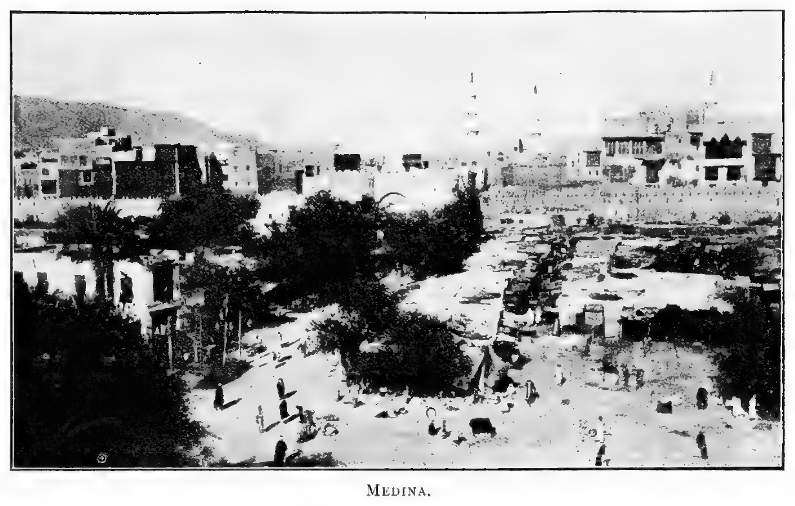
Medina (original p. 146)
Abu Bekr guarded the door and Ali acted as doorkeeper, and the
helpers and followers were accommodated in the places near by. The
Prophet declined to receive visitors for three days, but on the morning
of the fourth day he had the door thrown open and ascended the dais,
laying his hand upon his breast, and sat down aslant, facing the
south-east; they all requested him to assume the correct position of
sitting, but he said that that was the position of a king. Ali acted as
attendant and Bekr introduced the visitors to the audience, announcing
their names in turn; the Prophet said that the ceremony should be bowing
and kissing the ground, this last being done by the lips touching the
ground, bufnot the forehead. The order of precedence was first the
helpers, then the refugees and after them the followers; next came the
civil and military officers of Medina, followed by the gentry, next the
elders and headmen of the countryside, then all the people, rich or
poor, honourable or humble, male or female; everyone who desired to
interview was permitted to do so, and they all knelt and kissed the
ground, but did not ” k’o t’ou ” (knock the head on the ground). They
all thanked God for permitting them to share in this happiness to which
they had long looked forward, and they made adulatory remarks which the
Prophet received with his hand on his breast, with much [p. 138] humility. When the audience was finished and
all returned to their homes it was noticed that the time of day had not
progressed during the long ceremony, at which all the city marvelled;
this was the first wonder connected with the arrival of the Prophet at
Medina. All the families came bringing presents, and the officers and
gentry all gave their services in attendance.
Land bought for mosque and residence. — Near to the house of Abu
Eiyub there was a piece of land which was bought to build thereon a
mosque and a residence; all the families at first declined to sell, as
they desired to give land without any purchase money, but the Prophet
said that it was not becoming that he should accept favours from them
before he had conferred any benefits on them. ” The land is all yours,”
said they. ” True,” said the Prophet, “and my wealth is your wealth; I
cannot save my own money and take land at your expense; I will pay to
everyone what is the original price for the land, and will add for the
cost of the buildings.” He instructed the workmen that they should make
the mosque lofty and spacious, and the residence plain and small, simple
and without ornamentation, the doors being just sufficiently wide and
high to permit going, in and out.
The calculation of time fixed from the Heg-ira.— In the past it had
been the custom to count time from notable people and out-standing
events; there was now Mohammed as the notable person, and the Hegira as
the out-standing event in his career. The prosperity of the Faith and
the beginning of Moslem government, the punishing of adversaries, and
the putting into practice of the principles of the great doctrine for
the correcting of all around, these all really began with the Hegira, so
time was reckoned from this as the tnost remarkable event.
[p. 139] The Classes of believers. — The
Companions were four, Abu Bekr, Omar, Othman and Ali; in both rank and
virtue they were excellent, approaching nearly to the Prophet himself.
The Helpers (Ansar) were those who assisted in establishing the Faith;
they included both civilians and military who were rich in goodness and
virtue. The Refugees (Muhajirun), were those who were sincere believers
in the Faith and who had suffered for it, and were the first to remove
to Medina. The Followers were those who followed after the Refugees. In
all there were three hundred and forty-nine who migrated with the
Prophet form Mecca to Medina, and they were divided into classes for
precedence as mentioned. Of Companions there were four. Helpers
forty-five, Refugees one hundred and fifty and Followers one hundred and
fifty, a total of three hundred and forty-nine.
Sending for the wives and children. — When things had quieted down
somewhat at Mecca, Abbas, the uncle of the Prophet, admonished the
people saying that as Mohammed had already gone and many had gone with
him, and the Faith was greatly prospering, it would be better to drop
hostility between the two cities; the people agreed to this and it was
decided to send a letter saying that as the Meccans had no intention of
troubling Medina, so the people of Medina were not to come troubling
Mecca, and thus lasting peace could be preserved. The letter was sent,
and the Prophet asked his followers whether they agreed or not, as it
rested entirely with them; they replied that they agreed, at which the
Prophet was pleased, and he commanded Zeid to bring away the wives and
children and also to impress upon Abbas that the agreement must be
honestly kept.
[p. 140] The fixing of the worship-day.— In
Arabia days are reckoned by weeks of seven days, seven being the perfect
number. The opening day is counted as belonging to the Earth (Saturn),
then the first day after belongs to the Sun, the second to the Moon, the
third to Fire (Mars), the fourth to Water (Mercury), the fifth to Wood
(Jupiter), and the sixth to Metal (Venus); the completion is on the
sixth day. From the beginning this day was the proper one, but the ’“two
sects” had changed the day, and the Jews observed the opening day
(Saturn) while the Christians observed the first day (Sunday) both
having lost the original meaning of the worship-day, which was to
celebrate the completion of things, and things were completed on the
sixth day. This day (the present Friday. Tr.) is called Jum’ah; on this
day kings do not hold Court, officials rest from their duties, and
scholars and people of other classes cease their work; prisoners are to
be relieved from fetters, and benevolence is to be displayed generally;
the whole day is to be spent in praise and observance of the ceremonies,
and all must purify themselves and perfume themselves, and on hearing
the call must go to the mosque for worship, and when assembled must each
observe the four obeisances; such are the regulations of the Faith.
Princes and rulers come to congratulate.— Princes came from the
dependencies of Arabia, Syria, Egypt, Abyssinia, Yemen and Rome; others
came from Persia, Turkey, India and elsewhere. Some of them came because
of what they had heard, others because of observing the stars or omens,
and yet others because they were versed in the ancient books and knew
what was to come to pass. Near and distant, they all arrived in the
fourth month of this year, as though they had come by agreement. The
[p. 141] Prophet received them all graciously
and instructed them that they should understand the true and put away
the false; should uphold the correct and overthrow the depraved; in
governing others it was of great importance to govern one’s self; to
follow one’s own inclinations’ was dangerous for both worlds, while to
follow goodness was the felicity of both worlds; they should study the
past so as to know the future, and they must not be indulgent with
themselves. They all said that they would respectfully observe his
instructions.
Jews from Kheibap submit.— Kheibar was a place of considerable size,
not far from Medina, of which the people were Jews, and one Ibn Selamu,
also known as Abdallah, was their leader; he was well versed in all the
learning of the books, and he had long known that a prophet was to
appear, so he determined to put Mohammed to the test. He selected seven
hundred of the most intelligent of the Jewish people and said they would
go and put questions to Mohammed, and if his answers agreed with the
scriptures, then he was the true Prophet and they would follow him; if
his answers failed the test, then he was not the Prophet and they would
proclaim his imposture. They went to Medina to see the Prophet who sat
on his dais with his disciples around him, and Gabriel was also there.
Mohammed called for all the seven hundred followers of Abdallah to enter
the Court, and though there was some doubt if all could find room, yet
behold, there was room enough and to spare, although the place was not
very extensive; at this they all marvelled. About one thousand questions
were asked, after which the seven hundred bent their heads to the ground
and acknowledged Mohammed as the Apostle of God. A strange thing was
that though much time was [p. 142] taken in
asking and answering so many questions, yet the time of day had not
moved on.
Abdallah requested the Prophet to punish a certain Jew who was of bad
character, but Mohammed said he would personally examine him; the man
was sent for, and Abdallah remained hidden while the Prophet asked the
culprit about Abdallah and received the answer that he wa3 the most
eminent among the Jews. Mohammed asked if he had submitted to Islam, and
the answer was that he never would submit; being a man conversant with
all learning and clear in all principles, and looked up to by the Jews
as a leader and almost as a king, was it likely that he would be wilHng
to forego all these and follow Islam? Mohammed then called Abdallah who
repeated the creed and declared his submission and said that those who
submitted would have peace in both worlds, while those who did not would
be put to shame in both worlds. The Jews then changed countenance and
reviled him. AH was angry and wanted to kill them, but the Prophet
prevented him, saying that he had not yet received command to propagate
his Faith by force. He drove away the Jews and richly rewarded Abdallah
and his followers who had believed, and sent them back to witness for
Islam and to instruct others, and in course of time all the people of
Kheibar submitted.[Chinese]
The finding room for so many people in a place not large enough for
them, and the not passing of time, above referred to, were evidences
that the
Prophet was not subject to the ordinary limitations of time and
space; before God there is ne;ither [p. 143]
morning nor evening, and those who are near to
I. Kheibar did not submit so easily as this irnplies; a Moslem force
attacked and conquered it in a.h. 7. (notes to
p. 142)
Him are also free from these limitations of time, from which we may
know something of the farreaching vastness in which they move.
Marriage with Ayesha. — In the tenth year of the prophetship Mohammed
had received the command to marry Ayesha and had promised to do so; now
that Zeid had brought the women and children from Mecca, Abu Bekr
requested that the marriage with Ayesha should be consummated. At this
time Ayesha was just nine years of age, and the Prophet said it could
not be; but the angel Gabriel came down with a command to marry and told
him there were three things which he must consider with regard to taking
a wife; she must have attained puberty, must be grown up in size, and
must be intelligent in managing affairs. Ayesha had all these three
requirements, she was a woman of exceptional ability and she would
succeed the Prophet in propagating the Faith; so the marriage might now
take place, after which they were never to part, that she might become
fully acquainted with the Prophet’s actions and teach them to those who
came after, and be a pattern to all women. The Prophet received the
command and married Ayesha.
A wolf speaks. — Outside the city of Medina a wolf devoured a sheep,
and when the shepherd pursued it, the wolf stood on a mound and called
out that the sheep had been given to it by Heaven as a prize! The
shepherd was startled to hear the wolf, and said, “Can a wolf talk?” The
wolf told him not to be alarmed nor to wonder; the Apostle •of God was
in the city teaching men to be correct, and yet people went on in
confusion and error; ” you should wonder [p. 144] at that more than at a wolf talking.” The
shepherd was a Jew, and he reported this before the Prophet, and
followed the Faith. The Prophet made an exclamation, saying, ” In these
last times there will be wonders appearing; even a wolf can instruct
men.”
About this time the first death occurred among the Refugees, one
named Kulisumu, and his death is mentioned because he was honourable.
Two leaders of the Jews and Christians also died, named Osen and Wulide;
when the latter was nearing death he repined, and Abu Jahl asked him
what he repined at; he replied that it was not at death, but because the
religion of the camel-driver would conquer Mecca. This name given to the
Prophet was because he had formerly been in charge of camels. Abu Sufyan
told the sick man not to grieve, as Sufyan was still alive. The death of
these two men is mentioned because they had been the chief
offenders.
Chapter VIII
A.H. 2
[p. 145] Fatima married to AH — The Kibla —
Battle of Bedr — Abbas believes — Death of Abu Lahab — Asma the poetess
killed — The Beni Kainuka exiled.
The fast of Muharram.— From of old the prophets had observed the
tenth day of the first month as a fast, either as Farz (obligatory) or
Sunnah (established on usage). The people of Medina had long observed
the Jewish religion, and regarded this day as an obligatory fast; when
they submitted to Islam they still observed the day, and when it was
reported to the Prophet he said that he had heard that God commanded
Moses to fast on that day because it was the day on which Pharaoh was
punished. So he revived it as a ’ sunnah ’ of the prophet Moses.
Fatima mappied to Ali. — Fatima was the eldest daughter of the
Prophet, who from childhood was of grave demeanour and outstanding
virtue. As mentioned before, there was an ” other-worldly ” appearance
and fragrance attached to her and associated with the Prophet’s ascent
to heaven; she was different to other women, in that though she
subsequently bare children, she remained all her life like a virgin, and
the name Fatima which was given to her had the meaning of one who was
separate from the world. The Prophet loved her in an exceptional manner,
and though he was daily besought to give her in marriage, he declined to
do so; the people supposed that this was because in the trying days
through whichI4S he had passed he had not had leisure to attend to it;
but now that the migration had [p. 146] taken
place and men’s minds were more settled, both Helpers and Refugees
sought Eatima in marriage, but Mohammed would not consent; and even when
Omar begged for her hand, he still said he must await the command. One
day Gabriel said to the Prophet, ” Why do you not marry her to Ali? ”
The Prophet replied, ” Ali is my paternal cousin and her uncle, how can
they tnarry?” Gabriel said this* was the command of God and an exception
was to be made, which was not to be regarded as a precedent. The Prophet
then proclaimed this, and the marriage took place before many witnesses,
the Prophet himself repeating the Khutbah at the ceremony; the betrothal
presents were a suit of golden mail and four hundred and eighty pieces
of silver: congratulations came from the country all around. It is said
that Ali was generous in giving away his money so that he had no money
for the dowry, and took his fighting armour to Othman to sell, the price
being four hundred and eighty pieces of silver; but when Olhman knew it
was required for the betrothal present, he gave back the armour as well
as the money, so both requirements were met.
Change of Kibla.— ” Kaaba ” is the name of the heavenly cube in the
city of Mecca; its position is the very centre of the universe, and from
the beginning of creation God had ordained this to be the ” Kibla ” or
place towards which all should turn when worshipping. From Adam: down to
Noah and Abraham and later, for several tens of generations, all had
turned towards the Kaaba as their Kibla; but in the time of Moses,
because Pharaoh oppressed Arabia, the Kibla was changed to Jerusalem in
Syria, where there was a Pure Temple; this was to the West of Medina,
and David, Solomon and Jesus, and all [p. 147]
the prophets and kings, turned towards it when worshipping. When the
Prophet lived at Mecca he turned towards the Kaaba when worshipping, as
being so near; but when he moved to Medina he turned towards the Pure
Temple as the people of Medina had long done, and also to show his
displeasure at the confusion wrought by the Koreish in making the Kaaba
a house of idols. Yet all the time he longed to return to the ancient
Kibla and to accord with the practice of the Sacred Ancestor Abraham,
but not having received a command, he did not dare to change. In the
seventh month of this year, on the fifteenth day, as he was engaged in
worship and had performed two of the obeisances, the command suddenly
came to turn round from the West to face the South and so finish
worship, the Kaaba being South from Medina. For seventeen months he had
faced to the Pure Temple before he changed, and the mosque in which the
change was made was subsequently known as ” the mosque of the two
Kibla.” The Jews faced towards the West and the Christians towards the
East, but we do not follow either of them as we face towards the Kaaba,
which is the middle.
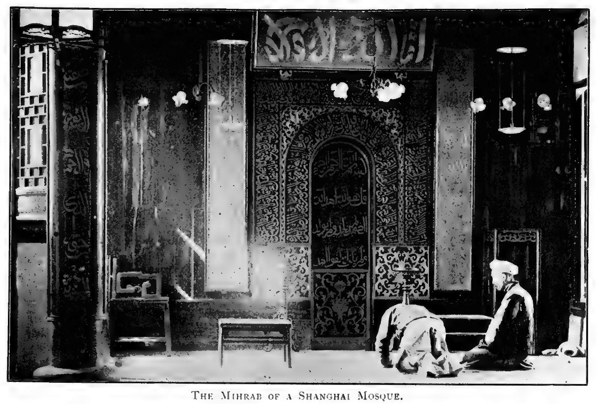
The Mihrab, or prayer-niche, of a Shanghai Mosque (original p. 171)
The call to worship. — By this is meant the call to go to the mosque
to praise and worship God. At first the call to worship was by the
sounding of a bell or of a wooden rattle, but the Prophet was not
satisfied with either of these and wished to change as he did not want
to be the same as the Jews and Christians. Two of the Moslems each
dreamed of seeing a man dressed in green raiment who said that the use
of the rattle was to be given up, at which the Prophet was pleased, as
it enabled him to fix for all time the custom of calling with the voice;
he commanded Bilal to practise, and then give the call before each time
of worship, and thus put away the use of bell and rattle.
[p. 148] (The institution of the month of
fasting and the breaking of fast, also the regulations for alms and
tithes, are here recorded in the ” Annals ” but are omitted in favour of
historical events in this translation.)
The Battle of Bedr.— On the seventeenth day of the month of fasting
(Ramadan), of this year, God gave the command to attack and reduce to
submission the adversaries. The Prophet at first pleaded that he had
received command to propagate the Faith by benevolence and not by force
of arms, how therefore could he go and punish the adversaries? but the
command told him not to be afraid, and promised God’s assistance. The
Prophet received the command and announced to all the otjiers that God
had told him to smite the wicked, and it was his idea that they should
begin with Mecca, and those who were willing to go with him to attack
the Meccans were to write their names and make ready. There had been no
fighting previously, so the people were not prepared for fighting, yet
three hundred and twelve men gave in their names, being two hundred and
thirty-six Helpers and seventy-seven Refugees.[Chinese] They had among
them eight swords and six suits of armour, seventy camels and two
horses. When someone commented on the fewness of the men and the
inadequacy of the equipment, the Prophet said that the strength of an
army depends upon the correctness of its cause; if its cause was not
good, then a thousand times three hundred men would be insufficient,
while in a good cause three hundred men were more than sufficient. ” God
helps the right, and if you are right of course you will be helped.”
I. These figures added together give three hundred and thirteen instead
of three hundred and twelve as stated. (notes to
p. 148)
[p. 149] One leader was left to look after
the city, and as the Prophet’s daughter Rokeiya was ill, her husband
Othman remained to look after her. In the early part of the month of
Ramadan, on a Jum’ah day (Worship-day) the men gathered outside the
city, where Mohammed addressed them, saying that it was against his wish
to attack Mecca, as the people were their own relatives and clansmen,
and he had hoped that the two cities would unite and be mutually helpful
in propagating the Faith: but he had received the •command to punish the
Koreish who were the chief, sinners. If they proved amenable to friendly
overtures, well and good; but if not, then they must be killed. There
w.as to be no coveting of goods or ravishing of women, but with the
-exception of Abbas and Buhotela, all were to be slain or captured. The
glory of this exploit would be reckoned to all who took part in it, and
would be reflected upon their wives and children for all ages. He then
asked them if they were prepared to accept the possibilities of defeat.
One after another, the warriors stood up and declared their readiness
for the fight, for God and the Prophet. Mohammed reminded them that
there was an agreement that the two cities should not attack each other;
how was that to be got over? One of the leaders said he need feel no
anxiety about that, and added: ” We are as the toes of your feet; where
your feet go, there we go; you are going to teach men the correct Way,
and we as followers will act according to that correct Way, and for this
we will go through fire and water without flinching.”
The next day the troops started, having first sent out spies. At this
time Abu Sufyan was leading some Koreish traders who were returning from
Syria with camels and horses and merchandise worth about a million gold
pieces; [p. 150] on the road they heard that the
Moslems bad left Medina to go towards Mecca, and being much afraid they
sent a messenger on a fleet camel to give the news and tell the Koreish
to guard the city and also send out men to protect the travelling goods,
otherwise they might fall into the hands of the Moslems. When those at
Mecca heard the news they were greatly alarmed; Abu Jahl, who was acting
as ruler, quickly called together the soldiers and people and they
raised fourteen hundred and fifty stalwart men to go and oppose — five
hundred being sent to the protection of Sufyan and the goods, and nine
hundred and fifty to.oppose the Moslem troops at Bedr. The Moslems -had
pitched their camp five li distant from Bedr, so the Meccans pitched
theirs five li on the other side. Mohammed sent a letter to the,
Koreish, stating that he had received the command of God to propagate
the Faith, and he urged them to submit and not be misled by the Jews and
Christians, but to send a favourable reply and all would be well. Abu
Jahl on seeing the letter was very angry at what he called the
presumption of Mohammed, so hastily sent reply that they would fight
first, and talk afterwards. The Prophet sent again to say that it was a
pity to lightly bring on war, as in fighting there could be no
recognition of parents or brethren; he would obey the command and kill
all who opposed, while saving those who submitted; he would not consider
even his own flesh and blood but would -destroy all who opposed,
therefore it was better to be moved by good words and not go on to try
arms, for if it came to:. a conflict he could with a stick drive out ten
thousand of them. When Jahl had read the letter he exclaimed that they
must fight. The Prophet regretted their foolishness, but commanded to
make ready for the [p. 151] fray. Two men were
caught, who, on being asked who they were, said they were Koreish who
had come to draw water; asked how many men the Koreish had they said
they did not know. The Prophet asked: —
” How many camel-loads of water do you use daily? ”
” Nine or ten.”
” That will mean nine hundred and fifty men,” said the Prophet. ” Who
is the head? ”
” Abu JahJ, and twenty leaders under him.”
” Who are the strategists? ”
” So and so, of the Jews and Christians.”
Nabu said that as the enemy had sent so far for water, it showed that
they were badly off for water, so he advised that a move should be made
closer to them, to cut them off from the water supply; the Prophet
agreed and a move was made to the well of Bedr, the water of which was
found to be very good.
By this time Sufyan had reached safety, so the five hundred men who
had been sent to help him were now sent to Bedr to help there. When they
heard of the two letters which Mohammed had sent, they rejoiced and sent
to Jahl to say that as the chief concern was for the goods which were
now safe, all should return home. Jahl sent back telling of Mohammed’s
threat, and refusing to show fear; Sufyan urged him not to let private
enmity or feeling bring disaster to all, upon which Jahl said he would
agree, but he first wished to go as far as the well of Bedr and stay
there three days, slaying a camel and a horse and making a feast, to
show the Moslems they were not afraid, and the Moslems would retreat
first in fear. Jahl sent spies to see the numbers and equipment of the
Moslems, and on receiving the report he was pleased and said they
couldn’t possibly [p. 152] will, and he
ridiculed those who advised return without fighting. Next day the
Koreish went forth in three divisions, and the Moslems also divided into
three companies to meet them. The Prophet instructed his men to at first
let go their arrows aimlessly, without intent to kill and wait until the
enemy first took life, after which the Moslems would fight in earnest
and kill.
The Koreish attacked wildly, the arrows flying fast and furious.
Hamza and Ali led the Moslems who were clad in cloth garments and
carried clubs; Said and Mikedadi, being men of valour, had swords and
went in front; the Koreish were driven back and several of their leaders
were slain. The Prophet and Abu Bekr were seated upon a staging which
had been erected.that they might witness the fight.
The next day Abu Jalil sought to renew the conflict, but the Prophet
gave command to his men not to respond but to wait for three days; the
Koreish came daily to provoke them, but th6 Prophet instructed his
troops to speak well to them telling them that those who submitted would
save themselves and their country and have eternal happiness in both
worlds. On the fourth day Jahl led his men forth and reviled the
Moslems, to draw them to battle; the Prophet commanded Hamza and Ali to
lead their men to oppose, and again the Koreish were defeated, and
several hundreds of them were captured. The captives were brought before
the Prophet, who ordered that their names be taken, and said they would
be disposed of after Abu Jahl was taken. The following day the Koreish
came again, but once more the Prophet bade to wait three days and try
exhortation, during which half of the Koreish believed, but they did not
dare to say so openly; they [p. 153] pointed to
their breasts in token of their belief, and this was understood by the
more intelligent among the Moslems.
On the fourth day the Koreish again came to the attack, and the
Prophet sent forth his men, saying that the chief object now was to
secure Abu Jahl; the men therefore ran to the camp seeking for Jahl, but
he was not there; one of the Moslems who went more leisurely saw two
youths holding a man whom they put upon the ground and attacked with a
sword savagely, and on going to see he found it was two brothers,
Miehodz and Aofu, who had pinned Abu Jahl to the ground and were hacking
at him and had broken his leg; the new arrival, Ibuni, took his sword
and cut off Jahl’s head, and leading the two youths, they went and
presented the head to the Prophet who rejoiced on seeing it, saying,
“This was the enemy of God”; he then ordered that the head and the body
should be hung up on a pole. The remaining Koreish then surrendered,
except a few who escaped. On mustering the Moslems, it was found that
the Helper Obeide and the Refugee Omaili had been slain on the field;
the Prophet wept for them and had their bodies found and interred.
The next day the captives were brought forth and were given the
option of submitting to the Faith, or of being killed, or of being
prisoners of war, or slaves; it was also promised that redemption would
be allowed. Three hundred submitted, seventy were killed, seventy
remained prisoners of war, and the rest became slaves. The price of
redemption was not the same in all cases, but ranged from one thousand
to four thousand pieces of silver, according to the wealth and position
of each captive. Some writers and scholars who had followed but had
taken no part in the [p. 154] fray, being
captured and not wishing to become Moslems, were appointed to various
duties, without becoming slaves, Those belonging to the family of Hashim
were not slain nor kept as prisoners, nor as slaves, but were given the
option of submitting or returning to Mecca; more than half of them
submitted. The Prophet then spoke severely to the leaders and to the
Jews and Christians who had been the plotters, and after enumerating
their faults, he ordered that twenty-four of them be cast into a well
which was then to be filled up with earth and stones. Someone said that
among these men there were Jews who were good at divination, and they
ought to be kept alive, to which the Prophet replied that the book of
Daniel was still extant, and if they studied and practised it, there was
no need to keep alive these diviners. One of the sufferers looked up to
heaven and weepingly called upon the Lord of Heaven to save him, and
added, “Alas, that I should have spent sixty years in hard study to come
at last to this.” When the Prophet heard him call upon the Lord he
commanded that they should stop burying this man, and he asked him what
he had studied, to which the reply was that he had studied astronomy and
could make astronomical instruments, which the Prophet acknowledged to
be useful skill; the man was then asked what religion he professed, and
when he replied Christianity, the Prophet asked if he considered Jesus
to be a prophet or to be God; to which the other did not reply[?] The
Prophet said that if he regarded Jesus as a prophet, then he had not
departed from the teaching of the earlier prophets; if he regarded Jesus
as God, then he was a heretic and an idolater, and although he had great
learning, how could he be pitied and kept alive? he then gave orders to
cast him into the pit with the others.
[p. 155] The spoils were then divided, the
Prophet keeping only a sword and a mule, saying that the sword was a
precious heirloom in his family, and the mule resembled the one on which
he made his ascent into heaven, so he wished to keep it. The possessions
of Abu Jahl were all given to the two youths who slew him, Ibuni taking
no credit for his share in the. affair, saying that he could not have
killed him by himself. Bilal also disclaimed any merit and refused
reward for one of the Koreish he had killed, as he said he did it out of
private enmity, as the man had once nearly beaten him to death at Mecca,
to make Bilal recant, but he kept on saying, ” There is only one God.”
This persecutor had been taken prisoner, and on seeing him, Bilal had at
once slain him. Bilal was ready to pay compensation to the captor, but
the Prophet said that under the circumstances there was no need to do
that.
Abbas believes. — The Prophet’s uncle Abbas had elected to remain a
prisoner rather than become a believer, and he was heard in the night
moaning, so the Prophet had him eased of his bonds, and next morning
admonished him and asked him why he had so chosen, and why he had joined
in the fighting at all; to which Abbas pleaded that he had been
compelled to come; the Prophet recognized this as a mitigating
circumstance, but as he was one of the leading men of the enemy, he
could not be let off altogether. Abbas said that his captor had already
taken from him one hundred and twenty ounces of gold and he had nothing
left; the Prophet told him that he had, and that before he left Mecca he
had made an arrangement with his wife whereby, in case be should not
return, one hundred and twenty ounces of gold was to be divided among
his four sons and his wife. Abbas was astonished that the Prophet should
know of this private [p. 156] affair, and
acknowledged that Mohammed must really be the Prophet, and he would go
back to Mecca and get his whole family to submit.
Mohammed’s daug-hter Zeinab. — Zeinab, the daughter of the Prophet,
was a believer in the Faith, but her husband, Abu’l ‘As, remained an
unbeliever and joined in the expedition and was captured; the tidings
were privately conveyed to the Prophet who said that if he submitted
there was an end of the matter, but if he did not, then he must pay a
ransom and give up Zeinab, as it was not suitable that two of different
religions should be married. Abu’l’ As decided to pay a ransom and give
up his wife, so sent a messenger to Mecca to secure the ransom, and
Zeinab gave to the messenger a golden bracelet; when this arrived at
Medina and the Prophet saw it, he could not refrain from weeping because
it was what Khadija had given Zeinab on her marria|;e. The Prophet
allowed the ransom and released Abu’l ‘As, but returned the bracelet; he
sent certain followers along with Abu’l ’As to receive back his
daughter, and husband and wife were thus parted. In view of the goodness
of his wife, Abu’l’ As vowed that he would never marry again, and Zeinab
also vowed that she would not become anyone else’s wife; so they both
remained single for six years, after which Abu’l ’ As became a believer
and he and Zeinab were re-married.
Death of Rokeiya. — At the time when the Prophet led forth the
troops, his daughter Rokeiya was ill, and Othman was left to attend to
her; on their return they learned that Rokeiya had died and was already
buried. The Prophet led his followers to the grave where prayer was made
and unusual grief and weeping took place.
[p. 157] Death of Abu Lahab. — When Sufyan,
still travelling by the sea-coast, heard of the defeat of the Koreish he
sighed and said it was of their own seeking; he then hurried on the
merchandise to Mecca and on arrival there he heard that Abbas and Abu
Lahab had already returned, so he sought from them an account of the
battle and the cause of the defeat. After hearing the story, Sufyan
exclaimed that it was difficult to understand why the Koreish troops had
given way, and why, although the Moslems had no swords but only clubs,
yet so many heads of the Koreish were cut off. He told how in the
distance they had seen a host of warriors, clad in white clothing and
white armour, and riding on white steeds; these were fighting in the
air, and whenever they pointed with their swords, there fell the head of
a man. It would appear that help has been given by spirits, or some
magical arts have been used. A servant of Abbas said that these must
have been the spirit hosts, that the religion of Mohammed was true, and
being true, the Moslems received this help. Abu Lahab hated to hear
these words so he angrily attacked the servant who could not stand
against him, whereupon the wife of Abbas took a stick and beat Lahab,
wounding his head so severely that he went home and died seven days
later. At this time the whole family of Abbas had believed, but secretly
lest they should be involved in trouble; on hearing of the seriousness
of Lahab’s injuries, they hid and then fled to Medina and reported to
the Prophet. Next day a letter arrived saying that Lahab was dead,
whereupon the Prophet raised his hands to his forehead and gave thanks
to God that this pillar of the Koreish had fallen. He also commanded
Abbas to give freedom to his servant, and rewarded him, and remitted the
ransoms of Abbas and his sons and nephews, and restored what had been
taken by the captor at first.
[p. 158] Abu Jahl and Abu Lahab were both
valiant men against whom nobody could stand, yet one was killed by two
youths and the other by a woman; which shows that valour is not the only
thing to be trusted in; these events also show how recompense came to
those who had opposed the Faith and injured relatives, oppressed the
weak, and insulted the orphan.
Omeir converted. — Omeir, the son of Wahb, was originally one of the
leaders of the Koreish adversaries, and when he heard of the defeat at
Bedr, and that his son was a captive, and that the nobles had been
killed in a pit, he was very wroth and said to Soafuwa that the
situation was unbearable, and that if it were not for bis family affairs
and some debts which embarrassed him, he would go himself and
assassinate Mohammed at Medina and bring his head as a trophy; Soafuwa
was pleased, and said that if Omeir would really undertake this, then he
would look after his family and the debts. Omeir therefore put on his
armour and took his sharp sword and went off to Medina where he arrived
as the Prophet was sitting in the hall instructing his disciples;
suddenly Omar called out, ” A friend has come,” and went out to meet
him, but on seeing Omeir he said, ” It is an enemy,” and took him by the
collar and led him in. The Prophet commanded that he be liberated, and
Omeir knelt below the steps and looked round on the awe-inspiring scene
of the Prophet sitting on his throne, surrounded by his valiant
defenders, and he became very much afraid and could not help but do
obeisance. The Prophet asked him from whence he had come, and why, and
received the answer that he had come to see his son and his relatives
who were captives; questioned why he had come with armour and sword, he
said that was because of the dangers of the [p. 159] way. The Prophet then gave orders that he be
beheaded, upon which_ Omeir said he had done no wrong; but the Prophet
showed that he knew about the plot to kill him, and sternly reproved
him, the result being that Omeir fell down on the ground in abasement
and acknowledged Mohammed as the true Apostle of God and expressed his
desire to submit to the Faith and assist the Prophet to punish the
adversaries to make amends for his sin. The Prophet commanded him to
repeat the creed, then released him, but took from him his armour and
his sword, and passed him over to Omar for instruction in the ceremonies
and repeating of the books; he also gave him back his son. Omeir asked
permission to return to Mecca to settle his debts and bring away his
family, and also to exhort his friends to submit, and this was granted,
and money given to him for travelling expenses. Several tens of people
returned to Medina with Omeir, and several hundreds more believed, but
remained at Mecca, their names being all reported to the Prophet, who
was pleased at the success of his lenient treatment of Omeir.
Asma the poetess killed.— There was at Medina a noted woman named
Ermulang (also known as Asma), a Jewess, who was clever af composing
poetry, and many of the higher classes used to gather at her door and
hold meetings for the repetition of poetry; on one occasion the theme
was to ridicule the Prophet and revile the Faith and the followers of
it. Omeir (not the one just referred to) found an opportunity to kill
her and reported to the Prophet who said that those who reviled the
Faith certainly should be killed; but that they should be first
admonished, and if this failed, then they could be killed; when two
goats knock their Keads together, and fight,” can after consejquences be
avoided?
[p. 160] The Beni Kainuka exiled.— The
Kainuka were the people of a big town near Medina; they were numerous
and rich, and were practised warriors; they were Jews. When the Prophet
removed to Medina, mutual intercourse took place, but the Kainuka would
not submit to the Faith; they respected the Prophet because they knew
that he was the prophet of the last times, and they entered into an
agreement that they would not oppose the Faith, nor help the
adversaries. When the Prophet led his men out to fight the Koreish and
did not request the Kainuka to help, the latter were annoyed, and when
later they heard of the victory they were jealous and made light of the
Koreish, seeing that fifteen hundred of them were routed by three
hundred men not accustomed to fighting; they boasted, -“Let the Moslems
fight with us and then they will see what fighting is.” This was
reported to the Prophet who sent a warning to [?]them; but they
destroyed -the previous agreement and sought to fight against the
Moslems. The Prophet then summoned the chief men who had made the
agreement and said to them: ” When first I made a covenant with you, it
was because you people are the followers of Moses, and so we all belong
to one family, and we fear and worship the same God; Moses was sent to
those of a former age, and I am sent to the people of this latter age;
but you do not follow me nor fear God; you wish to fight with the
Apostle of God! ” The leaders acknowledged their sin and went back to
admonish their people not to fight. The multitude would not listen but
said they could not put up with oppression from the Moslems, so they
were determined to fight.
The Prophet again called the leaders who had made the covenant but
they would not come; so he sent a letter in [p. 161] which he reminded them that they had all
rejoiced together in the recent victory of Rome over Persia, “because
the Romans vrere worshippers of God, and all worshippers of God of
whatever nationality, are one family, how much more we of the same
country? and especially seeing that we have. already had a covenant;
even barbarians consider no shame so great as that of breaking a
covenant, how much more should we who dwell in the most favoured land
and have the teaching of the prophets, and fear and worship God? I urge
you to exhort your people to let there be no enmity between us, and no
fighting; I have recently, with three hundred men not used to war,
overthrown the troops of Mecca, and unless you go peacefully about your
business you may repent when it is too late.” When the Kainuka received
the letter, the civilians wished to cease troubling, but the warriors
still wanted to fight, and in increased anger said: ” He compares us to
the Koreish, but they knew nothing about fighting, hence their defeat;
we just wish to have a trial, and we will make the Moslems way.” give
The Prophet then personally came out and further exhorted them not to
lightly make war, but the others answered: ” If you overcome us, we will
all submit to your religion; if we overcome you, you may still remain as
you are and need not leave your country; if you will not fight, then we
ask you to leave these parts.” The Prophet said, ” The overcoming of the
Faith is not by physical force. ” This present fight,” said the others,
” is not for the Faith, but may God defend the right; we wish to make a
trial and it will appear who is in the right.” Having thus no
alternative, the Prophet led his men to the fight, but told them to he
satisfied with a defensive and cut off the supplies of [p. 162] the enemy until their violence had abated.
After fifteen days the Kainuka were in such straits that many died or
were killed, and in the end the Moslems captured the whole lot, not one
escaped. When they were taken before the Prophet he reminded them that
they had desired Heaven to protect the right, and that they all ought
now to submit to the Faith; they,declined to do so, upon which he called
them stiff-necked people, and consigned to slavery the leaders who had
formerly made the covenant, and their property was all confiscated; of
the fighting men, four hundred were made captives without permission to
be redeemed, and the rest were released, after there had been taj<en
from them their weapons and three hundred suits of armour, one thousand
head of camels and horses, and other goods beyond calculation.
WumaieF, the Christian leader.— The Christian religion is so called
because it acknowledges Jesus as God; like the Buddhists, they worship
images and follow rituals. Wumaier was a leader of this religion, a man
of extensive learning in the ancient doctrines, and of truer perception
than most; he lived near Medina, and people came from other places to
learn from him; he did not worship image’s and was wont to say that men
do not worship the children they beget, why should they worship the
things they make? a man who worships wood or earth is not himself equal
to the wood or earth he worships. Someone asked him why he led others to
worship images when he did not worship them himself; he replied that
most people could not do without some object to see in their worship,
but that his worship was not dependent upon such things. Asked about
Mohammed and his religion, and his claims to be the Apostle of God, and
if he really was such, he replied that the claim was not [p. 163] false, as many things recorded in the ancient
books had their fulfilment in him; ” His teaching is clear and his
doctrines are correct, and ultimately all the world will revert to this
one Faith.” Asked why he did not himself follow this Faith, Wumaier
replied that he was waiting for fuller verification and then he would
follow; as he spoke he showed confusion of face.
This matter was reported to the Prophet who sent a messenger to
Wumaier to invite him to come, but he would not; he composed, however, a
panegyric of two thousand words, praising in the highest degree the
excellence of the Prophet, and sent it to him. When the Prophet had
finished reading this, he remarked, ” This man approves with his mouth,
but denies in his heart/’ Wumaier died this month; when the Prophet
heard of it he sighed and said, ” He looked on the excellent fruit
without venturing to eat it, until it was too late.”
Chapter IX
[p. 164] A.H. 3-4 Abu Sufyan’s attack and
defeat— Murder of Ka’b— Hafsa married to Mohammed — Battle of Ohod —
Birth of
Hasan — Beni An-Nadir exiled — Sufyan again defeated
— Mohammed marries Um Salmah.
Abu Sufyan’s defeat. — In the third month of the third year of the
Hegira, an attack against Medina was made by Abu Sufyan. Sufyan was a
chief of the Koreish, a man of exceptional valour, and whose good
qualities attracted men; he was a good merchant, so people entrusted
their goods and money to him and he would go and trade in Syria and
account satisfactorily for everything; he was respected by all. He had
advised against interference with the Moslems, and had urged Abu Jahl
riot to proceed with the fight at Bedr; when he heard of the defeat he
regretted that he had not personally conducted the fight and defeated
the enemy, and he was much incensed against the Moslems for their
excesses; and when on returning to Mecca, he saw the distress of the
wives and children of his own relatives and friends who had been slain,
and in many cases the, heads of the families with whom he wanted to
settle for goods, were missing, he was discontented at heart. The Jews
and Christians, knowing how he felt, called a meeting of the Koreish and
of all the mischief-lovers of the city, at which they urged upon Sufyan
that he was now the head of the Koreish and the one to whom they all
looked up, [p. 165] and it rested with him to
avenge the disgrace of Bedr. Sufyan replied, “They trust to virtue, how
can I go against them trusting only in valour?” The others urged that
the Moslems conquered by their arms and not by their virtue. Sufyan
reminded them that the Moslems had sent three letters to Abu Jahl which
he would not listen to. The others referred to the boast of Mohammed
that he could beat ten thousand of them with a club and they said he
evidently had his eye on Mecca. Sufyan at last yielded to pressure and
promised to lead an expedition against Medina, at which all rejoiced; he
selected two hundred stalwarts and early in this month started out from
Mecca for Medina and encamped fifteen li distant from the city. That
night there was a fire in the camp which was regarded as inauspicious,
so the men wanted to return; but on Sufyan asking if they were really
going to retreat for such a small cause, they returned to the camp. Next
morning the Prophet sent two messengers to ask them to submit, but after
three messages, they refused to submit, so the Prophet ordered two
hundred men to go against them and Sufyan was badly defeated; the
Prophet ordered a pursuit and the Koreish cast away their heavy
belongings to expedite their flight. None of the two hundred Moslems
were injured.
Murdep of Ka’b ibn al-Ashraf. — Ka’b, named Ashraf, was a Jew of the
Nadir tribe, who lived at Medina; he was wealthy and daring, the
foremost man of that region. He went to Mecca to stir up the soldiers to
punish JMedina, and on his return this was known to the Prophet, who
said to his disciples, “Who can instruct him in the [p. 166] Way and cause him to submit?”[Chinese] The
son[?] of Selimeh (Maslama) answered, “I am willing to go.
“He is a man of exceptional talent,” said the
Prophet, “whom scarcely anyone can stand against;. can you undertake
the task?”
“I will skillfully lead him on and if that does not answer then I
seize him by a stratagem.”
Selimeh went forth, and learning that Ka’b was at his. home, he took
with him two braves as assistants, and communicated to them his plan.
Arriving at the house of Ka’b they asked to see him and Ka’b came out
and said» “I hear you have become a follower of Mohammed’s religion, is
that so?”
“Yes,” replied Selimeh.
“Why do you follow his religion, and not the old religion? ’ ’
Selimeh, hearing his words were not complaisant,, said: “Let us say
no more about it, but help me in a difficulty;, my two friends, in a
case of urgency have come to borrow from me, and I have nothing to lend
them, so we have come to you; if you are willing to lend, they will give
their armour in pledge.” Ka’b was fond of the armour of the Moslems, so
he gladly agreed, and Selimeh pretended that he would go back and get
the armour, Ka’b accompanying him to the outside of the house. Now Ka’b
was accus- [p. 167] tomed to take pains about
his personal appearance, and he used to anoint his beard; Selimeh made
pretence of sniffing and remarked about the excellent scent somewhere,
such as he had never smelled before; Ka’b laughingly said that it was
the ointment on his beard. Selimeh came near to his head to smell it and
praised the perfume, and called his two helpers to smell it, then
suddenly they seized hold of Ka’b’s beard and slew him. The Prophet
commanded that this exploit be proclaimed in the markets, as a warning
to all adversaries.
This is a much milder expression than that given in Muir’s “Life”
which says, “Who will ease me of the son of Al-Ashraf? for he troubleth
me.” The sequel indicates which is more likely tobe correct.
Having first said that it was the son of Selimeh who responded, the
writer continues the story, giving the name of Selimeh as that of the
chief actor iM the tragedy. The son’s name was Mo* hammed. (notes to p. 166)
Mohammed marries Hafsa.— Omar had a daughter named Hafsa, an
excellent woman whom many sought in marriage, but Omar refused them[?]
as he wished her to be married to Othman, who, however, declined to take
her. The instructions of the Prophet were sought and he said he must
wait until he received a command on the matter; suddenly Gabriel
appeared with the command, of God that this woman must be married to one
more honourable than Othman, and Othman would have a wife who was more
honourable than Hafsa; the Prophet was the one more honourable than
Othman, and the daughter of the Prophet was the woman more honourable
than Hafsa. Having received this command, the Prophet took Hafsa to
wife, and gave his daughter Um Kulthum to Othman, This was the third
wife which the Prophet nov/ had.
The Battle of Ohod.— The Koreish had suffered two defeats and hate
entered into the marrow of their bones; the remnant of the two hundred
led by Sufyan who had been routed were ashamed to enter Mecca, so they
camped outside the city, and some of the wealthy headmen came [p. 168] out to console them; they said the force had
been inadequate, but they would gather a greater supply of money and
goods and send Sufyan to Syria to trade, and then with’the profits make
bigger preparations and go to Medina to seize Mohammed. Sufyan was
pleased with this plan and made a successful trip which was estimated to
have yielded profits of fifty thousand ounces of gold, and they reckoned
that if they attacked during the month of the fast they would surely
conquer them. So they got together over one hundred officers and three
thousand braves, besides two thousand volunteer troops; the Jews and
Christians contributed seven hundred suits of mail, five hundred horses,
and three thousand camels. They started out in the early days of the
ninth month, and were admonished to remember the defeat at Bedr and to
determine this time to avenge that calamity.
I. Hafsa was a widow, whose husband had died some months previously, and
not a virgin, as this sentence implies.; (notes to
p. 167)
A letter had been sent secretly to Medina to warn the Moslems, and
when the Prophet read the letter he sighed because hostilities were
afoot again; he then gave instruction that the gates were to be guarded
strictly. That night the Prophet dreamed that he was clad in armour and
grasping his sword and killing an ox when his sword broke; this was
interpreted that the armour represented the city of Medina, the slaying
of the ox meant the killing of some of the disciples and the wounding of
the generals of the enemy; the breaking of the sword meant that some
members of the Prophet’s own family would be wounded. ” It is the will
of God,” said the Prophet. That day was worship-day (Friday) and after
worship there came urgent letters from the enemy saying that if the
Moslems did not come out and fight, then the enemy would come to the
city; the Moslem warriors were then stirred up and went outside the city
to make a stockade. On account of the danger they desired [p. 169] the Prophet to watch them go forth, but not
go himself to the fight. A message came from the enemy fixing to-morrow
for the battle, at which the hearts of all- rejoiced and they urged the
Prophet to accept the challenge, and he sorrowfully said, “It is the
will of God, how dare we disobey?” He then exhorted and encouraged his
men, and they replied loyally; one thousand men were mustered, and after
consideration, the Prophet appointed three hundred to keep the city, one
hundred to be his bodyguard, and six hundred to be divided into three
companies for the fight; that night they encamped near the Erlao stream,
and the following morning moved to the foot of Mount Ohod and set
themselves in array opposing the enemy; Zubeir was sent with fifty
archers to an ambush to wait until the defeated enemy came that way,
when they were to shoot at them.
Sufyan divided his troops into three companies, and, himself at the
head of one hundred archers, he stood on a hill to direct operations. At
the first onslaught there fell several tens of the leaders, the troops
of Sufyan being badly defeated and fleeing towards the ambuscade of the
archers who shot at them and. killed two of the standard-bearers, the
third escaping. When Sufyan saw the Moslems were winning, he raised the
cry that Mohammed was killed and there was no need to fight further; on
hearing this the Koreish were elated, while the Moslems lost courage and
g[?]ive way a little. The forty Helpers led by the Prophet had not
moved, when suddenly missiles began to fly and one hit the Prophet and
damaged his teeth; Abdu Ghana (Talha) quickly protected the Prophet and
led him to the top of the hill, from which he saw the disorder which was
taking place, so he straightened himself up and called out to his troops
that he was still there, and there need be no disorder; upon [p. 170] seeing the Prophet, the Moslem troops became
the more valiant and returned to the fight, and when Sufyan saw that he
could not stand against them but was defeated, he called out to his men
that they had come that day to avenge the two previous defeats, to which
the Moslems answered that this day made a third defeat. Sufyan was very
angry and vowed that he would come next year to renew the attack; the
Moslems wished to pufsue and kill him, but the Prophet forbade pursuit,
saying that he had hopes of this man after all, so he commanded Ali to
call out that in future it would be better to bring some scholars to
discuss principles, which was a superior method to the use of troops.
Sufyan returned defeated, having lost in slain over seventy of his
officers and more than three thousand of his troops, while the Moslems
captured seven thousand camels, more than two thousand horses, over one
thousand mules and asses, and more than eight thousand oxen and sheep
(or goats) and impedimenta beyond count. Of the Moslems there were
injured seven of the leaders and sixty-three of the troops.[Chinese]
The death of Hamza. — Plamza was very brave, and when he heard the
report of the death of the Prophet he cast all discretion aside and
pressed into the fight, killing several of the leaders and aiming to
capture Sufyan; but he was seized from behind by Wahshi and slain by the
many around; his corpse was given to Hind who had long cherished hatred
of him, and she tore open the body and took out the liver and swallowed
it. When Sufyan had retreated, the Prophet gave orders to seek out
Hamza’s body, and it was [p. 171] buried along
with that of his nephew; the Prophet mourned for him several days and
there was grief among all the troops; it was vowed that if they caught
any of the enemy they would mutilate thirty of them like this to make
amends for Hamza. On this account the heavenly injunction was given,
saying that there is no injustice in repaying a crime with the same kind
of action. The Moslem slain were buried on the field; it is permissible
to remove the dead and re-inter, and some tens of years later when a
waterway was being cut, it was found that this burial ground was in the
way, so the command was given to re-inter the bodies, which were found
to be in appearance as if still living, not a hair being injured.
I. History records this-battle as a defeat of the Moslems, as the enemy
lost only twenty. The figures given by Liu Chih are greatly exaggerated
either in error, or to add to the Moslem prestige in the eyes of Chinese
readers. (notes to p. 170)
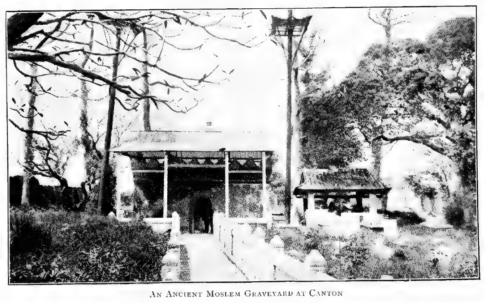
Ancient Moslem Grave-yard at Canton (original
p. 218)
Excessive grief prohibited. — When the Prophet and his men returned
to the city, there was much weeping in the families which had lost some
of their number, but the house of Hamza bore their grief in silence
without sound, at which the Prophet wondered and enquired the cause.
Hamza had one son, named Zubair, who was very filial; he realized that
the-re was great merit in dying nobly on the field, and his father
having obtained this, the son was content to control his grief. Hamza’s
sister Safiya, had gone out to the camp and had seen her brother’s body
and had nursed her grief a long time; afterwards she said that her
brother had gone early to Paradise, why should she be distressed;
therefore on her return she controlled her grief. Hamza was an uncle of
the Prophet who felt very sorry for his death, and the others out of
sympathy with him and the family of Hamza, proceeded to his house to
bewail, the noise being so great that the Prophet gave orders to stop
the loud demonstrations of grief; some of the women asked if it was not
permissible to weep over their dead sons, to which [p. 172] the Prophet replied that to weep wasnotonly
natural and could” not be avoided, but they should beat their heads and
scratch their faces and pull out their hair and tear their clothes,
while recounting the actions of the dead with a loud voice for people to
hear.
The Blpth of Hasan.— Ali and Fatima had now been married nineteen
months, and their son Hasan was born in this ninth month.
Abu Azzap put to death.— At a place about fifty li from Medina, there
was a man named Abu Azzar who had formerly followed the Meccans under
Abu Jahl and had been taken captive at Bedr, but he pleaded to the
Prophet that he had several daughters dependent on him and begged to be
released; the Prophet pitied him and let him return, on his promising
that he would no more take up arms against the Moslems. When Sufyan led
his expedition, this man yielded to pressure and joined the troops; the
Prophet seeing him reminded him that he had broken his covenant, and
Azzar was ashamed and fled to Hamra, the people of which place appointed
him to be their head in a planned attack against Medina. When they were
about to proceed, the Prophet gathered his men and told them that on the
morrow they would go forth ready to fight; he first sent two Helpers to
go and seek conditions of peace, but these were put to death, so in
anger the Prophet commanded Ali to besiege the city; after three days
the people were afraid, so they bound Azzar and brought him forth; he
pleaded to be forgiven, but the Prophet said this was the third time he
had transgressed, and had him killed. Peace was then made with the
people of Hamra, those who submitted to the Faith being let alone, and
those who did not [p. 173] submit but no longer
opposed, were subjected to taxation, and an officer having been
appointed over them, the Moslem troops returned.
In the second month of the fourth year of the Hegira, Omar made an
attempt to convert some people whom he considered were under his
jurisdiction; he sent messengers who were put to death by the chief of
the said people, whereupon Omar at the head of ninety men went and
routed two thousand of the enemy and occupied their city, taking
therefrom much booty which was given to the poor of Medina, and also
many weapons were captured and taken for use by the Moslems. The syscem
of taxation of non-Moslems was introduced about this time, the amounts
being graded for rich, middle-class, and poor men; women were assessed
at half the amount of men, while the aged and children, and the sick,
were exempted. The land and its produce were also taxed.
Tpeachery at Raji. — Rajl was a great mart belonging to Mecca, the
people of which followed the customs of the Jews and Christians, being
of crafty disposition; they had at times discussed religion with
Moslems, and being beaten in argument they were much annoyed and wished
to secure a great scholar from Rome to wipe out their defeat, but the
distance being so great, they could not get such a man to come. When
these people saw that the Moslems were conquering all around, they felt
that some plan must be adopted to stop them, so they sent
representatives to Medina to see the Prophet to say that they had long
looked towards the Moslem Faith but they had not shared in the benefits
of the Prophet’s instruction and transforming influence, and they had
now come purposely to beg that teachers be sent to their town to dispel
their ignorance and shed abroad the [p. 174]
sacred light of the Apostle of God. The Prophet was pleased, and
selected ten men to go with them, Abu Bekr cautioned against the
craftiness of these people, but the Prophet had confidence in the will
of God. Omar advised Sending soldiers with them, but the Prophet said
the ten men. were sufficient.
When the ten arrived at Raji they were sitting at a meal, when, at a
given sign of spitting out date-stones, the ten were suddenly seized and
bound. Futsai said to them that he did not intend to kill them but to
take them all to Mecca, to which the Moslems replied that they would
rather be killed than taken there, and five of them, including Asan,
struggled and brake their bonds and were killed; the other five were
taken towards Mecca, three being killed on the way and the other two
were killed on arrival, their heads being exposed on spears to put to
shame the Moslems. When the news of this reached the Prophet he
commanded Zubair to take troops and go to punish Raji, and he
exterminated the adversaries and made slaves of the headmen of the Jews
and Christians; of the soldiers and people of the town, about half
became Moslems and the rest sought peace and submitted to the taxation.
Zubeir sent some valiant soldiers to Mecca to steal away the corpses of
the slain and as they were carrying the bodies, away they were pursued
so hotly that the soldiers dropped the bodies and the earth opened to
receive them. The place where this occurred is still to be seen; the
people of that time made a song about this tragedy which said that the
ten Moslems went to heaven while the whole city of Jews and Christians
went to hell, having first suffered in body and in property, and m
moreover becoming slaves.
[p. 175] The Beni Nadhip exiled.— The Beni
an-Nadhir lived not far from Medina, and when first the Prophet moved to
that city they desired conditions of peace, to which the Prophet agreed.
When the Koreish were planning their attack on Medina, the Nadhir sent
K’ab to join in the plotting, who, on his return was killed by Selimeh
at the instance of the Prophet. The adversaries were very angry at this,
but in view of the several- defeats of the Koreish, they did not know
what to do; then some of the schoolmen of the Jews and Christians said
that the Moslems could conquer by arms, but not by reason, and a trial
of skill in argument was proposed, to which the Prophet agreed and he
sent AH to discuss, which was not satisfactory to the Nadhir who
insisted that the Prophet should go himself, as they had a plot to kill
him; the Prophet went and confounded the whole thirty of his opponents
in argument. The Nadhir had secretly prepared soldiers to kill the
Prophet, but he discovered their purpose and quietly slipped away, Ali
and the others who had gone, following later. The Prophet then told Ali
to take troops and inform the Nadhir that they must return to their
native country, and ten days’ limit was fixed for them to clear out or
be killed. In alarm and dismay the Nadhir sent all around to engage
camels to i-emove their goods, but the Jews and Christians amongst them
stopped them from moving while they hastily sent messages all around to
get others to come to their rescue; the Meccans promised to come and
help with three thousand soldiers and two other states each promised two
thousand troops, and a day was fixed for the attack on Medina, at which
the Nadhir rejoiced and sent a message to the Prophet that they would
not move but would rather suffer the penalty. The Prophet commanded Ali
to invest their [p. 176] city and cut off their
water and supplies; after twenty-one days, as the expected help had not
arrived, the citizens were in favour of capitulating, but the Jews and
Christians were unwilling; the elders of the city expostulated with them
saying they couldn’t overcome in argument and they knew nothing about
fighting, and all they could do was to oppose while others were made to
suffer. The Moslems, knowing that the people were dependent upon dates
for food, began to talk loudly about cutting down the <late trees,
whereupon the people of the city were so afraid that they bound the
headmen of the Jews and Christians and gave orders to open the city
gates and surrender.[Chinese] The Prophet gave instructions to Selimeh
to evacuate the Nadhir, who were allowed to use the six hundred camels
they had engaged to remove their women and children and utensils and
such other goods as they could, while the headmen of the Jews and
Christians, as well as the thirty unsuccessful debaters, were all taken
as slaves. The goods which were not taken away by the Nadhir were given
to the poor remaining in the city, who became Moslems; the booty taken
to Medina consisted of fifty suits of golden mail, five hundred suits of
silver mail, three hundred and fifty-four swords, and bows and arrows
and lances and other things without count. Selimeh was put in charge of
the city.
The Birth of Hosein. — The eldest son of Ali was named Hasan, and his
second son was named Hosein; they were both born in the same year, one
towards the beginning, the other towards the end.
I. Muir says that the trees were actually cut down, an act which was
remonstrated against as being barbarous and unwarranted. Our author
tells only of the talk about doing it, and so escapes awkward questions
which might be asked by Chinese readers. (notes to
p. 176)
[p. 177] Sufyan’s third attempt ag-ainst
Medina.— From the time when Sufyan had retreated in defeat at Ohod,
vowing to come again and fight, the Koreish had been busy preparing
weapons, including some cleverly made cannon and fire
(gunpowder),[Chinese] determined to win next time; but when the year was
up, Sufyan had misgivings, so he sent messengers to Medina to try to
frighten the Prophet with boastful talk about the preparations being
made; the Prophet was not much impressed, and next day he invited his
followers who had goods to go with him to a mart to do business; fifteen
hundred went with him, as far as Bedr, where they opened out their goods
for barter. When Sufyan heard that the Prophet had really gone forth, he
was doubtful about proceeding further with his plan, but one of his
leaders asked him why he hesitated, as now that the Moslems were at Bedr
busy buying and selling, it was an excellent opportunity to swoop down
on them and. capture their belongings. Sufyan then decided to proceed,
but the troops demurred saying that to go into a fight hungry was like
throwing meat to the lions and tigers; moreover they could not move
about the cannon. Sufyan then thought that he had best return, and in
giving the order he made pretence that as the Moslems had come only to
trade and not to fight, there was no reason why they should not return;
they slipped off in the night. The -Moslem soldiers heard of their
movements from spies, and laughed at their feebleness; they then traded
at Bedr for eight days r. Jifi ‘Hi P’[?]o tuo, must mean firearms, and
being ” cleverly contrived ” 39 [Chinese], and diflScult to move, the
conclusion is that they were cannon. But the period referred to is long
before such weapons using gunpowder are known to have been used, so we
have here probably an anachronism. [p. 178]
until the mart closed, after which they returned, rejoicing and saying
that without any expenditure of money or food they had gained very much,
arid all praised the foresight of the Prophet and his command to go to
the mart.
Zeid commanded to fix the style of the Book.— Up to this time the
Prophet had taught his principles by word of mouth, and there were some
things which the hearers found difficulty about, as they came from the
books and canons of antiquity; but now the Prophet commanded Zeid to
gather the books together and prove the recent by examining the old, and
also to remove unusual language and strange characters, and reduce all
to an ordinary and correct style. Zeid was a very intelligent man and he
completed the work in about half a month, the style being fixed so as to
never again be altered,
Zeinab and Um Salmah. — The Prophet had taken to wife Zeinab,* no
particulars of her being given; brief mention is here made of her death.
Another wife taken was Um Salmah, a woman of virtue and learning who had
determined not to marry,[Chinese] except that she was willing to marry
the Prophet. For some years the Prophet received ho command to this
eflfect, but during this year the command came, so he look Um Salmah to
wife.
Zeinab was the widow of Mohammed’s cousin ’Obeida who was killed at
Bedr.
Muir states that Um Salmah was the widow of Abu Salma, to whom she
had borne several children. I<iu Chih, as usual, makes a special
point of the lady’s refusing to marry anyone except the Prophet. (notes to p. 178)
Chapter X
[p. 179] A.H. 5-6 The Mustalik tribe
conquered — Marriages of Mohammed —
Ayesha suspected — The Fight of the Ditch — Koreish captains slain —
Massacre of the Beni Koreiza — The
Koreish seek peace — Moslem embassies sent to other countries — The
Roman emperor commends Islam —
Submission of various countries.
Defeat of the Mustalik at Moraisi. — Moraisi is the name of a well
some distance from Medina, near which dwelt the Mustalik. The guardian
of their city, Halis, received instructions from the Koreish as to an
intended attack on Medina and prepared troops to assist; the Prophet
hearing beforehand of this, led forth three hundred cavalry and three
hundred footmen and encamped five li distant from the Moraisi well. The
next day a fight took place in which ten of the chief men of the enemy
were killed and all the other fighters were taken as prisoners, the
price of ransom being fixed according to position and wealth; those who
were unable to ransom themselves sent to Mecca to borrow from the
Koreish the means of ransom. The ransom money was given to the captors,
and the weapons and booty were taken back to Medina; the weapons being
taken into the treasury while the booty was divided, the cavalry
receiving double the portions received by the iootmen.
Juweiriya maFPied to Mohammed.— Halis had a daughter named Beliyeh
(Juweiriya) who was chaste and [?]ood and accomplished, and who had some
acquaintance [p. 180] with- the learning of the
ancients; she had for some time been thinking over the Moslem Faith, and
being now taken captive by Jiubiti, she declined ransom, being minded to
enter the Faith and wait upon the Prophet, who paid the ransom to
Jiubiti and took Juweiriya to wife.
The Aus tribe submit. — The Aus and Khazraj were as brother states,
but from the time that the Khazraj entered the Faith, the Aus despised
them and would have nothing to do with them, though the Aus themselves
knew that the Faith was true, but they would not enter it. This year the
Aus began hostilities which led to fratricidal war, so the Prophet
himself went forth and got the two states to stop fighting and make a
covenant that in future whichever state stirred up trouble and killed
others, should be proceeded against and punished by having its people
destroyed; while on the other hand, those who could yield would be
acceptable to the Prophet and receive his protection and would also be
protected by God. The Aus were so impressed by him that they submitted
to the Faith and the two tribes were united in heart and strength.
Ayesha’s misadventure. — When the Prophet was returning from Moraisi
and approaching Medina, as the camp was breaking up while it was yet
dark, Ayesha had occasion to get out of her litter and the caravan moved
on, not being aware that Ayesha had left her litter. Ayesha sat on the
ground until it was light when one of the Refugees, Safwan, bringing up
the rear, escorted her back, catching up with the others about noon;
gossip was soon passing among the multitude and by the time the city was
reached, Ayesha was ill, and hearing of the slanders she was distressed
night and day, and neither the Prophet nor anyone else could comfort
her: she requested to be permitted [p. 181] to
return to Tier mother and said that she had no desire to live any
longer, and that God alone could make clear the truth about her. The
Prophet caused investigation to be made and arrested the four leaders of
those who spread the scandal, and receiving the command of Heaven, he
had them each beaten eighty strokes..
Mohammed marries Zeinab. — Zeinab, the daughter of Jahsh, had been
promised in marriage to Zeid, but the damsel’ would not consent as she
wished to be married to the Prophet. Zeid was wealthy, and many exhorted
her, but the damsel took a vow against it saying the riches of wealth
were not to be compared with the riches of virtue and she was going to
be married to where the virtue was; the others could say nothing
further, so made request to the Prophet, who, having received a command,
married her.[Chinese]
Siege of Medina.— The Nadhir, after their defeat, were so mortified
that they did their best to stir up others to combine in an attack
against Medina; the Koreish joined in and asked Sufyan to lead the
attack, but he declined on the ground of his previous defeats; the Jews
and Christians urged him, saying they would get many other countries to
join. By personal visits or by letters they succeeded in getting seven
countries to unite with a total force of one hundred thousand men, of
which army Sufyan was appointed the Generalissimo; the force proceeded
by seven roads to attack Medina.
I. This is entirely different from other records of this incident, where
it is stated that Zeinab was the proper wife of Zeid, the adopted son of
Mohammed. The Prophet led Zeinab to believe that he wished to have her
for his wife, upon which Zeid divorced her, and Mohammed married her,
causing great scandal among his own followers. Liu Chih has given quite
another version above, and thus avoids a difficult and unpleasant
subject. (notes to p. 181)
[p. 182] When the news of the intended attack
reached Medina the Prophet called a council, at which a Persian who was
present advised that a ditch be made around the city, and that the
people in the outskirts should be brought to the city so that they would
not be taken captive, and also to make it more difficult for the enemy
to approach the city. The Prophet approved this advice and gave command
to make a ditch at a distance of two li from the city, with a circuit of
twenty li; it was to be ten feet deep and forty feet wide, and the water
of a stream was to be led to the ditch; the work was to be completed in
six days, and it was accomplished in that time, as a supernatural piece
of work. Difficulty was found with one great rock which the picks of the
workmen could not remove, so the Prophet himself went and at his first
stroke with the pick the rock was loosened and in fourstrokes it had
disappeared. At each stroke there came forth a light which lightened up
the four quarters, and which was seen in the palaces of the kings and
emperors of all the countries to the north, south, east and west
respectively, and when those around saw this wonder and asked in alarm
what was the meaning of it, the Prophet said that as the ditch was
opened from that day, so the Faith from that day became universal, and
that Moslem people would ultimately be found in all the countries where
the light had been seen.
Although Sufyan was at the head of such a large force, yet at heart
he was afraid, as he remembered his previous defeats; so he proposed to
the leaders of the Jews and Christians that there should first be a
trial of skill in debate as to the value of the respective religions.
This was agreed to, the debate being given in much detail, but omitted
here for economy of space, and because it is not strictly within the
compass of this Life of the Prophet.
[p. 183] Treacherous people rebel. — There
were some who; when the Prophet first came to Medina, found it best to
outwardly submit though in their hearts they did not submit; and these,
seeing that according to the present outlook, the enemy were strong
while the Moslems were weak, and fearing that they might be involved in
disaster and find it difScult to protect themselves and their families,
began consulting together, saying: ” The Prophet said that God would
protect, but it does not look like it at present as calamities are
gathering and everybody is afraid, and instead of being helped we are
likely to be punished; this religion is evidently not to be depended
upon so we had every one better look after himself and lie low until we
see who is going to win in this fight and then we can side with the
winners.” Therefore some of the disaffected asked to go out as soldiers
and took the opportunity to flee, while others pleaded sickness in their
families requiring them to retire to the country; others fled secretly
or pleaded personal sickness preventing them going forth; all these
subterfuges were known to the Prophet who did not mind their going but
said that his troops would be all the happier and more fortunate.
The coufliet at the Diteh.— With the loss of the disaffected, the
Moslems were weakened, and after the two sides had opposed each other
for twenty-four days without any decisive result, the Prophet tried the
artifice of sending a certain individual to sow dissension among the
confederate army, and he succeeded in causing mutual distrust to the
point that the soldiers of the seven states were ready to give up the
attack and return to where they came from, especially as they were
hampered by shortness of supplies for men and beasts. But some of the
Koreish determined [p. 184] to make an assault,
and seven captains, including ’Amr, having received the command of
Sufyan, led five hundred men up to the ditch to see how things really
were and some of them crossed the ditch and pressed on to the Moslem
camp, when Ali came forth and the seven captains were all slain; the
five hundred soldiers surrendered and wished to join the ranks of the
Moslems, but the Prophet said he was not short of men so he released
them all, and when they begged for the bodies of the slain chiefs, the
Prophet permitted them to carry them away.
The Moslems had been looking for aid from the celestial troops which
had not thus far arrived, while the messages from the enemy were, very
urgent, and.famine also was threatening, so they appealed to the
Prophet, who entered the mosque and prostrated himself before God in
prayer that He would quickly send help from heaven to comfort the hearts
of all. Three days later the news came that the enemy were moving, the
artifice of sowing dissension among them having succeeded in making them
anxious to withdraw. When the allies of the Koreish began to disappear,
leaving Sufyan and his party without support, they also retreated in the
night-time; the Prophet sent Ali with troops after them to capture the
leaders of the Jews. and Christians who were considered to be
responsible for this attack; of these four hundred and thirty-nine were
captured and reprimanded by the Prophet; over sixty of them refused to
follow the Faith, so were given as slaves; more than two himdred who
submitted were regarded as captives and told to pay ransom, while the
remaining one hundred and sixty were allowed to cultivate the land and
pay taxes.
Massacre of the Koreiza. — After their return from the affair at the
ditch, the Koreiza were sorry that they had [p. 185] taken part in the attack on Medina, and
knowing that their chief K’ab was inclined to the Moslems, the troops
were on their guard against him. The Prophet had entered the city with
his troops, but before they had completed their ablutions Gabriel
descended and told the Prophet to go quickly and punish the Koreiza,
adding that the celestial troops would assist, as they had been already
forty days without taking off their armour; the Prophet was to go first
and the celestial troops would assist by means of an earthquake, at
which the Prophet was not to be afraid. The Prophet forthwith passed on
this command to his men, saying they could omit the noon worship and
press on at once to the city of the Koreiza. Ali was the standard-bearer
and arrived first; the Koreiza closed their city gates and mounted the
walls from which they poured forth vile abuse, of which Ali took no
notice but waited until the Prophet arrived. On his arrival the Prophet
told his men to shout out that they had come to teach important
ceremonies of religion, not to covet territory, but with a genuine
desire to propagate the Faith, and men of sincerity would not be
interfered with. It was towards evening by the time all the Moslem
troops had arrived and they then performed the evening worship, and also
made up for the omitted noon worship; when suddenly there was an
earthquake at which the people of the city were greatly afraid and
wished to capitulate, but the Koreiza would not agree. The Prophet
forbade fighting lest soldiers and people should be wounded; so the city
was invested twenty-five days, after which the people were in
extremities and asked of K’ab what was to be done. K’ab said there were
three possible plans, firstly, pay money and then follow the Faith of
Mohammed, who was a genuine prophet, and in doing this the happiness of
both worlds [p. 186] would be secured; secondly,
” let the whole city go forth to fight, and if this does not result in
victory, then everyone first kill his wife and children and the weak, to
avoid their suffering indignity at the hands of the Moslems; thirdly, as
this is our Sabbath and the Moslems suppose we will not go out to fight
to-day, we could fall upon them unawares and have a great victory.”
The others said that not one of the three plans was wholly good; to
yield up the city might be done, but religion must not be yielded; and
why should the unoffending women and children be killed? as for going
out to fight on the Sabbath, that would bring the punishment of Heaven.
So they urged K’ab to send a letter to the Prophet saying they were
willing to pay tribute; the Prophet then sent L,ubaba to pacify them but
not to punish. When Lubaba came into the city the people welcomed him
and, with tears begged him to deal leniently with them as they were
willing to submit to avoid punishment; but Lubaba had them all seized
and bound, leaders and followers, adversaries and those who submitted,
and intended to take them all to Medina; but on the way he remembered
that he had transgressed the command of the Prophet, so he bound himself
in confession of his error and went to see the Prophet who said that he
must wait the outcome of investigation; if the people ought to be
forgiven, then Lubaba must die; if the people deserved death, then he
would be forgiven.
The Aus who had ordinarily been on good terms with the Koreiza,
begged the Prophet to be lenient with them; the Prophet replied that he
would appoint Sa’d, of the Koreiza’s own clan, to decide their fate; the
Aus were asked to summon Sa’d, and on the way they tried to persuade
[p. 187] him to mercy; Sa’d replied that he was
a man of impartiality. The Prophet asked him if he would undertake this
judgement and he expressed his willingness. As K’ab had long been
disposed to submit to the Faith he was counted out, but for the rest of
the adversaries, Sa’d gave his judgement that they should all be slain,
their possessions confiscated, their wives and children taken into
captivity. The Prophet asked if this decision was given according to the
command of God, to which the judge replied that it was. The prisoners
were then taken, bound, to the market-place where over nine hundred of
them were slain. L,ubaba was forgiven, and he and K’ab were commissioned
to examine as to the possessions of the nine hundred slain, which were
all confiscated and divided among the troops. The people of the city,
apart from the Koreiza adversaries, were judged to be without blame, so
were released to return, those who did not submit to the Faith being
subjected to taxation.
Sa’d, who gave the judgement for the slaying of the Koreiza, died
shortly afterward; he had been wounded with a poisoned arrow at the
fight at the ditch and took to his bed after returning from settling the
Koreiza affair. While in pain and unable to rise he called upon God to
spare him to fight still for Islam if there was still going to be unrest
around. The Prophet went, with his followers to condole and wait for the
end, and all wept bitterly.
The waiting-maid Reihana embraces Islam. — The Jewish maiden Reihana
was refined and well-trained; she desired to be selected by the Prophet,
but as she would not conform to the Faith, he released her. One day,
when sitting with his followers, the Prophet suddenly heard the [p. 188] sound of slippers and he said, ” Reihana has
entered the Faith.” This was presently confirmed by a messenger.
The command of Pilgrimage. — Previous to this time the pilgrimage to
the Kaaba had been a matter of individual merit, but in the twelfth
month of this year it became obligatory as a command from God; but as it
could not be carried out that year, it was permitted to wait until the
following year — the seventh of the Hegira — when the Prophet led his
followers to observe the ceremony at the Kaaba, and they then made up
for previous omissions.
Minor expeditions.— Ghaba was the name of a city forty H from Medina,
the people of which had not submitted to the transforming influences of
the Faith, so the Prophet sent troops to punish them;[Chinese] the
people, out of fear, submitted. On the way back the troops were grazing
their camels when suddenly some of the Ghatafan tribe swooped down and
stole them; Sailimeh (Maslama) pursued them and caught them up as they
were watering the camels by the side of a stream; he shot arrows at
them, whereupon the [p. 189] marauders fled;
leaving the camels and some booty, including thirty pieces Jof figured
satin. Sailimeh returned with the camels arid booty and the Prophet kept
the camels, giving the satin to Sailimeh as a reward.
Reihana was a beautiful Jewess whose husband and male relatives were
slain in the Koreiza massacre; she declined marriage, with Mohammed as
she refused to abandon the faith of her fathers. The Prophet took her as
his concubine, his action being all the more repellent because it
followed so soon after the murder of Reihana’s husband, not allowing the
usual period for natural grief. I/iu Chih’s account is totally different
from that of others, but would be more acceptable to Chinese
readers.
We see here the beginning of religious intolerance. In the accounts
of other attacks and punishings there has generally been given some
excuse, such as persecution, enmity or treachery; here the cause of
offence is stated simply to be non-conformity with Islam. The policy
thus begun continued long, and led to the founding of the Moslem empire.
It is such episodes as this which have given ground for the charge that
Mohammed was intolerant and oppressive in his later years. (notes to p. 188)
Libyan was a small city some distance from Medina, the people of
which had not yielded to the transforming influences of the Prophet, and
were daily making military demonstrations; the Prophet sent troops to
subjugate them, upon which the leaders fled.
Abu Rafi having shown himself rebellious at Kheibar, the Prophet sent
Abdu with some soldiers to kill him; they succeeded in stealing into his
house and assassinating him, and the following day all the people of the
city submitted to the Faith. On their return the soldiers appeared
before the Prophet to report what they had done, and he said: ” It is
fate, or God’s command; but you have not done well, as you ought to have
instructed him; why must you kill him? ”
A party of eight men from a neighbouring place came to see the
Prophet and pretended to enter the Faith, their intention being to kill
the Prophet, who, however, knew of their design, so he gave them in
charge of the overseer of the camels. The eight riien slew the man in
charge of the camels, cutting off his hands and feet and piercing his
eyes; the assassins then made off with all the caaiels. The news reached
the Prophet as he was at Ghaba and he sent twenty mounted men in
pursuit; they captured the men and brought back the camels. The Prophet
commanded that these men should be punished in the same way as they had
served the camel-keeper, so their hands and feet were cut off and their
eyes pierced, their bodies being exposed outside the city as a warning
to all. The camels were killed to feast the soldiers.
[p. 190] Mohammed at his mother’s grave.— The
grave was situated on the road they traversed as they returned from
Lihyan;the Prophet first purified himself and then made two obeisances;
he then remained in grief for some time, after which he made two more
obeisances, and wept. Behhde, who was in attendance upon him, wept
because he saw the Prophet weep, though he did not fully understand the
cause until the Prophet expla’ined to him that his mother had lived in
the time of ignorance, and as he feared she plight not receive the
protection of God, the Prophet had performed two obeisances and prayed
for forgiveness for her, which had not been granted; he then again made
two obeisances and prayed for forgiveness, but word came from the Lord
that there was a prohibition and there could not be forgiveness,
therefore the Prophet wept. He added: ” You know, Behlide, that my
ancestor Abraham could not obtain forgiveness for his father, and I
cannot obtain forgiveness for my mother, Amina.”
Prayer for rain. — That summer was very dry so the people asked that
prayer for rain might be made; the following morning the Prophet led his
followers outside the city and made two obeisances, loudly repeating the
heavenly commands; after which he faced the people and turned his
clothes the back to the front as a sign of the -change which was going
to be brought about; he then knelt for some time and spread both his
hands in supplication, and before the prayer was finished the wind and
rain came from all sides, and for seven days and nights the gracious
rains descended copiously without stopping, until the people asked for
fair weather; upon which the Prophet again -spread forth his hands in
supplication, and before his prayer was ended the rain stopped and the
clouds scattered. Some [p. 191] people from the
country came to say that although the city had more rain than it
required, yet the country had not enough, so the Prophet prayed again
and it rained outside the city while it was fair within; this delighted
everybody and they sang songs in praise of it.
Treaty with the Koreish at Hodeibiya.— The Koreish, after their
defeat of last year, fearing that they would be made to suffer, held a
great consultation as to their future action. Some were for raising
troops and again attacking; others were in favor of again trying debate,
while yet others wished to wait, and if the Moslems came, then
capitulate to them. The leaders said that none of these plans were
really good, as, if troops were raised they could not conquer in fight,
while in debate they could not overcome the Moslems; to await their
coming would be like waiting for fire to catch hold of fuel, when
control would be lost. ” There is nothing better,” said the leaders,
“than to discuss peace, to save trouble on both sides; let us all come
and go, and have trade and intercourse without hindrance,”’ Khalid
angrily said that with, one thousand men he could kill Mohammed and
level the city of Medina within a month; all those who desired to fight
applauded this outburst, and troops were raised for another attack.
When the news reached Medina, the Prophet took troops to meet them,
as far as Hodeibiya; Khalid’s men came by the east road while the
Moslems went by the west road to get to their rear and cut off water and
supplies. When Khalid saw the dust arising in his rear he was greatly
alarmed and gave the matter up, fleeing with his men in disorder; they
were met by Kaierbu who had come to their support.with one thousand men
of the Koreish. The two leaders consulted together and saw that the
Moslem troops were [p. 192] powerful and if
their advance was permitted, Mecca would be in danger; so they decided
to fill up the wells and springs on the way to Mecca’ so that the
Moslems would have no option but to return. The two leaders then led the
fleeing troops back to Mecca, filling up the springs after they had used
them themselves. The Moslems excitedly told of this action, at which the
Prophet smiled and said the Koreish were very foolish; and did not know
the commands of Heaven. He then drew an arrow out of his quiver and told
them to stick it in the middle of the well, and the water came,
sufficient for all. When the Koreish heard of this remarkable action
they were alarmed and said this was not the power of man, and it could
not be opposed. They held a general consultation and appointed Budeil to
go and talk terms of peace and cessation of hostilities. Budeil was a
relative of the Prophet, who received him with due ceremony. Budeil set
forth his ideas as to peace, to which the Prophet replied: ” Peace is a
good thing; but I want to go to Mecca to worship at the Kaaba; if you do
not oppose, then there will be no trouble.” Budeil said that the
soldiers and people of Mecca were all uneasy on account of Mohammed,
lest there should be a great clash and much damage. The Prophet said
that his going to worship at the Kaaba was at the command of Heaven and
he’ did not see how that should cause them uneasiness. Budeil asked the
Prophet to remain there with his troops until he returned to report.
On receiving the report the Koreish wondered what they should do,
when Orwa arose and said that though he was old and decrepit, yet he
could do something if they would use him, and he was ready either to go
out and fight, or to go and talk things over, and he believed there
would [p. 193] be good results in either case.
The Koreish said it was no use trying to fight as that would result in
disaster; but if he would go and persuade the Moslems not to enter the
city, the whole country would be grateful. Orvya went to interview the
Prophet and suggested that if he was really a prophet he should know the
commands of Heaven, and not attempt to force things; the Prophet replied
that he was acting according to what had been committed to him by
Heaven. Orwa said that men should be instructed in principles; why
should soldiers and weapons be used? the Prophet replied that these were
to kill those who would not submit, and also those who were violent and
overbearing. Orwa said that he had seen many of the Moslems escaping,
and he implied that it would appear that compulsion was used in the case
of those now following him. On hearing this Abu Bekr was incensed and
said that if it were not for old times’ sake he would slay the speaker;
Orwa smiled and put out his hand to touch the Prophet’s beard, but
Moghira put a sword to his hand; Orwa started back and on seeing that
his hand was bleeding, he asked, ” Who is this? ” to which the other
replied, ” Moghira.” Orwa said he had come to talk peace and did not
expect weapons to be used, but Bekr blajned him for his misbehaviour.
Orwa now observed how respectfully the Prophet was treated by his
followers; when he spat, some follower would catch in his hand that
which was expectorated and rub it on his hands and face; and when the
Prophet had bathed, the water was divided among those who could get it
for their own ablutions; when he spake they all listened respectfully,
and when he gave commands his followers vied with one another in the
carrying out of his orders. All this impressed Orwa who said that
imperial or regal state could not exceed what [p. 194] he observed, so he went back and reported
that Mohammed was not to be lightly talked to, and still less must he be
fought against. One of the headmen, Konana, while assenting that it was
no use trying weapons, said that he would go and parley. The Prophet
knew of his coniing and also knew that he was a man who thought much of
sacrificial worship, so he gave instructions that the camels and oxen
which had been brought to sacrifice should be displayed, which made a
great -impression on Konana who returned and said to the Koreish that
Mohammed had really come to worship, was it right to prevent him?
Another leader, Makaer, went and talked over a possible treaty between
the two parties, after which Suheil was deputed by the Koreish to enter
into “such a treaty by which the Moslems were to be permitted to enter
the city the following year. All at first objected to the treaty, but
finally he wrote it at the dictation of the Prophet; the writing com[?]
menced with the name of God and then followed the name of the Prophet
and his title the”Apostle of God.” Suheil begged that, while retaining
the name of the Prophet, he should not be called the ” Apostle of God,”
but ” Mohammed the son of Abdullah.” The Prophet agreed, but Ali
declined to erase the words and put in. the name of Abdullah, so the
Prophet himself took the pen and made the erasure and wrote ” this is
the decision of Mohammed the son of Abdullah.” The historians say that
although the Prophet had not studied books, he was yet conversant with
all kinds of learning, and though he had not learned to know characters
yet he could write characters in a beautiful style which has never been
equalled; this was one of the wonderful things connected with the
Prophet.
[p. 195] Suheil requested, nowthat a treaty
was made, that all captives on both sides should be returned, which
favour the Prophet granted. Just at that time a captive was brought in —
one of the Koreish — and Suheil asked that he might be the first one
returned, so the Prophet ordered that he be released. The captive then
cried out that he had at Mecca wished to join the Moslems, but had been
afraid of enewjies, so he had purposely been captured that he might
ehte’r the Faith, and he did not wish to go back; Makaer laid hold of
him and the Prophet commanded that he should go back with Makaer, but on
the way the captive turned and slew Makaer, at which” Suheil was,
alarmed and said, ” If one can be killed just as a treaty has been madCj
can the treaty be considered trustworthy?” Omar replied, “We look upon
rebellious, slaves like mad dogs, and kill them without pity.” The
Prophet consoled Suheil by saying that the one who had committed this
deed was under the Koreish flag and under the Moslem Faith, and both
sides must let the matter drop, the slayer paying blood-money.
The treaty was taken to be signed by the heads of the Koreish, and
then brought back to Hodeibiya where it was signed by the Prophet. Omar
complained because no entry of Mecca was to be made that year, but the
Prophet said that all his actions were at the command of God, the coming
on pilgrimage, the fighting, the treaty and the return, these are all at
God’s command and not at the caprice of the Prophet. Bekr reproved Omar
for questioning the actions of the Prophet, saying that their duty was
to implicitly obey. The animals were then sacrificed and other.
ceremonies performed, after which the Moslems returned to Medina.
[p. 196] Embassies sent to six countries. —
Hatuibu was sent by the Prophet to Mukaukis (the Roman Governor in
Egypt) who sent a messenger to meet him; in the interview which
followed, the king (governor) was very ceremonious; he purified himself
and burned incense, then read; the despatch of the Prophet, after which
he said: ” I know in truth that Mohammed is the prophet of the last
times, and I truly believe that he is the Apostle of God; but I keep the
faith of my fathers, and cannot change.” He sent a reply and also a
present of four beautiful girls, a mule and an ass; the Prophet declined
these, saying, “While he lightly regards the Faith can I like his
presents?” Omar advised that the presents be received and given to
servants and thus show that the Prophet despised what the king highly
regarded; the Prophet followed this advice.
One of the presented girls was named Mary; she wept and said that
when she was born, her father and mother had a strange dream which a
diviner explained as meaning that the girl would ultimately be a
handmaid of a prophet; and when she left her home and country it was
with the intention of serving the Prophet, who, however, refused her
until the command came down, after which he took her as his
concubine.
The Roman Emperor Heraclius.— The Roman* Caesar Heraclius had dreamed
about a circumcised man overcoming the people of his country; this had
troubled him and he asked the diviners about it, but they were unable to
explain it; they said, however, that he need not be [p. 197] alarmed as it was only the Jews who practised
circumcision, and they were all under his control, and,if there was any
trouble he could exterminate them. Reports were then received from two
travellers about the rise of one in Arabia who was called the Apostle of
God, who had conquered many countries, the people of which had submitted
to his religion. The emperor ordered that enquiries be made in Syria,
and about that time Abu Sufyan, being now at peace with the Prophet,
came as far as Syria, where he was arrested and taken to the temple
where the emperor was staying. The emperor asked him if he was
circumcised, to which he answered yes, and being asked what religion he
belonged to, he replied that he was a Jew, of th? Koreish clan of Mecca.
In the conversation which followed, the history of Mohammed was related
and his character highly spoken of by Sufyan. His propagating religion
and his conquests in war were spoken of, and it was added that he
intended to come to the country of the emperor. Heraclius was pleased,
saying that his country rejoiced in religion and virtue, and did not
fear any military; if the religion was genuine and the virtue great,
then the whole country would follow; but if a military attempt was made
by the Moslems, they would never all get back to their own country.
Heraclius then asked what was the teaching of the Moslems and was told
that it forbade the worship of idols and images and required the worship
of the Only True God; it had revised the ancient canons and
re-established true religion. Asked why he did not himself follow this
P’atih, Sufyan replied, with some confusion, that he had for some time
believed it, but he had not yet submitted to it. Before long Dihya
arrived with the despatch from the Prophet which the emperor read, the
contents being in the main as follows: [p. 198]
198 The ARABIAN PROPHET
I. The name [Chinese] Rm mi, is used for both Eastern and AVestern parts
of the Roman @. ® Empire; here and in most other places it refers to the
Eastern or Byzantine Empire over which Heraclius ruled. (notes to p. 196)
“The Apostle of God, Mohammed, who has received the command to
propagate the Faith, to the most Eminent Roman Emperor sends this
despatch with salaams. In the matter of following true religion, the
people take their lead from their prince, and to follow the correct and
put away the false should be the first object of a prince; all images
are vain and false. From the time of Jesus, for six hundred years» there
appeared no prophet, and the world sank into heresies and corruptions,
so that the correct Faith was no longer known. The correct religion has
no worship of images, but worships only the True God; I have received
the command of God to sweep away heresies and to propagate the correct
learning: to observe my commands is to observe God’s commands; to follow
my religion is to follow the religion of the prophets of all past ages.
Jesus is not God; he was truly a prophet and a man. Jesus did- not ’die,
but in reality he lives in heaven. From this time forth the saying that
Jesus is God must be put away, and the images of the Heavenly Lord and
the Holy Mother, and all others, must be burned up, and the worship of
the One True God must be observed. The ruler is as the heart of a
country, while the people are as the members of the body; if the heart
is correct all the rest will be correct and being correct, then the
families arid the state will have happiness, and there will be glory
both in the present and hereafter.”
When the emperor had finished reading the despatch he salaamed and
said that this man was truly the Apostle of God and his Faith was surely
the correct one, and added that he would go personally to receive
instruction and to present respects. He sent a letter back by the
messenger, and shortly afterwards sent a pseon of two thousand
characters praising the Faith.
[p. 199] Yemen and Persia.— The Chosroes
(king) of Persia had a grievance against the Moslems and wished to
attack them, but hearing of their conquests, he feared to do so. When
Abdu arrived with a despatch similar to that sent to other iiings, he
was very angry and tore up the message and drove away Abdu; he then sent
to the king of Yemen to join with him in an, attack upon Medina. At this
time Badhan was governor of Yemen, a man of benevolence, who had no
option but to obey; he procrastinated, however, and first sent an envoy
to Medina to see how things were and to talk about ceasing hostilities.
The coming of this envoy was known to the Prophet who had a talk with
him, and while they were yet speaking a message came that the ’ Chosroes
had been assassinated by his son Siroes who had ascended the throne and
now desired to make an agreement with Yemen that they should follow the
Moslem Faith. When the king of Yemen received this message he rejoiced
and said that in Siroes the Persians now had a king who would be to them
like a compassionate mother, and for the two countries to follow the
Faith would be the obtaining of light to those’ who had been walking in
darkness. A letter was prepared signifying the submission of Persia with
all its sixteen subordinate states, and Yemen with its eight subordinate
states, and all classes of people residing therein. The Prophet sent
many followers to instruct the people of these states: he also appointed
Badhan to be the hereditary ruler of Yemen and Siroes to be the
hereditary ruler of Persia. To make amends for the sin of killing his
father, Siroes had altars made for sacrificing and for reading the Book,
and also relieved the poor.
The king of Abyssinia follows the Faith.— The father of the reigning
Negus of Abyssinia had known early [p. 200] that
the Prophet was about to appear, but he died before he was able to give
any assistance to the Faith. He gave instructions, however, to his sons
and grandsons that when the Prophet appeared they were to believe and
follow him. When the son ascended the throne he made enquiries about the
affairs of the Prophet, but on account of the affairs of state he had
not time to do more. Omeiya now came bringing the despatch from the
Prophet, so the king himself led his officers outside the city to meet
the messenger; the king received the despatch kneeling and read it,
after which he wept and forthwith purified himself and changed his
clothes and entered the Faith. He prepared presents and sent his eldest
son with six hundred civil officers to escort Omeiya back to Medina and
to give thanks for the Prophet’s teaching.
The despatch to Harith. — Suchaer carried the Prophet’s despatch to
Harith, the ruler of one of the states tributary to Rome. About this
time the Roman Caesar[?] had gone westward to Jerusalem and Harith
hastened there to meet him, having prepared the road for the emperor.
Suchaer rested at one of the military posts and there entered into
conversation with the officer in charge, who admitted that he knew about
Mohammed from his reading of the Gospels, and he believed him to be a
prophet. After waiting several days, Harith returned by that road, and
Suchaer gave him the despatch which he threw on the ground in great
anger, saying: “He wants me to submit to his religion, but I will
trample upon his head; there are other religions in the world and I
follow the faith of my fathers; why should I follow the religion of a
strange land when I am a prince of Rome?” He had the messenger [p. 201] arrested and put in prison, and then sent a
letter to Heraclius asking for troops that he might go and punish Medina
and kill Mohammed. The emperor replied that Mohammed was truly the
appointed Prophet of heaven, whose principles were clear and whose
religion was correct, so no punishing was required; he advised Harilh to
change his attitude and submit to this religion. Harith on receiving the
despatch from the emperor, released Suchaer and treated him well, giving
him rich. presents and sending an escort with him, as well as a suitable
reply, when he returned to Medina.
I. The Byzantine Emperor, Heraclius., (notes to
p. 200)
The despatch, to Haudha. — Haudha was a prince of wisdom and ability
who ruled his people according to good principles, but he liked to keep
everything in his own hands. When he heard of the coming of Sailitu, the
messenger from the Prophet, he sent officers to meet him, and when he
read the despatch he was pleased and said, “I know full well that the
religion of the Prophet is correct and his principles are true, and that
all the rules and ceremonies are beautiful and good; but I am the ruler
of my people and all around fear and respect me, and if I should
suddenly submit to this Faith I shall be ridiculed. If he wants me to
follow his religion he must give half his kingdom to me, then all around
can be caused to know the truth of his religion and the strength of my
country, and so there will be advantage to both.” He gave liberal
presents to Sailitu and sent him back. When the Prophet saw the answer
which had been sent, he smiled and said, ” I have heard of a country
being given up for religion, but I have not heard of religion being
given up for a country.” He refused the presents but rewarded the
messengers who had been sent with them. Not long after this, Haudha died
and his son succeeded to his position, and he led his ministers and
people to submit to the Faith.
[p. 202] Redeeming from an oath. — One of the
Moslems named Aus had put away his wife and taken an oath on the matter,
for which he afterwards repented; he told his plight to the Prophet who
said that having taken an oath they must live=[?]part and could not be
husband and wife. In distress the man pleaded that there was a young son
with no one to nourish him; the Prophet said he must await the heavenly
command, which soon came to say that the oath might be set aside by
giving freedom to a servant; Aus said he had no servant to release. The
command then said that the Oath could be redeemed by two months’
consecutive fast, to which Aus replied that he was unwell and could not
fast; the command then said that it would suffice if the offender
supplied sixty poor people with food, to which he replied that he had
not the means with which to do this. The Prophet said that there was
nothing which could be substituted for this command, so he gave the
grain to Aus who distributed to the sixty poor people.
Chapter XI
[p. 203] A.H. 7-8 The conquest of Kheibar —
Additional marriages of Moliammed — Present of a poisoned lamb — The
pilgrimage to
Mecca — Three leaders of the Koreish submit — Battle of Muta and
death of Zeid — Sufyan sues for peace.
The attack on Kheibar. — Kheibar was a state tributary to Medina and
some distance from it; the people of this place were Jews and Christians
who had long been envious of the Moslems and planned to attack Medina.
On his way back from Hodeibiya the Prophet received the news, and while
he sent out his envoys as already related to other countries, he also
planned to punish Kheibar, and in the fifth rnonth of the seventh year
he led out his troops, leaving Samaer to guard the city. At this time
Ali was troubled with his eyes, so Bekr led the foremost detatchment,
and Omar the centre, while the, Prophet himself led those in the rear;
they pitched their camp five li from Kheibar, the people of which were
greatly alarmed and shut themselves intheir city. The Chief asked advice
of those around him as to what should be done and they advised fighting;
not being victorious in fighting they shut themselves in to defend the
city, and resisted several attacks of the besiegers. A Tew who had
turned Moslem gave advice to the Prophet as to how to broach the city,
to which he replied that his ” lion ” had not yet arrived; this referred
to Ali, who soon <:ame, but with eyes so swollen
203 that he could not open them; the Prophet took a little spittle
and rubbed his eyes [p. 204] which ceased
paining and were opened with a brightness beyond what they usually had,
and from this time forth, Ali, who had suffered much from eye trouble,
had no recurrence of that malady.[Chinese]
Ali broached the city in one attack and killed ninetythree of the
chief- offenders and took their wives and children as slaves; the
remaining fighters were liberated, but all weapons and armour were taken
and possessions confiscated as well as half their territory. Some hidden
valuables were discovered in the city- A ruler was appointed to
administer the state and to attend to the division of the territory, and
it was fixed that half the produce of the date palms, for which the
place was famous, should be given in tribute, except in the case of
those who became Moslems.
Mohammed marries Safiya. — Saflya was a damsel of Kheibar, chaste,
beautiful and accomplished, who was taken captive and presented to the
Prophet; he gave her to one of his followers, but the damsel was
unwilling as she wanted to be with the Prophet. The Prophet made her one
of his handmaids, but she refused to be seen by others, so the Prophet
was in some difficulty, when suddenly came the command of the Lord to
take her to himself, which he did and made her one of his wives.
[Chinese]
The poisoned lamb. — One of the women taken captive at Kheibar, named
Zeinab, took a lamb and steeped [p. 205] it in
poison then cooked it and presented it to the Prophet; as he was
beginning to parlake of it the lamb suddenly spake in human language
([Chinese] sh A h) » saying, ” Apostle of Heaven, do not partake; I have
been steeped in poison.” Bishr, who had eaten, died. The Prophet had the
woman arrested and questioned her, and she confessed that she had done
this to avenge the murder of her husband. She was put to death.
Mohammed disclaimed the power of working miracles, b
Safiya was the wife of Kinana who was among those murdered at the
capture of Kheibar. There is no hint of this fact in the Chinese account
which again implies that it was a virgin who was taken by Mohammed.
(notes to p. 204)
If it be wondered why Mohammed, seeing that he was the Prophet,
should apparently be unaware of the poison, as he was about to partake
of the lamb, it may be replied that this was to manifest the miraculous;
it was not necessary that the prophet should use his prescience as the
words came from the mouth of the lamb, which was
miraculous.[Chinese]
The setting- sun recalled.— On returning from Kheibar the Moslems
halted at midnight, and men and beasts being very weary, they slept
soundly so that even Bilal, the caller to prayer, failed to awake until
the time was past for early devotion; on awaking they were much
distressed and wept, confessing their fault, and the command came that
for this time they were permitted to make up for the lost prayer time.
Afterwards, when the Prophet had performed his sunset devotions he
rested near Ali, pillowing his head on All’s breast, and dozed; suddenly
he received a command and hastily arose; the sun had just gone down and
the Prophet asked Ali if he had performed his evening devotion to which
he replied that he had not; the Prophet, [p. 206] in great agitation, prayed to God oti behalf
of Ali, and asked that the sun return, and it rose three rods while Al;
hastily. performed his devotions, and then the sun went down.
I. That a Iamb should speak at all — like Balaam’s ass — would be
marvellous; but that an animal’ already dressed and cooked should yet
speak, is still more marvellous! This extraordinary miracle is accepted
and is repeated in other books by Chinese Moslems. (notes to p. 205)
Mohammed marries Um Habiba. — Habiba was first married to ’Obeidallah
ibn Jahsh and they were among the refugees who migrated to Abyssinia,,
where Jahsh turned against the Faith, and as Habiba refused to do the
same, they separated; Jahsh, who was a drunkard, died before long. After
her separation, Habiba had a strange dream which was interpreted to mean
that she was to become one of the Prophet’s wives. The Negus of
Abyssinia, hearing about her, had an interview with her, and finding her
to be beyond ordinary in appearance and in character, treated her as a
noble and had her escorted to the Prophet, who, having received a
command, married her.[Chinese]
The Pilgpimag-e to Mecca.— According to the treaty at Hodeibiya, at
the expiration of a year the Koreish were to respectfully invite the
Prophet to enter Mecca for worship at the Kaaba; but the time arrived
without any invitation from the Koreish being received. The Prophet now
ordered those who had been to Hodeibiya to make ready, and besides them
there were others who wanted to join in the pilgrimage, to a total of
three thousand men, who took with them six hundred camels to sacrifice;
every man took his weapons and armour, and thus they set out from
Medina, leaving Abu Dehan in charge.
I. According to Muir’s account, the former husband of Habiba,
’Obeidallah, after emigrating as a Moslem to Abyssinia, embraced
Christianity and died a Christian. The animus is shown in the Chinese
account by stating that he became an “adversary” and died a drunkard.
(notes to p. 206)
[p. 207] When the Koreish heard of this they
were much alarmed and said to one another, ” If we invite them they will
come, and if we do not invite them they will still come, so it is better
to invite them.” They knew that they had broken their part of the
agreement, and that they could not oppose. All the people of the city of
Mecca turned out and left it €mpty for the Moslems to perform their
worship at the Kaaba; the Moslems who lived in the city knelt by the
roadside and did obeisance in welcome to the visitors. The Prophet
displayed his forces and entered the city slowly, holding in his hand a
brass staff, his horse being led by Ibn Rawaha; repeating loudly the
formula, the Prophet ap-proached the sacred precints and touched the
Black Stone and told Bilal to mount the Kaaba to deliver instructions.
The Prophet led the multitude round the Kaaba, then stood at the station
of Abraham, and perforriied reverently all the ceremonies. They remained
three days at Mecca, but it was proclaimed that no Moslem visitors would
be permitted to pass the nights in the city.
Mohammed marries Meimuna. — Meimuna was a sister of the wife of
Abbas, amiable and virtuous. On returning to his tent after performing
worship at the Kaaba, the Prophet received a command from the Lord that
in order to bring his meritorious work to completion he must have nine
wives; so having received the command, he took Meirnuna to wife. Abbas
being the ruler of the marriage; this was the last wife taken by the
Prophet.
” If anyone asks if it was really the case that the
Prophet had nine wives and seven concubines, we answer, certainly;
and if it be questioned why did he need so many, we reply, on purpose to
prove the completeness of his standing as the highest Prophet, [p. 208] and to demonstrate that the pure brightness
of the Prophet could stand searching examination, and nothing could
obscure it. Our Prophet, having been up to the ninth heaven, did not
regard even the heavens as wonderful, and so to have nine wives and
seven concubines without having his virtue interfered with by ordinary
passion, was not regarded as extraordinary, seeing he was the Prophet.
It may be said that as the Prophet was daily occupied teaching men, and
at nights was busy exhorting spirits, he would have no time to give to
his wives or to domestic affairs, so was it not useless to have so many
wives? It may be answered that the Prophet was a holy man, and the wives
and concubines were all excellent women, and they considered ittheir
chief duty to assist in bringing about transformation by means of
virtue; how then could they give much attention to marital or domestic
affairs? Moreover, there is an important principle contained in this
matter which must not be overlooked; the nine wives were a symbol of the
nine heavens, and the seven concubines were a symbol of the seven
earths. Ordinary men live between heaven and earth, and who is there who
is not allured by heaven and earth? the Prophet was superior to others
and could not be enticed by his nine wives and seven concubines, which
was a symbol that he could not be allured by the nine heavens and the
seven earths.” One of the Refugees named Dsohake had a daughter who was
beautiful and virtuous; the father offered her to the Prophet, who
declined her, saying that he had received command that nine was his full
complement, and the lady must marry someone else.
[p. 209] Three Koreish leaders submit.— ‘Amr,
Khalid and Othman were three leaders’ of the Koreish who had previously
believed in the religion of the Prophet, but had not followed the Faith.
From the time of the defeat at the Ditch the Koreish had realized the
emptyness of the pretensions of the Jews and Christians, and many of
them wanted to submit to Islam, but ’Amr prevented them by saying that
although the religion of Mohammed was exalted yet it was not decided
which side would win and which lose; “I will now go,” said ’Amr, “to ask
the Negus of Abyssinia to help us and if, after that, the Moslems win,
then we will submit; if they do not win, then I shall have preserved my
self-respect as a scion of my family and as an officer of the state.”
This plan was commended by the others, so ’Amr took presents to the king
of Abyssinia and talked to him about the great goodness and virtue of
Mohammed, at which the king was pleased. On being introduced to the
officials, ’Amr met Omeiya, the messenger sent to the Negus by the
Prophet; Omeiya had previously slain many of the Koreish so ’Amr hated
him and told the king that he was a bad man and asked that he be put to
death for the good of humanity. The king was angry and said, ” Who dare
kill the messenger of the Prophet, the envoy of my friend?” ’Amr, seeing
that he had made a mistake, apologized and asked forgiveness from the
king, who said: “I have for some time followed the Faith of the Prophet
and when you first came I thought you” were also a Moslem, hence my
receiving you so well; if you are not sincere, what am I to do? ” ’Amr
was much afraid and tremblingly said that he could only follow the
king’s commaiid. “Mohammed,” said the king, ” is greater than all
thepreViious.prophets as Moses was higher than his followers; [p. 210] «rQ THE ARABIAN PROPHET If you follow him,
you will have eternal happiiiess. ” ’Amr bowed and said he would observe
the king’s instructions. The king commanded Omeiya to return to Medina
along with ’Amr who wished to see the Prophet and enter the Faith. On
the way they met Khalid travelling from Mecca to Medina and on asking
him why he was going, he said that he was 6n his way to submit to the
religion of Mohammed, which was the true one. At a resting place at
night they met Othman who was on the same errand, so they went together
to Medina, saw the Prophet and entered the Faith. ’Amr asked if former
transgressions wei-e forgiven on entering the Faith, to which the
Prophet replied that if, repented of, all sins were completely put
away.
A pulpit made.— Previous to this time when the Prophet was preaching
or giving instruction he leaned upon his staff or against a tree; the
wife of one of the Helpers had a servant who wars a good carpenter and
she asked permission to have a pulpit of wood made for the Prophet, who
consented, stipulating that it should be made of the wood of the date
tree which he had been accustomed to lean against. It was provided with
three steps up which he mounted when meetings were held for preaching or
instruction. Some of the wood left over wept in the night like a child
weeping, and the Prophet understanding its meaning, grief at being left
unused— had a staff made of it, which he used in mounting the
pulpit.
The Battle of Muta. — Miita was a city one thousand li distant from
Medina. The Prophet had sent Khalid with a letter to the king of Bosra
and he had to pass through Muta, the people of which place slew him; the
soldiers who Were with him escaped and returned to tell the Prophet who
commanded Zeid to take three thousand men and go [?]nd [p. 211] punish them. They were given a white banner,
and the Prophet personally escorted them ten (i put of the city and on
parting gave instructiojis that persuasion was to be tried first, but if
that failed then other measures were to be taken. On arrival at Muta,
Zeid at once sent a war message and on the next day Muta gathered to the
number of ten thousand to the fight; Zeid. was slain on the field and
the assistant general Jafar fdl i rem his horse and died; Rawaha, who
succeeded to the command, was also killed, and the host, appointed the
son of Khalid to bear the flag, he also being wounded; in all more than
ten of the leaders were disabled and the Moslems, being unable to resist
further, retreated[?]
When the Prophet first heard the news he grieved at the loss of his
disciples, saying that while those who were dead were Happy, yet he was
to be blamed. The son of Khalid led the defeated troops back and on
interviewing the Prophet he asked that he might be put to death in
military fashion for retreating; but the Prophet said this was not to be
considered a retreat but a return, as not Ijaviug his ” lion ” with
them, how could they oppose the enemy? He then commanded Ali to take the
flag and go forth, and patting him on the back he said, “The Lord assist
thee.” Ali vanquished the people of Muta in a single fight, putting to
death their leaders and taking captive their followers; their
possessions were confiscated, taxation was imposed and the people
pacified, after which he returned,
Zeid, the adopted son of Mohammed.— Zeid, who was slain in the battle
of Muta, was the son of Haritha, a,nd he was also known as the son of
Mohammed by adoption. When a child he was travelling with his mother
when they were captured, and Zeid was sold as a slave to Hakim the
nephew of Khadija who presented hipi to his aunt, who [p. 212] presented him to the Prophet. While on
pilgrimage to Mecca K’ab saw Zeid, and on his return told Haritha that
his son was in the family of Mohammed at Mecca. The father and his
brother K’ab went to Mecca to see the Prophet and arrange about a
ransom, and seeing their distress Mohammed agreed to let Zeid decide
whether he would return or not. Zeid was called and asked if he knew the
two visitors and he said they were his father and uncle; on hearing that
they wished to ransom him he wept and said the Prophet had been as
father and mother to him and he did not wish to leave, and entreated his
father to let him remain as the attendant of Mohammed. The Prophet then
said he would adopt him as his son and treat him in every way as if he
was his own son, at which the father and uncle were rejoiced- and
content. From this time people all considered Zeid as the son of
Mohammed until some time later when Haritha entered the Faith and father
and son were at one both in natural affection and religion, when Zeid
was again known as the son of Haritha. He was fifty-five years of age
when he died; he had a son named Osama.
Plunder of the g[?]oods of the Kopeish. — After the pilgrimage to
Mecca, the Koreish were afraid that the following year the Moslems would
come and capture their city, so they had a consultation as to raising a
strong army to resist; but they found that they were short of means.
Then the headmen of the Jews and Christians proposed that all the rich
families should put out half their wealth, and a” great expedition of
trade should be made to Syria which should result in aniple means to
raise the required army. Five hundred soldiers were appointed to escort
the traders who went to Syria 4rid were returning when the Prophet [p. 213] was made aware of it, and sent ’Obeida with
fifteen hundred soldiers to intercept them at a seaside place named
Haichih. *Obeida arrived at the place and waited a long time for them to
come and in the meantime provisions were exhausted and the Moslems had
to eat the leaves of trees; suddenly a huge fish was cast upon the
seacoast and they cut it up and lived on it for half a month. The size
of the fish was such that two of its ribs placed one end on the ground
and meeting as an arch above, made space enough for a tall man mounted
on a high camel to pace under like the sail of a boat passing under a
bridge.
When the Koreish arrived they were robbed of all their goods to the
value of several million gold pieces, and their camels and horses were
taken back to Medina while the Koreish fled back to Mecca, and the whole
city bewailed the misadventure.
Sufyan sues for peace. — In an affair which had taken place between
two tribes, one of which was under Moslem protection, the Koreish had
sent three thousand troops to help the adversaries, so the Moslem tribe
was defeated and twenty of its people killed. The Prophet vowed to be
avenged on the Koreish for this action. When the Koreish realized that
they had again been led into trouble by the Jews and Christians, and
that Mohammed had vowed to be avenged, they were much alarmed and after
consultation together they concluded that they had better seek’ peace
and delay the “coming of his troops; they decided that only Sufyan had
any chance of succeeding as peace-maker, but he declined the office,
until pressed so that at last he yielded. Because of past friendship,
Sufyan went first to the house of Abbas on his arrival at Medina, and
asked his assistance in letting the terms of the previous agreement
stand. The Prophet [p. 214] summoned Sufyan and
soimdly reproved him for his per- ’ Sistent opposition to the command of
Heaven, and because he had assisted the adversaries.” You have come
now,” said the Prophet, ” to ask for peace and the delay of my attack,
simply that you may advance yoiir own preparations; you ought to be
beheaded and your head hung up at the city gate. But I know there is
good iii you and you hav6 been instigated by others to your actions, so
I will give you a chance to come to a proper mind, and that your
conscience may make itself manifest. Go, and tell the people that I am
soon coming to Mecca; if I am peaceably permitted to enter, then there
will be an end of fighting.” Sufyan retired in confusion and returned to
Mecca; when he had gone, one of the disciples said to the Prophet that
Sufyan was the arch-adversary, why was lie let go? The Prophet smiled
and said, ” Pie is as a piece of meat in my pan ” (no escape — can be
seized any time); ” when he becomes good I shall be able to use
him.”
Chapter XII
[p. 215] A.H. 8 •The conquest of Mecca —
[?]Worship at the Kaaba — Destruc7 tion of idols — An amnesty proclaimed
— Mohammed returns to Medina — The siege of Ta’if.
The Moslem entry of Meeea. — During the eight years since the Prophet
moved to Medina he had not ceaseij to daily think of his native place,
and when in the previous year he had gone on the pilgrimage and seen how
decadent things had become, and how the Kaaba was taken possession of by
the Jews and Christians, he was much distressed and prayed morning and
night that God would give him an entry, that things might be adjusted. A
command now came that it was about time for such an entry, and the
Prophet reflected that it was two years since the treaty of Hodeibiya
and that in the previous year, during his brief visit, he had not been
able to purify the sacred precincts nor to make suitable provision for
his followers there, so he grieved and wept in the night. Suddenly the
command came with promise of God’s help, so he set about making
preparations for a grand entry into Mecca.
A mustering of the people took place, the number being twenty
thousand, of whom ten thousand were left to look after the city and the
rest set out quietly with flags furled and drums silent. They travelled
at nights and kept concealed by day, and in fourteen days they pitched
their carrip within five // of Mecca; the Prophet ordered that one
hundred camps be spread out and ten thousand lamps be [p. 216] lit, to impress the Meccans. The people of
Mecca did not expect their arrival so suddenly, but they knew that they
had transgressed the previous agreement and feared that the Moslems
would come to punish them; their hope was in Sufyan, but he was still
more afraid and went out privately to make investigations. The people
all said that the Moslems would not go on a military expedition in ihe
month of fasting. One evening when Sufyan was outside the city he saw
the lights lit and in great alarm asked what soldiers had arrived, to
which one replied that they were probably from Metsaer.
Abbas was in the Moslem camp and as he thought about his friends, and
especially Sufyan, he longed to try and save him, so he quietly took the
Prophet’s camel and hastened towards Mecca and on the way he heard men
talking quietly, and finding Sufyan there he urged him to submit while
there was yet time and thus save calamity; Sufyan was persuaded, and
said he would go into the city and mount his horse; but Abbas urged that
there was no time to lose so he took him up on the same camel as himself
and sped back to the camp. The guard challenged them, but Abbas made
straight for the tent of the Prophet and besought mercy for Sufyan. The
next morning Abbas was commanded to bring Sufyan before the Prophet who
asked him roughly if he submitted.
” I have long submitted,” said Sufyan, “but I have been prevented by
others from showing it.”
” Contemptible fellow!” said the Prophet, ” you were the head of the
state, and the general of the troops of seven states; if you submitted
who dare oppose you or refuse to submit?”
“I submitted,” said Sufyan, “but my mind has been much troubled and
not clear.”
[p. 217] ” You have opposed me with your
soldiers; was that submission? ”
Abbas, who was standing near, told Sufyan to make haste and repeat
the creed and submit, which he did. Abbas then suggested that Sufyan
should be appointed to pacify the Meccans.and Sufyan begged for leniency
for the Koreish. The Prophet promised that all who took refuge in the
house of Sufyan, or kept within doors, or kept within the sacred
precints of the temple, should be safe from harm. The next day Sufyan
was much impressed by what he saw of the power and majesty of the
Prophet and the appearance of his troops; he and Abbas then went
together to the city and Sufyan called out to his relatives and friends
that Mohammed was really the Apostle of God and his mission was a good
one; those who submitted would be safe, while those who opposed would be
punished. Abbas also called out loudly the terms of protection. When the
oiificials and people saw that Sufyan had submitted, they could not do
other than submit, so they gladly opened the gates and did obeisance on
the roadside to welcome the Prophet, who entered the city riding on his
camel and holding his staff; the people repeated the creed and entered
the Faith. The Jews and Christians who did not submit were expelled to a
distance and were not allowed to come within the sacred (forbidden)
precints again; their possessions and estates were confiscated. Ten
rebels, six men and four women, were put to death. When the pacification
of the people was complete, the worship at the Kaaba took place.
[Chinese]
I. In the Chinese account nothing is said of the fighting which took
place[?] which, though confined to one section ard not a severe
conflict, resulted in twenty-eight citizens and two Moslems being killed
(see Muir). (notes to p. 217)
[p. 218] Mohammed cleanses the temple.— In
the temple at Mecca there were three hundred and sixty idols[?]; the
Prophet led the people to the place, and striking the idols with his
staff he said, ” The Truth has come, and falsehood can vanish”; each
idol fell in its turn and was carried away outside the city and the
temple was purified of their presence. The Prophet then went to the
Station’ of Abraham (where Abraham had stood) and made two obeisances;
he then commanded Bilal to ascend the loft and proclaim the noon
worship. The key of the Kaaba[?] was then asked for and it was said that
this was in the care of Othman the son of Talha from whom Ali by threats
secured it, and opened the door; the Prophet entered the interior and
made eight obeisances. Abbas was keeping the key, but a command came
from God that it was to be returned, so the Prophet told Othman to keep
it, he and his descendants in perpetuity, ” and let no one dare to take
it from you.” There were some who wondered that the key having been
taken with a show of force should be returned so meekly, but Ali said
this was God’s command, and Othman was so moved by it that he went to
interview the Prophet and entered the Faith.
A solemn covenant made.— The Prophet gave orders that all the people,
old and young, male and female, were to assemble at Mount Safa, and
there a covenant was made, for which Abbas and Sufyan stood responsible;
the [p. 219] triith of the Faith was
acknowledged and the Prophet’s mission fully recognized; the people were
to have done with all idols and images and were to observe the form of
worship of the Moslems. The multitude heard with rejoicing the terms of
the covenant and they praised the virtue of the Prophet and thanked God
for his grace. They then returned to their homes and destroyed their
idols and images, using them for fuel.
I. The situation of these idols is not clearly stated, but as they were
destroyed before the key of the Kaaba was obtained, and moreover the
Kaaba itself was a small building, the idols were presumably in the
precincts but not actually inside the Kaaba., 2- 5S 3f “T’ien fang” =
Heavenly house, or BeituUah, the house of God. The Kaaba is an irregular
cube, measuring [?]y ft. 2 in. 38 ft. 4 in. sides; 31 ft. 7 in., 29 ft.
ends; and 34 ft. 4 in. high. A door about seven feet above the ground
gives access to the interior of the sacred building. (notes to p. 218)
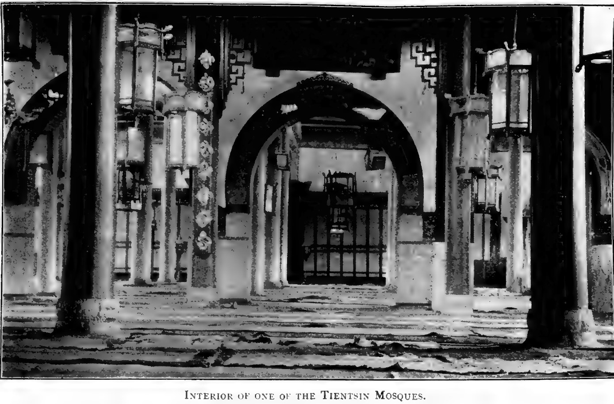
Interior of a Tientsin Mosque (original p. 240)
Idolatrous shrines destroyed. — There were three great idol temples
near Mecca[?] which the Prophet ordered to be destroyed, but no one
dared to destroy them. The Prophet sent Khalid to destroy ’Ozza, and
while there he saw a woman devotee in the temple, whom he beheaded; he
then returned to report to the Prophet, who rejoiced at the reported
destruction. Zeid was appointed to destroy Manat, the keeper of which
opposed him, saying that the idol must not be destroyed; a woman also
came to intercede, but Zeid killed her with his sword, and smashed the
idol and was about to burn the temple when the keeper said he would
enter the Faith, so the temple was spared to serve as his residence.
’Amr destroyed Hubaili and had a long talk with the keeper who was
convinced and became a believer in Islam. Followers were again sent out
to all the near states to burn and destroy shrines, more than one
thousand such being destroyed.
Return to Medina. — The original ten thousand soldiers of the Prophet
had been increased by two thousand, so ten thousand were left to guard
Mecca, and two thousand of the older and more weakly returned to Medina,
after staying fifteen days at Mecca.
I. The idols are all described as [Chinese] = Buddhas, and not simply
idols or images. They had, however, nothing to do with Buddhism. I/iu
Chih uses the popular term used in modern China, which is n6t correct in
this instance. (notes to p. 219)
[p. 220] The battle of Konein.— Honein is the
name of a great stream between Mecca and Ta’if, three days’ journey from
Mecca. When the Prophet had entered Mecca he sent some of his followers
to instruct the Hawazin and get them to destroy their idols, but they
would not submit; they gathered together ten thousand troops to attack
the Moslems on their return. When two days out from Mecca, the Prophet,
who was with the two thousand returning, heard of the threatened attack.
Bekr expressed his fears that their present force would come to grief if
they met ten thousand strong warriors, but the Prophet said that it was
not a matter of numbers, as God was on their side. When the onslaught
commenced the enemy were unable to stand against the determined attacks
of the Moslems; the battle was fierce, many being slain; the Prophet
stood among his troops, and when he saw the rushes of the enemy he took
up some earth and cast it against them, and as it fell the sound of it
was like pieces of iron falling upon brass pans, and when the enemies
looked they seemed to see the whole sky and the ground full of Moslem
soldiers, so they broke into confusion and fled[?] leaving their wives
and children and camels, horses, oxen and sheep, to be captured by the
Moslems. A reminder was sent from heaven that it was the Lord who had
won the battle and not man.
The enemy had left some members of their families, together with
their possessions, at Autas, so the Prophet sent Amier to take them; the
man left in charge at Autas was Doreid, who was one hundred and seventy
years of age, a veteran warrior; his assistant was Malik; they fought
well, biit were overcome and fled, Amier pursuing, and “while doing so
he fell from his horse and was killed. The Moslem troops captured the
women and children and all [p. 221] the
possessions, and then returned, taking with them the body of Amier,
about whom the Prophet deeply grieved.
In the two engagements there were captured four thousand men and a
quantity of camels and horses, and silver and gold; a messenger was sent
to call the Hawazin to submit; the poor were compensated, and the usual
taxation wa[?] imposed, except when escaped through submission to the
Faith.
Another Pilgrimage. — When the Prophet had punished the Hawazin and
pacified them, it was towards the end of the month Shawwal, so he
announced that as the time for sacred pilgrimage was near there would be
no more, expeditions just then. They approached Ta’if but the people
closed the city gates and would not receive them; the Moslems wanted to
attack them, but the Prophet forbade and said they would just borrow a
space to camp on, and tiiey remained at Chaerfa thirteen days preparing
themselves for the religious ceremonies, after which they went to Mecca
and went round the Kaaba and visited the hills as required. On this
occasion all the people of Mecca Joined in, to the number of several
tens of thousands; the sacrifices killed were several thousand camels,
and oxen and sheep over ten thousand.
Return to Medina; division of spoil. — After the pilgrimage
ceremonies they returned to Medina, spending five days at Chaerfa on the
way. At Medina the spoil was divided, the generals and the soldiers
sharing alike.; Those who had recently entered the Faith were more
liberally treated than the others, and thos6 who had entered’ the Faith
and acquired merit had double portions’ given.
The Hawazin, having submitted to the Faith, begged that their
families and possessions might.t be returned to, [p. 222] them; it was pointed out that as the division
had already taken place, this was not easy; the Prophet, however, said
that they might have either their families, or their possessioriis, but
not both; they chose their families, and the Prophet prevailed upon his
followers to give up these, as the new adherents were now brethren.
Malik submits and is rewarded. — [?]Malik, the second in command at
Autas, was a very rich noble, and when the Moslems had taken all his
possessions he fled to Ta’if and was there when the Moslems wished to
enter and the gates were closed against them; while there he reflected
that all the states were submitting and single cities could not be kept
secure; also he came to know that the religion of the Prophet was true
and the J ews and Christians. were mistaken, so he went to Medina to see
the Prophet and submit. The Prophet commended his action and praised his
ability, and being satisfied with his sincerity he commanded that his
possessions should be returned to him, and also gave him one hundred
camels and one thousand garments and said that if he could bring Ta’if
to terms peacefully, he should be the governor of it; Malik was much
affected by this generosity and gave thanks with obeisance.
The punishment of Ta’if.— The people of Ta’if were very obstinate and
un-mannerly, the worst of all the states. They would not submit to Malik
whonj the Prophet sent to them, so he sent Khalid with one thousand men
to punish them; Khalid feared that his men were not sufficient to reduce
a city of one hundred W[?]; the Prophet said that Ta’if would be [p. 223] diiBScult to capture, so it would be better
to surround it and hot let any come out; if the people of the city did
not show fight, then they were not to be attacked, and before long their
food would be exhausted. Khalid led his men to the city and they wanted
to.attack but he told them of the Prophet’s prohibition; some of them
pressed near to the city, and the people on the walls shot arrows down,
so catapults were made for throwing stones at them. The city was not
9pened, and after it had been invested eighteen days a message came from
the Prophet, to tell the troops to retire, leaving a few to protect the
retreat in the event of an onrush; when the men of Ta’if saw the Moslems
retreating they came out in pursuit, many being wounded in the melee.
Forty days were occupied in this affair altogether.*
’* A city of one hundred 7»” may include suburbs and hamlets near; a
circuit of thirty miles would, be more than that of any city in Arabia;
this may be considered one of the exaggerations of oriental language.
(notes to p. 222)
Birth of Mohammed’s son Ibrahim. — The Coptic maid Mary had now been
about a year in the Prophet’s harem, and in this twelfth month a son was
born; on the seventh day the ceremony of ’Aqiqah was performed, the name
Ibrahim was given to the child, and animals were sacrificed and a feast
given, in thanks for God[?]s grace; the hair of the child was shaved off
and an equivalent weight of silver was given to the poor, in thanks for
God’s gif t.[Chinese] All [p. 224] the officers
and people congratulated with presents, but the Prophet declined the
presents saying that he had already received a present.
This affair scarcely deserves to be called the ” punishment ” ffe of
Ta’if, as the Moslems had to raise the siege after a fruitless attempt
to capture the city, in which they probably suffered as much as the
people of Ta’if.
For a good account of the ’Aqiqah sacrifice, see Dr. S. M. Zwemer’s
” The Influence of Animism on Islam,” Chap. 5. The shaving of a child’s
head is still practised in China by Moslems, the equivalent weight of
silver being considered a perquisite of the. A-hong. In Muir’s
“I<ife” a note says: “The weight must have been trifling, as he had
shaved his head only a month or six weeks before,” this evidently
referring to Mohammed; the Chinese account is not explicit, but gives
the impression that it is the child’s bead which is referred to, and
this is the custom which survives. (notes to
p. 223)
Death of Zeinab, daughter of Mohammed.— Zeinab had been married to
Abul-‘As, who followed the Jewish religion, and had joined with the
Koreish in the fight at Bedr where he was taken captive; he was released
on condition that he should give up Zeinab and send her to Medina.
Husband and wife submitted to this separation, but as they loved each
other, neither married again. Ultimately Abul-’ As submitted to the
Faith and a second marriage ceremony took place and they were re-united.
Before long Zeinab died, and the Prophet personally attended to. her
burial.
Convepson of Wahshi. — Wahshi was at one time a foot-soldier of
Sufyan who had taken part in the battle of Ohod and gained merit by
slaying Hamza; he was now living at Yemen, and hearing that the Prophet
had taken Mecca and that the Faith was greatly prospering, he came to
enter the Faith. Some of the Moslems had taken an oath that if ever they
caught Wahshi they would kill him as he had killed Hamza, and now they
wanted to have their revenge, but the Prophet forbade, saying: ” In the
past, in ignorance he killed men; now that he understands, he loves men;
those who love others are themselves beloved; when Moslems see a man
begin to be good they should not bring up his past evil deeds against
him.” Wahshi was forthwith admitted into the Faith.
Chapter XIII
A.H. 9
[p. 225] The Beni Temlm submit — Other
submissions — Mohammed lives temporarily away from his wives —
Expedition to
Tebuk — Sundry miracles — Death of king of Abyssinia
— Abu Bekr sent on the pilgrimage*
The Beni Temlm. — The Temim lived in a city near to Medina but they
had not submitted to the Prophet, so he sent some of his followers to
instruct them; but they opposed and would not receive them; the
messengers after staying around for a few days, pretended to return, but
at night-time they hid themselves, and when some shepherds came out from
the city they captured twenty-five of them, together with their camels
and horses, and took them back to Medina. The Prophet commanded that
they be kept until someone came to redeem them; several of the headmen
came and sought an interview with the Prophet, at which there was some
discussion, turning somewhat upon literature, of which the Temim were
proud; the Prophet said there was some literature beyond the reach of
man, and on being asked to what he referred he commanded Omar to repeat
part of the Koran, on hearing which, the three messengers acknowledged
that these were not the words of men, and on being told that they were
from the Heavenly Classic, they worshipped and signified their belief
and repeated the creed and entered the Faith. The Prophet then commanded
that all who had been captured were to be released, and his messengers
returned with them, and the whole city submitted; the Moslem messenger
was appointed as governor of the city.
[p. 226] Other submissions. — About this time
many of the neighbouring states submitted to the Faith and followed the
new religion; as so many princes were coming and going, Bilal was
appointed to attend to the ceremonies’ and to make them more fitting to
the occasions than they had hitherto been. The people of Ta’if, though
often chastised, had not yet submitted, as they were so much under- the
influence of the. Jews and Christians; but now the officers and people
came to realize that the doctrine of the Prophet was true and that the
Jews and Christians were false, so they seized thirteen of the leaders
of the Jews, and Christians and brought them to Medina to see the
Prophet and discuss religion; but they dare not enter into discussion so
they requested permission to submit and enter the Faith.
Incident with the Khoza’a tribe. — The Prophet sent Kanlide to the
Khoza’a (a branch of the Mustalik) to receive the tribute and see to the
building of mosques; Kanlide had been at variance with the Khoza’a in
the past and was annoyed with them. When they heard that a messenger
from the Prophet was coming they made great preparations to meet him,
and he, suspecting them of insincerity, hastened back and reported that
they were thinking of rebellion. Asked what evidences there were of
this, Kanlide said he suspected it, at which the Prophet expressed his
displeasure and asked what was the good of mer« suspicion; just then
some of the Khoza’a arrived and explained that they had heard that the
Apostle was arriving, so they slew camels to prepare for his reception,
when to their siirprise the messenger turned back and they were afraid
they had transgressed, so they came purposely to explain. The Prophet
set them at ease and commanded Kanlide to go thither again, after
admonishing him. When Kanlide [p. 227] arrived
among the Khoza’a he heard sounds of worship afc which he rejoiced and
admitted that they were a people o£ proper rites and ceremonies; he
received the tribute and had mosques built and left several instructors
there to teach the people, who greatly rejoiced; after a month Kanlide
returned.;
The Prophet lives secluded.— All the wives of the, Prophet had their
own aparttpents; one day the concubine Mary was with the Prophet in the
-room of Hafsa who, on returning, saw her and was jealous; she told
Ayesha who spoke to the Prophet about it. The Prophet said that they
were to be the pattern of virtue to all generations of women, and should
not be jealous; he then vowed that for a month he would not co-habit
with any of his wives, so he commanded>Bekr and Omar to attend to the
matters of business on his behalf while he retired to a small loft where
he had his meals brought to him by an attendant; he attended the mosque,
hoyvever, for the five periods of worship.
After twenty-nine days he went out and Ayesha said to him, ” The
Apostle of heaven vowed to live alone for a month; it is now but
twenty-nine days.” The Prophet answered, ” There ’are long months and
short months, of tliirty days and twenty-nine days respectively; the
present is a short month.” The wives came to ask after his[?] peace and
to confess their fault, and the Prophet said: “Do you think I retired
because of dislike to you? I have had dealings with God.” Some say that
this month of seclusion was also a time of ascent to heaven.
The campaign of Tebuk.— The kings of several small states joined
together in asking the king of Rome (the Eastern Emperor, Heraclius) to
come to the east on an, expedition, saying that in the south-east there
had arisen [p. 228] one, Mohammed, who called
himself the Apostle of heaven and had set up a new state at Mecca and
Medina; he had altered the old religions, and the kings of many states
had submitted, and unless this matter was checked it would threaten the
superior country (Roman empire), hence this urgent request that the king
would come to the east at once, and the federated states would provide a
year’s supplies for one hundred thousand men. The king of Rome was a
follower of the religion of the Jews and Christians,[Chinese] and
although he had heard earlier on from Sufyan of the truth of the Faith,
he had not submitted; in the seventh month of this year he led out one
hundred thousand men and they duly arrived at Syria, the king of which
country gave liberally to the king’s troops, spending several hundred
thousands of gold pieces.
When the news reached Medina, the Prophet gathered together his
followers and said that it was the will of God that Tebuk should be
attacked; it was a long distance, and a hot season, and those who wished
to join in the expedition should volunteer by putting down their names,
and everyone provide his own food; those who were unable to provide for
themselves could be helped by those who had plenty. There was general
rejoicing at the prospect of the expedition, but some feared the long
distance and the heat; yet thirty thousand names were written, and “Bekr
gave up all his wealth to the extent of forty catties of gold; Omar gave
one half of his wealth, and others also gave liberally, while the common
men and women contributed their gold and silver ornaments, rings, etc.
The Prophet had many [p. 229] banners made and
other necessaries were prepared, and the various captains appointed. It
was very hot when the troops started out, so they travelled at nights
and slept in the afternoons; thus they travelled until they neared
Tebuk, and encamped thirty li distant from it.
I. Our author’s insistence on always coupling the Jews and Christians
together leads to difficulty here, as one individual could nbt follow
both Jewish arid Christian religions at the same time. (notes to p. 228)
Meanwhile the king of Rome had been thinking over the matter and
concluded that if Mohammed really was thp final Prophet, no-one could
control him; while if he was not, he could not accomplish much; the king
then sent spies and upon receiving their report he concluded that he was
in error; so he called together the kings and ministers of the vai-ious
states and said: ” It is written in the ancient books that the final
Prophet is named Mohammed and signs are given which appear to be
fulfilled, so if we try to punish him we may be offending against
Heaven; it is better that we should retire for a time, and if it really
proves to be that he is a prophet, we all ought to follow him; while if
he is not a prophet, the Lord of heaven will not permit such an arrogant
upstart to thrive, so he will come to grief without our troubling about
him. ” The king of Syria and the others urged that it was dangerous to
leave such a man alone, that he was gradually absorbing the states and
would be a menace to the empire itself, as well as being harmful to the
Roman Catholic religion. The king of Rome replied that Mohammed was
propagating religion and not coveting territory, and that if they all
retired they would still have their own lands to dwell in; he then gave
orders that a return was to begin on the morrow. Next day, when the
Prophet heard that the Roman troops had returned, he also gave the order
for return; his followers urged a pursuit, but the Prophet would hot
permit this as he said the king of Rome had shown his excellence in
letting[?]his movements [p. 230] be dictated by
his conscience, and he had hopes of him in the future. Besides this, it
was the month when war was forbidden, and as the Roman king did not
attack, the Moslems must not fight. ” We came out,” said the Prophet,
“because they threatened to encroach on my kingdom; now they have
retired’, why should I advance?” So they returned to Medina.
Several marvellous occurrences took place on the expedition to Tebuk,
some of which are here mentioned. One evening the warning was given that
a fierce wind was coming and nobody could stand alone, but they must all
hang on to each other; this wind came during the night, and two men who
went out alone were carried away to Mount T’ai.
While travelling, on one occasion the water gave out; the Prophet
lifted up his hands and prayed, and before long clouds came followed by
rain and all the troops had water to drink and the vessels were filled,
yet the road was not -wet!
The camel of the Prophet strayed and could not be found; some
scofifers said it was strange that the Prophet knew the affairs of
heaven above but did not know where his camel was I This was reported to
the Prophet who said that God knew, and added that the camel would be
found fastened to a certain tree in a certain thicket near a certain
stream, which proved to be correct.
A plot to assassinate the Prophet as he returned from Tebuk was
exposed by the Prophet who, at a long distance, saw, and had arrested
and killed, twelve men who were lying in wait.
Khalid secures the submission of Duma.— Okeidir, the king of Duma,
had been incited by the king of Syria to [p. 231] attempt to cut- off the Moslems on their
return from Tebuk, and on hearing of this the Prophet sent Khalid with
four hundred and eighty horsemen to put to flight the soldiers of Duma.
As the Moslems approached, the ambuscade of Duma retired into the city,
the gates of which were closed. OJceidir was fond of hunting the wild
cow, and on hearing this, Khalid planned to stay around the city in the
hope of capturing someone from it; that evening the king was upon the
city wall when he saw what he took to be a wild cow near the moat, and
in glee he seized his bow and arrows and hurried o’ut, only to fall into
the arms of Khalid; his followers, not knowing whether there were many
or few soldiers outside the city, hurried back inside and closed the
gates. Khalid bound Okeidir and led him back to the Prophet, promising
that he should not be killed, at which the captive was so moved that he
promised, if released, to get the whole city to submit to the Prophet.
Khalid trusted him, and the result was that all the city submitted,
procuring their ransom by two thousand camels, six hundred horses, four
hundred suits of mail, four hundred spears and two thousand bows and
arrows. The Prophet was rejoiced at this result, and commended Okeidir,
who also thanked him for his goodness, and straightway repeated the
creed and entered the Faith. Okeidir was appointed king of Duma, and
richly rewarded. Moslems were appointed to teach the book and the
ceremonies, and the Roman Catholic church was made into a Mohammedan
mosque.
Rewards and rebukes. — The day after the warriors had returned to
Medina the Prophet called an assembly at which he commended those who
had taken part in the expedition, and soundly rebuked those who had
feared to join or been unwilling to contribute to the expenses; for-
[p. 232] giveness could be obtained by some of
these on certain terms. The multitude was much distressed and many bowed
to the ground and besought the Prophet to pray that they might be
forgiven. An appended note says:
” The expedition to Tebuk was the most difficult of all the
expeditions; the distance was great, it was very hot, the people were
mostly poor, it was the beginning of harvest, and finally, the Roman
soldiers were very valiant and were feared by all. And then the
expedition returned without having fought a single battle, so that there
was no glory and no plunder; the troops had all the trouble and there
was great expenditure, more than in other cases and with less result, so
it could not be other than that some of those who went complained, and
those who did not go slandered, while some who had given their wealth to
help were secretly sorry that they had done so. But it was all of God’s
ordering, and not the personal idea of the Prophet; it had good effect
in sorting out the true and the false, the publicspirited and the
selfish, and in calling forth this rebuke from the Prophet leading to
the cessation of abuse and the repentance of the’ selfish.” Death of the
king of Abyssinia. — The king had succeeded his father and grandfather
in ruling the country, and he treated his people well; he was a foUower
of the Faith, and a protector of those Moslems who migrated to his
country. The night before his death he admonished his sons and ministers
that they should always be true to the Faith and protect Mohammed and
his followers, and not allow anyone to encroach upon the two forbidden
states, Mecca and Medina. When the Prophet heard of his death [p. 233] he had an altar made, and led forth his
followers and did obeisance towards the south, and mourned for him.
Death of Um Kulthum. — In the eighth rnonth of this year Um Kulthum,
daughter of the Prophet, and wife of Othman, died. Othman had first
married Rokeiya, who died about the time of the battle of Bedr; he then
married the third daughter of the Prophet, Um Kulthum.
Atou Bekp sent on the Pilg-rimag’e.-[?]The Prophet decided that he
would not personally lead the Pilgrimage this year, but wait until the
following year; so he appointed Abu Bekr to lead this time and act as
his deputy. The company was limited to three hundred men, and twenty
camels were to be sacrificed. On arriving at Mecca, Bekr was to proclaim
the command of heaven on four things, (i ) The worship of the One God;
(2) that adhesion to the Faith must be public; (3) that the ancient
ceremonies at the Kaaba must be done away and new regulations followed;
(4) that only Moslems are sure to enter heaven. Abu Bekr followed his
instructions on this pilgrimage.
Chapter XIV
[p. 234] A. H. 10. People of Nejran submit —
Death of Ibrahim — Embassies of submission — The Roman Emperor makes
enquiries— Three rebels punished — The Farewell Pilgrimage of Mohammed —
Fixing of the Pilgrimage rites.
From the time of the expedition of Tebuk, when the Roman king
believed the religion and led his soldiers back, many states near and
distant desired to come and see the Light and pay court; the near ones
came first bringing presents and submitting; then those which were at a
greater distance came. Nejran was about one thousand li distant from
Medina; its king was a man of ability, who practised good government.
The Prophet sent Khalid to instruct him, and the king led his ministers
and people many miles out to meet him, and after Khalid had remained
there some ten days the king led his ministers and elders and they
followed Khalid back to Medina, where they interviewed the Prophet and
entered the Faith. The Prophet complimented them, and appointed the king
to continue as king, and sent the Helper ’Omar to help them in the study
of the Books and to receive the tribute. All the idolatrous temples were
destroyed and mosques built.
Death of Ibpahim.— Ibrahim, the son of the Prophet, before reaching
the age of two years, was taken ill, causing much distress to his
father; the child died, upon which the Prophet wept sorely. Someone said
to him that he had prohibited weeping at deaths, but he replied that
what he [p. 235] had prohibited was the beating
of the face and tearing of clothes, and other extravagant
demonstrations, and not natural grief which was the expression of love.
The Prophet personally attended to the interment, and the whole country
condoled with him. In this month there was an eclipse of the sun, and
ten days later Ibrahim died; the people said the eclipse was connected
with the death of the son of the Prophet, but Mohammed said it was not
so; eclipses of the sun and moon were ordinary occurrences among the
heavenly bodies, and had nothing to do with the affairs of men. But
eclipses of the sun and moon resembled the beclouding by doubt of man’s
intelHgencc, so when they occurred it was well to reflect and- worship,
and pray that sins might be forgiven and the original brightness of
intelligence be restored; hence the ceremonies connected with
eclipses.
Audiences and submissions. — Among those who now paid court were the
Ersang and the ’Amir, and the king of Merhdi, whose conversation with
the Prophet is recorded, and who received an instructor to teach him and
his people more about the Eaith. King Saiwa made his submission.
The Rulers of Hindustan visit Mohammed.— The Prophet told his
followers that Hindustan was an empire of the south-east, distant over
twenty thousand li; he added that the Emperor was already on his way,
with some of his tributary kings, to pay court at Medina, and they
should be suitably met outside the city. When the Emperor saw the
Prophet he descended from his chariot; Mohammed requested him to
remount, and the Emperor desired the Prophet to sit with him, but he
declined and sat on his camel, upon which the Emperor also mounted a
camel, and thus they entered the [p. 236] city.
The following day the Emperor and his twelve kings had an audience, and
requested to be taught; the Prophet made a feast and treated them all as
guests, and in the course of conversation he asked the Emperor:— “What
is the religion of your country?” ” We have mixed religions,” replied
the Emperor. ” What do you mean by mixed? ” ” When the principles are
not correct, then it is easy for heresies to enter; every man has his
own principles, and every family its own learning, so religions are
many.” ’’ Have you not the books of the ancient prophets? ” ” Yes, but
they have been corrupted, and the people are easily deluded and do not
know what they ought to follow.” “You understand the doctrines,” said
the Prophet, ” and must surely know how these heresies come about.” This
was said to give an opportunity for the twelve kings and those around to
hear and learn; the Emperor said:— “India is the land where man’s
ancestor Adam first descended; after the flood, the grandson of Noah,
Hindcsi the son of Ham, controlled the waters ’and land, opened a
country with frontiers, and there at first they practised the religion
of Noah, which was the religion of Adam, After one thousand five hundred
years they practised the religion of Abraham, which was also the ancient
religion; five hundred years later they practised the religion of,
Moses. Moses was in Egypt, over forty thousand li distant from India,,
[p. 237] and books were rare, and traditions
varied; it was reported that Moses worshipped idols, so the hearts of
the people were disturbed; but in reality he worshipped the only true
God. Those who lived in the southern India (there were five divisions of
India, north, south, east, west, and the centre, which was Hindustan,
according to Arabic geographies), fell into the delusion of making
images and worshipping them, calling them” Fu ” Buddhas, and gods,
forgetful of the true God; this pernicious custom spread over the whole
land, deluding very many people; errors were handed down from one
generation to another, until they became religions, and this is the
origin of the present heresies, and the reason for the mixed religions.”
The Emperor went on to say that he desired to escape from heresies and
to know the truth, hence his coming to see the Prophet. Mohammed
proceeded to explain the truth to him, saying that the five commands of
God were Recognition of God, Worship, Fasting, Alms-giving, and the
Pilgrimage. The Emperor was full of admiration and performed obeisance
to the commands. The Prophet gave suitable presents to the Emperor and
the kings, and appointed thirty of his followers to go with them to help
them in practising the Faith, and he personally escorted them some
distance from the city. On their return to their own countries they
destroyed the Buddhist temples and built mosques, melting down the brass
images to make utensils. The Roman Emperor makes enquiries.— From the
time of his return from the threatened invasion near Tebiik, the Emperor
had been inclined to submit to the Faith, but [p. 238] his ministers, being Christians, did
everything they could to oppose such a step. The Emperor decided to send
an €envoy to make enquiries about certain things, including the duties
of kingship and the changing of the religious principles of the past.
The coming of the envoy gave the Prophet opportunity to send a long
letter to the Emperor, dealing with these matters, and complimenting
hifn on his humility in being willing to ask for information. On
receiving the letter the Emperor declared that the doctrines of Mohammed
were clear, and his teaching was correct.
Punishment of rebels. — There were three men who used to slander the
Faith, and were much annoyed when they saw the states coming to pay
court, so they hatched a plot of pretending, to come to coiirt bringing
presents, while one of them, Oerbe, was to have a knife in his sleeve
with which to assassinate the Prophet. When their arrival at the gate
was announced, the warriors all pronounced them false, but the Prophet
said they might be admitted; Amili was first called in and commanded to
kneel, and he then professed his submission, and his readiness to be of
service; asked what he could do, he said that he could be the Prophet’s
second. Mohammed said that he had received the command, and. there was
no second. Amili said, “You can attend to the city, and I will attend to
the country.” The Prophet smiled and repeated part of the Koran and said
that all power must be ascribed to the majestic and only God, and no
banner could be given to one who was not fit to be a general. When Amili
retired, Tufeiliehdz came in and was commanded to kneel; asked why he
had come, he said he had come for no other purpose but to submit to the
Faith. The Prophet commanded him to repeat the creed, which he did, and
then retired. Oerbe was then called in
[p. 239] A PLOT TO Kilvlv MOHAMMED 239and
Omar was commanded to hold his two arms while h6 knelt down; on -being
asked why he had come he replied that he had come to submit to the
Faith. The Prophet asked him what was the meaning of the knife up his
sleeve, to which he replied that it was for protection on the road. The
Prophet then showed that the plot to assassinate him was known, and that
as God had given him the command to propagate the Faith, so He protected
him. He then told Omar to kill Oerbe, and expel the other two, who fled
igriominiously out of the city, and then turned round and loudly cursed,
vowing that they would gather troops and level the city of Medina. A few
days later these two men led some soldiers and they again indulged in
cursing when suddenly a bird in passing struck with its wing the throat
of Amili who fell down to the ground; his neck developed a tumour and he
hastened back to camp for relief, but the tumour burst and he died.
Tufeiliehdz came again with soldiers, but fire broke out in their camp,
and in the effort to save things, he was burned to death. The Prophet
commanded that his calcined body should be buried along with the burnt
camels and horses, in the outskirts of the city.
The Farewell Pilgrimage of Mohammed.— The Prophet had sent a despatch
to say that all who were within ten days’ journey and wished to make the
pilgrimage, should gather together at Medina and proceed in company,
starting on the fifteenth of the eleventh month. The Prophet rode on his
camel, the Faithful following, mounted or on foot; on the twenty-fifth,
they arrived at Halifah, a few miles from Mecca, where the. Prophet took
the vows of the lesser pilgrimage, bathing, combing his hair, anointing
himself and being clad with the pilgrim’s garb (Ihram), after which he
performed worship twice and went forth chanting. The multitude took
[p. 240] the vow according to the rules, but
they did net know that the Prophet was going to perform both the lesser
and the greater pilgrimages, and most of them had brought no sacrificial
victims with them. On arrival at Mecca the Prophet entered the
sacred’[Chinese] building, touched the black stone, and went round the
Kaaba, three times quickly and four times slowly, each circumambulation
being round the ancient foundations which are a little wider than those
of the Kaaba as it stands. At the Place of Abraham he loudly recited
from the Koran, ” Take ye the station of Abraham for a place of prayer,”
and then he worshipped twice, during the first time repeating a chapter
from the Fatiha and a chapter from the Kuliya, and during the second
time, repeating a chapter from the Fatiha and one from the Kulif u. When
this worship was finished he again touched the black stone, then went
out of the Safa gate to Mount Safa, loudly reciting “Verily Safa and
Mervva are the signs of God.” Having mounted the summit of Safa he
turned towards the Kaaba and prayed, then descending the mount, he ran
towards Mount Merwa, passing over the stream, then slowly ascended Merwa
where he did the same as at Safa. The journey from Safa to Merwa was
done quickly seven times, and finally, on Merwa, he was released from
his vow and changed clothing; he then proceeded to take the vow for the
greater pilgrimage. The multitude thought this strange but the Prophet
told them that as he was about to perform the greater pilgrimage he must
needs perform the lesser first, and this was to be the perpetual rule.
The Prophet then set out on his camel towards Mina, reciting the proper
[p. 241] prayers; the rest of the day being
spent at Mina, where the fifth period of worship was observed, after
which there was a little rest during the night.
I. [Chinese] M, and [Chinese], mean literally “forbidden” building or
ground, but the meaning is ” sacred ” and not actually proliibited.
(notes to p. 240)
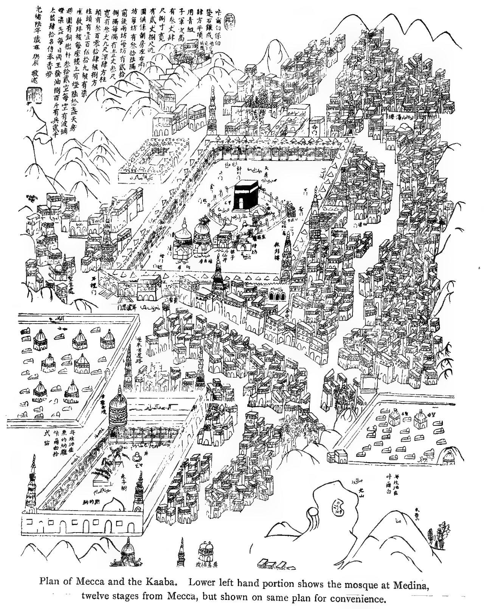
Plan of Mecca and the Kaaba (original p. 259)
At sunrise the next day he passed on to Mount ‘Arafat and in the
afternoon reached the stream besides which the noon and afternoon
prayers were said both at one time; after which he rode on his camel to’
Arafat, on the summit of which he turned towards the Kaaba and prayed.
A3 the sun went down he commanded Osama to mount with him on the same
camel and they passed on quickly to Muzdelif a, where they performed the
sunset and evening prayers both at one time; the people were then told
to rest awhile. The next morning, before the sun appeared, they went to
’ Akaba and threw stones seven times, each time nine stones, and at
every throw they recited ” Takbir ’ ’; from thence they went to Mina to
sacrifice the animals, the Prophet himself taking part in the killing,
until six hundred- and thirty camels had been slain, then Ali was
commanded to slay the rest, the total being one thousand camels. From
every camel a slice of meat was taken and cooked in a caldron, the
Prophet first tasting, then commanding the multitude to eat.
After this the Prophet rode to the sacred gate and alighted from his
camel and went round the building, performed the noon worship, and
finished off by drinking of the water of Zem Zem.
All the Faithful saw that the rites and ceremonies had been completed
and all done with sincerity, decently and in order; and as they remarked
how well the Apostle of heaven had done things, they queried how anyone
coming after could possibly fulfil the requirements; the Prophet said:
“I am leaving behind me a precious thing, and all [p. 242] who guard it will certainly be kept from
losing the path; I refer to the Koran. O my followers, if people ask you
what my actions were like when upon the earth, what will you answer?”
They replied: “Your disciples will bear witness that the true Apostle of
heaven has fulfilled his mission, with loyalty to God and love to men;
that he was of the utmost benevolence and virtue, of great mercy and
compassion, pitying and caring for all.” The Prophet pointed upward, and
downward, then towards them all, and said, ” God is witness.”
Chapter XV
[p. 243] A.H. lO-II The spread of Islam to
distant places — The Pretender
Museilma — An expedition to the Roman frontier.
A Roman Minister of State suffers for the Faith. — Feierwa was a
learned and talented minister of the Roman empire, who originally
belonged to the Christian religion; hearing of the Prophet’s teaching,
he wished to submit to it. He mentioned the matter to the Emperor who
agreed, but suggested waiting; but though the Emperor was at one time
much attracted to the Faith, he afterwards changed and disliked it, and
when he went so far as to prepare an attack against it, the minister
would not delay any longer, but sent a messenger to_ the Prophet, asking
instruction, and also sending a present of one hundred pieces of gold,
one hundred pieces of satin, and four each of white camels, horses and
asses. The Prophet sent a reply, and rewardedjhe messenger with twelve
pieces of gold, and twelve thousand pieces of silver, four pieces of
satin and eight pieces of cloth. When Feierwa received the letter he was
very pleased, and while outwardly serving the Emperor, he inwardly
served God, and called Him the King of kings and Lord of lords. Someone
reported to the Emperor that he was disloyal, and secretly communicating
with foreign countries, so he was cast into prison where he died.
The king- of Kulier submits.— Kulier was a great country to the
north, whose king was very eminent, a man [p. 244] of great intelligence, governing with good
principles; he belonged to the religion of the Jews or Christians. This
king so won the hearts of his people that they used to worship him
morning and evening. The Prophet sent a messenger with a letter to teach
him about the Faith, and after some discussion he believed, and gave up
his previous religion; he led his wives and concubines and ministers to
Medina to give thanks and to enter the Faith. He enquired about the
duties and responsibilities of kingship and the Prophet gave him good
instruction, among other things saying that the king is as the shadow of
God, find if he does a single thing contrary to what is right, he is at
fault; the king is the servant of his people, and if one man does wrong
the king is responsible. The king is the vice-gerent of God, and while
wielding the power he should practice the virtue of God; he should show
benevolence by a wide generosity, and show mercy by being sparing in
punishment and moderate in taxation; the wicked ofifenders should be put
to death, and the rebellious punished so as to maintain dignity and
majesty and to make clear what is advantageous and what is otherwise.
Correct learning should be encouraged and heresies differentiated. After
hearing this and other instruction, the king thanked God that he had
been so privileged, and he begged a copy of the Canon of the rites and
ceremonies that they might always be properly observed; the Prophet gave
him a copy.
In the time of Omar this king led his ministers and eighteen thousand
of his people to Medina to enter the Faith, and he released four
thousand slaves. He confessed to Omar that he was troubled about the sin
of having permitted his people to kotow before him, and enquired if this
might be forgiven; asked if he still permitted this, he replied that
[p. 245] he had not done so since he received
the Prophet’s instruction, whereupon Omar said that his prohibition
showed repentance, and he would be forgiven; the king was rejoiced and
in gratitude released other four thousand slaves.
The king of Egypt makes enquiries.— Egypt is an ancient empire in the
west. After the flood, a grandson of Ham received the command of his
grandfather to adjust the land and water, and a country was established.
After twelve hundred years Joseph governed the land and the people knew
to follow the religion of God; four hundred years later Moses punished
Pharaoh and revived the correct religion, and over six hundred years
later David and Solomon extended their kingdoms to embrace all places
under the sun. More than eleven hundred years later Jesus lived and
taught, and the arch-adversary Judas collected seventy thousand men to
go and kill Jesus, who went into the country, where Judas pursued and
entered into the building where he was; then the Lord manifested his
great power by taking Jesus up to heaven and transforming the appearance
of Judas to be like that of Jesus, so that the pursuers took and
crucified him, after which his original likeness returned and they were
alarmed at having committed the crime of killing their leader. An evil
spirit started the saying that the two men were really one man who could
change his appearance, and could take upon him the sins of men and
forgive them.
When the Emperor of Egypt heard of the killing of. Jesus he quickly
sent soldiers to punish the adversaries but they had fled; in course of
time their false sayings and heresies became a religion which was
largely believed in the Roman empire, and especially in Syria. When the
Emperor of Egypt saw that Rome and Syria were planning to attack [p. 246] Mohammed he secretly sent a messenger to
Mecca and Medina to find out about the doctrines of the Prophet, and
finding that they agreed with those of Jesus and of all the ancient
prophets, he sent an envoy with presents to ask about the duties and
responsibilities of emperors and kings. The Prophet sent a reply, much
on the same lines as the one to the king of Kulier, but fuller, and
quoting the examples of David and Solomon.
The EmperoF of China sends an envoy.— In the second year of
Mohammed’s commission as Prophet, the Emperor of China had sent an
envoy, and the Prophet sent Saad Wakkas back with him; the Emperor built
a mosque, and Wakkas returned to Arabia. Now, after more than twenty
years, another envoy came to the west; this was in the time of the
Emperor Yang Ti J[?] [Chinese] (a.d. 605).[Chinese] At this time the
Emperor had unified the empire and he wished to know about neighbouring
countries. The Prophet first enquired of the envoy if there was not some
remissness in the government at home which permitted time to be spent in
coming so far as Arabia; but in the end he again sent Wakkas to China,
saying that as some who had gone before had not returned, they must now
be increasing in numbers and it was fitting that they should be taught
the Canon and instructed in the rites and ceremonies. “If the Emperor of
China asks you what I am doing,” said Mohammed, ” tell him that I am
engaged in the work of transformation at the command of Heaven,
promoting the correct and destroying the false, abolishing idols and
images and leading to the worship of the True God; I am daily busy with
the affairs of the people, denying myself in every way for the general
[p. 247] good. If he should ask you about the
duties of an emperor tell him to act in accordance with the will of
Heaven and to follow the examples of the prophets and pay due respect to
worthies; be as a parent to the people, exercise wide benevolence, and
let laws be correct and forbearing; but let the wicked be sought out and
admonished; there should be daily self-examination, and also
investigation into the misfortunes of the people; there Should be no
covetousness or oppression, power and position should be lightly
regarded in comparison to the importance of the welfare of the empire;
let all selfishness be set aside, and follow that which is virtuous and
good.”
Another anacbronism; see note i, page 20, and note i, page 46. See
Appendix i. for further account of Wakkas. (notes to
p. 246)
The Emperor of Persia seeks instruction. — The Persian empire was on
the east of Arabia; it had very many tributary states over a wide area.
The Emperor led several tens of his tributary kings, with precious
things and camels and horses as presents, to interview the Prophet and
enquire about the duties and responsibilities of emperors and kings. The
Prophet gave much excellent counsel and instruction, for which they all
thanked him, and they wrote it down in books for perpetual
admonition.
The king” of Ifulike sends an envoy to make enquiries. — Ifulike (?
Africa)[Chinese] —;11 a;fe is a country adjacent to Egypt; its people
were originally Egyptians. When it was supposed that Jesus had been put
to death, the king of Egypt intended to punish the murderers who fled to
this place and established a state, which had now been in existence six
hundred years, and had a great capital in the [p. 248] west. The king and people of this country all
firmly believed that Jesus and Judas were one man, and they further
regarded him as the lyord who created heaven and earth, who had assumed
the form of a man, and could forgive men’s sins and save men; they made
images and worshipped them like people worship idols and Buddhas; they
were known as Nazarenes, that is. Christians. Having heard about the
Prophet and his teaching, and being in uncertainty what to do, the king
of Ifulike sent a messenger to make enquiries about the origins of
creation, so as to see whether what he said was true or false; and also
to enquire about the changes made, in order to judge whether his
teaching was correct or not. The Prophet knew of the envoy’s coming, and
that the questions were being put to try him, but he carefully answered
the questions and told of the six days’ creation, and also about the one
hundred and twentyfour thousand prophets and the one hundred and
fourteen sacred books. He controverted the saying that Judas and Jesus
were the same man, and showed that Jesus was an Apostle of God but not
the God of creation; Jesus could only be considered a prophet and was
not God; to force such an interpretation of Jesus was not correct
teaching; to worship only one God gave no opportunity for heresies to
enter, and to follow only one book (the Koran) would make it difficult
for errors to be retained. Then followed an exhortation to the king.
I. This seems like a transliteration of “Africa” which has not hitherto
been mentioned, as a whole, in the book. Parts of the African continent
have been referred to, and it may be that some part of the North-African
coast is here referred to; I am unable ’to identify any particular
country under the Chinese name given. (notes to
p. 247)
The king of ’Amir comes to Court. — ’Amir was a tributary state of
Yemen, the king. of which led two hundred of his ministers and people to
the Court at Medina to interview the Prophet, where they set forth their
doubts and questions, to which the Prophet gave satisfactory
answers.
[p. 249] The Pretender Museilima. — Museilima
was a man of Surname ( PYemama ) who from his youth had been known as an
exaggerator. In the previous year he had been to Medina and entered the
Faith, and on returning to his country he had rebelled and given out
that he himself was an Apostle of Heaven; he sent a letter to the
Prophet saying: “The Apostle Museilima to the Apostle Mohammed; you
should know that while half the empire[?] belongs to the Koreish, half
also belongs to Sumame; why are the Koreish so stiff-necked as not to
recognize this?” The Prophet said to the messenger:
” Do you know that I am the Apostle of God? ”
” Yes,” answered the messenger.
“Do you know that Museilima is a disorderly robber?”
(or rebel.)
” He, also, is an Apostle of God, the second in honour upon
earth.”
“An Apostle of God should have proofs, and not falsely proclaim
himself; I will not behead a messenger, but get you quickly back and
tell your rebel master to make haste and repent and acknowledge his
stupidity, or he will soon lose his head.”
The Prophet gave a letter to the messenger in which he said: ” The
Apostle of God, Mohammed, notifies the mistaken and reckless Museilima,
that he should be aware that the empire’[Chinese] belongs to God, and
God gives it to the right man; only one who is watchful and sincere can
bear the [p. 250] proper fruits; but you are a
miserable deceiver aild mischief-maker and the wrath and punishment of
God will surely come upon you and your followers; you should prepare for
this.” He then sent Khanifa with troops to punish him.
I. 3S Ti ” T’ien hsia,” is used for the whole earth, and also for an
empire, particularly China; as the characters are used in connection
with several of the empires referred to, they apply to the particular
dominion under consideration, and in this case presumably refer to the
Moslem dominions at the time when they were used. (notes to p. 249)
Osama commanded to attack the Romans. — From the time when the
minister Eeierwa entered the Faith and died in prison, many of the
ministers and people of the Roman empire wished to rebel against
Heraclius and submit to the Faith; but the Jews and Christians continued
to spread slanderous reports, and urged the king to send troops to
punish Medina and exterminate the Moslems that the people might have
peace and not be thinking about outside matters. Heraclius had doubts
about their advice, but in the end he began to prepare his troops. When
the news reached the Prophet he commanded Osama to lead fifty thousand
men to attack the Romans, giving him instructions to first capture Anba
(? Obna), an important point on the frontier, and then attack the enemy
but not seek to killthe king or ministers or people; only capture the
Jews and Christians alive and bring them bound that they might be slain
at Medina. The Prophet personally made a banner which he gave to Osama,
but said he feared he would not see him again nor hear the shouts of
victory on his return; then he wept, and Osama begged him to be
comforted, saying that by God’s grace he would be back again with the
troops within the month.
When the troops were about to start, the Prophet himself went a short
distance with them and gave his injunctions to Osama, saying: You are
going in the name of God, and are fighting for the religion of God;
first try methods of persuasion before resorting to [p. 251] arms; if the people are obstinate and will
not yield to persuasion,’then your killing them will be quite in
accordance with the principles of Heaven and the feelings of men.” Osama
did obeisance, and that day the camp was formed at Jurf, a hill to the
north-west of Medina; Abu Bekr, Omar, and other noted leaders were of
the company. There was some murmuringbecause the young Osama had been
appointed leader, and when the Prophet heard of it he was angry and
hastily slipped on some clothing and went out to rebuke the grumblers
and justify his action in appointing Osama on the ground that these
matters were all of the will of God; Osama inherited the skill of
generalship, besides which he wanted to avenge the death of his father
Zeid, who had been killed at MCita; therefore he was given the command,
despite his youth; those who talked wildly and ignorantly would be
beheaded; the slanders then ceased.
Chapter XVI
A.H. II
[p. 252] (June, A.D, 632) Sickness, parting
injunctions, and death of Mohammed.
The Prophet ill at ease. — On the day that the Prophet saw Osama
start with his troops, he became unwell with fever; he had previously
gone out at night to visit the burial ground near Medina, after which he
was conscious of a headache; and after hurrying out carelessly clad to
reprove the murmurers against Osama his fever increased and headache
became more violent. He was in Meimuna’s apartment at the time, but he
passed over to Ayesha’s room where he heard Ayesha complaining of a
headache, so he returned to the room of Meimuna. The headache getting
worse, in the evening he went again to Ayesha’s apartment where all the
wives gathered to him and he told them he was very ill and had received
the command that he was about to die, whereupon all the wives wept.
Ayesha complained about her severe headache, so the Prophet told her to
come near him and. he touched her head with his hand and straitway she
was relieved. Someone remarked that he could heal his wife’s headache by
a touch of the hand, what about his own headache? The Prophet replied
that in his wife’s case she sought to be cured; but he had received
command about his sickness, and if he sought to be healed it would be
fleeing from the will of God. He also said, “I have often exhorted
others to think of death, and if I now seek healing it will be as if I
wished to avoid death.” 252
[p. 253] At this time the Prophet freed all
his male and female slaves, in all forty persons. He also gave away his
possessionshis
; wealth had been in three portions, the public funds, his private
purse, and that which belonged to his nine wives; apart from the public
funds and his wives’ portions, he gave to the poor all he otherwise
possessed. There had been left in Ayesha’s keeping seven pieces of gold
which he remembered and called for; six pieces were given to him, Ayesha
requesting that the other piece might be kept for expenses; but the
Prophet said he could not doubt God so as to want to have money in his
possession when he died; he then gave all the seven pieces to Ali to
distribute.
Injunctions. — When the Faithful knew that the Prophet’s sickness was
serious some requested to go in to see him; the Prophet said that,he had
something to say to them all, and calling Al-Fadl to assist him, he came
out; Abbas led him to the mosque where he sat upon the last step of the
pulpit while all gathered round to listen. The Prophet composed himself
and lifted up his head and said; “Praise be to God, the creator and
sustainer of all things; all things perish, God only excepted, and all
things have to submit to His will. I admonish you not to forget death,
which is the common road of all men, even the best of men; Adam could
not avoid death, nor any of the, ancient prophets, nor emperors, nor
kings, neither can L” He exhorted that the Refugees and Helpers should
be well cared for, and that all the followers should observe God’s
commands in all things, and follow the example of the prophets, and
avoid heresies; he then continued: ” I am about to take a long farewell
and go on the road ahead of you; in travelling one must have road money
and the road money of the other world is good deeds in this world. My
followers! there is a road [p. 254] by which to
revert to the Truth and there are successive steps by which a man
approaches to God. The Book says that the creation of heaven and earth
showed forth God’s power, and the creation of men and spirits manifested
His complete character. Man is the most noble of all between heaven and
earth, and the most spiritual and sentient of all things; he must know
God in order to find the Way, and must be in accord with God in order to
walk in the Way and perform its requirements; then he must manifest God
in order to complete his following of the Way. All men may do this, and
all men can rise to the character of prophet or saint; there is no other
way to come near to the exalted character of God but by being in accord
with God and walking in His Way.”
The Prophet subsequently called together the scholars and gave
special admonition to them; and in like manner he admonished in turn the
officers and seniors, the rich, the farmers, merchants and craftsmen.
His strength was now failing, and he retired to his room for a brief
rest, then called for the Refugees and Helpers to whom he gave
admonition,
Restitution made. — The day following the admonitions, the Prophet
commanded Al-FadI to assist him to the mosque where he sat on the last
step of the pulpit and summoned the Refugees, Helpers, soldiers and
people to gather together at the mosque and he addressed them saying:
“The sins of this life will be punished hereafter and. those who have
been wronged here will be requited hereafter; am
I now about to leave you, and I ask that any whom I have wronged, or
to whom I owe anything, will come forward and let me make restitution;
let nothing be concealed, and then by settling matters now 1 shall
escape future [p. 255] retribution.” The
listeners wept, but none came forward to answer. At noon he returned to
his room and after performing the afternoon worship he went forth again
and squatted on the pulpit and weepingly addressed his followers,
saying: “I have only this one occasion of repentance (Taubah) and if out
of consideration for me you conceal anything, I shall carry my sin away,
with me.” The Faithful wept and replied that he had no sin and that he
might be at peace; his brilliance was such that any little speck there
might be was of no account. The Prophet then said: ’ There is no man who
has no sin; there are differences in degree, and in openness or
concealment; but there is no sin greater than to say one has no sin. The
judgements of Heaven are just, whether towards the prophet and saint or
the common person; the least bit of good done is observed, and so is the
least bit of evil; the good will surely be rewarded, and the bad will as
surely be punished; can you protect me from these judgements by simply
saying that I have no faults? it is better to deal frankly to-day and
leave nothing for the future.”
One man stepped out and said that the anxiety of the Apostle of God
about his sin showed that he was without fault; but at such urgent
entreaty he would remind the Prophet that on one occasion he borrowed
three coins from the speaker to give to a beggar: the speaker had
considered that as it was given in charity, it need not be repaid. The
Prophet was pleased and directed Fudsaili to repay him the three coins.
Then presently a camel-driver named Chabier stepped forward and said
that seeing the Apostle was so insistent he would mention that long
before on one occasion the Prophet, while whipping a camel, mistakenly
whipped the driver. The Prophet said it was so, and told the driver
[p. 256] to whip him in requital. Those standing
by were roused up at this and were about to seize Chabier but the
Prophet forbade them; he then told Bilal to hand a whip to Chabier who
remarked that he had been whipped on his back, at which the Prophet
turned his back towards him. Chabier said that it was hot weather when
he was whipped and he was bare-backed, §o he asked to have the bare back
presented tohim; at this the bystanders were angry and seized their
weapons to kill Chabier, but the Prophet said to them: ” If in your zeal
to save me from present pain and shame you cause me to have endless
shame and pain hereafter you do not really love or respect me.” He then
removed his clothing and exposed his back and, on approaching, Chabier
saw the Seal of the Prophet (a mole), whereupon he cast down the whip
and embraced the Prophet’s knees and cried out with tears: ” O Apostle
of God, most benevolent, virtuous, merciful and loving, how dare I do
such a thing? I have heard that the Prophet’s body bore a flesh mark in
proof that you are superior to all other men, and that all who see it
will be blessed eternally with heaven’s happiness.” The Prophet had
previously said that all who saw the sacred Seal would never meet the
punishment of fire, and this requiring him to undo his clothing was an
opportunity for all to see it together.
When the Faithful saw the Prophet so solicitous about himself, they
were moved to think about their own sins, and confessed thefts and
treacheries, drunkenness, gambling, malicious speaking and back-biting
and other sins, and sought forgiveness. The Prophet mentioned some sins
which could be forgiven and others for which there was no forgiveness;
he also said that unless repentance was sincere there could be no
expectation of forgiveness, and that true [p. 257] repentance lay in not committing the offence
again. Omar requested the Prophet to pray for them all, then asked if
God had signified that He had forgiven them; the Prophet said that he
had prayed for them, and they were forgiven, and he then added: ” Omar,
you should know that those who are able to repent have not great sin,
while the sin of those who are boastful and proud is by no means small.
Repentance is of the nature of Adam whom God forgave; but boastful pride
is of the nature of the Devil (Iblis) whom God does not forgive.”
Abu Bekr appointed to conduct public worship, — When the Prophet’s
sickness was such that he could not go to the mosque, he appointed Abu
Bekr to lead the public worship; Ayesha privately said to the Prophet
that Bekr was a tender man much affected by sorrow and he should not
take the Prophet’s place, but the Prophet did not answer; then Ayesha
talked with Hafsa to the same purpose, and added that Bekr’s voice could
not be heard, and it would be better to change and appoint Omar; Hafsa
made this request to the Prophet who was annoyed and said that his wives
had their wifely abilities but knew nothing about these other matters.
That same day he commanded the son of Abu Bekr to proclaim, and to put
in writing to give to Bekr, that all things connected with the
government of the state and of the religion, were to be decided by Abu
Bekr; and the Refugees, Helpers, members of the Prophet’s family, and
people of the state, recognized Bekr as Caliph, successor to the seat of
the Prophet. On one occasion Bilal gave the call to prayer and the
Prophet said to Dsunerdsu that they should all go to worship; Dsunerdsu
came out and told Omar that the Prophet had commanded him to lead the
worship and Omar began to do so, but when the Prophet [p. 258] he[?]rd his voice he sent word for him to
stop and again commanded Abu Bekr to lead. Omar asked Dsunerdsu if the
Prophet had really commanded that he should lead, to which Dsunerdsu
replied that he had not, but that D?unerdsu personally wanted him to
lead.
Bilal went to see the Prophet to ask him about ceremonies, and the
Prophet commanded that Abu Bekr was to be the Imam (leader). Bilal
entered the mosque and told Abu Bekr that the Prophet had commanded that
he be the prince, and on hearing this Bekr wept sorely and fell down to
the ground in a dazed condition; the Faithful sympathized and assisted
him to arise, then he conducted the worship. When the Prophet heard the
sounds of grief he enquired what was the cause and was told byFatima
that the Faithful wished to see his face again and grieved because they
could not; the Prophet then told Abbas and Ali to assist him, and he
entered the mosque and joined in the worship, at the conclusion of which
he told them that he had committed them all to God, and as they were
watchful over themselves they would receive the protection of God; he
also told them that Abu Bekr was his successor, as he was about to leave
the world. Then he was assisted back to his room.
Death of the Prophet.— From the twenty-sixth of the previous month
down to the evening of this eighth of the month (the third month), the
headache had been getting worse, and now he commanded that seven
pitchers of water should be poured over him by Ayesha as he sat in a
bath-tub; he remarked that all his life he had not required anyone to
help him in bathing, but now in sickness he must do so. Afterwards the
heat of his body became such that his skin felt to the touch as if it
was burning; the Prophet said that no [p. 259]
people had more violent sickness than prophets, and no prophet ever had
a more violent sickness than his; but the greater the sickness the
greater the reward and he looked for all the more blessing from God. The
pain in the head and side was such that the Prophet sometimes swooned,
and on seeing this the wives consulted and put drops of medicine to his
nostrils to revive him; when he became conscious he enquired about the
medicine used, and commanded that all his wives should also take the
same drops to their nostrils.
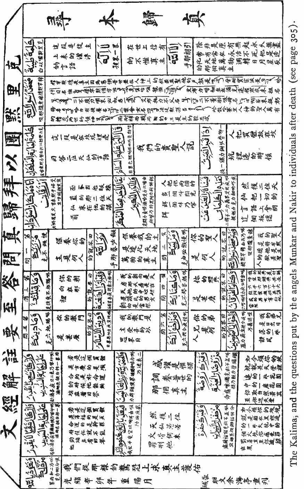
The Kalima, etc. (original p. 260)
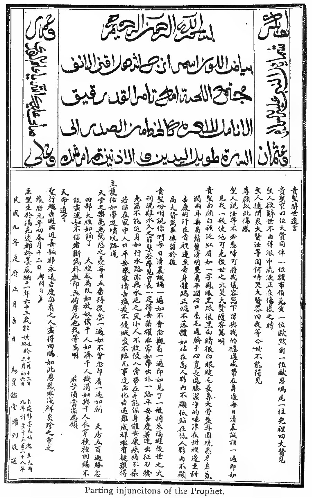
Parting Injunctions of the Prophet (original Facing
p. 268)
The Four Companions were called and given parting commands, and the
Refugees and Helpers were gathered outside; Osama came from the camp and
begged an interview, during which the Prophet lifted his hands towards
heaven and prayed in silence, after which he touched the shoulder of
Osama who secretly understood his meaning, and went back to the camp
where he told the soldiers that they might go in turn into the city to
see the Prophet. The Prophet called his followers to the head of the bed
while he personally wrote a will; Omar said that as he was so ill he had
better rest; there was the True Classic (Koran) which would be
all-sufficient for their teaching; the others joined in urging the
Prophet to rest and not trouble about further injunctions. The Prophet
replied that injunctions helped to avoid later discussions, and to write
things down would avoid disorder which might otherwise follow; the Koran
was the Law, and the teaching of the Prophet was the rules; the Law
without the rules would not be clear, and the rules without the Law
would be of no use.
The next day, in the afternoon, the Prophet asked for a tooth-brush
and some were offered by those around; he took one, then looked at
Ayesha, who understood the glance, [p. 262] and
as the brush[?] was too bard, she chewed it a little to make it softer
for him to use; he asked for a basin of water, in which he dipped his
hands, then rubbed his face, and with a loud voice exclaimed: “Lord,
Lord! help me to pass worthily through these agonies, and take away my
anxieties of mind; Thou, alone, can do this so that nothing harmful
remains.” Many hands then rubbed him, while he repeated: “There is no
deity but God, the True God”; he then closed his eyes and died.
Osama gathered the troops together and entered the city and planted a
large flag near the door of the Prophet’s house; and in obedience to the
bequeathed command, Abu Bekr succeeded to the seat of Mohammed.
On the death of the Prophet, Ayesha brought out an upper and a lower
garment, and lifting them up for all to see, she declared that the
Prophet had died in these garments. The Prophet was exactly sixty-three
years of age when he died; he was born on the twelfth day of the third
month and died also on the twelfth day of the third month; he became the
Prophet at forty years of age, then lived a further thirteen years at
Mecca, followed by ten years at Medina after the Hegira. On the day when
he arrived at Medina heaven and earth were lighted up; on the day when
he died, heaven and earth were in darkness.
When the Prophet died all the people wept; then Omar arose and said
that the Prophet was not dead, but like Moses he had gone into the
mountains away from his people for a few tens of days, that was all; and
if anyone dared to say that he was dead, he would have his tongue cut
out. Another disciple said that it must not be said that the Prophet
[p. 263] was dead; those who dared to say this
would be beaten on the lips. Abbas said that the Prophet slept, even as
all men sleep; but though he might be buried, God would surely remove
the soil and take him out.
I. The Miswak, Toothcleaner, was made of wood, split to make it supple.
(notes to p. 262)
The people enquired of Abu Bekr whether the Prophet was dead or not,
and- he replied, ” Everything perishes except God alone, and He is
eternal.”
One of the disciples had previously asked questions of the Prophet as
to the rites and ceremonies suitable in connection with death and
burial, and now this person was asked to advise and direct as to what it
was proper to do; with regard to the place of burial, this person said
he had not heard anything from the Prophet, so they must request the
Caliph’s (Abu Bekr’s) opinion. Abu Bekr said that he had formerly asked
the Prophet about this subject and he had said that if a man died at the
place where he was born he could return to the dust from which he was
first made. But this could not be in the Prophet’s case, and he must be
buried where he had died. They therefore removed the bed and made a
grave where it had stood, in which to bury the Prophet. Skilful workmen
were employed in making the grave, and many leading disciples tenderly
lowered the body into the grave, which had a door to it; after covering,
it was levelled and water sprinkled upon it.
At present there is on the Prophet’s grave a precious stone, which
had belonged to his grandmother; this stone gives ofif a brilliant light
which can be seen one hundred li distant. Tradition says that heaven
made this stone purposely to be placed on the Prophet’s grave; another
tradition says it was discovered when they were making the grave.
[p. 264] The Chinese “Annals” continue with
accounts of miracles and marvels connected with Mohammed, and also much
laudatory matter, omitted in the present translation, the foregoing
account of the Life of the Prophet of Arabia being sufficient to give to
English readers a fair view of Mohammed as known to the Moslems of
China.
The review and summary of the person and character of Mohammed given
by Sir William Muir should be carefully considered by all who wish to
form a correct estimate of them. That review covers a wider field than
has come within the purview of this translation, and its conclusions are
entitled to the fullest respect.
The Chinese record, though it puts the best construction on all the
acts of the Prophet, and credits him with virtues and powers which he
himself never claimed, yet adds nothing heroic or noble to a character
which has come down to us as a strange mixture of sincerity and
inconsistency; of benevolence and cruelty; of self-restraint and
self-indulgence; of faith, doubt, and superstition: these are some of
the qualities associated with Mohammed, as found in this and other
records of the Prophet of Arabia.
Appendix I
[p. 265] HSr I,AI TSUNG p’u, M * [Chinese] H
A Moslem tFadition of the first entry of Moslems into China.*
The coming of the Moslems really began in the second year of Chen
Kuan [Chinese] M also known as T’ai Tsung;[Chinese] of the T’ang ®
dynasty (a.d. 628). According to traditional records, on the eighteenth
day of the third month of the second year of Chen Kuan, during the
night, T’ai Tsung dreamed of a monster which rushed into the palace, and
in the dream he saw a man with a turban on his head who subdued the
monster and expelled it from the palace. Upon waking, the Emperor was
mu:h alarmed and in apprehension, not knowing the significance of the
omen. The next morning when the Court was assembled, the Imperial
Astronomer respectfully reported to the Emperor saying: ” In the night,
as I observed the appearance of the heaven, I saw a strange and evil
appearance which impinged on theTzu-wei star, and I feared this might
portend trouble to the Empire; I also saw in the West a felicitous light
brightly manifested and encircling the Tzii star as a wall of
protection. I opine that in the West there must be a sage who can
control the threatened evil; would it not be well for your Majesty to
send a messenger to enquire, in obedience to the heavenly portents?
”
•Another book, ” Hui Hui Yiian Lai ” HI la |g 5fJ, gives much the
same story, but with many variations. Both are apocryphal and the
translation here given is to show what Chinese Moslems
26s themselves relate and believe; no claim is hereby made to
historic accuracy for the tradition.
[p. 266] T’ai TsuHg then related his dream
and said that the monster had a black face, red hair, large and
prominent teeth, and was of very evil appearance generally. This monster
rushed into the palace. Then there was seen a turbaned man, who was
wearing a green robe; he was tall and graceful, and he came in reciting
from a heavenly Classic (the Koran). On meeting him the monster fled and
was pursued by the turbaned man, who, with a clear voice, repeated the
words of the Classic as he pursued; the monster joined in with entreaty,
beseeching the true man to forgive him, and thus he tied outside the
palace. When the turbaned man had finished driving out the monster, he
turned towards the West and disappeared like the wind. ” I do not know,”
said the Emperor, ” what good or evil fortune is hereby portended.”
One of the attendant ministers respectfully approached and said: ” I
have heard that the wearers of turbans are the Hui-hui (Moslems) of the
Western regions; their country is away beyond Kia-yu-kwan and is known
as T’ien Fang (Arabia). Their sacred king is named Mohammed, and he is
the Prophet of the last times; his doctrines are lofty and his virtues
are liberal; his country is rich and his soldiers are powerful.
Moreover, when he was born there appeared wonders, and felicitous omens
were seen again and again; can it be that the one whom your Majesty has
been speaking of is this man? ” The king, having heard what the minister
said, assented.
Hsii Shih-ki also stepped forward and said: “The Moslems are of
perfect[?]sincerity, true and respectful, and loyal from beginning to
end; moreover the West belongs to the ’ Chin ’ [Chinese] (metal)
element, and their nature is inflexible, so they are certainly able to
protect country and [p. 267] family; why not
invite them to come to court and assist in preserving the peace of the
State?”
T’ai Tsiing forthwith commanded Shih T’ang to go with a letter to the
West. Having received the command, Shih T’ang went beyond the frontier,
arriving first at the country of Ha Mi and afterwards at the country of
Pu-ho-lo where he met some traders who had come from Mecca in the West.
Shih T’ang stayed at the same inn as the traders and enquired of them
about the turbaned true man of the West, and the traders said he was to
be found at Mecca in Arabia, and that the true Classic had come down
from Heaven with the command that he was to be the Apostle to propagate
the Faith and to save the world; he had manifested supernatural powers,
and people in the West called him a prophet. The traders volunteered to
guide Shih T’ang, so together they went to Mecca and saw the
Prophet.
The messenger then presented the letter from T’ai Tsung and stated
clearly why the king of T’ang was anxious to have Mohammed go to China
to assist him. The Prophet replied: ” I have received from the True Lord
the appointment of Apostle, a responsibility which is not a light one;
moreover there is an angel going and coming every day, receiving and
bringing parts of the heavenly Classic (the Koran); morning and evening
I propagate the Faith, worshipping and confessing God; how can I neglect
these duties? I will, however, send men of goodness and virtue to help
your Ruler, and they can destroy the evil influences.” He then selected
from among the Sahabi[?] three eminent men of perfect sincerity and
excellent in both character and [p. 268]
learning; their names were Kai Ssu, Wu Ai-ssii, and Wan Ko-ssii[?]
[Chinese] fa Jg or Wakkas. Mohammed bade these three men go together the
messenger to China, and he also said to the messenger: ” When you return
to China take with you my portrait to give to the king of T’ang, who,
when he sees it, will naturally understand (about his dream).” A sheet
of paper was then suspended upon the wall of the Kaaba[?] and the
Prophet approached and stood before the paper for a short time and a
perfect portrait was imprinted upon the paper. He then charged the
messenger that when the portrait was given to the king of T’ang it was
to be clearly told him that no-one was to worship the picture; [p. 269] the messenger promised to attend to this, and
then he took leave of the Prophet, and set forth from Mecca with the
three Sahabi. By the time they arrived at Kia-yu-kwan, Kai Ssii and Wu
Ai-ssu, one after the other, had succumbed to the climate and died,
leaving only Wan Ko-shih* [Chinese] fi db to reach the Court along with
Shih T’ang. Shih T’ang forgot to pass on the admonition of the Prophet
that his portrait was not to be worshipped, so when T’ai Tsung unrolled
it and saw that they were the same features as he had seen in his dream,
he commanded that it be hung in the palace and he stepped forward to
worship; but before he had finished he looked up to gaze once more upon
the portrait and found that it had suddenly disappeared, which made him
think all the more of the wonderful influences of the Prophet.
I. Sahabi = an associate. One of the Companions of Mohammed. One who had
seen and accompanied the Prophet, even if but for a short time. (notes to p. 267)
This name is also written Wan Ko-shih t[?] f® J: in the same book,
and in a variety of ways elsewhere. Liu Chih speaks of Saad Kan Ko-shih
I}: [Chinese] db [?]s the apostle sent by Mohammed; and as the tradition
of the portrait, the building of the mosque at Canton, and the ancient
grave there, are associated with both names, it would appear that the
same person is referred to, and Wakkas is the name mostly given. The
Wakkas mentioned in Muir’s ” Life ” had a son Saad, who fought at Bedr
and Ohod, and was ultimately buried at Medina. This man was not the
“maternal uncle” of Mohammed, as the pioneer to China is claimed by some
to have been. The ” Tsung P’u” account places the pione,er’s coming as
subsequent to A.D. 628, whereas Liu Chih’s account would make it shortly
after A.D. 587, or allowing for the error of twenty -four years, A.D.
611. It is said that Wan Ko-shih came four times to China, but as the
two accounts claiming to record the first visit differ so much as to
time and otherwise, it would appear that we are dealing with tradition
only. See Broomhall’s “Islam in China” for a careful examination of the
story of this pioneer, and of the tomb associated with him. Broomhall’s
conclusion appears justifiable that ” the story cannot be accepted as
trustworthy. The ’ Tomb of the Echo ’ is probably the most ancient
Mohammedan tomb in China, and may be the resting-place of some great
Moslem pioneer, though at a later date than that given.”
Mohammed received embassies at Medina, and to say that on this
occasion he ” posed ” for his portrait before the Kaaba, which is at
Mecca, is one of the inaccuracies of this fictitious story. (notes to p. 268)
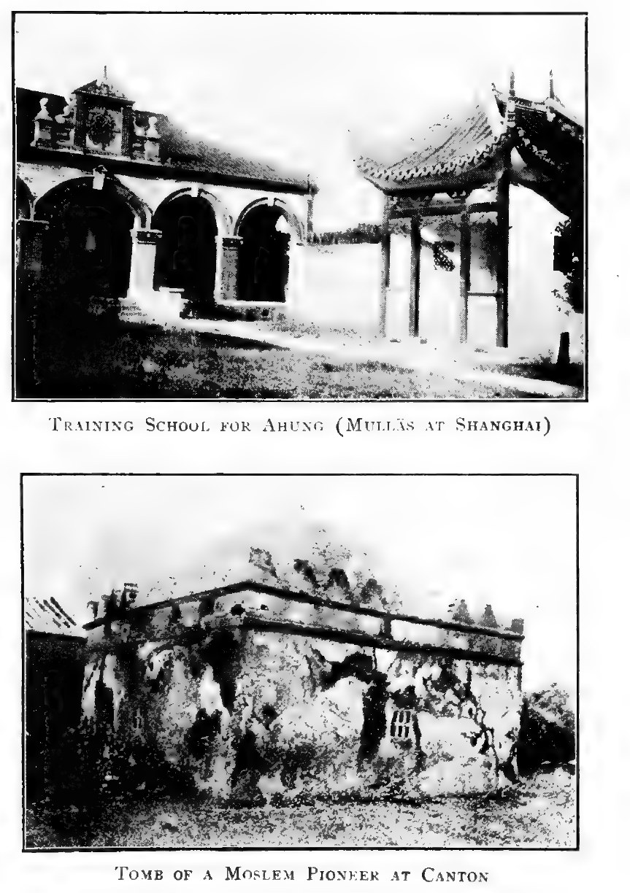
Training School for Ahungs (Shanghai); Tomb of a Moslem Pioneer at
Canton (original pp. 268, 276)
When the Sahabi were first appointed as apostles to China the Prophet
had secretly said to them: “On arriving in China it may be that you will
not understand the language; you should therefore take a pinch of earth
and smell it, then, by virtue of my influence, you will be able to
comprehend.” It thus came about that on his first arriving in China, Wan
Ko-shih was able to converse with T’ai Tsung, and what he said about
government was so much in accord with the principles of Confucius and
Mencius that T’ai Tsung respected him all the more, and said: ” I wish
to retain you to assist in the government of the country, and I will
give you the position of Imperial Astronomer, ifyou are willing?” The
visitor replied that, coming from a strange country, he was not
acquainted with the constitution of this government. T’ai Tsung then
offered to give him high rank and liberal reward, that his years might
pass in happiness. Wan Ko-shih thanked him and said: “I do not desire
the riches and glory of this life;
*See Note 2, page 268. [p. 270] it is
sufficient if I may in the world to come escape (he pond of.
bitterness.” T’ai Tsung was amazed and said: ’” Then 1 will retain -you
in China to propagate this true Classic and to establish the pure and
true and correct Faith; morning and evening you shall worship the True
Lord, I presume this will be in accordance with your purpose.” “I fear
it will be very difficult,” replied Wan Ko-shih, “for a messenger from a
distant country, quite alone, and by his own strength, to propagate the
Faith.” T’ai Tsung then said that he would send three thousand of his
own soldiers to the West in exchange for three thousand Moslem soldiers
who should come to his capital to assist the apostle in propagating the
Faith. Wan Ko-shih did obeisance and said: “Three thousand Chinese
soldiers would each have wife and family; I am a man acting according to
good principles, and I could not bear to see the breaking up of
families, parents and brethren, and wives and children, being left. I
would request permission to write ajletter petitioning the king of my
country to select some Moslem soldiers without family attachments, and
without fixing any number, let those come who wish to do so; I would
only ask that your Majesty will give them food and a place to live in,
then both objects will be served without difficulty,” This saying
pleased T’ai Tsung who commanded Wan Ko-shih to write the letter, and
had it despatched to the West.
When the Prophet had read the letter he commanded the Sahabi to
select men without family attachments, and over eight hundred were
selected to go to China[?]to assist Wan Ko-shih in propagating the
Faith, and to observe his teaching and all the rites of the religion.
The soldiers, having received the command, went forth, and arrived’at
Ch’ang-an, where T’ai Tsung commanded Yii Ch’ih Ching [p. 271] Te to build a large mosque* in the Hsiieh Hsi
lane, and also to erect buildings for the Moslem soldiers to live in. At
the present time there still stands in the Hsiieh Hsi.lane a monument in
evidence; such is the origin of the first entry of the Moslem religion
into China.
About the time of the close of the reign of Yiian Tsung (cir. A.D.
755) and the accession of his son Su Tsung (756), An Lu-shan headed a
rebellion, and as it became serious the king of T’ang called in the
Moslem ministers and directed them to write a letter to the Moslems over
the frontier to ask for soldiers to assist in putting down the rebels.
The Moslem ministers, having received the command, prepared the letter
and presented it to the king who sent it by quick messenger to the
Western regions. When the Moslem king had read the letter and knew that
it was the descendants of Wan Ko-shih and those who had gone to assist
him in China who were asking for soldiers, he gave orders that three
thousand valiant troops be selected and sent with all haste to Ch’ang
An; they arrived just when the soldiers of T’ang were hard pressed and
in peril. As soon as the Moslem troops arrived they went into the fray
and killed many of the rebels; the rebel leader. An Lu-shan, retreated
into Honan, with the Moslems in pursuit. The rebels were dismayed at
what they saw and heard of the Moslems, and would fight no longer but
returned to their allegiance; the country was tranquillized and the king
greatly rejoiced; he gave rewards to the brave and said that the Moslems
need [p. 272] not return to the West, but they
and their heirs could remain in China as the body-guard of the
Emperor.
According to this account, the mosque referred to was built more
than one hundred years earlier than the one mentioned on the stone
monument of Si-an-fu (see Appendix II) and which Broomhall says was,
traditionally, the first mosque (in China). The monument itself does not
claim to commemorate the first mosque. (notes to
p. 271)
Xhe Moslem ministers obeyed the command, and led all the others to
return thanks for this favour. The king of T’ang also gave orders to his
great ministers that at Ch’ang An an additional[?] great mosque was to
be built, and also dwelling-places for the three thousand Moslem
soldiers. The king also directed his ministers to select from the
provinces suitable women as wives for the soldiers, that they might
settle and have descendants, and thus be strengthened in their purpose.
to remain in China. Three thousand women and girls were selected from
the province of Kiangsu and escorted fo Ch’ang An and these were married
to the Moslem troops; since which time the Moslems have lived happily
among the Chinese….
A Record of the History of the Early Sage and Sahabi. — The early
sage Wan Ko-shih, after coming to China in obedience to command,
requested permission to return to the West on three occasions. The first
time he went to obtain all kinds of Canonical books to give to his
Chinese co-religionists; the second time he went to secure a Koran that
his disciples might recite it and study it; he also requested the
Prophet to indicate to him where he would die. The honourable Prophet
commanded him to take as much of the Koran as had then been revealed,
and said that as more followed he would send by a messenger to Wan
Ko-shih. ” As for the place of your death,” said the Prophet, “that
shall be shown by the head of an arrow.” [p. 273] He then pointed with his finger towards the
East and ordered a man to fix an arrow in his bow and pull it to the
full extent and then let go; in an instant all trace of the arrow was
lost. The Prophet then said to Wan Ko-shih: ” By virtue of my influence
the arrow will fall at the place where you will die; get you back
quickly to China, and in course of time what I have said will prove
true.”
This would be the mosque referred to by the Si-an-fu monument; the
use of the character [Chinese] - to add, sets aside Broomhall’s
contention that Ij ” can hardly be translated otherwise than as ’ first,
” and that the monument relates to the first mosque built. (notes to p. 272)
Wan Ko-shih went aboard a ship, and with propitious winds he was at
Canton almost before he knew it, and there he found the mark of the
arrow, outside the north wall, in the north side of the I,iu Hwa bridge;
he then was conscious of the wonderful influence of the Prophet, and
understood by this sign that this was the place where he would die. He
had the place walled round as a burial ground, and asked permission to
build a “Prophet-remembrance” mosque,® which permission was granted, and
there was also given a portion of land for the up-keep of the mosque and
the support of those in it; there used to be a stone there on which the
name was given as “the Mohammedan field,” but in course of time this
disappeared and nothing can now be found out about it. The mosque is
called the “Prophetremembrance” mosque because it is meant to cherish
remembrance of the Prophet. Inside the enclosure of the mosque there was
built a smooth pagoda or minaret one hundred and sixty Chinese feet
(about one hundred and seventyfive English feet) high, and of unusual
appearance. On top of the minaret there was a golden cock which turned
round as [p. 274] the wind blew; inside the
minaret there was a spiral staircase and Wan Ko-shih used to go up to
the top; morning and evening, when it was time for worship, he would
first go to the top of the minaret and repeat the call for people to
come to the mosque. Every seven days a large flag was set up and people,
near and distant, on seeing this, knew that it was the day of assembly
(Jum’ah). The mosque was situated on the north-west of a hill and this
hill was at the head of a ferry, so boatmen and merchants used to gather
in great numbers at this mosque.
Liu Chih implies that the ” Prophet-remembrance ” mosque was built
by direction of the Emperor Wen Ti, soon after the arrival of Saad Kan
Ko-shih (Wakkas); this does not agree with its being built by Wan
Ko-shih during his third visit to China, which is supposed to have taken
place many years later. (notes to p. 273)
In course of time the Prophet sent forty men to convey the Koran to
Ch’ang An; on arrival there they learned that Wan Ko-shih was at Canton,
so when they had given the Koran to the Faithful at Ch’ang An they left
that place and set off for Canton. As they arrived at the northern
suburb it was one of the set times for worship and as they dare not be
remiss, they knelt on the ground and performed their worship. A robber
approached, and perceiving that they were of strange garb and speech he
was surprised and asked who they were; at that time they were all
steadfastly engaged in prayer and had neither eyes nor ears for anything
else; after asking several times and receiving no reply, the robber
became angry and stepped up to kill them, but, though approaching death,
not one of them changed from what he was doing; the robber then killed
them all.
Presently the companions of the robber came up and asked him about
the affair and he told them the circumstancesthey
; glared angrily at him’ and said these were all resolute scholars
and men of benevolence, with hearts inflexible asiron and stone; why had
they been killed? The robber was then full of remorse, and said that his
crime in killing such excellent people could never be escaped from [p. 275] and thereupon he committed suicide. The forty
graves now seen in the enclosure are those of the men who brought the
Koran, and the grave outside the gates is that of the robber.
The third time that Wan Ko-shih returned to Arabia was because he had
a dream in which he saw a tall man who said to him: ” The honourable
Prophet is soon about to leave the world; if you hasten back to the West
you may see his face, but if you delay it may be too late.” On
awakening, Wan Ko-shih was greatly agitated and the next day he set off
for Medina, but when he arrived the Prophet was already dead.
Mohammed received his commission at forty years of age, in the sixth
year of Wu Te [Chinese] g of the T’ang dynasty (a.d. 624); the religion
entered China when he was forty-five, in the second year of Chen
Kuan
(a.d. 628); he died at sixty-three in the twentieth year of Chen Kuan
(a.d. 647).
The sage was much distressed that he was too late to receive any
parting words, and as he reflected upon the Prophet’s great virtue he
was deeply moved; at the time of the burial he approached the corpse and
uncovered the face and had a last look upon it and was unable to control
his grief. Wan Ko-shih subsequently learned from the eminent sages that
the Prophet had left command that he was to return to China to propagate
the Faith; there was also given to him a complete copy of the Koran, six
thousand six hundred [p. 276] and sixty-six
sections divided into one hundred and fourteen books made up into thirty
large volumes; this book Wan Ko-shih carried back with him to China and
gave to the Faithful to be kept for ever. Not long afterwards Wan
Ko-shih died at Canton and was buried by the Faithful inside the walled
enclosure, a grave being made after the fashion of the West. A stone
pavillion was erected, surrounded by mounds of earth, and the centre of
this was subsequently used by people as a place for offerings and
sacrifice, on which account it is called the ” Hsiang fen ” = the tomb
of offerings.” On the outside of the door is written ” The ancient tomb
of the- early sage.” Such are the historical records and traces of the
Sahabi Wan Ko-shih.
Mohammed died in a.p. 632. The Moslem writer of the above post-dates
the events, while Liu Chih ante-dates them. One writer gives the birth
of Mohammed in a.d. 546, the other gives his death in a.d. 647, more
than one hundred years after, yet both agree that he was sixty-three
years old when he died. Both writers are in error in their chronology.
(notes to p. 275)
In the Moslem booklet from which I have translated the above
account, the characters used for ” Hsiang fen ” are [Chinese] 5tt [?]nd
it is added that the place is one for §S IB = to present offerings and
sacrifices. Broomhall (“Islam in China/’ page 112) says the tomb is
called”The Echo tomb, because of noises which, according to local
report, constantly issue forth from this building.” In that case the
character should be [Chinese] instead of [Chinese]. The translation
given above is quite in accordance with the fact that the tomb is a
place of pilgrimage for Moslems who there pay respect to the memory of
the reputed first apostle to China. (notes to
p. 276)
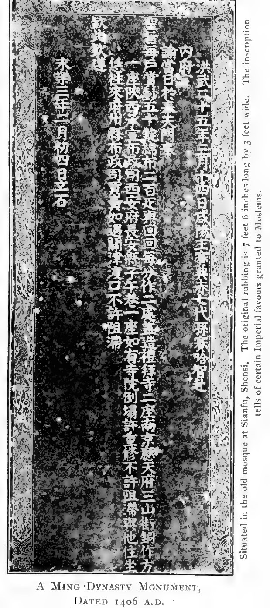
A Ming Dynasty Monument (original p. 277)
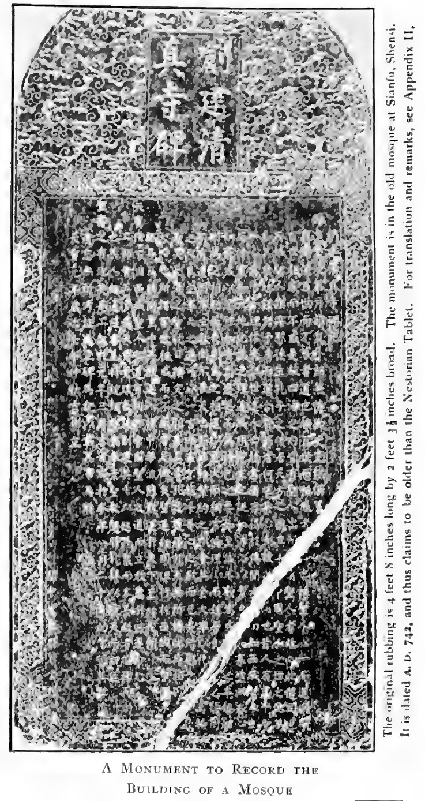
A Monument at Sianfu, Shensi, recording the building of a mosque (original p. 302)
Appendix II
[p. 277] Moslem Monument at Sianfu, Dated
A.D. 742[?] Translation of the inscription.
(Heading.) A Monument (to record) the first building of a
Mosque.”
(Line i.) Inscription of the Monument recording the first building of
a mosque.
(Line 2.) Written by Wang Kung, graduate of the third degree,
Secretary of the Board of Revenue and Censor.
(Text.) I have heard that what remains unquestioned after a hundred
generations is Truth (principle, the right [p. 278] path); and that by which men are influenced,
though distant a hundred generations, is mind (heart). Now sages have
one -mind, and their principles are the same, so they mutually influence
one another and remain undoubted through a hundred generations.
For a full consideration of the genuineness or otherwise of this
tablet and date, see Broomhall’s ” Islam in China,” Chapter V; also
remarks at end of the present translation, which is a new one and
differs somewhat from that given by Broomhall.
I cannot agree with Broomhall that the character flj Ch’uang, used
on the tablet, is meant to indicate that this was the first mosque in
China. Whether the tablet is spurious or not, there can be no doubt that
Moslems had to do with its erection, and according to their traditions,
believers had been in China for over one hundred years before A.D. 742,
and it cannot be supposed that during all that time no place of worship
was built for them. Liu Chih claims that a mosque was built at Canton
over one hundred years earlier, and the tradition given in Appendix I
supports this, and also says that a mosque was built at Sianfu long
before 742, and that the one built in that year was an ” additional ”
one. Noyes {Chinese Recorder, 1889) makes the extraordinary statement
that ” about 742, the number of Mohammedan temples in China, is reported
at 5,358.” He gives no source of this report. I think Broomhall’s
suggestion that this tablet commemorates the rebuilding or re-placing of
an earlier mosque is likely to be correct. The277 ” Ch’uang ” refers
only to the first building of this particular mosque, and no claim is
made that it is the first building for Moslem worship in China. (notes to p. 277)
In all parts of the world sages have arisen, and their b°ing called
sages was because they had this similarity of mind and principles. The
Western Sage Mohammed was born later than Confucius, and lived in the
country of Arabia; we do not know how far removed in time and place this
was from the sage of China; their language differed, yet their
principles agreed. Why was this so? Their minds were as one, therefore
their principles were the same. The ancients had a saying: “A thousand
sages have one mind; a myriad ages have one gOA[?]erning principle.”
This may be accepted as truth.
But though the times and generations are distant and the men[?] have
passed away, their sacred books have survived. From what has been thus
handed down we know that the W[?]estern Sage was born with supernatural
intelligence; he understood the laws by which heaven and earth produce
all things; he also understood what was said about the obscure and the
apparent, about life and death. Among his teachings were such things as
the purification of oneself by bathing; to nourish the mind by having
few desires; to inure to endurance by means of fasting; to depart from
evil and turn to the good as the essential of self-cultivation; to
regard absolute honesty and no cheating, as the radical thing in [p. 279] influencing people. At weddings all should
mutually assist, and at funerals they should be in attendance. From the
great matters of the moral obligations and the laws of natural
relationships, down to the small things such as rising or resting,
eating and drinking and so forth, there are none which have not their
proper principles, none for which there is not proper instruction, and
nothing in which Heaven should not be feared. Although the articles of
the teaching of the Sage were multifarious, yet they may be brought
together into one whole, which is to acknowledge the Heaven (God) which
created and sustains all things, as Lord; and the way of serving God may
be comprehended in one word, which is no other than the ” reverence ” of
our hearts.
The characters -{ft jg A t shih yiiaii ren wang, do not refer only
to Mohammed as Broomhall indicates; they refer to the sages in a general
way and do not support the construction ” Mohammed passed away ages
ago.” (notes to p. 278)
The Emperor Yao said, “Reverence accords with Almighty God.” The
Emperor T’ang said, “Holy reverence daily advances.” The Emperor Wen
said, ” Intelligently serve God.” Confucius said, “He who offends
against Heaven has none to whom he can pray.”
These, in a general way, are points of resemblance, and are
sufiScient to prove what has been said about sages mutually influencing
one another and remaining undoubted through a hundred generations.
Although the teaching of the sage (Mohammed) was the same as that of
others, it prevailed only in the West, and China had not heard of it,
until the time of the Emperor K’ai Hwang of the Sui dynasty (a.d.
581-601), when it entered China and gradually spread throughout the
empire.
His Imperial Majesty T’ien Pao, of our present dynasty, considering
that the doctrines of the Sage of the West are consistent with the
doctrines of the sages of China, and that [p. 280] the religion established has its roots in
what is correct, therefore commanded the Superintendent of Public Works,
Lo T’ien-chio, to take charge of workmen and build this mosque for the
accommodation of the followers of this religion; their leader is
Pai-tu-er-ti, who is well-versed in their Canon;he will be able to lead
them all in the exercises of their holy religion, reverencing Heaven
whenever they worship, and praying for the long life of the Emperor, in
this place.
This work was begun on a lucky day of the third month of the first
year (of T’ien Pao), and was completed on the twentieth day of the
eighth month of the same year.
Pai-tu-er-ti and those associated with him, fearing that as time goes
on this incident may be forgotten and no evidences of it remain, have
set up this tablet as a remembrance, and have had the circumstances
inscribed thereon; the tablet being erected on a lucky day of the second
month of Autumn (eighth month) of, the first year of the Emperor T’ien
Pao (a.d. 742).
This stone from Wan-nien-hsien, Kwan-chung, is jointly engraved.
After full and careful consideration Broomhall reaches the conclusion
that this monument is an “extraordinary forgery. ’ This conclusion is
probably the correct one. The variations in the above translation may be
helpful in any reconsideration ofthe subject; but unless further
confirmation be found, the phraseology of this inscription is such that
the genuineness of the tablet must remain open to question.
The mistake made at a much later date by Moslems in calculating the
years when trying to harmonize the Chinese and Arabic calendars and
record of events, has already been referred to (pages 37 and 93). Liu
Chih, writing one
[p. 281] A MOvSLEM MONUMENT 281 thousand
years after the events he is describing, is twentyfour years in error.
The record on this tablet claims to be written only one hundred and
fifty years after the entry of Moslems into China, yet it has the same
curious error of pre-dating events by more than twenty years, stating
that Islam entered China between the years 58i-6oi, which was before
Mohammed claimed to have received his commission.
Appendix III
[p. 282] Chinese Mohammedanism*
It is safe to say that the average foreign resident in China has only
a very superficial knowledge of the beliefs and practices of these
interesting people who, while numerically small in most parts of China,
yet in the aggregate make up a number which challenges not only our
curiosity and interest, but also our efforts to reach them with the
Gospel, seeing they are a distinct factor in the Chinese population
which we are trying to help.
Estimates as to the number of Moslems in China vary all the way. from
three millions to thirty millions or more; the most careful calculation
I know of is found in Broomhall’s ” Islam in China,” which gives a
minimum of five million, and a maximum of ten million, and Broomhall
says he leans rather to the higher than the lower figure, so that we may
assume there may be eight millions of Moslems in this country, a number
several times the total of all professing the Christian faith. It is not
my intention at this time to make an appeal for more workers amongst the
almost wholly neglected Moslem population, but in passing I would just
remind you that the number of missionaries definitely working to win
Mohammedans in China is woefully small. Efforts are now being made to
add to the literature specially prepared for Moslems, and a vocabulary
of terms used in Moslem books and conversation has been prepared for the
help of those who would be glad of such assistance.
*Read before the Shangliai Missionary Associatiou, December 3r<3,
1 918.
[p. 283] As very good books on the history of
Mohammedans in China are easily accessible to those wishing to consult
them, I shall not here do more than give a brief summary, before passing
on to the special feature of this paper, which is to give an insight
into the beliefs and practices of Mohammedanism asfound in China.
There exist monuments which claim a very early entry of Moslems into
China, one going so far as to say that they came during the Sui dynasty,
a.d. 586-601, but as this was some years before Mohammed claimed to have
received his commission, the claim cannot be allowed. There is a
tradition that Mohammed’s maternal uncle came to China to propagate the
religion, and that he is buried at Canton. This cannot be substantiated,
and the most that can be said is that the famous tomb at Canton is
probably the resting place of some great Moslem pioneer, of a later date
than the one given by Mohammedans as that of their first missionary.
Another tradition, given in a book named ” Hui Hui Yiian Lai” (0 0 Jg
jfe), places the entry of the Moslems at about a.d. 628, coming overland
and entering China through the western frontier. The account is very
fanciful and is evidently written by a Mohammedan. It is interesting to
note that the Chinese Ruler who welcomed the Nestorian missionary Olopen
is the same one who is credited with having sent an embassy to invite
Moslem missionaries, and is so impressed by what he sees and hears of
the one described as the ” turbaned man,” that he effects an exchange of
three thousand of his own soldiers for three thousand Moslem soldiers
who come to China and are well received and taken care of.
In A.D. 713 an envoy appeared from Ta Shi, as Arabia was then known
to the Chinese, who brought with him magnificent [p. 284] presents, and refused to ” k’o t’ou ’ ’ to
the Emperor. An Arab traveller, Abu Zeid, who visited China in 878,
tells of a rebellion in that year in which large numbers of Mohammedans,
as well as Jews and Christians, perished at Kanf u <Canton). Marco
Polo, who was in China a.d. 1275-1292, refers frequently to Moslems in
his narrative. In a.d. 1594 Benedict Goes refers to a Mohammedan
merchant who had resided for thirteen years at Kambalu, and who stated
that there were many Jews, Christians, and Mohammedans living there. It
is strange that apparently little or nothing of what may have been
written by Moslem Chinese during several centuries has survived, or is
accessible in these days. We begin with their literature written about
the middle of the seventeeth century, and for two hundred and fifty
years comparatively little seems to have been written. Wylie, in his
comprehensive ” Notes on Chinese Literature,” fifty years ago said:
“Although the disciples of Mohammed have been in China now for more than
twelve centuries, yet we do not find that they have done much towards
the introduction of a native literature in connexion with their
religion; and notwithstanding the great number belonging to this sect at
the present day, who know nothing but the Chinese, the publications they
have in the native language are quite insignificant.” He then proceeds
to mention five works. But there were others available, which apparently
he was not acquainted with; and of recent years there has been quite a
little activity in producing tracts and magazines, so that a complete
list of Moslem productions in Chinese will number about one hundred and
fifty titles. Some of the recent literature is polemical, attacking both
Christianity and Buddhism. For the most part, recent writers add little
or nothing to our knowledge or understanding of their beliefs [p. 285] and practices, and in some cases only succeed
in beclouding[?] matters. The variety of different characters used to
represent the same names or subjects is a continuous annoyance to anyone
reading after different authors; we have noted ten different names for
the Koran, half a dozen for Mecca, and about as many different ways of
writing Allah and Abraham, and nearly always two or three ways of
writing other names. Sometimes the same writer will give different
versions of the same name. But curiosities of nomenclature are not
confined to Moslem writers; the variations of names used by Christian
missionaries must be very puzzling to many Chinese readers, as well as
toforeigners.
The average missionary knows but little of his Mohammedan neighbours.
My own may be a typical case: I met Mohammedans in Szechwan for over
twenty years, was friendly with them, exchanged visits, have been inside
mosques, and yet knew little of their religious thought or practices.
This was partly due to the fact that many Moslems have very slight
appreciation of their own religion, and I remember one military official
who told me that he only knew he was not to eat pork nor worship idols,
and knew very little else about his religion. Some Moslems, with better
knowledge, are either reticent in speaking, or on the other hand are so
insufferably conceited in religious matters that it is not easy to find
out what one would really like to know. Morever, most of us have given
our time and efforts chiefly to the Chinese of other religions or of no
religion, as these have so greatly outnumbered the Moslems we have met.
In places where idolaters abound and Moslems are few, the Moslems are
apt to claim us as religious allies, and say we are “about the same,” as
we both wor- [p. 286] ship the true God and
reject idols; we have much of the Old Testament in common, and we
acknowledge the same prophets, Moses, David, and Jesus, called by
Moslems Mu Sa, Da Wu Deh, and Er Sa respectively- But no missionary
ought to accept the well-meant saying as altogether complimentary, nor
as the real truth. Some examination should be made into the points of
similarity and of difference, and the points of real antagonism, so as
to face the subject with understanding, and know how we may best try to
win the Moslems, and so have a share in the world-wide effort being made
to enlighten and convert the followers of the Prophet.
It is a simple matter for anyone to read about Mohammedanism in the
excellent books available in English; but as we are more concerned with
this religion as it exists in China, I shall present things as they are
found in Chinese works, written by Chinese Moslems. The conception of
God, as to His Unity and His attributes, is much the same as in the
Christian or Jewish faith. No single article of faith is more insisted
upon by the Moslem than that God is One and only One. -In a booklet
called “The Correct Foundation of Religion” the writer, a Tientsin
Mohammedan, says: “God is without beginning and without end. He is
eternal, and not affected by the dual powers ’ Yin ’ and ’ Yang. He is
without peer or mate, the Only One most honourable. He is not restricted
to certain regions; there are no traces of His form. He cannot be said
to be above or below, to be near or distant. He is without likeness,
there is no pattern of Him, and there is nothing to which He can be
compared. He can command that things be or cease to exist. He is able to
create all things, and that [p. 287] without
depending upon means. His eternal life does not depend upon any decree.
Sucli is the Originally-existent Essence of God.”
” The Christians’ recognition of God is by no means the same as the
above. Having said that God is only One, they further proceed to
discourse about three in one, and one in three. Is not this far removed
from what is said above about God being without peer or mate, and being
the Only One most honourable? They take God and Jesus to be one, and
thus rebel against the God who created all things. Jesus had a visible
body which had life imparted to it, and was not the Self-created,
Originally-existent Source. Jesus was also a created being, needing
outside assistance; he had beginning and erid, was affected by ‘Yin’ and
’ Yang ’; he also had equals. Although he had power over life and death,
yet he was put to death. In these things was he not as far removed from
God as the sea is from the sky?”
As regards the attributes of God, the Moslem writers say very much
the same as do Christian writers, and they use beautiful language, equal
to some in our own theological works. But the writer above referred to
adds this sentence: ” Christians say that the Spirit of God descended
upon Jesus like a dove. They should know that the life of God is not a
life requiring a Spirit; if He required a spirit in order to have life,
would His life not be just the same as all other life?”
The Moslem belief in angels is very prominent. The four principal
angels, who are styled the “Szii Shih,” four attendants, are Gabriel,
Michael, Asrafil, and Azrail. It was with these angels that God
consulted when He was about to create Adam and He commanded them to
bring the earth [p. 288] out of which man was
made. There are also two recording angels, and two inquisitors of the
dead.
Mohammedanism claims to be the original and oldest religion of all.
We read that ” God spake to the Prophet saying ’ Had it not been on thy
account, I certainly would not have created the world. Also the Prophet
has stated ’ The foremost thing which God created was my spirit. Before
heaven and earth were named, all the wonders of the coming creation were
enfolded potentially in the soul of Mohammed. ” It is therefore claimed
that all the prophets and worthies from Adam to Mohammed were believers
in Islam, though the name Mohammedan or “Hui Hui” (0 0) or ” Mu Ming ”
(ig Sd followed the advent of the Prophet.
The Moslem believes in a pre-existent supernatural world, which, in
Chinese phraseology, might be called the ” Yin ” of which our world is
the ” Yang.” Adam and Eve were placed in the garden in a world outside
ours, and it was after they had transgressed that they were expelled and
sent to this earth, Adam falling in Ceylon, and Eve in Arabia; and after
a separation of two hundred years, Adam was, on his repentance,
conducted by Gabriel to meet his wife. Our author says, ” Christians,
when speaking of the heavenly kingdom, confound the world to come with
the pre-existent supernatural world, counting them as one, which is
unintelligible.”
As an example of Moslem-Chinese reasoning the following may be
given:—” Christians say God created man in His own image, made him the
same as God; and moreover male and female were both of the same order.
Now having said that God has no equal and has no likeness or comparison
how can they say that God made man in His own likeness? Furthermore male
and female are spoken of; is it the male [p. 289] or the female which is in the likeness of
God? Truly though we think this over one hundred times, we cannot arrive
at a satisfactory explanation of it.” ” The Prophet has said, God truly
created Adam after his likeness, that is, Adam’s likeness. Before God
created anything He first fixed its likeness on the immortal tablets in
the seventh heaven, and afterwards created things according to the
likeness already fixed, and so it was with Adam. ”
” God commanded Adam to establish religion on His behalf. The first
thing to make clear was the doctrine of the recognition of God. Next, to
firmly establish the moral obh’gations, and then religion was on a good
foundation. The Doctrine which Adam propagated was that which God
commanded. What are the matters appertaining thereto? They are,
Recognition of God; Purification; Fasting; Prayer and Worship; the
Pilgrimage to Mecca; Sacrifice; Almsgiving, etc.” It is interesting to
note that Adam had a share in the pilgrimage to Mecca! Who built the
city, or who lived there, these are points not requiring explanation
apparently!
Adam was one of the Six Eminent Prophets, the others being Noah,
Abraham, Moses, David and Jesus, Of other special prophets there were
313, and of ordinary prophets, over 100,000.
” The Sacred Books given by God from the beginning number 104. Of
these, ten were committed to Adam; fifty to Seth; thirty to Enoch; and
ten to Abraham. All these have disappeared; and only four Sacred Books
remain, the Tourat, given to Moses: the Psalms given to David; the Injil
(Gospel) given to Jesus; and the Koran, given to Mohammed. The Books of
the Canon are the mandates of God, and are not made by the prophets
themselves. The [p. 290] contents of the books
were first written on tablets in heaven, and the angels having seen
them, carried their messages to the prophets to give to the w[?]orld;
such is the meaning of the Books having been ’ received. All the books
mentioned above remained without any revision or alteration. For over
thirteen hundred years the Koran of Islam has never beeti altered a
single letter. The Bible of the Christians has been altered many times.
But there are some conservative people who, to the present, accept the
Old Book. The names ‘T’ien Chu’ (R&man Catholics) and ’ Yie Su ’
(Protestants), are known all over the world, but it should be understood
that neither of these sects has the ancient Doctrine, and their books
are not the Books given by God, but are compilations of men, just as
they pleased.
” Someone may say, It is only natural that our Faith should respect
the Koran and obey it, as the Koran is the Canon of the Law, and the Law
should be recited to the living, and they be commanded to observe it.
But why must it be recited when praying for- forgiveness for those who
are dead? Are there some duties of obeying the Laws which the dead also
have to observe?’ We reply, In the Book ii is said ’ Recite the words of
the Koran over the departed; it may be that the deceased was a rustic
not accustomed to seeing officials, and perhaps he may have been very
wicked. The avenging angels will be like officials who, on hearing of
the sins, will want to proceed to punish; then if the words of the Koran
be recited over the grave of the departed, the; angels will hear the
true words of God, and they will not dare to inquire into the sins, but
will depart. Are not the words of God immeasurably better than the
prayers of men?’ ”
[p. 291] While the Moslems profess to accept
the Taurat of Moses and the Psalms and the Gospel, it must be mentioned
that their versions of these differ in some matters from those accepted
by Christians. Probably Mohammed only came in contact with distorted or
Spurious scriptures, and even these had to be made to accommodate his
teaching. It is said that the Kaaba, or Heavenly Cube, ” T’ien Fang ” —
which gives one of the Chinese names for Arabia — was erected by Adatri.
The Sacred House was destroyed by the Flood, and rebuilt by Abraham.
Adam is credited with having known Mohammed’s name, and to have
prophesied regarding him as follows, quoting a Chinese writer, — “Adam
said, In two things Mohammed is superior to me; (1) his wife will escape
the wiles of the devil; my wife assisted his wiles. (2), In Mohammed’s
case, the devil will have no prospect of succeeding m inducing him to do
evil, so he will submit to the Doctrine of Mohammed; in my case, the
devil •did not submit to me.”
We shall look in vain for any of these particulars in our Scripture,
or for other things, such as that Abraham offered up Ishmael, not Isaac;
that the Greatest Prophet was to come through the line of Ishmael; that
the well of Zem-Zem at Mecca is the one made by God to relieve the
thirst of Hagar. Also for this account of the Psalmist, “David said ’ I
saw in the Book of Psalms a ray of light, and when I prayed to the Lord
saying, ‘Lord what is this light?’ the Lord answered, saying, ’This is
the light of Mohammed; on his account have I created the present world
and the world to come, and Adam, Eve, Heaven, and Hell.”
Coming to the New Testament, the Moslems acknowledge Jesus as one of
the Eminent Prophets. He was the son of Maryam, “the sister of Aaron,”
so that Maryam is [p. 292] sometimes confused
with Miriam, and chronology is hopelessly mixed. Jesus has designations
such as no other prophet has, for example, “The Word of God”; and “The
Spirit of God”; and He is also acknowledged as the ” Sinless One.” His
miracles are admitted, but it is added that all the prophets performed
miracles. It is claimed that Jesus bore testimony to Mohammed by saying:
” Children of Israel, I am the Messenger appointed by God to you; the
Taurat which bare witness before me is true and not false,. and it
testifies that after me there will appear a Great Appointed One, whose
name is Mohammed the Prophet.”
” Jesus while an eminent prophet and a servant of God was not the Son
of God as Christians affirm. If the point is urged about Jesus having no
earthly father, then we might say that Adam had neither father nor
mother, and moreover God commanded angels to do obeisance to him, so it
would” really be more appropriate to consider him as the son of God, and
Jesus would come next. Jesus was very much troubled because certain Jews
slanderously called him the Son of God, so at the setting of the sun he
worshipped with three obeisances, one because he himself knew certainly
that he was God’s servant, for which he thanked God; the second
obeisance was because he knew that his mother was by no means the wife
of God, but was also the servant of God, for which he thanked God: the
third obeisance was because he knew that God is the Only Most High God,
and he wished to have nothing to do with false sayings. Jesus spake from
his cradle saying, Verily I am God’s servant; He has given me the Holy
Book, and rnade me an eminent apostle. This saying all the more
demonstrates the errors of the Christians.”
[p. 293] ” Christians further say that Jesus
was God’s son from the beginning. This is a still greater error. If
Jesus existed from the beginning, then he could be called God, why call
him the Son of God? Again, it is said Jesus is God’s son, but not a
materially born son, but he was delighted in, and honoured, and made
most high, on which account he is called the Son of God, If this be so,
then the name of son is spurious, as he is not really God’s son. If he
is not a real son, why must he be called a son at all? ”
. ” When it is said that God divided His Being, and part came down to
earth, — seeing that the divided portion was on earth, would there not
be an incomplete God in heaven? Moreover, to say that God came down and
was born as a man, this is really supporting the doctrine of
transmigration. The way in which we Moslems recognise God is that God is
God Himself, and Jesus is Jesus himself, an Eminent Prophet; this is
quite clear. This talk about one Body having threS Persons, is it not
quite erroneous? ”
The Moslems assert that Jesus was not crucified, but was taken up to
God, while some other person suffered in his likeness. This is stated in
the Koran, but the idea did not originate with Mohammed, as some of the
sects of early Christianity had the same belief. The following
translation of a brochure written by a Honan Moslem in 1914 may be of
interest as showing wh it some Moslems believe concerning Jesus and his
reported crucifixion and resurrection:— A Fragmentary Document.
” In the first year of the reign of P’ing Ti of the Han dynasty.on
the eleventh day of the fifth month, Jesus was born in the city of
Bethlehem in the country of Judea. At the time of His birth, Jesus said,
I am a great Prophet sent by [p. 294] God’; and
this was afterwards verified. Up to twentynine years of age, Jesus was
at home doing all that a filial son should do. In His thirtieth year, He
became a Prophet, Jesus said, ’When I open my mouth or raise my hand, I
can cause the blind to see, the deaf to hear, the dumb to speak, the
laine to walk, and the sick to be healed. These works of Jesus verified
his being a Prophet. After Jesus had shown these miracles, all the
people of the city of Judea (Jerusalem) said, ’This Jesus surely is the
Prophet Er-sa who has come to the world, because many evidences
contained in the Koran are now verified. The people of Jerusalem with
one heart praised God and praised the Prophet- There were some heretics
who would not oCcord with the rest of the people, as they considered
there were no proofs in evidence.
“After this, on the wilds of the mountains, there was. a band of
shepherds who started a rumour that Jesus was the only-begotten vSon of
God who had come to earth, and all the beginning of Christianity sprang
from the spreading of this rumour of the shepherds (See Luke’s gospel,
Chap. 2). When this false story of the shepherds went forth, heretics
joined their names together to help it forward by means of other
fabrications, saying one to another that Jesus was the only-begotten Son
of God who had descended to earth, whereupon the people of Jerusalem
entered upon discussions on this matter with great warmth. At Jerusalem
there was an otificial, a Commandant of three divisions of soldiers,
named Judas, who, hearing of these discussions among the people, and
fearing there might some unfortunate trouble arise, made up his mind to
injure Jesus. Judas said, ’Jesus is clearly an evil demon who must be
quickly arrested and’punished. And all the soldiers of Judas together
said [p. 295] that Jesus should be arrested.
When Jesus heard thereof he went outside Jerusalem to where there was a
Mount of Olives, which mount Jesus ascended. On the Mount of Olives
there was a great H!oly Temple, which had been built by Moslems. Jesus
having come within the Temple Used angry words, saying, Ah, Judas, thy
diabolical plans will not injure others, but only injure thyself.
“When Jesus disappeared from the city, some of the officials said,
This Jesus surely is an evil demon, for Judas took three divisions of
soldiers and failed to catch him. Subsequently each led his soldiers and
horses and together they went to the Mount of Olives to arrest Jesus.
But when the soldiers of the city came to the foot of the mount, not one
of them dared to ascend the hill. Then the soldiers of Judas kept guard
over the passes of the mount, and Judas alone went up to arrest Jesus,
thinking to get merit thereby, but on the contrary he wrought injury to
himself. When Judas reached the top of the mount and saw the great Holy
Temple, he entered the door and saw the clothing of Jesus in the Temple,
but saw no trace of Jesus. While Judas was seeking Jesus, God manifested
His great power; in the back wall of the Temp!e there suddenly appeared
a door, Jesus went out of this door and ascended on high; Judas in great
wonder saw for a moment the road of ascent to heaven, then the road no
longer existed; then he saw in space a white cloud, from the midst of
which a voice said:”Judas! Jesus has ascended and is now in the fourth
heaven. God will now manifest in thee a wonderful thing. Take thou the
clothing of Jesus and put them on and arise. j udas having heard the
words from space took the clothes of Jesus and put them on, and then he
was transformed into the likeness of Jesus. Judas said, ‘Jesus by his
super- [p. 296] natural powers could raise the
dead, I will pretend to be Jesus and frighten my soldiers and see what
kind of courage they have. So Judas, after the watch of the ’shen’
period, pretending to be Jesus, went down the mount, this being what he
was fated to do. Meanwhile the soldiers guarding the passes had been
changed for soldiers of Pilate, the Chief Magistrate of the city. These
soldiers did not recognize Judas, and said, This is Jesus coming down
the mount ’; so all the soldiers rose up together and arrested Judas and
put him to death by crucifixion on a cross. This cross was made of two
pieces of wood, one upright and one horizontal, and criminals were
nailed to it by hands and feet, such being the most severe punishment
among the Jews.
” Afterwards the soldiers of Judas and the soldiers of the Magistrate
quarrelled and fought, the soldiers of Judas saying, * Why have you
crucified our commander? ’ the soldiers of the Magistrate replying,
‘Because he represented himself as Jesus’; the fighting between the two
parties was very fierce, until on the third day God manifested His great
power and caused Judas to come to life again, and when the soldiers saw
Judas alive again after being dead they marvelled greatly, and rejoiced.
The two factions stopped their fighting and took Judas down from the
cross and took great care of him, but after forty more days Judas died
of paralysis. Because of these things, heretics fabricated false reports
saying that Jesus died upon the cross, and on the third day rose again,
and forty days after his resurrection ascended to heaven. Gentlemen,
reflect a little; if Jesus really arose thus miraculously from the dead,
the religion of Jesus would have flourished at that time; how is it that
the place where Jesus lived is now under Moslem rule? [p. 297] Christians say that Moslems in calling Jesus
a Prophet do not give him the intimate relationship which is conveyed by
calling him the Son of God. If this were so, why should we call the
Gospel a Holy Book? In a Prophet the ethereal and the gross are both in
evidence, and the inward and the outward both find their due expression.
The material body is that by which he has relations with men, and the
inner nature is that by which he connects with God. To acknowledge the
material body and not acknowledge the inner nature, is to come short; to
acknowledge the inner nature and not the material, is to unduly stress
the inner at the expense of the outer, Jesus is a great Prophet, but it
is a mistake for men to call him the Son of God, and to call him an
incarnation of God is a still greater mistake.”
To the Moslem, the idea of atonement and remission of sins through
the death of Jesus Christ is inexplicable. One of the Chinese writers
says:—
’* Seeing that God can forgive men’s sins, why should He not forgive
them without Jesus being put to death? Moveover, as it is said that
Jesus is God’s Son, could it be right to slay His son to save the world?
If, for example, the people rebel against their prince, and the prince
sends his minister to pacify them, and the people listen to the minister
and obey the prince, could it be possible that the prince should still
refuse to forgive the people unless the minister was put to death? ”
Coming to the time subsequent to the departure of Jesus it is said:
“After Jesus left the world, the succession of the Doctrine was not
carried on by any other prophet, in consequence of which numerous
heresies arose; fishermen were exalted as instructors; corrupt sayings
begat quarrels; [p. 298] sorceries led on to
deceptions; heresies and heterodoxies kept causing divisions to break
out; the people were distressed thereby, and all under heaven were in a
state of ferment. Six hundred years after Jesus, the Greatest Prophet,
Mohammed, appeared in response to the needs of the times. This fulfilled
the saying of Jesus, ’After me there will be born a man who rides a
camel, his name is Mohammed, and he is the Greatest Prophet.”
The standard “Life of Mohammed” in Chinese, written about two hundred
years ago, is true to its class in that it tells of miracles taking
place at the birth and during the infancy of the Prophet. His mother
heard a voice in the air announcing that her son was the leader of all
the prophets; birds gathered round to look at the babe, and all the
spirits hastened to offer their services. The nurse had special favour
shown to her by God, and erstwhile jaded camels and donkeys suddenly
became strong and sprightly. All kinds of animals came and gambolled
before the child; a white cloud always floated above his head, so
whenever he was missed he could easily be found.
I do not propose in this paper to detail the life of Mohammed as
found in Chinese records, fascinating as the subject is. The name
Mohammed means ” The Praised One,” and the biographer does his best to
give to his subject a literal interpretation of the name. The Prophet’s
grandfather iscalled a king, and his father and mother are very
exceptional people, while Mohammed himself is beyond all comparison.
Among the phenomena claimed for Mohammed is (a) that his body cast no
shadow on the ground; (.6) he caused at least one person to-rise from
the dead; {c) he cleft [p. 299] the moon with
his finger; {d) he made a journey into the ninth heaven, and returned
the same night.
It is interesting to read what is offered in the way of proof for
these miracles, as follows:— “Christians ask why it was that only people
in Arabia saw the cleaving of the moon, and not elsewhere. We answer
that some people coming from Persia also saw it; moreover there are
differences of location and time to take into consideration. Daytime in
China is night-time in America; i.oo p.m. in China is S.OO’* P.M. in
Germany (this may be a slip), so it can be understood that all the world
could not see the moon at the same time. But if you still doubt, look at
the Old Testament in the book of Joshua, Chap, x: 12, 13; Joshua
commanded the sun to stand still in the midst of heaven, and it hasted
not to go down for about a whole day. Who witnessed that event.’’”
” If it be queried, How could Mohammed ascend into heaven? Heaven is
a place of solid substance, how could it be pierced (by a material
body)?’ We answer, Have you not heard that Enoch, at the age of three
hundred and sixtyfiVe years, ascended into heaven? see Genesis v: 23,
24,, Again, the prophet Elijah also ascended into heaven. Moreover, when
Jesus was being baptized by John, the heavens suddenly opened, and a
dove came forth and lighted upon Jesus. Are not these proofs that heaven
has been opened, and our Prophet ascended into heaven? ”
“.When our Prophet reached the age of forty years, he received the
command of God to expound the correct Doctrine, and put a stop to false
sayings, and sweep away heresies, and revive again the Doctrine handed
down from Adam and all the prophets, so he was called the Prophet of the
Great Completion. Since Mohammed no other prophet has appeared.”
[p. 300] ” Christians say that oui- Prophet
used force to propa- ’ [?]ate his Faith. This was not so. Our Prophet
received the command to exhort the people by means of i<iudness and
tiot severity. Some who were deluded and steeped in heresies, remained
obstinately fixed in their delusions, not distinguishing between black
and white, nor between true and false; they also displayed barbarous
conduct, so God gave command that they were to be admonished by force of
arms. The Prophet divided people into three classes; those who submitted
were to be left alone; those who would not obey were to be punished.
Those who after punishment still remained obdurate, were to be killed.
The children, women, and aged, in all cases were, to be forgiven. The
benevolence of the Prophet was unequalled. But Christians should know
that the methods of Moses were the same as those of Mohammed. It is said
in Exodus that Moses commanded the Levites to kill the worshippers of
the calf, and they killed 230,000 people. Again it is said in the first
book of Kings that God bare witness that the punitive wars and other
good deeds of David were pleasing unto God. This is sufficient to prove
the falsity of the Christians’ slander of our Prophet.”
” People of other religions consider that our Prophet acted contrary
to reason and good principles in the matter of having nine wives. But
these people only know one side of the matter, and not the other side.
The wives of Mohammed were all women of excellent character, so they
assisted in bringing out the perfect character of the Prophet. The case
is not to be compared to one of inordinate desire and love of beauty.
Moreover, the prophet Jacob married four women; David at first had
seven, and afterwards more than ninety wives; Solomon had one thousand,
one hundred times as [p. 301] many as our
Prophet had; how can Mohammed be said t& have been extravagant in
this respect? ”
” As regards salvation from sin and punishment[?] the Prophet will
save all believers of all time. And it will be a full salvation, not, as
some say, after enduring certain punishment in purgatory, for he saves
from the punishment of hell. Christians say that apart from Jesus, no
one else can save; but this is a contradiction easily demonstrated,.
Their Bible says that when the children of Israel had worshipped the
calf, God was angry and wanted to destroy them. Moses then prayed to God
to forgive them, and God ceased His anger and forgave them. Is that not
an evidence of salvation through another? Our religion believes that all
the prophets had saving power, how much more Mohammed who is the Highest
Prophet?”
” Christians also say that none but a descendant of Isaac could be
the Saviour of the world. Do they not know that Ishmael and Isaac were
both sons of legal wives of Al)raham;. can they mean that a descendant
of Isaac can save while a descendant of Ishmael can not? That is really
a prejudiced statement.”
From the various extracts above given, it will already have been
apparent to you who have had the goodness and patience to listen to
them, that there is both opportunity and need for wise Christian
instruction and guidance of our Moslem friends. Time does not permit me
to speak more fully about the doctrines of Mohammedanism; but I wish to
say something about the Five Practices — or the Five Pillars, as they
are called — of the Faith. The Recognition of the Only True God is
assumed as fundamental, then follow Purification, Prayer, Almsgiving,
B’asting, and Pilgrimage.
[p. 302] (l) The purity required as a
necessary preparation to prayer is purity from the outward and material
as well as from legal and ceremonial uncleanness. In China two kinds of
outward purification are spoken of as the ” Ta ching” (iz??) and ” Hsiao
ching ” (/!« Jf [Chinese] respectively, the former being much more
complete than the latter. I must not enter into the details at present,
but let it suffice to say that they are interesting and curious, and
remind one of some of the proceedings described in the Levitical law.
All mosques of importance have bathing places annexed, usually small
stalls three or more feet square, and supplied with running water. A
pitcher similar to those shown on Mohamrtledan Signboards isused for the
smaller ablution. Shoes are removed at the door of the mosque, and
ceremonial little round caps which run up to peaks at the top, are worn
by the laity, while the Mullahs wear turbans.
-(2) Prayer is required at five stated times daily, but in China
these times seem to be observed by few Moslems. Prayer is begun by
placing the thumbs behind the ears, with the fingers extended. This is
the attitude of adoration of God. A Mullah once explained to me that
this is the nearest approach to the attitude in whi:h a man is born into
the world. The words used in prayer are attempts at the sounds of the
Arabic, beginning with the Takbiru ” T-Tahrimah ” (i[?]F 3£ ib 1# Ho M
111), the first takbir in the liturgical prayer, which is said standing.
The expression ” AUahu akbar ’’ (“God is very great”) is used frequently
in the daily liturgy and is represented by the Chinese characters
Almsgiving as a religious act was encouraged by Mohammed, and has
always been a matter of importance [p. 303]
among Moslems. About otie-fdrtieth of one’s inconieig the legal
tequirement for alms.
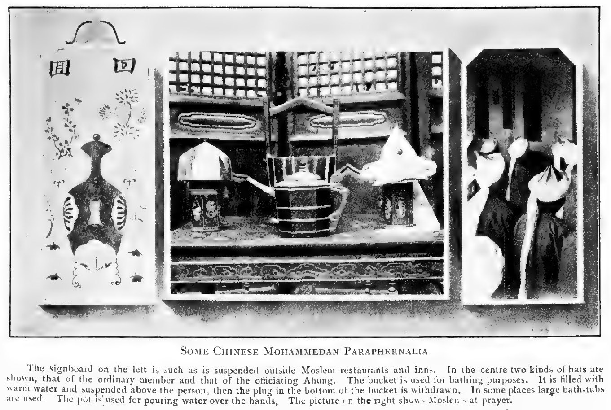
Chinese Mohammedan Paraphernalia (original
p. 302)
Easting is observed iii the month of Ramadan with more or less
strictness throughout China among Moslems. The rules are given in much
detail in their writings, and a very slight mistake or accident may make
void the ob-. servance so that it has to be done over again.
The Pilgrimage: considering the distance and the difficulties of
travel it is not surprising that not a large number of Chinese Moslems
are able to obtain their heart’s desire by a visit to Mecca. Yet
pilgrims go from all parts of China, and it is said there is a special
part of Mecca where they congregate, and wher6 they are looked after by
Chinese who reside there. Those who have made the pilgrimage and are
entitled to the title of Haji are very proud of it and often wear a
distinctive badge. Those who cannot go will sometimes contribute towards
the expenses of one who can, hoping thus to share in the merit. Prayer
and worship must always be done with the face towards Mecca, and the
first season of wor.-hip in the mosque in the morning is called ” The
Pilgrimage”; regular- attendance at this service is supposed in some
degree to atone for the failure to visit Mecca.
I had hoped to say a little about some of the social customs of the
Moslems, such as marriage and divorce, slavery, the position of women-,
etc., but this paper is already long, and I wish to conclude with the
translation of a short tract of modern date which is being circulated by
Moslems, and which summarizes the position of the Chinese Moslem. It is
printed in green, and is entitled ” The Root of all Goodness,” and is as
follows: — [p. 304] Chap. I. The Words of the
Testimony.
I testify that there is no God but only the true God, and Mohammed is
the chief servant of God, and that he is the chosen and sent of God.
Chap. 2. The Words of Purity and Truth.
Verily there is no God but only the True God, and Mohammed is His
Prophet. Chap. 3. The Summarized Creed.
T believe in the existence of God, and I move and have my being by
virtue of His revered name; I accept all the rules of God. Chap. 4.
Articles of the Creed.
I believe in.the True God; I believe in all the angels; I believe in
all the Sacred Books; I believe in all the Prophets; I believe in the
world to come; I believe that good and evil are determined by God; I
believe in the Resurrection. Chap. 5. The Standard of Faith.
Real Faith means that what is said by the tongue is verified in the
heart. Chap. 6. Rules of the Faith.
The Rules of the Faith are six, five of which belong to the present
world, and one refers to the world to come. Those belonging to the
present world are (i) One must not without cause injure a
fellow-believer; (2) must not without cause forcibly take the property
of a Moslem; (3) must not evilly suspect and dislike a Moslem; (4) must
not defame a fellow-Moslem; (5) must not make slaves of Moslems; (6) the
Rule which belongs to the world to come is that one should know that
Moslems cannot long remain in Hell. [p. 305]
Chap. 7. Clauses of the Faith.
The are six fclauses of the Faith, viz.:— (i) To really believe what
is not seen; (2) believe that God is All-wise; (3) believe that the
things which I ought to do are the appointments of my duty; (4) believe
that the things which are forbidden are such as I must not do; (5) stand
in awe of the punishments of God; (6) expectantly hope for the mercies
of God. Chap. 8. Words to ward off Evil.
0 God, I pray Thee to protect me from everything which would be a
mistake before Thee, and forgive the mistakes I have already made. God
alone is All-wise. There is no God but the True God, and Mohammed is His
Prophet. Chap. 9. Words of the Great Praising.
Pure and True God! All praise be to Thee. There, is no God but the
True God. Most great is the True God. I have no way by which to stop
from sinning, and no strength to perform the meritorious acts; 1 can
Only reverence God. Chap. 10. A Prayer for Forgiveness.
1 beseech God to forgive my sins, and the sins of my parent’s
ancestors. Gracious God, be merciful to my parents, even as they
graciously nourished me. Chap. II. The Words in answer to the
Questions.
Mohammed said: “After a man is dead and buried, two fearsome angels,
Munkar and Nakir, will come and examine him saying: ‘Who is thy God? Who
is thy Prophet? What Religion didst thou follow? What Book didst thou
read? Who was thy Guide? Who [p. 306] were thy
brethren? Where was thy Kibla?’ Those; who have been good will reply;
’My God is the True God; my Prophet is Mohammed; my Religion is the
Moslem Faith; my book was the Koran; my Guide was The true Classic; my
Brethren were honourable men; my Kibla was Mecca. The angels, on hearing
these answers, will say to him, ’Sleep on peacefully; thy grave shall be
as a garden of Heaven. Those who have been evil cannot give satisfactory
answers, so the angels will say to them, Dost thou not know? canst thou
not repeat the answers? thy grave shall be as the fire pit of Hell. They
will then punish them with firebrands.” May God deliver us from falling
into this sin. Chap. 12. Confession and Amends,
O God, Thy sinful servant comes confessing his sins, and with prayer
beseeches Thee. If Thou forgive, I will thank Thee for the forgiveness;
if Thou forgive ndt, to Whom’ can I turn? This last prayer, with its
beautiful devotional spirit, reminds us much of the language of the
Psalms, and indicates that there is a common ground on which Christian
and Moslem may meet; it is hoped that the foregoing imperfect sketch of
Chinese Mohammedanism may help us to a better understanding of, and a
truly sympathetic appl’oach to, our Moslem neighbours who are also
children of the great Father of us all.
Index
Abu Sufyan, 118, 149 ff.; defeat of, 165; interviews Heraclins,
Abbas, uncle of Mohammed, 90, 197; sues for peace, 213; sub- 139;
believes, 1(55 ff. mits, 217. Abdullah, father of Mohammed, Abu
Talib, Mohammed’s uncle, born, 24; marries Amina, 26; born, 23; chosen
as guardian, dies, 29. 52; visits Bosra, 65; presides at Abd ul
Muttalib, borti, 20; mar- Mohammed’s wedding, 65; de- ries, 21; digs
Zem-Zem, 22; fends Mohammed, 96, 101; redeems Abdullah, 24; sees death
of, 120. miracles, 3o; takes charge of Abwa, death of Mohammed’s mother
at, 45. Mohammed, 45; visits Abys- sinia, 48; dies, 52. Abyssinia,
king of, 36; visit of Abraham, personal appearance Abd ul Muttalib
to, 48; coun- of, 6; generosity of, 14; mar- try of, 91; congratulations
ries, 15; charges his sons, 16; from, 140; death of, 232. footprints of,
45. Adam, as ancestor, 3; his ap. Abu Bekr, accompanies Moham-
pearance, 6; bears witness to med, 56, 62; early disciple, Mohammed, 8;
created, 11: descendants of, 27, 146. 88; encourages Mohammed to preach,
115; betroths his Adversaries, 116; plot to kill daughter to Mohammed,
123; Mohammed, 130 ff. leaves Mecca, 133; hides with Ahmad, Mohammed’s
designa- tion, 11, 74. Mohammed, 134; sent on pil- grimage, 233;
conducts wor- ’Akaba (Acaba), Pledge of, 127. ship, 257; appointed
Caliph, Ali, cousin of Mohammed, born, 257. 66; early disciple, 90;
marries Abu Jahl, 62, 77; injures the Fatima, 146; at Bedr, 162;
at Prophet, 116; advises to kill Kheibar, 204, 258. Almsgiving,
302. Mohammed, 131; at battle of Bedr, 150ff.; slain, 153.
Amina, mother of Mohammed Abu Lahab, Mohammed’s uncle, 26, 28; death
of, 46. reviles the Prophet, [?]9.; death Ancestors of Mohammed, 3
ff. of, 157. Angel, 81 ff., 287. 307
INDEX 308 Angel of death, 18. Cave of Hira, 80, 133. Ansar
(See Helpers). Ch’ang An, 270 ff. Arabia, most honourable coun- Chen
Kuan, Chinese Kmperor, try, 2; middle of the world, 13. 265 ff.
‘Arafat, 241, China, entry of Moslems into, Ascent to heaven, 31,
124. 93, 265 ff.; number of Mos- Asma; the poetess, killed, 159.
lems iu, 282. Assassination of Ka’b, 165. Chinese Emperor, 93, 129,
246, Aus, tribe, submits, 180. 2t)0 ff. Ayesha, betrothed to
Moham- Chosroes (king of Persia), 199. med, 122; married, 143; mis-
Christians, 19. ff., 162 ff. adventure of,180, 252, 258 f. Christian
Scriptures, 9, 163. B Classes of believers, 139. Commands of
God, 126. Bahira, Christian monk, 56, 76. ” Companions ” of the
Prophet, Ban on Hashim family, 116; re- 90, 139, 261. moved, 119.
Creed of Islam, 89 ff., 303 ff, Bedr, battle of, 148 ff.j mart
at, D 177. Beit-uUah (house of God), 66, Daniel, book of,
154. ’ 218 . David, personal appearance of, Beni Kainuka,
exiled, 160. 6; books of, 9; told about Mo- „ Nadhir exiled, 175.
hammed, 10. „ Saad, 37,.42. Despatches of Mohammed, 200, „
Temlm, 225. 201. Bilal, Abu Bekr’s servant, 56; Ditch, conflict at
the, 183. caller to worship, 147, 258. Divine commission of Moham-
Bismillah, 83. med, 79 ff. Black Stone, 67. Bosra, city of, 65;
56. Buddha, living, 42 ft. Edudeh, an ancestor of Moham- med,
18. Egypt (Misr), 99, king of, Caesar, 92. makes enquiries,
245. Caliph, 257. Elephant, Year of the, 36, 37. Call to prayer,
147. Embassies, 196. Canton, 94 £f. Europe, 13. Casting stones,
241. Eve, 8, 11.
Heavenly journey of Moham-309 med, first, 31; second, 124. Pars
(Persia), 91. Heavens, nine, 1; ninth, 31. Pasting,_302. ”
Helpers,” first appointment of, Fatiha, the, 80. 124; sent to
Medina, 126, 139. Patima, wife of Abd ul Muttalib, 231, Hegira, 44,
129; time calculated from, 138. Fatima, daughter of Mohammed,
Heraclius, Emperor, 129, 196, 227. born, 66; married to Ali, 145.
High-priest, 42 ff. Friday (See Jum’ah). Hindustan, 91; rulers visit
Mo- hammed, 235. G Hira, hill and cave, 79 ff. Gabriel,
descent of, 82 ff., 123 Hodeibiya, 191 ff. ff., 146. Honein, battle of,
220. Gospels, 8 f. Hosein, son of Ali, born, 176. Grave of
Mohammed, 263. Hiisan 94. Tsung, Chinese Emperor, Grave of Wan
Ko-shih, 276. H Hudsaime, Khadija’.s relative, 60. Hafsa, 167.
I Hagar, 15. Ibrahim, 234. son of Mohammed, 223, Haimehli,
ancestor of Moham- med, 17. Idolatry, 42 ff.; at Ta’if, 95.
Hallma, Mohammed’s nurse, 37 Idols, 219. 14, 42, 53 ff.; destroyed,
£f. Halis, husband of Hallma, 37. Ihram, 239. Ham, 13. India,
140. Hamza, uncle of Mohammed, 24; Injil, Gospel, 9 ff., 108
ff. converted, 110; at Bedr, 152; Inspiration, 86. slain, 170. Irak,
91. Haris, an ancestor of Moham- Isaac, personal appearance of, 6;
med, 21. birth of, 15. Haritha, father of Zeid, 211. Ishmael,
personal appearance of, Hasan, son of Ali, born, 172. 6; birth of,
15. Hasbim, great-grandfather of J Mohammed, 20,
HSshimites, 2, 37, 154. Jacob, personal appearance of, 6. Hawazin
tribe, 56. Japheth, 13.
INDEX 310 Jerusalem. 146, 294. Kinaiia, 204. Jesus, 4;
personal appearance of, Koran, most honourable book, 8; foretells
Mohammed, 8; as 2; for all time, 9; chapters of, teacher, 98; discussion
about, 83 ff. 108; tradition about, 293 ff. Koreish, noble tribe, 2, 19;
schol- Jewish Scriptures, 10 ff. ars of, 44; plots of, 45; ten
Jews, 8, 10, 18 J obser.ve star, 35; families, 67; adversaries of from
Kheibar submit, 141. Mohammed, 97; leaders sub- Jews and Christians,
9; the “two mit, 209. sects,” 19, 25 ff. Koreiza, tribe, 184 ff.
Joseph, 6. personal appearance of, John, 9. Lapse of Mohammed,
108. Judas, 294 ff. Light of Mohammed, transmis- Jum’ah (day of
assembly), 140, sion of, 11 ff. 149. Lion of Islam (AH), 203, 211.
Juweiriya, 180. Lot, personal appearance of, 6. Luke, 9. M
Kaaba, 32; circumambulatiou of, Mark, 9. 46; rebuilt, 66, 146,
268. K’ai Hwang, Chinese Emperor, Martyrs of Ohod, 171. 93, 129,
Mary, the Copt, 196, 223. Kalima, 5, 76, 81, il3 ff. Matthew, 9.
Ka’b, murder of, 165. Mecca, central spot, 2; Moham- Kedar, an
ancestor of Moham- med born at, 11, 37; sheiks of, med, 16; death of,
18. oS; Moslejn entry of, 215. Khadiju, forenamed, 8; wealthy,
Medina, distinguished city, 2; 59; marries Mohammed, 65; Mohammed died
at, 11; famed the first to enter the Faith, 88; for its dates, 28;
disciples sent builds first Mosque, 116; death ’ to, 124; migration to,
127; of, 120. Mohammed’s arrival at, 136; Khazraj, tribe, 123. siege
of, 181 ff. Kheibar, 141 ff.; attack on, 203. Meimfina,
Mohammed’s Wife, 207. Khoza’a tribe, 226. Meisara, 60 ff.
Khutbah (sermon), 65, 146. Merwa, Mount, shaken, 33. Khuweilid,
Khadija’s father, 59. Migration, to Abyssinia, first, Kibla, 146;
change of, 147. 102; second, 104i
Mudsuier, 18. Migration to Medina, 128. Mina, 241. Muharram,
130, 145. Munidu, 18, Miracles, at birth of Mohammed, 39’ ff.;
Mohammed’s camel Mnta, battle of, 210, journey, 63, 205, 230, 298. N
3” Mi’raj (Ascent to heaven, q. v.”), Nadhir, Beni, 175.
Mohammed, birth of, 27, SO, 37; nursed, 37; cleansed, 41; first Nadsaer,
18. visit to Medina, 45; refused to Nadsuer, 19. worship idol, 54;
second cleans- Najashi (Negus), 35; king of ing, 55; journey to Syria,
Abyssinia, 47, 102 ff.; believes, marries Khadija, 65; revela- 109, 199.
tions [?]o, 79 ff.; adopts [?]li, 90; Nakhla, 121. sends apostle to
China, 93; Nejd, 131; old man from, 131. publicly teaches at Mecca, 95;
Nejran, 234. reviled and injured, 99;. re- Noah, personal appearance of,
ported insane, 101; persecuted, 6; the flood, 13.. 103; preaching in
Mosque, 115; Ohod, battle of, 167. marries Sauda, 122; ascends to
heaven, 124; escapes murder, 0 132; leaves Mecca, 133; arrives ’Okaz,
fight at, 55. atMedina,136; marries Ayesha, Omar, 65; opposition of.
111; 143; at Bedr, 150 ff.; marries converted, 113; as protector,
Hafsa, 167; wounded, 169; at 114 ff. Omeir, 158. his mother’s
grave[?] 190; mar- ries Safiya, 204; and Hablba, Othman, 87; early
disciple, 90 206; marries Meimuna, 207; ff., 146. cleanses the Kaaba,
218; lives secluded, 227; goes on fare- well pilgrimage, 239; quells
Paradise, tree of, 23. disaffection, 251; sickness of, Pentateuch, 8.
252; injunctions of, 253; death Persecution at Mecca, 99 ff.; of, 258.
103, 117. Moses, personal appearance of, Persecution at Ta’if,
121. Persia, 140, 199, 247. 6; books of, 8”; fast of, 145.
Mosque, at Mecca, 114; at Me- Pilate, 296, < [Chinese] dina, 138; at
Canton, 94, 271, Pilgrimage, 188, 206, 221, 239, 303. 273, 280.
INDEX 312 Pledge of the Koreish, 117; of Solomon, personal
appearance ’ Akaba, 127. of, 7, 146. Prayer, 302. Sui, dynasty,
93, 129. Pretender, 249. Syria, 24 ff.; Psalms, 9. Prophet,
Most Holy, 1 ff.;-Re membrance mosque, 94. T’aif, 95; persecution
at, 121; Prophets (120,000), 2. punishment of, 222. Pulpit, 114,
210. T’ai Tsung, 265 ff. Purification, 88, 302. Takbir, 70, 113.
Tasmiyah, 39, 70. R Taurat, 8, 291. Raj I, treachery at, 173.
Tebuk, campaign of, 227, 232. Ramadan, 149. Temple of Jersusalem,
146. 37. Refugees, 139. Thuweiba, Mohammed’s nurse, Reihana,
Mohammed ’s concu- bine, 187. T’ien Fang, 91, 29. Restitution, 254.
Treaties of Hodeibiya, 191, 194. Revelation to Mohammed, 80 ff,
U Rokeiya, Mohammed’s daughter, 149; death of, 156. Roman
Empire, 250 ff. Um45.Ayman, Mohammed’s iinrse, Roman Catholic, 20,
56 ff. Um Hablba, 206. Rome, messenger to, 5; principal Um
Kulthiim, daughter ol Mo- country, 20, 92; congratula- hammed, 233.
tions from, 140, 196. Um Salmah (Selama), 178. Saad Wakkas, (i3,
268. Safiya, 204. Virgin Mary, 92, 107. Visions of Mohammed, 69,
79. Said, 111, 152. Saifu, king of Abyssinia, 47 ff. W
Sarah, 15. Sauda, married to Mohammed, Wahb, father of Amina, 26.
122. WanKo-sstt, 268 ff. Seth, 12. Wen Ti, Chinese Emperor,
93. Shem, 13. Wives of Mohammed, 207, 300. Sinai, 12.
Worship-day, 140.
Books Translated into Chinese by isaac mason Price cts.
International Peace, 1[?] 1[?] ifn [Chinese] ii jH- S 12 The
Federation of the World, II W SiS -g- IS…U> Christ and War, S ’t
[Chinese] H K.10 The Truth of Christianity, [Chinese] -g it @ R
[Chinese]: It-.20 A Reasonable Faith, 5g it [Chinese] it 20 Lay
Religion, ii ® p 13 Stories of Hebrew Heroes, S *[Chinese] Si M
[Chinese] g 1[?] The Apocryphal Books, Introduction to, Ig S
i>[-mm 15 The Heroic Jesus, J||5 gS t S ® I’J -2(1 Pictures
of Church History, gtf-SrJtiSSRtll •• 28 Bible Manners and Customs,
[Chinese]<[?]WM[?]- -12 The Passion for Souls, ft i£>[Chinese]
A IS ± Im 10 The Life of John Bright, E fl [Chinese] If 20 The
Life of William Penn,[Chinese]® 10 Some Fruits of Solitude,
mW.[?]n[?] 20 The Progress of Democracy, g gr # M i[?]ti-.12 The
Health of the State, [Chinese] 4 fT Sfc Ife 14 The Splendid Quest,
ji illfc ± «* IB 20 Swiss Family Robinson, i[?]?[Chinese] fe IE
25 Tales from Shakespeare, [Chinese] @ [Chinese] |[Chinese].18
PUBLISHED BY THE CHRISTIAN LITERATURE SOCIETY EOR CHINA,
SHANGHAI
Chinese
Islamic Classics: Publications, Texts and the History of
Sinification
Research report · v001 · 20 November 2026 · Computational
Classnotes
Contents
What the Han Kitab is
Background: Muslims in China before the Han Kitab (651–1500s)
The scripture-hall movement and the birth of the corpus
(1500s–1640s)
Catalogue of publications (authors, titles, dates)
Texts side by side: Chinese and English
Key terms: a Chinese–Arabic–English glossary
Sinification and the Han Kitab: a history from the first publication
to 2026
Scholarly debates
Modern editions, collections and translations
Where to read the full Chinese texts
Sources
1. What the Han Kitab is
Han Kitab (漢克塔布 Hàn kètǎbù;
Arabic/Persian هان کتاب) is the name Chinese Muslims gave to the body of
Islamic books written in Classical Chinese by
Chinese-speaking Muslims (today’s Hui 回族), mainly between 1642
and the late 19th century. Han means “Chinese”;
kitāb is Arabic for “book”.
These books explain Islamic doctrine, Sufi metaphysics, ritual law
and the life of the Prophet in the vocabulary of Song–Ming
Neo-Confucianism (理 li, 氣 qi, 性
xing, 太極 taiji, 無極 wuji), with borrowings
from Buddhist and Daoist language. Chinese scholarship calls the method
以儒詮經yi Ru quan jing, “interpreting the
(Islamic) scriptures through Confucianism”, and its authors
回儒Huiru, “Muslim Confucians”.
Three features define the corpus:
Language: literary Chinese, so that Muslims who no
longer read Arabic or Persian could study their faith, and so that
Confucian officials and literati could read it.
Sources: mostly Persian and Arabic works of the
madrasa and Sufi curriculum (Nasafī, Najm al-Dīn Rāzī’s Mirṣād
al-ʿibād, Jāmī’s Lawāʾiḥ and Ashiʿʿat al-lamaʿāt,
ʿAzīz Nasafī’s Maqṣad-i aqṣā, Hanafi law books).
Method: not a replacement of Islam by Confucianism,
but an argument that Islam’s teaching on God, the cosmos, the human
being and the five relationships (五倫) is the fulfilment of what the
Confucian sages taught.
The main centres were Nanjing (Jinling 金陵),
Suzhou, Yangzhou,
Beijing, Jining and, in the 19th
century, Yunnan (Kunming, Dali).
2. Background:
Muslims in China before the Han Kitab
Period
Events
Tang (618–907)
Chinese and Muslim tradition dates the first Arab embassy to
651 (Yonghui 2). Arab and Persian merchants settle in
the “foreign quarters” (蕃坊 fanfang) of Guangzhou, Quanzhou,
Yangzhou and Chang’an. Islam is the faith of foreigners, not yet of
Chinese subjects.
Song (960–1279)
Families born in China (土生蕃客 “native-born foreign guests”)
intermarry and some sit the civil examinations.
Yuan (1271–1368)
Under the Mongols, Central Asian and Persian Muslims enter China in
large numbers as 色目semu (“various
categories”) officials, soldiers and artisans, above the Han in the
legal order. Sayyid Ajall Shams al-Dīn governs Yunnan. The term
回回Huihui comes to mean “Muslims”.
Chinese-language mosque inscriptions appear (Quanzhou Qingjing si
ji 清淨寺記, Guangzhou Chongjian Huaisheng si ji
重建懷聖寺記, both 1350).
Ming (1368–1644)
The Hongwu emperor restores Han rule. The Ming code requires Mongols
and semu to marry Chinese rather than among themselves; Muslims
take Chinese surnames (Ma 馬, Hai 海, Na 納, Sa 薩…), dress and speech.
Within a few generations most Huihui speak only Chinese. Muslims serve
the state (Zheng He 鄭和, 1371–1433). Chinese inscriptions by Muslim
literati appear in mosques (e.g. Chen Si 陳思, Laifu ming
來復銘, Jinan, 1528). A poem in praise of the Prophet, the
“Hundred-Character Eulogy” 百字讚, is attributed to
Hongwu (text in §5).
By the 16th century Chinese Muslims faced a crisis: Arabic and
Persian learning was fading, and the community risked losing its
religion while keeping only its customs. The Han Kitab grew out of the
answer to that crisis.
3. The
scripture-hall movement and the birth of the corpus
Hu Dengzhou 胡登洲 (1522–1597) of Weicheng/Xianyang
in Shaanxi returned from study abroad (traditionally from the hajj) and
founded 經堂教育jingtang jiaoyu,
“scripture-hall education”: mosque colleges teaching Arabic and Persian
texts, explained orally in Chinese. The curriculum was later fixed as
the “Thirteen Classics” (十三本經), eight Arabic and
five Persian works; about a third of them were Sufi.
Zhao Can’s 趙燦 genealogy of the movement, Jingxue xichuan
pu 經學系傳譜 (late 17th / early 18th century), reports that Hu
“longed for the scriptures of our religion and wished to translate them
into the national language, to be a law for this land for ten thousand
generations”, but did not complete it. His students’ students did.
The movement split into regional schools: the Shaanxi
school (Arabic, law and theology), the Shandong
school (Jining; broad curriculum including Persian), and the
Nanjing/Jinling school, where the leading
Chinese-language writers worked. The first printed Han Kitab book is
Wang Daiyu’s Zhengjiao zhenquan, 1642.
4. Catalogue of publications
Dates are those most often given in the scholarship; where sources
disagree, a range or “c.” is shown. “Ms.” = composed/circulated in
manuscript; “pr.” = first printing.
4.1 Precursors (before 1642)
#
Title
Author
Date
Notes
P1
清淨寺記 Qingjing si ji
Wu Jian 吳鑒
1350
Quanzhou mosque inscription; earliest surviving Chinese account of
Islam by a Chinese author (text survives, stone lost).
P2
重建懷聖寺記 Chongjian Huaisheng si ji
Yuan official (author name varies in sources)
1350
Guangzhou mosque inscription.
P3
至聖百字讚 Zhisheng baizi zan
attr. Ming Taizu (Hongwu)
1368–1398 (attr.)
100-character eulogy of the Prophet, carved in many mosques;
attribution debated.
P4
來復銘 Laifu ming
Chen Si 陳思
1528
Jinan mosque inscription on Islamic belief.
P5
清真教考 Qingzhen jiao kao (and Qingzhen jiao kao
qunshu huiji 群書彙輯)
Zhang Xin 張忻 / Zhan Yingpeng 詹應鵬
late Ming
Compilation of Chinese writings on Islam; later used by Liu
Zhi.
4.2 Late Ming and early Qing
(1642–1700)
#
Title
Translation of title
Author
Date
Notes
1
正教真詮Zhengjiao zhenquan
The Real Commentary on the True Teaching
Wang Daiyu 王岱輿 (c. 1584/1592–1658/1670)
pr. 1642 (Chongzhen 15), Nanjing
2 juan, 40 chapters; first Islamic book composed in Chinese; argues
against Buddhism, Daoism and popular religion and on loyalty to God,
ruler and parents. English: Murata 2017.
2
清真大學Qingzhen daxue
The Great Learning of the Pure and Real
Wang Daiyu
c. 1640s–1650s
Short treatise on the “three Ones” 真一·數一·體一 (§5.3). English:
Murata 2000.
3
希真正答Xizhen zhengda
Rare and True Answers
Wang Daiyu (compiled by disciples; preface by Ma Junshi 馬君實)
compiled 1658
Dialogues with questioners.
4
歸真總義 Guizhen zongyi
The Comprehensive Meaning of Returning to the Real
Zhang Zhong 張中 (c. 1584–1670)
1653
Based on lectures of the Indian teacher ʿĀshiq; on faith and the
soul’s return to God.
5
四篇要道 Sipian yaodao
The Essential Way in Four Chapters
Zhang Zhong
mid-17th c.
Catechism/ritual.
6
克理默解 Kelimo jie
Explanation of the Kalima
Zhang Zhong
mid-17th c.
On the profession of faith.
7
推原正達 Tuiyuan zhengda / 認己醒悟 Renji
xingwu
—
Ma Minglong 馬明龍 (1597–1679), Wuchang
mid-17th c.
Chinese version of the Mirṣād; text on self-knowledge.
8
歸真要道Guizhen yaodao
The Essential Way of Returning to the Real
Wu Zunqi 伍遵契 (c. 1598–1698)
1670s
Translation of Najm al-Dīn Rāzī’s Persian Mirṣād
al-ʿibād.
9
昭元祕訣 Zhaoyuan mijue
—
She Yunshan 舍蘊善 (b. 1638)
1679
Sufi treatise; She also compiled teaching lineages.
10
清真指南Qingzhen zhinan
The Compass of Islam (al-Murshid ilā ʿulūm al-Islām)
Ma Zhu 馬注 (1640–1711), Yunnan
ms. 1683; later expanded to 10 juan
Encyclopaedic: doctrine, cosmology, history, law, ethics; presented
to the Kangxi court; argues Islam completes Confucian ethics (loyalty
忠, filiality 孝).
11
經學系傳譜 Jingxue xichuan pu
Genealogy of the Transmission of Scriptural Learning
Zhao Can 趙燦
c. 1677–1714
Biographies of the jingtang masters from Hu Dengzhou on.
4.3 High Qing
(1700–1800): Liu Zhi and his circle
#
Title
Translation
Author
Date
Notes
12
天方性理Tianfang xingli
Nature and Principle in Islam
Liu Zhi 劉智 (c. 1660/1670–1724/1730), Nanjing
completed c. 1704; pr. 1760
Two parts: Benjing 本經 (“root classic”, verses in
4-character lines with 10 diagrams) and Tuzhuan 圖傳 (60
diagrams with commentary, 5 juan). Draws on Nasafī, Rāzī, Jāmī and
Qūnawī. English: Murata, Chittick & Tu 2009.
13
天方典禮Tianfang dianli (擇要解 zeyao
jie)
Islamic Ritual (Selected Essentials Explained)
Liu Zhi
c. 1710
20 juan. Islamic law and ritual set out in Confucian categories: the
Five Pillars 五功 and the Five Relationships 五典. The only Han Kitab
title noted (and dismissed) in the imperial Siku quanshu
zongmu. English study: Frankel 2011.
14
天方至聖實錄Tianfang zhisheng shilu
The True Annals of the Utmost Sage of Islam
Liu Zhi
completed 1724; pr. later 18th c.
20 juan; life of the Prophet based on Persian siras, with records of
Islam in China (incl. his father’s essay). English: Isaac Mason, The
Arabian Prophet (1921).
15
真境昭微 Zhenjing zhaowei
Displaying the Concealment of the Real Realm
Liu Zhi
early 18th c.
Translation of Jāmī’s Persian Lawāʾiḥ. English: Murata
2000.
16
五功釋義 Wugong shiyi
Explanation of the Five Practices
Liu Zhi
early 18th c.
Ritual.
17
天方字母解義 Tianfang zimu jieyi
Meaning of the Arabic Alphabet
Liu Zhi
early 18th c.
Mystical-linguistic.
18
天方三字經 Tianfang sanzijing
The Islamic Three-Character Classic
Liu Zhi
early 18th c.
Primer modelled on the Confucian Sanzijing.
19
清真教說 Qingzhen jiao shuo
Discourse on the Pure and Real Teaching
Liu Sanjie 劉三傑 (Liu Zhi’s father)
late 17th c.; in #14
Essay on the meaning of 清真 (§5.4).
20
清真釋疑 Qingzhen shiyi
Resolving Doubts about Islam
Jin Tianzhu 金天柱
1738
Written in Beijing to answer Confucian prejudice.
4.4 The nineteenth century
#
Title
Author
Date
Notes
21
天方正學 Tianfang zhengxue
Lan Xu 藍煦
1852
Sufi-Confucian synthesis; Chinese Sufi saints.
22
四典要會 Sidian yaohui
Ma Dexin 馬德新 (Yusuf Ma Fuchu 馬復初, 1794–1874),
Yunnan
1850s
Four essentials of the faith. Ma also wrote Dahua zonggui
大化總歸, Baoming zhenjing zhijie 寶命真經直解 (first printed
partial Chinese Qurʾān commentary), the hajj diary Chaojin tuji
朝覲途記, and some 30 Arabic works; he reprinted Liu Zhi’s books.
23
天方性理注釋 (Arabic commentary) / 辨理明義
Ma Lianyuan 馬聯元 (1841–1903)
late 19th c.
Arabic-language commentary on Tianfang xingli, linking the
Chinese corpus back to Arabic learning.
4.5 Republican and modern
continuations
Year
Work
Author
1927
可蘭經 Kelanjing, first complete Chinese Qurʾān (from
Sakamoto Ken’ichi’s Japanese version)
Li Tiezheng 李鐵錚
1928–1931
漢譯古蘭經 Hanyi Gulanjing
Ji Juemi 姬覺彌
1932
古蘭經譯解 (first complete translation by a Muslim from Arabic;
revised editions to 1946)
Wang Jingzhai 王靜齋
1981 (posth.)
古蘭經 (standard PRC translation)
Ma Jian 馬堅
5. Texts side by side:
Chinese and English
About this section. The complete Han Kitab texts run
to several hundred thousand characters (the Tianfang xingli
alone has about 55,000), so a full parallel edition cannot fit in one
report. The Chinese originals (1642–1903) are in the public domain; the
existing English translations (Murata, Chittick and others) are modern
and under copyright, so they are not reproduced. The English
translations below are new ones made for this report. The
Chinese is given as it appears in the cited sources; small variants
between editions are noted. Section 10 lists where the full Chinese
texts can be read.
5.1
The “Hundred-Character Eulogy” 至聖百字讚 (attributed to Hongwu, Ming,
1368–1398)
Chinese
English
乾坤初始，天籍注名。
When Heaven and Earth first began, his name was written in the
heavenly register.
傳教大聖，降生西域。
The great sage who transmits the teaching was born in the Western
Regions.
受授天經，三十部冊，
He received the Heavenly Scripture, thirty sections in all,
普化眾生。
to transform all living beings.
億兆君師，萬聖領袖。
Lord and teacher of the countless multitudes, leader of ten thousand
sages,
協助天運，保庇國民。
he aids the turning of Heaven and shelters the people of the
realm.
五時祈祐，默祝太平。
Five times a day he prays for protection, silently wishing for great
peace.
存心真主，加志窮民。
His heart is set on the True Lord; his will is turned to the
poor.
拯救患難，洞徹幽冥。
He rescues those in distress; he sees through the hidden and the
dark.
超拔靈魂，脫離罪業。
He raises souls up and frees them from sin.
仁覆天下，道冠古今。
His humaneness covers all under Heaven; his Way surpasses past and
present.
降邪歸一，教名清真。
He subdues falsehood and returns all to the One; his teaching is
called Pure and Real (Qingzhen).
穆罕默德，至貴聖人。
Muhammad, the most noble sage.
Note: The poem survives in mosque inscriptions and later Hui
collections; no Ming court record of it is known, and many historians
treat the attribution as a later pious tradition. It is nonetheless the
classic statement of the Hui claim that Islam had imperial approval.
5.2
Hu Dengzhou’s aim (from the preface to Zhao Can’s Jingxue xichuan
pu)
Chinese
English
吾教自唐迄明，雖有經籍傳入茲土，
From the Tang to the Ming, although the scriptures of our religion
were brought into this land,
而其理藝難明，旨義難傳，
their principles and arts were hard to understand and their meaning
hard to transmit,
故世代無一二精通教理之掌牧，
so that in generation after generation there were hardly one or two
leaders who truly understood the doctrine,
以至多人淪落迷途。
and many people fell into error.
〔胡登洲〕慕本教經書，欲譯國語，以為斯土萬世法。
[Hu Dengzhou] longed for the scriptures of our religion and wished
to translate them into the national language, to be a law for this land
for ten thousand generations.
5.3
Wang Daiyu, Qingzhen daxue 清真大學: the structure of the
“Three Ones” 三一
Wang’s treatise is built like the Confucian Great Learning
(大學), with a “headline” chapter and three parts, each with three
“grades” 三品.
Chinese
Pinyin
English
Meaning
題綱
tígāng
Headline
Overview; the problem posed through the Eight Steps of the Great
Learning.
真一
zhēn yī
The Real One
God (Allah), the One without second.
本然
běnrán
Original Suchness
God’s Essence as it is in itself.
本分
běnfèn
Original Allotment
God’s attributes.
本為
běnwéi
Original Activity
God’s acts.
數一
shù yī
The Numerical One
The first created reality, from which the many proceed (equated with
無極 wuji; in Sufi terms the Muhammadan Reality).
元勳
yuánxūn
Primal Merit
The origin of creation.
代理
dàilǐ
Representative
The vicegerent (Ar. khalīfa).
代書
dàishū
Representative Book
The cosmos as God’s written sign.
體一
tǐ yī
The Embodied/Realized One
The human being who realizes unity.
知認
zhīrèn
Recognition by knowledge
Knowing God through learning.
見認
jiànrèn
Recognition by seeing
Knowing God by direct witness.
續認
xùrèn
Recognition by continuation
Union that is sustained.
The phrase used in Chinese scholarship to describe Wang’s project is
以中土之漢文，展天方之奧義 — “to unfold the deep meanings of Arabia
(Tianfang) in the Chinese writing of the Middle Land.”
5.4
Liu Sanjie 劉三傑, Qingzhen jiao shuo 清真教說 (preserved in
Liu Zhi’s Tianfang zhisheng shilu)
Chinese
English
蓋未有天地萬物之先，惟有止一獨尊之真主，
Before Heaven, Earth and the ten thousand things existed, there was
only the True Lord, one alone and uniquely honoured,
運無極而開眾妙之門，
who set the Non-Ultimate (wuji) in motion and opened the
gate of all wonders,
用太極而造天地萬物之形。
and used the Supreme Ultimate (taiji) to make the forms of
Heaven, Earth and all things.
〔經〕上窮造化之玄機，中闡人極之妙旨，下究物理之異同。
[The scriptures] above, exhaust the hidden workings of creation; in
the middle, set out the subtle meaning of the human ultimate; below,
examine how the principles of things agree and differ.
〔首務〕莫大於認識造化天地人神之真主；
[The first duty] is nothing greater than to recognize the True Lord
who created Heaven, Earth, humans and spirits;
認主之憑，則莫大乎拜主。
and the proof of recognizing the Lord is nothing greater than
worshipping the Lord.
〔拜主之義〕求恕己身之罪業，默祝君上之太平，
[The meaning of worship]: to ask forgiveness for one’s own sins, to
pray silently for the peace of the sovereign,
思親恩而感師訓，念友誼以及群生。
to remember the kindness of parents and be grateful for teachers’
instruction, and to keep friends and all living beings in mind.
主之清：無所始也，而自不落於空無；無所終也，而更不拘於方位。
The purity (清) of the Lord: He has no beginning, yet does
not fall into emptiness; He has no end, and is still less bound by
place.
不受陰陽而超然自在，毫無干染而纖微自明。
He is not subject to yin and yang but stands free and self-existent;
untouched by any defilement, He is clear to the smallest detail.
Note how worship of God is joined, in one sentence, to prayer for the
emperor, gratitude to parents and teachers, and care for all beings: the
Confucian social order is placed inside Islamic devotion.
Chapter 1 is titled 總述大世界造化流行之次第, “General account of the
order in which the creation of the Great World unfolds.”
Chinese
English
最初無稱，
At the very beginning there was no name;
真體無著。
the Real Substance had no attachment (was not yet manifest).
惟茲實有，
Only this Real Being
執一含萬。
holds the One and contains the ten thousand.
惟一含萬，
Because the One contains the ten thousand,
妙用斯渾。
its wondrous functions are wholly merged within it.
惟體運用，
When the Substance sets its functions in motion,
作為始出。
activity first comes forth.
Variant: some online transcriptions read 唯 for 惟 and 唯一
for 惟一; the meaning is the same.
Summary of the rest of the chapter (paraphrase):
from this Real Being comes the first created principle, then primal
qi 元氣, which divides into yin and yang; yin and yang produce
fire, water, earth and air (qi) — the “four elements” 四行 of
Greco-Islamic natural philosophy, replacing the Chinese Five Phases —
which form heaven, earth, stars and seas; metal, wood and living beings
are the “three offspring” 三子; together they make the “seven
xing”. Human beings alone receive the primal essence complete,
so humanity is where creation reaches its fulfilment, and the return to
God begins.
5.6 Preface to the
Tianfang xingli (opening line)
Chinese
English
先天之學，何學也？
What kind of learning is the “learning of what precedes Heaven”
(xiantian zhi xue)?
河未出圖，洛未出書，先天而天已弗違矣。
Before the Yellow River brought forth its Chart and the Luo its
Writing, [this learning] already went before Heaven, and Heaven did not
oppose it.
Note: the preface writer borrows the language of the
Book of Changes (《易·文言》“先天而天弗違”) to claim that the
Islamic teaching on human nature belongs to the oldest stratum of
Chinese wisdom. One online transcription reads “先天而大已不違”; the
reading above follows the Yijing phrase it quotes.
5.7
Ma Zhu, Qingzhen zhinan 清真指南 (1683): two arguments, in
English
Ma Zhu argues for a Creator by analogy with made things: why do drums
not give birth to drums, and can a wooden horse neigh or a stone ox low?
Things that cannot reproduce or act by themselves point to a maker
beyond them. He also lists the natural abilities of animals — dragons
soar, tigers bite, bulls gore, horses kick, silkworms spin, spiders
weave, bees make honey — as signs that each creature was given its
nature by God. On ethics, he holds that Islamic and Confucian loyalty 忠
and filiality 孝 are identical in content, but that Islam alone gives
them their true root in the worship of the One.
6. Key terms:
Chinese–Arabic–English glossary
Chinese
Pinyin
Arabic/Persian
English
Note
真主
zhēnzhǔ
Allāh
the True Lord, God
Standard Hui term for God.
真一
zhēnyī
al-Aḥad / al-Wāḥid
the Real One
Wang Daiyu, Liu Zhi.
清真
qīngzhēn
—
pure and real; Islamic
From the Ming, the name for Islam (清真教) and mosques (清真寺);
today also “halal”.
Ruler–subject, father–son, husband–wife, brothers, friends; Liu Zhi
calls them 五典.
性
xìng
rūḥ / nafs
nature, soul
Neo-Confucian xing as the human spirit.
理
lǐ
ʿilm / ḥaqīqa
principle
無極 / 太極
wújí / tàijí
—
Non-Ultimate / Supreme Ultimate
Mapped onto the first stages of creation.
數一
shùyī
(al-ḥaqīqa al-muḥammadiyya)
the Numerical One
The first creation.
歸真
guīzhēn
—
returning to the Real
Death; spiritual return to God.
阿訇
āhōng
ākhūnd (Persian)
imam, teacher
經堂教育
jīngtáng jiàoyù
madrasa
scripture-hall education
以儒詮經
yǐ Rú quán jīng
—
explaining the scriptures through Confucianism
回儒
Huírú
—
Muslim Confucian
The Han Kitab authors.
7.
Sinification and the Han Kitab: a history from the first publication to
2026
“Sinification” (漢化 Hanhua, “becoming Han”) and
“Sinicization” (中國化 Zhongguohua, “becoming Chinese”)
describe different things at different times. Three should be kept
apart:
Social and cultural acculturation — Muslims
adopting the Chinese language, surnames, dress and literary culture
(Ming onwards).
Intellectual synthesis — Muslim scholars choosing
to express Islam in Confucian terms (the Han Kitab, 1642 onwards). This
was done by Muslims, for Muslims, to keep Islam
alive.
State policy — governments directing how Islam must
adapt (Ming marriage law; Qing legal distinctions; the PRC’s
“Sinicization of religion” from 2015).
7.1 Timeline
Year
Event
Significance
1368
Ming founded; marriage law on Mongols and semu.
State-driven acculturation; Huihui become Chinese-speaking.
c. 1560s–1597
Hu Dengzhou founds scripture-hall education.
Muslim response: preserve Islamic learning.
1642
Wang Daiyu prints Zhengjiao zhenquan in
Nanjing.
First Han Kitab book. Islam explained in Chinese;
argues Muslims can be loyal subjects (順主·順君·順親 — obey God, ruler,
parents).
1644–1645
Ming falls to the Manchu Qing; Wang moves to Beijing.
Muslims serve on both sides; the corpus continues under Qing
rule.
1683
Ma Zhu completes Qingzhen zhinan and seeks recognition at
the Kangxi court.
Han Kitab used to petition the state.
1704–1724
Liu Zhi writes Tianfang xingli, Tianfang dianli,
Tianfang zhisheng shilu.
Peak of the synthesis.
1720s–1730s
Officials (e.g. in Shandong, Anhui) memorialize that Muslims are a
separate, suspect sect; the Yongzheng emperor rejects
proposals to ban Islam, saying Muslims are his subjects like any others,
to be judged by conduct.
Imperial policy: tolerance of the religion, control of behaviour.
Haiyun Ma calls the wider climate “Hui-phobia”.
1738
Jin Tianzhu writes Qingzhen shiyi in Beijing to answer
anti-Muslim prejudice.
Han Kitab as apologetic.
1762 onward
Qing law adds special, harsher penalties for Muslims (“Hui”) in some
crimes.
Legal marking of Muslims as a category.
1781–1784
Jahriyya Sufi uprisings in Gansu (Salar and Hui); harsh repression,
“New Teaching” banned.
Turning point: the Qing distinguish “good” (Sinified, loyal) Muslims
from dangerous ones.
1782
The Hai Fuyuan 海富潤 case: a Muslim from Guangdong
is arrested in Guangxi with Islamic books, including Liu Zhi’s works;
the governor proposes banning them. Qianlong rules the books
harmless, says they merely record the customs of the Hui, and
orders them returned.
The Han Kitab is read at the throne and accepted as compatible with
the empire.
1856–1873
Panthay (Du Wenxiu) revolt in Yunnan. Ma Dexin first mediates, later
sides with the Qing.
The Han Kitab tradition’s last great scholar lives through the
wars.
1862–1877
Northwest Muslim revolts; Zuo Zongtang’s campaigns; massive loss of
life and resettlement.
Hui–Han relations at their worst.
1912
Republic proclaimed; “Five Races Under One Union” 五族共和 names the
Hui as one of the five peoples.
Hui as a nation-people, not only a religion.
1910s–1930s
“Hui renaissance”: Muslim schools (Chengda Normal School, 1925),
journals, reprints of Han Kitab; the reformist Yihewani 伊赫瓦尼
movement pushes for Arabic scripture; Qurʾān translated (1927, 1932).
Warlords such as Ma Fuxiang sponsor the Han Kitab.
The Han Kitab is valued as proof Muslims are Chinese patriots;
reformers also seek Arabic sources over Confucian ones.
1950s
PRC ethnic classification: Hui recognized as a minzu
(民族).
Religion and ethnicity formally fused.
1958–1976
Religious reform campaigns; Cultural Revolution closes mosques;
Shadian incident in Yunnan (1975).
Han Kitab study stops.
1980s–2000s
Reform era: reprints (中國回族古籍叢書, 1980s–), Qingzhen
dadian (2005), Huizu diancang quanshu (2008);
international translation projects (Murata, Chittick, Tu Weiming).
Scholarly revival in China and abroad.
2015
Xi Jinping calls for “Sinicization” (中國化) of religions.
New state policy.
2018–2022
Five-Year Outline on Persisting in the Sinicization of
Islam (2018–2022), adopted with the China Islamic Association;
mosques required to display national flags and “core socialist values”;
Arabic signs removed; Arab-style domes and minarets demolished or
rebuilt in Chinese style across Ningxia, Gansu, Henan, Yunnan.
State-directed Sinicization, much broader than the Han Kitab’s
voluntary synthesis.
2023
The Central Institute of Socialism (United Front Work Department)
holds a meeting in Ürümqi on implementing the plan in Xinjiang and
promotes “using Confucianism to interpret scripture” — the Han Kitab
method — as a model.
The Han Kitab is drawn into current state policy. Critics, including
many Hui and Uyghur activists, say this turns a historic Muslim
tradition into a tool of control.
7.2 What the history shows
The Han Kitab began from below. Wang Daiyu, Ma Zhu
and Liu Zhi wrote to save Islamic knowledge among Muslims who had lost
Arabic and Persian. They used Confucian language because it was the
language of learning, not because the state required it.
It also served as a political argument. By showing
that Islam teaches loyalty to the ruler and filial piety, the authors
argued that Muslims belonged in the empire. The 1782 Qianlong ruling
shows the argument worked at the highest level.
It never meant giving up Islam. Liu Zhi and Ma Zhu
insist that only Islam knows the True Lord and that Confucianism lacks
the knowledge of the Creator. The synthesis is “Islam in Chinese”, not
“Islam into Confucianism”.
Modern state Sinicization is a different thing.
Since 2015 the PRC has used the Han Kitab as a historical precedent, but
the 2018 plan concerns party leadership, architecture, education and
supervision, imposed from above.
8. Scholarly debates
Is the Han Kitab Sinification? Older Western and
Chinese writing saw the Hui as “assimilated” Muslims. Lipman
(Familiar Strangers, 1997) and Gladney (Muslim
Chinese, 1991) showed that the Hui kept a distinct identity;
Ben-Dor Benite (The Dao of Muhammad, 2005) argued that being
Chinese and being Muslim were never opposites for the Han Kitab
scholars, who saw themselves as Confucian literati and Muslim
scholars.
Confucian or Sufi? Murata and Chittick show that
the metaphysics is largely from the Persian Sufi tradition of Ibn
ʿArabī’s school (Jāmī, Nasafī, Rāzī), dressed in Neo-Confucian terms.
Petersen (Interpreting Islam in China, 2017) traces how the
tradition moved from Wang Daiyu’s polemic through Liu Zhi’s synthesis to
Ma Dexin’s re-Arabization.
Was it read by non-Muslims? It was written partly
for Confucian readers, and some Han literati wrote prefaces, but the
Siku quanshu editors dismissed Liu Zhi’s Tianfang
dianli. Most readers were Muslims.
The 19th-century turn. Ma Dexin and Ma Lianyuan,
having studied in the Middle East, wrote in Arabic as well as Chinese
and stressed direct access to Arabic sources. Republican-era reformers
(Yihewani) sometimes criticized the Confucian vocabulary, while others
(Ma Fuxiang, Hu Songshan) defended it.
Current politics. Whether the Han Kitab can be a
model for Islam in today’s China is contested: the state promotes it;
Hui scholars use it to claim a legitimate place.
Shanghai Zhonghua shuju (early 20th c.); many Hui-press
reprints
9.2 English translations
and key studies
Author
Title
Publisher, year
Isaac Mason
The Arabian Prophet: A Life of Mohammed from Chinese and Arabic
Sources (trans. of Tianfang zhisheng shilu)
Shanghai: Commercial Press, 1921
Donald D. Leslie
Islamic Literature in Chinese, Late Ming and Early Ch’ing:
Books, Authors and Associates
Canberra, 1981
Dru C. Gladney
Muslim Chinese: Ethnic Nationalism in the People’s
Republic
Harvard, 1991
Jonathan N. Lipman
Familiar Strangers: A History of Muslims in Northwest
China
Univ. of Washington Press, 1997
Sachiko Murata
Chinese Gleams of Sufi Light: Wang Tai-yü’s Great Learning of
the Pure and Real and Liu Chih’s Displaying the Concealment of the Real
Realm
SUNY Press, 2000
Leslie, Yang Daye & Ahmed Youssef
“Arabic Works Shown to the Qianlong Emperor in 1782”, Central
Asiatic Journal 45
2001
Zvi Ben-Dor Benite
The Dao of Muhammad: A Cultural History of Muslims in Late
Imperial China
Harvard, 2005
Sachiko Murata, William C. Chittick, Tu Weiming
The Sage Learning of Liu Zhi: Islamic Thought in Confucian
Terms (trans. of Tianfang xingli)
Harvard, 2009
James D. Frankel
Rectifying God’s Name: Liu Zhi’s Confucian Translation of
Monotheism and Islamic Law
Univ. of Hawaiʻi Press, 2011
Jonathan N. Lipman (ed.)
Islamic Thought in China: Sino-Muslim Intellectual Evolution
from the 17th to the 21st Century
Edinburgh, 2016
Sachiko Murata
The First Islamic Classic in Chinese: Wang Daiyu’s Real
Commentary on the True Teaching (trans. of Zhengjiao
zhenquan)
SUNY Press, 2017
Kristian Petersen
Interpreting Islam in China: Pilgrimage, Scripture, and Language
in the Han Kitab
Oxford, 2017
Dror Weil
“Unveiling Nature: Liu Zhi’s Translation of Arabo-Persian
Physiology”
2022
Jonathan N. Lipman
“Zhenzhu’s Deputy” (on Ma Zhu, Qingzhen zhinan),
Sino-Platonic Papers 379
recent
9.3 Japanese scholarship
Horiike Nobuo 堀池信夫 (series of studies on Wang Daiyu’s
zhenyi and shuyi, 2005–2007); Ding Xiaoli 丁小麗 (Wang
Daiyu on predestination, Doshisha); Satō Minoru 佐藤実 and the Kyoto
回儒 research group (Liu Zhi studies).
10. Where to read the full
Chinese texts
Simplelits (public-domain classical texts): full
Tianfang xingli 天方性理, 9 chapters, about 55,000
characters.
Chinese Text Project (ctext.org) and
Wikisource (zh.wikisource.org): search 正教真詮,
清真指南, 天方典禮.
Harvard-Yenching Library, National Library of China, Kyoto
University (Jinbun), Leiden, SOAS, ANU: Qing woodblock
editions; ANU Open Research has Tianfang dianli (Shanghai
Zhonghua shuju, Xu Dishan collection).
The collected editions in §9.1 (Qingzhen
dadian, Huizu diancang quanshu).
Possible next steps for a full parallel edition: take one text at a
time (the Benjing of Tianfang xingli, about 3,000
characters, is the natural first choice), set the Chinese in full, and
add a new English translation line by line.
11. Sources
Wikipedia: “Han Kitab”; “Wang Daiyu”; “Qingzhen Zhinan”; “Jingtang
Jiaoyu”; “Islam during the Qing dynasty”; “Wang Jingzhai”; “Muhammad Ma
Jian”.
Oxford Academic: K. Petersen, Interpreting Islam in China
(2017), abstract — https://academic.oup.com/book/25854
Project MUSE: review of Ben-Dor Benite, The Dao of Muhammad
— https://muse.jhu.edu/article/254344
Project MUSE: L. Benson, review of Lipman and Dillon —
https://muse.jhu.edu/article/8699
Harvard University Press listing, The Sage Learning of Liu
Zhi (2009).
D. Weil, “Unveiling Nature” (2022) — https://pure.mpg.de/
Sino-Platonic Papers 379 (Lipman on Ma Zhu) —
https://sino-platonic.org/complete/spp379_Qingzhen_Zhinan.pdf
Philosophy East & West review of The Sage Learning of Liu
Zhi — https://core.ac.uk/download/346443691.pdf
K. Petersen, dissertation, University of Washington —
https://digital.lib.washington.edu/
K. Petersen, “Shifts in Sino-Islamic Discourse” (Ma Dexin, Ma
Lianyuan), Modern Asian Studies.
ANU Open Research: 天方典禮 (Shanghai Zhonghua shuju); Leslie, Yang
& Youssef (2001).
Y. E. Lee, “Muslims as ‘Hui’ in Late Imperial and Republican China”
— https://core.ac.uk/download/286236785.pdf
F. Fathil, “Islam in Imperial China: Sinicization of Minority
Muslims” (2019) — https://ejournal.usm.my/
Haiyun Ma, “Success of China’s Hui Muslims: Assimilation or
Hyphenation?”, Middle East Institute (2016).
Z. Ben-Dor Benite, Cross-Currents review essay —
https://escholarship.org/
Global Times (Jan 2019) on the 2018–2022 outline; RFA (Jan 2019;
Sept 2023); Al Jazeera (Jan 2019); ORF, “Five years of sinification of
Islam in China”.
Universität Zürich, China–West chronology: Li Tiezheng,
Kelanjing (1927).